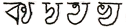

| Varńa Vijiṋána | ||
| Varńa Vijiṋána | ||
|
Dedicated to the venerable pioneers of all the languages of the world.
Following in their footsteps,
Shrii Prabhat Ranjan Sarkar
| Varńa Vijiṋána | ||
|
The series of discourses that comprise the present volume were transcribed from talks given by the author over a period of time that extended from June to November of 1983. The title given by the author was Varńa Vijiṋána, which translates into English as “The Science of Letters”. However it could just as easily be rendered as “The Science of Language”, for in it the author binds the myriad and often mystifying threads of language into a single tapestry and demonstrates with remarkable clarity how they obey the laws of pure science. In a lucid and entertaining style, laced with anecdotes and stories, he uncovers the fundamental principles which govern linguistic expression and blends this with an historical perspective that throws new light on the origins of human language. Many of the ideas that inform these discourses are new to the study of linguistics and are sure to provide ample material for future research.
While Varńa Vijiṋána takes the Bengali language as its initial point of reference, it ranges far and wide across a landscape that includes most of world’s major languages. Time and again the author points out the common factors at work in seemingly disparate idioms. In this way he uses linguistic science to demolish some of the barriers that separate different communities and races.
Those readers who are interested in delving further into the author’s studies in language will be glad to know that they have ample material to choose from. After completing Varńa Vijiṋána, the author embarked upon an eight volume series called Varńa Vicitrá, “Various Uses of Letters” and after that a twenty-six volume series entitled Shabda Cayaniká, “A Collection of Words”. Together they comprise a body of work that is unsurpassed in the field of linguistic studies.
Footnotes by the translator have been signed “–Trans.”. Unsigned footnotes are those of the author.
Square brackets [ ] in the text are used to indicate translations by the translator or other editorial insertions. Round brackets ( ) indicate a word or words originally given by the author.
The author uses a certain shorthand for explaining etymologies of words. Under this system, a minus sign (–) follows a prefix, and a plus sign (+) precedes a suffix. Thus ava – tr + ghaiṋ = avatára can be read, “the root tr prefixed by ava and suffixed by ghaiṋ becomes avatára.”
Finally I would like to call attention to the invaluable contribution of Ácárya Vijayánanda Avadhúta, without which this translation could not have been completed. He compared the English text line by line with the original Bengali, making corrections wherever necessary, and also provided translations for the Sanskrit verses.
| Varńa Vijiṋána | ||
|
All the languages of the world are bound together on a single thread – sútre mańigańá iva. No language is beyond this law. Those languages which used to carry the remnants of natural melodies have also finally had to obey this law. Even before the existence of written script the science of language was based on phonetics. Despite the lack of script, alphabetical order did exist. For example, during the Rgvedic era the letters ka, kha, ga, gha existed but people did not know how to write them. The people of that time were not familiar with the letters of the alphabet – they knew their pronunciation but they could not write them. At that time metrics were fixed according to alphabetical order.
Written script did not exist at the beginning of the Vedic era. Written script came into existence between five and six thousand years ago with the Saendhavii script. Although written script did not exist in the Vedic era, metre did. There are seven metres in the Vedas: Uśńik, Gáyatrii, Anuśt́up, Triśt́up, Brhatii, Jagatii and Paunkti. There were special rules for the pronunciation of Uśńik metre.
The Vedic language is the oldest language that we are familiar with. This language was influential in central Asia and certain parts of India for a period that extended from fifteen thousand years ago to about seven and a half thousand years ago. Its alphabetical order follows the rules of Rgvedic pronunciation. There are three accepted systems of pronunciation in Sanskrit – Saḿvrta, Vivrta and Tiryyak. Both Sanskrit and Vedic have three measures of pronunciation – short, long and extended.
In Sanskrit there are four accepted systems of pronunciation – Káshiká, Dakśińii, Maháráśt́rii and Gaoŕiiya [those of Benares, southern India, Maharashtra and Bengal]. The Rgvedic style of pronunciation is different from the Yajurvedic style of pronunciation. In Saḿvrta the pronunciation of the alphabet is similar to Bengali pronunciation. In Vivrta it is somewhat similar to that of the western areas of Uttar Pradesh. Tiryyak occupies a place somewhere between the English “au” and the English “o”. For example, we write man but we pronounce it somewhere in-between “maun” and “mone”.
The Rgvedic style has a total of fifty letters – sixteen vowels and thirty-four consonants. The sixteen vowels are: a, á, i, ii, u, ú, r, rr, lr, lrr, e, ae, o, ao, aḿ, and ah. The thirty-four consonants are: ka, kha, ga, gha, uṋa, ca, cha, ja, jha, iṋa, t́a, t́ha, d́a, d́ha, ńa, ta, tha, da, dha, na, pa, pha, ba, bha, ma, ya, ra, la, va, sha, śa, sa, ha, and kśa. D́a and d́ha are pronounced in two different ways. The letter d́a is pronounced d́a at the beginning of a word, for example, d́ambaru. However it is pronounced ŕa (rha) in the middle or at the end of a word, as in áŕambara. Similarly, d́ha is pronounced d́ha at the beginning of a word, for example, d́hakká, and ŕha (rhha) in the middle or at the end of a word, as in áśáŕha.
There is a fixed rule for the pronunciation of ya – padánte padamadhyasthe “ya”-kára “ia” ucyate. If ya occurs at the beginning of a word then it is pronounced like a light “ja” as in yoga, yadu, yamuná, but if it comes in the middle or at the end of a word then it is pronounced “ia”, as in viyoga or samaya. Some pandits in northern India mistakenly pronounce the word yoga “iog”. Ishwarchandra Vidyasagar Mahashay placed a dot beneath the letters d́a, d́ha and ya in his grade school primer, Varńa Paricaya, whenever they occurred in the middle or end of a word so that children would not make this sort of mistake.
A language normally lasts about one thousand years and a script about two thousand years before undergoing metamorphosis. Script, however, is not sound. It is alphabetical order. The Bengali script came into existence approximately fifteen hundred years ago and it will survive for some time longer. Due to the invention of printing, the life of the script will be extended somewhat.
An old form of Bengali script has been discovered in Singbhum District’s Jayda village on the banks of the Suvarnarekha River. A deed of gift written in the script of that time has been found in the Shushuniya(1) Hills in Bankura District’s Chatna Thana.(2) These are the two oldest extant examples of Bengali script.
The Prákrta language came into existence approximately thirty-five hundred years ago and when it did Sanskrit or Vedic pronunciation changed. To put it in another way, the name of those altered verbal root forms, word forms, pronouns and vocabulary was Prákrta, which spread orally among the common people. Prákrta came into existence shortly before the advent of Krśńa.
Many people believe that Sanskrit is an artificial language. However, the prevalence of so many Sanskrit words in the speech of uneducated people proves that it is not. For example, kandara is a Sanskrit word. In the colloquial language of Rarh there is a word kándar, that is, a small, deep tributary. If Sanskrit were an artificial language then how could there be so many Sanskrit words in use among uneducated people. The people of Rarh have Sanskrit in their blood. It is their native language. If Bengali is the language of our veins and arteries then Sanskrit is the language of our bone marrow.
The use of r, rr, lr, and lrr is not as widespread in the Yajurveda as it is in the Rgveda. They are also pronounced completely differently. In the Rgveda these letters are pronounced r, rr, lr, and lrr while in the Yajurveda they are pronounced ri, rri, lri, and lrri. In the Atharvaveda they are pronounced ru, rru, lru, and lrru. Modern Bengali has retained the use of r. Adding i to ra can serve the same function as r, but because these two letters can give rise to inversions in the case of certain conjuncts the letter r is used. For example, deva + rśi = devarśi. If it is written deva + riśi then the conjunct cannot be formed.
Modern Indian languages do not follow any specific Vedic rules. Bengali only has the sha pronunciation – śa and sa are not pronounced differently – while some other languages only have the sa pronunciation. For example, shuye paŕa in Bengali is so jáo in Hindi. The rules for Sanskrit-derived words in Bengali follow those for Sanskrit-borrowed words. For this reason, the letters śa and sa are used for spelling purposes but no Bengali teacher ever makes a distinction among the pronunciation of sha, śa and sa.
Ka + śa = kśa (khia). The word shiśya [pupil] was shikhya in Prákrta, hence the modern Panjabi word shikha In Assamese the letter śa becomes kha – niśedh becomes nikhedh. However, sáhas becomes háhakh, that is, sa is pronounced like ha at the beginning of a word and elsewhere like kha. Assamese partially follows the Yajurvedic style.
In regards to pronunciation, the pandits used to follow different rules according to the specific Veda. [[For example, the Bengali jiṋán is jiṋán in the Rgveda, giṋána in the Yajurveda and diṋán in the Yajurveda.(3)]]
In the Rgveda the candrabindu is neither a letter nor is it pronounced. In the Yajurveda it is pronounced but there is no letter for it – the anusvára used to serve in its place, for example, táḿstathaeva. The candrabindu is pronounced in six of the twelve Bengali dialects – central Rarhi, Kánthi, Calcutta, Nadia, Shershahbadii and Rangpuri – and to a small extent in Varendrii.
Footnotes
(1) According to the Bengali system of verbal roots and suffixes, the word shushuniyá means “one whose nature is to remain lying”, for example, the shushuni creeper, that is, “that creeper which makes one sleepy when it is eaten”.
(2) A tháná is a police station and by extension the subdivision demarcated by the area controlled or administrated by that police station. –Trans.
(3) [[As is more clear in the original Bengali script, ṋ in “the Bengali jiṋán” is part of the consonant iṋa, whereas ṋ in “jiṋán in the Rgveda, giṋána . . . and diṋán” is a candrabindu (illustrated in the Roman Saḿskrta table by aṋ). Thus in the last three of the words under discussion, ṋ indicates only that the “i” in each word should be nasalized. –Trans.]]
| Varńa Vijiṋána | ||
|
Phonetics is a completely scientific subject. In the world of action not a single step can be taken without science. Here it will have to be borne in mind that the application of science changes according to the changes in time, place and person. Both place and person can change at the same time. For example, the Vedic kśa (k-śa) becomes kśa (k-cha) with a change in person. Kutsá becomes kecchá. This altered pronunciation takes place in accordance with differences in individual body structure, changes in blood and climatic changes. The spoken language of northern Chittagong is pure Bengali; there is no foreign influence over its style of pronunciation. However, since south Chittagong’s Cox’s Bazar lies near Burma, it has been influenced by Burmese pronunciation, especially in the areas near Teknap. As a result, the pronunciation has become non-Vedic despite the fact that from the linguistic point of view it is pure Bengali.
The same thing has happened with Assamese. Although by and large Assamese follows the Yajurvedic style of pronunciation, some altered pronunciation has crept in. The reason for this is that when the people of the Ahom tribes migrated from Burma they brought with them that country’s style of pronunciation and that influenced the local phonetics. For example, in Assamese the pronunciation of ca has become like that of sa. The pronunciation of the t́a varga is similar to that of the ta varga and there is a mutual interchange that occurs between these two vargas.(1) For example, kut́il becomes somewhat similar to kutil. This is due to the influence of different clans. There is not a single trace of Burmese influence in the pronunciation of Rangpuri Bengali in nearby northern Bengal.
The pronunciation of the Rarh area corresponds to that of the rest of northern India. It corresponds to that of Oriya except where the Oriya pronunciation style follows the Atharvavedic or Rgvedic pronunciation. For example, the pronunciation of phala [fruit] in Oriya is phaŕa. In Oriya’s Rgvedic style of pronunciation there is a difference between the pronunciation of ádi la [la at the beginning of a word] and antahstha la [la in the middle or end of a word], but in the rest of northern India they are pronounced the same.(2) Although there is a difference between ádi la and antahstha la in the spoken language in some parts of Bihar, Rajasthan and other areas, there is no difference in the written language. In some areas in Bihar kalá [banana] is called kerá, gáli [abuse] is pronounced gári, and kapál [forehead] is pronounced kapáŕ. In Oriya, Gujarati and the south Indian languages antahstha la is both pronounced differently and used differently, and for this reason there are separate forms as well. However, in Bengali they are written and pronounced the same.
In Sanskrit phonetics the letters are systematically arranged. There are fourteen pure vowels – a, á, i, ii, u, ú, r, rr, lr, lrr, e, ae, o, ao – and two demi-vowels – aḿ and ah. In the Rgveda there is also a long anusvára ( ) that no longer exists in modern Sanskrit. Now the question is, why this demi-vowel?
) that no longer exists in modern Sanskrit. Now the question is, why this demi-vowel?
A vowel can be pronounced without any additional help, but in the case of aḿ and ah, the ḿ and the h cannot be pronounced by themselves. Since they cannot be pronounced alone they are called demi-vowels, that is, they are vowels but not full vowels. Thus they are called ayogaváha in Sanskrit, that is, these two vowels cannot be pronounced without another’s help. A thousand years ago the visarga (h) existed in Bengali and also in Maethilii; however at that time it was written like the Bengali symbol for “four” (৪).
Among the thirty-four consonants, those belonging to the vargas – ka, kha, ga, gha, uṋa, ca, cha, ja, jha, iṋa, t́a, t́ha, d́a, d́ha, ńa, ta, tha, da, dha, na, pa, pha, ba, bha, ma – are pure consonants. Sha, sa, śa, ha and kśa are called uśmavarńa [aspirates]. When they are pronounced they create heat in the vocal cavity.(3) They are consonants but not pure consonants. Ya, ra, la and va are antahsthavarńa. They are also not pure consonants. They are pronounced one way at the beginning of a word and another way in the middle or at the end of a word. Ya at the beginning of a word is pronounced like a light “ja” [as in “Germany”], for example, yadu, yadi, yága-yajiṋa. In the middle or at the end of a word it is pronounced ia. Incidentally, it is worth mentioning that ja is a hard “ja” sound (palatal), for example, janttu-jánowár.
In Bengali vargiiya ja (hard or palatal) is used in two ways. First, wherever hard ja is used in a Sanskrit word it is retained in Bengali, for example, jat́hara, janttu, etc. Second, wherever the hard da in Sanskrit has become transformed into hard ja in Prákrta (vargiiya ja or palatal ja). For example, adya → ajja → áj; duhitá → juhiá → jhiá → jhia → jhi. This change, that is, the passage of these words from Sanskrit to Bengali, took five thousand years. The change went through three phases, from Prákrta to Demi-Prákrta to old Bengali. Such a transformation will always have the hard ja, for example, duhitá. Here there is force applied to the du. In Sanskrit the word duhitr is derived by adding the suffix trń to the verbal root duh – in Latin, duhitar; in modern English, “daughter”. Since the word duhitr contains the letter ha, the English “daughter” is also spelled with an “h”, however over time its pronunciation has been lost. From this it can clearly deduced that both English and Sanskrit are Vedic languages, hence the many similarities between the two. For example, the word “night” is naktraḿ in Vedic and [[noctum]] in old Latin. The Latin adjective is “nocturnal”.
Thus we see that at the beginning of a word ya is pronounced like a light ja, and in the middle or at the end of a word its pronunciation becomes ia. There is less influence of Sanskrit in north India by comparison due to the predominance of Urdu; thus this rule is not followed in Hindi. For example, iahán is written yahán although, according to the rule, if we write yahán it is not correct to pronounce it iahán.
The next letter is ra. When ra comes at the beginning of a word it is pronounced ra. It is pronounced this way when the tongue touches the teeth of the upper palate. One example is rańa. If ra is in the middle or at the end of a word it is pronounced without touching the tongue to the teeth of the upper palate, for example, carańa.
Then comes la. If la is at the beginning of a word it is called ádi la.(4) For example, la in latá is pronounced la. If la occurs in the middle or at the end of a word it is pronounced lra. For example, the correct pronunciation of the word phala is phalra (phalram, phalre, phalráni). This rule is not followed in northern India; thus the Sanskrit pandits there pronounce it incorrectly. In Rajasthan goli is pronounced gori. In Bhojpuri kapál is pronounced kapáŕ and diwál is diwáŕ.
Next comes antahstha va. In Bengali, antahstha va and vargiiya ba are written and pronounced the same. At the beginning of a word antahstha va is pronounced like the English “va”, as in the pronunciation of “van” and “caravan”. That is, it is pronounced by filling the mouth with air, closing it, and then thrusting the lower and upper lips out. In the middle or at the end of a word antahstha va is pronounced like the English “wa”. This is also the case when va is the second part of a conjunct, for example, vidvána. In northern India, antahstha va is mistakenly pronounced “wa” at all times.
Thus these four letters – ya, ra, la and va – are antahsthavarńa rather than pure consonants. Why? Because in fact they are each a diphthong of two vowels. Specifically, ya = i + a, ra = r + a, la = lr + a, and va = o + a. They are mistakenly taken to be consonants but they are actually not consonants.
Footnotes
(1) Any of the five groups into which Bengali consonants are divided according to the mechanics of pronunciation, for example, dental letters (ta varga), pronounced by touching the tongue to the teeth. –Trans.
(2) Of course, in Indian cultural terms Orissa is considered to be southern. The Orissan Brahmans in Bengal who follow the Dáyabhága system of inheritance are called southern Vedic Brahmans.
(3) Uśma means “hot” in Sanskrit. –Trans.
(4) Ádi means “beginning” in Sanskrit. –Trans.
| Varńa Vijiṋána | ||
|
Earlier I said that the letters included within the five vargas – ka, ca, t́a, ta, and pa – are pure consonants. The remaining consonants are not pure consonants. I also pointed out that sa, sha, śa, ha, and kśa are not pure consonants because they are pronounced with a whistle. They are whistled aspirates (uśmavarńa). At the time of pronunciation they produce some slight heat in the lips and tongue. Ya, ra, la, and va are also not pure consonants because they are diphthongs of multiple vowels. These kinds of diphthongs were prevalent in old English, for example “Caesar”, but not in modern English.
In Bengali both hard ja and light ya are used. Ya is a diphthong composed of i and a. Hard ja is pronounced by touching the tongue to the upper palate while light ya is pronounced by thrusting the tongue towards the teeth’s lower gum.
Earlier I said that when ra is at the beginning of a word it is called ádi ra, as in rańa. It is pronounced by touching the tongue to the teeth of the upper palate. If it occurs in the middle or at the end of a word then it is pronounced as a light ra without the tongue touching the teeth of the upper palate, as in carańa. Unfortunately, some Sanskrit pandits overlook this speciality of rás pronunciation. I hope they will pay sufficient attention to this.
Now as for la, it is called ádi la when it comes at the beginning of a word and its pronunciation is a straightforward la sound, as in latá. When it is in the middle or at the end of a word then its pronunciation changes. The Rgvedic pronunciation becomes lra, the Yajurvedic pronunciation becomes lri, and the Atharvavedic pronunciation becomes lru.
The addition of the vowel a to long r (rr) or to long lr (lrr) does not create an antahsthavarńa. In the Rgveda the pronunciation of rr and lrr respectively are rr and lrr and in the Yajurveda they are rri and lrri. In the Atharvaveda they are rru and lrru, however, they are, for all intents and purposes, non-existent in the Atharvaveda. Both Panini and Vopadeva [famous Sanskrit grammarians] use them infrequently. In their opinion there is not much need for them. The Vedas only have a few words that contain lrr. Afterwards it disappeared. However, rr continues to be used to a small extent. Lr was also used here and there about twelve or thirteen hundred years ago. Now it has completely disappeared.
Primary school children are mistakenly taught lr for licu. Now the vowel lr is pronounced lri, not li, but the fruit’s name is licu, not lricu. There is a small anecdote about the naming of the licu fruit. Two Chinese horticulturists, Mr. Pi Si and Mr. Li Chi, were conducting research on wild fruits to improve them. The high quality fruit that Mr. Pi Si developed was named “peach” (in Hindi, sátálu) after the associated researcher, and the fruit that Mr. Li Chi developed was given his name, “litchi”. Mr. Li Chi’s father’s name was Fi Chu. Many people felt that since the father’s name was Fi Chu then the son’s name should have been Li Chu. Thus the fruit is called licu in some parts of China and in Bengal.
In the Rgveda there is a difference between the pronunciation of the short anusvára, the long anusvára and the extended anusvára. However, a separate letter was not used for the extended anusvára when the Vedas were written down later on, though there were separate letters for the short and long anusvára. Its pronunciation had to be learned by ear.
Next comes antahstha va. At the beginning of a word it is pronounced like the English “va”, as in “van”. The word viśńu is pronounced with this “va”. In the middle or at the end of a word it is pronounced like “wa”. Vidván, for example, becomes “vidwan”; dvádashii becomes “dwadashii”, and so on. In Calcutta these two words are pronounced viddán and dádashii respectively. In Bengali the pronunciation of Calcutta is accepted as standard pronunciation.
When a conjunct has va, ya or ma as the second letter then the word is pronounced as if that letter were not there, and the pronunciation of the letter to which it is attached is doubled. For example, vidván = viddán, padmá = paddá, vidyá = viddá, and so on. Only in Rarh, especially in Burdwan, are there exceptions to this. For example, not long ago Lakśmii used to be pronounced “Lachmii”. Svámii is still pronounced “swami” and dvádashii, “dwadashii”; jyánta is pronounced jiiánta.
According to the rules of Sanskrit grammar, if a ref is placed above a letter (৴) then the spelling of the concerned letter can be doubled as an alternative, for example, dharma, dharmma; karma, karmma; etc. Fifty years ago this doubled spelling was still very much in evidence. The spelling dharmma used to be common.
Another rule that used to be in force was that whenever a ref was added to an aspirated letter then at the time of pronunciation it would be placed above the corresponding non-aspirated letter, for example, arddha, garbbha, and so on.
According to Sanskrit grammar, if there is a doubled letter in a root word then the doubling must be retained in words derived from that root with the ref added to that consonant. Take, for example, kárttika. Since it comes from the root word krttiká, not krtiká, kárttika is spelled with two t’s. Similar is the case with parivarttana, anuvarttana, etc. Recently a committee was formed by the Calcutta University authorities to look into spelling conventions. After some discussion the committee issued some statements regarding this matter but they did not give any clear instruction on the subject.
Now let us come to vargiiya ba: antahstha va and vargiiya ba are pronounced and spelled the same in Bengali. However in the Rgveda, Yajurveda and Atharvaveda, vargiiya ba is used separately, although its use is limited. Generally, it is used in four specific cases with, of course, some exceptions.
1) Words formed from bálá: bálá, bálaka, báliká, priyabálá, etc. 2) Words formed from bodha: buddha, buddhi, bodhi, prabodha, udbodhana, etc. 3) Words formed from brhat: brhat, brahma, bráhmańa, bráhma, etc. 4) Words formed from bandhana: bandhu, bandhana, bándhava, etc.
In addition to this there are also a few other instances where vargiiya ba is used.
Vargiiya ba is pronounced like the English “ba”. Antahstha va is sometimes pronounced like the English “va” and sometimes like the English “wa”. In English, in order to lengthen the pronunciation of “u”, two “u”s are added together to make “w” (double “u”). In French two “v”s are added together which they call double v. The French would commonly use this double v at the beginning of non-French words in order to render them properly. This double v was not used in old Latin but later on it was accepted in order to facilitate proper pronunciation.
In English the accented letter “d” is pronounced in two different ways. The Anglo-Saxon style of pronunciation is similar to ja, for example, “ejucation”, “immejiate”, “guarjian”. In the Norman style of pronunciation “d” is pronounced like d́a, for example, “education”, “immediate”, “guardian”. Both kinds of pronunciation are correct.
The various letters are divided into palatal, cerebral and dental letters according to the differences in pronunciation. The palatal letters are pronounced by touching the tongue to the upper palate. For example, ca, cha, ja, jha, ina, and sha are palatal letters. The cerebral letters are pronounced by touching the tongue to the múrdha. The passageway by which water exits when you draw water up through the nose and then expel it through the mouth is known as múrdha. T́a, t́ha, d́a, d́ha, ńa, and śa are cerebral letters. The name given to those letters that are pronounced by pushing the tongue against the teeth is “dental letters”. For example, ta, tha, da, dha, na and sa.
In phonetics there is a hard and fast rule that members from the three different groups of letters cannot combine together to form diphthongs. For example, in the word nishcala, ca is a palatal letter, thus it must have sha as its conjunct, not śa or sa. Similarly, caiṋcala combines ina + ca, not n + ca. Kaśt́a cannot be spelled kast́a. Thus, śt́eshan [station] and práutiśt́ [Proutist] are always spelled with ś + t́a. The only exception is prashna [question]. Prashina would be correct (ina is the palatal na), however for ease of pronunciation both grammarians, Panini and Vopadeva, accepted the substitution of na for the palatal ina in prashna.
For every rule there is some exception or another. For example, if the English root verb ends in “t” then the noun is created from that root by adding “ion”. For example, the noun for the verb “opt” is “option”. If it does not end in “t” then “sion” is added instead. For example, “di – vide” + “sion” = “division”, “revision”, etc. If the root verb has a long vowel then the noun is formed by adding only “ion”, but instead of pronouncing it shyán, it is pronounced tian. For example, “question” is pronounced “quest-i-un”, not “quest-chen”. The one exception is the verb “mit”. If the root verb is “mit” then the noun is formed by adding “ssion” instead of “ion”. In other words, the correct spelling is “mission”, not “mition”, for example, “permission”, “submission”, “omission”, “commission”, etc.
Then comes na and ma when they are at the end of the root word and na and ma when they are not at the end of the word. If ma or na come at the end of the root and are followed by a consonant then the fifth letter of that varga is used, or else ḿ. For example, sham + kara = shauṋkara or shaḿkara. Both are correct. However, ḿ is not used to spell sauṋga because the na in the verbal root sanj is not a root-ending na. Gauṋga cannot be spelled with ḿ because the initial word gam is not a verbal root. It is the singular second-case form of the word ga. Here the word ga means “vast land”.
Both hard ja and light ya are used in Bengali, however Bengali does not have a letter that corresponds to the English “z” so its pronunciation can be indicated by adding a dot below the hard ja. This is what I do. The writer Rájashekhar Bose (Parashuráma) used the English letter “z” in his compositions and added an á after it – zানতি পার না.
Arabic, Farsi, English, Latin and French all have the letter “f” but Sanskrit does not. Thus words like takhlif, “Finish”, “fain”, kanif, “fraternal”, etc. cannot be written properly in Sanskrit. I am in favour of adding a dot below the letter pha (ফ়) for this purpose. However, if it is written with a dot below it then great care must be taken because if the dot is written a little to one side or the other it can create confusion in both pronunciation and meaning.
Some people use the Bengali letter cha to indicate the sound of the heavily aspirated Arabic sa, for example, chaeyad, echlám, etc. I have no objection to this because although the letter does not exist in Bengali its pronunciation has to be indicated in some way. In this case I am personally in favour of adding a dot below the letter sa (স়). However I do not see any reason to object to using cha instead. For example, what is the harm in writing chahii hádich for sahiih hádis.
| Varńa Vijiṋána | ||
|
Panini, by paying particular attention to sound, was the first to develop the science of phonetics, an inseparable part of philology. Although this was a long time ago, it was not that long ago. By then the Rgvedic and Yajurvedic periods had ended and the Atharvavedic period was in progress. His grammar was based on the Yajurveda, not on the Rgveda, because by then the Rgvedic style of pronunciation had disappeared. For this reason he encountered a good deal of difficulty.
Panini developed special rules for the use of ńa and śa based on phonetics. Earlier I pointed out that the Yajurvedic style of pronunciation was different from the Rgvedic style of pronunciation. Take, for example, the pronunciation of ńa and śa. In the case of Panjabi-speaking areas and nearby areas (in Paeshácii Prákrta-speaking areas) kśamá is pronounced khamá, not kśamá. This is the Yajurvedic style. Panini was from Gándhár (nowadays partially in Pakistan and partially in Afghanistan). The spoken language of this region during Panini’s time was Páshcáttya Prákrta. It was Panini’s mother tongue and the ancestor of the modern Pashto language.
Panini observed that in certain areas the pronunciation of ńa had metamorphosed naturally into ŕhan or nan. He accepted this natural pronunciation of ńa. For example, vipańi, báńijya, kalyáńa, and so on, are all pronounced in the Yajurvedic style.
Panini observed that if a word contained ra, r or śa then due to their influence the dental na would be pronounced like the cerebral ńa. Taking phonetics carefully into account, he legitimized this as the ńa rule, for example, dhárańá. Here he acted according to Yajurvedic phonetics, not Rgvedic, because by then the Rgveda was dúrast [remote].(1) In the Rgvedic style dhárańá becomes dháraŕhán. Many pandits pronounce dhárańá incorrectly.
Panini fixed certain rules in this regard by using psychologically sound means. If, in any compound word, ra, r, or śa are present in the first word then the na in the following word is often not affected. For example, harináma. Here there is a break between the two words, hari and náma. For this reason the ra of the first word hari does not affect the na of the second word náma. That is, the ná remains na. However, if the first word contains the prefix pra or pari then the na in the next word becomes ńa if it follows immediately afterwards. For example, parińáma, prańáma, prańaya, etc.
In some cases ra, r, or śa in the first word does not influence the following word. However there are some sounds in the following word whose pronunciation is easily affected even if separated by a gap.(2) If the subsequent word contains a sound which extends the influence of the first word over the second then in such cases the ra of the first word affects the second word and the na changes into ńa. Some of these kinds of words have become exceptions – ayana (uttaráyańa), ahna (aparáhńa, púrváhńa, but madhyáhna), úhinii (akśaohińii), grámiińa, sarváungiińa, súrpańakhá.
In some cases the ra, r or śa of the first word does not affect the second word during pronunciation, for example, parinirváńa. If pra comes before the verbal root nash then it does not have any significant effect, thus prańásha can be written with either na or ńa.
If a vowel or light consonant falls just after or between ra, r or śa then it affects even a distantly situated na. In this case, the rule is that ra, r or śa affects the na even if it does not immediately follow it. For example, váśpáyańa. In the case of vowels, ka varga, ya, va, and ha the distant na becomes ńa even if they are situated far away and even if any of them occurs more than once.
Panini framed the rules of ńa and śa in such a way in his Sanskrit grammar that it is cent-per-cent acoustically-based. But it is worth pointing out that this style of pronunciation was already in existence, that is, people used to pronounce it that way. All that Panini did was to give this style of pronunciation a systematic form. He brought it within the scope of a formula.
The Bengali language differs from Sanskrit in many areas. Bengali has only the sha pronunciation, not that of śa or sa. However, although there is no separate pronunciation of śa, in special circumstances there is a slight difference in pronunciation. For example, śańd́a, rákśasa. In one case the śa is pronounced one way – śańd́a – and in the other it is pronounced differently – rákśasa (k + śa = kśa (kha)). Sa only survives as a written letter; it doesn’t have any separate pronunciation. Some people incorrectly pronounce words spelled with sha with a type of distorted sa sound. People like to make jokes about this. For example, syámavájárer Sasiivávu sasá khete khete sedin sásácchilen [Shyambazaar’s Mr. Shashii threatened while eating a cucumber that day].(3) Another example of how Bengali and Sanskrit have deviated from each other in many instances in terms of pronunciation is that in Sanskrit śa can be substituted for sa when a verbal root beginning with sa follows the prefix ni. Thus in Sanskrit both niśáda and nisáda are correct (ni – sad verbal root suffixed by ghaiṋ). In Bengali only niśáda is used. If anyone spells niśáda with sa then some pandits may very well mark it wrong. The same goes for upaniśada (upa – ni – śad verbal root, kvip suffix = upaniśada in Bengali). In Sanskrit both upaniśada and upanisada are correct. Bengali has the letter sa but no separate pronunciation for it, so it is avoided as much as possible.
The suffix shatr has been used after the parasmaepadii verbal root to signify yá cale caleche [that which has been going]. At the time of the Rgveda there was a clear line of demarcation between parasmaepadii and átmanepadii. Whenever one’s own self was the main subject then átmanepadii was used and whenever another was the main subject then parasmaepadii was used. Wherever self [átma] or para [other] was not made clear then it was considered ubhayapadii. Átmanedpadii was used extensively in the Rgveda but its use diminished in the Yajurveda. Its usage disappeared for all intents and purposes in the Atharvaveda. Panini’s mother tongue was not Vedic Sanskrit, however he had to base his division of átmanepadii and parasmaepadii verbs on the Vedas, so he met with some difficulty in this regard.
Often it is difficult to determine which is átmanepadii and which is parasmaepadii. Take, for example, the verbal roots cal [to go] and ji [to triumph]. In the Rgveda they are átmanepadii, for example, jayate – satyameva jayate [truth alone triumphs]. However in modern Sanskrit the verbal root ji is parasmaepadii, thus jayati. Of course, after a prefix the verbal root ji is átmanepadii, for example, vi – jayati = vijayate. Due to these kinds of difficulties he accepted the use of ubhayapadii.
Vopadeva only accepted the use of parasmaepadii. Hence shatr will be added to cal, not shánac (to indicate present participle), because in Laokika Sanskrit the verbal root cal is parasmaepadii. However, after a lot of thought I finally recalled a Sanskrit shloka from the time of the Buddha, twenty-five hundred years ago, which uses the verbal root cal in átmanepadii (in the laokika sense). The example is:
Ihásane shuśyatu me shariiram
Tvagasthimáḿsaḿ pralayaiṋca yátu
Aprápyabodhiḿbahukalpadurlabháḿ
Naevásanát káyamatashcalisyate
Thus Panini was forced to accept ubhayapadii because cal verbal root + shatr = calat. For example, calat + citra = calaccitra. And cal + shánac = calamána. Both are correct. Bear in mind that shatr, shánac, átmanepadii, parasmaepadii, short, long and extended vowels, pronunciation – all of these change as the era changes. They have done so in the past and will continue to do so in the future.
In Sanskrit the suffix kvip is used in the sense of “natural inclination”. For example, gam + kvip = jagat [world] or “that whose nature is to move”. However, where it is haye caleche [in continuity] then the suffix is shatr. For example, gam + shatr = gacchat [going]. In the case of shánac, since it is átmanepadii then shánac is okay even if it does not preserve much rhythm. That is, shánac has a light rhythm. Either mán or án is added to shánac. Generally here, when the original verbal root ends in a consonant (for example, sev), then the third person dual ete is used in its lat́ (sevete).(4) In this case, in place of this ete, mána is used with the aforementioned verbal root sev (sevamána). If the original verbal root ends in a vowel (for example, shii), then in lat́, third person, dual number, áte is used (shayáte). In this case, if shánac is added to the verbal root shii, then ána (shayána) is used in place of áte. In the case of svabháva [natural inclination] and in the sense of continuity, the two different forms of the same verb are not used in Sanskrit, but they are with the verbal adjectives. In English the verbal adjectives are formed by adding the suffixes “ing” and “ed”, etc. In the Indian language Bhojpuri, however, there are separate verbs for the verb forms in the sense of the natural inclination and for haye caleche. For example, Rámka bhái paŕelá and Rámka bhái paŕatá.
In this way Panini was able to do everyone a service by creating a harmonious adjustment amongst grammar, phonetics and rhythm, something which was not easy to do. Vopadeva added lightness, but in order to make it easy to add this lightness he ended up making the grammar complex. Panini’s composition and formation of grammar was quite strong and beautiful; it has a scientific framework. There is no latitude [jo] given it to meander here and there.(5)
Now let us see what happens with this phonetics in Arabic. In the majority of the European languages “h” at the beginning of a word is not pronounced. For example, “hotel”. In French it is pronounced otel. However in Arabic it is not silent. Sometimes it is pronounced and sometimes it is partially pronounced. In Arabic, if there is a vowel or an “h” after a word then the sixth case declension ul is inserted in place of a pronounced or unpronounced “h”. Where there is a clearly pronounced or silent consonant then the form of the sixth case declension is changed consistent with the sound of the consonant. For example, phajal + ul + rahaman = phajalur-rahamán. Here the consonant ra is partially pronounced thus we cannot say ul; it becomes phajalur. However, ájij + ul + hak = ájijuahak because the consonant ha in the word hak is fully pronounced. Thus the l is retained here making ájijulhak. Najar + ul + islám = najarulislám because the vowel l is clearly pronounced. However, ájim + ul + sán = ájimusyán because here the consonant sa is clearly pronounced, thus ul is not retained. In the same way, sháms + ul + náhár = shámsunnáhár.
Grammatical aphorisms are put together according to proper and natural pronunciation for the sake of phonetics. The style of pronunciation is created beforehand. Through careful listening the grammarians record this pronunciation at the syllabic level. For this reason all the languages of the world are bound together on a single thread; in the absence of phonetics no language can move a single step. Bengali has Turkish words as well, along with Arabic and Persian. Careful attention must be paid so that these words can be pronounced properly.
In all languages pronunciation changes in order to keep pace with vowel sounds. For example, in English there are twenty-one different pronunciations of the letter “a” but in French there is only one, the Bengali á. In French “Paris” is pronounced párii – the “s” is silent because the rule in French is that in most cases the final consonant is not pronounced at the end of a word; if the final consonant is “c”, “f”, “l”, or “r” then it is pronounced. To facilitate their pronunciation a vowel sound is added afterwards. Many people mistakenly spell the French word madame “madam”. If madame is spelled in French without the final “e” then its pronunciation becomes mádán. It has to be spelled with an “e” at the end in order to preserve the correct pronunciation. In French the masculine singular for “my” is mon and the feminine singular is ma. The plural is mes, thus the plural for madame is mesdames. Some people mistakenly read this as “may-s-day-m-s”.
“A” in English is a light vowel, thus if a root verb occurs after the prefix “a” then the first consonant is doubled. For example, “a + quire”. Here “quire” is the root verb and “a” is the prefix. In this case the “q” should be doubled, however since double “q” cannot be pronounced, a “c” is substituted instead; it becomes “acquire”. The same is the case with “acquisition”, but in the case of “require” and “requisition” the consonant is not doubled because “e” is not a light vowel.
This rule is followed in Sanskrit. It is doubled in accordance with the rules of phonetics. For example, tarań + apashyat = tarańńapashyat, that is, “he saw [dekhle] while swimming”. (Now, tell me, will it be dekhla or dekhle in the spoken language of Calcutta? It will be dekhle. In Rarhi Bengali it will be dekhlek in this case. Bear in mind that if the final k is dropped from the Rarhi Bengali it becomes the Calcutta Bengali. Of course, in this case the transitive and intransitive verb forms are different. Similarly, the spoken form of se balila [he spoke] will not be se balla but rather se balle.)
In French the masculine form of the definite article (the) is le, the feminine form is la and the plural form is les. However here the pronunciation of this le, la and les changes where there is elision. In such cases the spelling practice becomes paramount. For example, “the men” in French is not le am but lezam [les hommes].
The English word “knife” comes from the French word kanife. Here the English letter “k” is silent. However, since “knife” comes from the French word kanife, it is still spelt with a “k”.
“H” at the beginning of a word is silent in French, for example, “history” – the French pronunciation is istoire. “Hotel” in French is pronounced otel, however in English the pronunciation of the “h” is maintained, thus it is pronounced “hotel”. “Hospital” in French is pronounced opital, but in English it is “hospital”. However, in the case of “honour” the French style of pronunciation, onár, has been preserved in English. Even uneducated French people follow these natural pronunciation practices.
Not only is the pronunciation and spelling of prefixes influenced by the style of vowel pronunciation, suffixes are as well. The “pre” of “prefix” is a Latin prefix and “fix” is a verbal root. Thus “pre” + “fix” makes “prefix”. In Sanskrit there are twenty prefixes. “Suffix” is derived from placing “sub” before “fix”, that is, “sub” + “fix”. Here the “b” becomes an “f” because “b” is a medium consonant, thus “suffix” is spelled with two “f”s. The first “f” of “suffix” is a substitute for “b”; the second “f” is a hard sound.
If there is a suffix added to the root word then it is called taddhita, and in the case of a verbal root with an added suffix it is called krtprakarańa. In this krt or taddhita process of adding a suffix to a root word or verbal root, the original root word or verbal root occasions, in some cases, a change in consonant, and sometimes a change in vowel. For example, sarvajana + iin = sarvajaniin. If śńik is added to sarvajana it makes sarvajanik but instead it is pronounced sárvajanik.
Sometimes in the roots of Arabic words, if the verbal root is made into a noun then mu is added and a change occurs in the second consonant. For example, musháfir means “one who makes a journey [sháfar]”. In this case, according to the rule, mu is added before shafar and it becomes musháfir. Mu + shafar = musháfir. Similarly, mu + hájir = muhájer; mu + sáhib = musáheb. This change in the second is not a product of grammar but of the people. When Arabic arrived in India the Koráńasharif had already been written down. Arabic grammar came into being after the composition of the Koran. There are a great number of Arabic words in Bengali but they came much later.
These kinds of rules also exist in English. There is an English rule that when there are two vowels then the short vowel follows the long vowel. In Bengali also it is priiti → piiriti (not piriiti). Sanskrit also follows this rule. Panini said that whenever a consonant follows which requires the vowel to be lengthened in order to facilitate its pronunciation then the vowel becomes long. For example, cakśu + roga; the spelling will be cakśúroga. Similarly, ni + rava = niirava. The ra of cakśúroga is a hard ra. In the case of a light ra this does not take place.
When “i” and “e” are placed side by side in English then the “i” comes first because its pronunciation is longer and stronger than that of the “e”. The pronunciation of “i” is always i, but there are many pronunciations of “e” – i, e, á – thus “e” comes after “i”. However, there can be exceptions after a light consonant, for example, “ceive”. Here “c” is the original consonant, thus “i” comes after “e” in the verbal root “ceive”. This rule remains in force when the verbal root “ceive” follows different prefixes, for example, “receive”, “perceive”, etc. Similar is the case with “leisure”, “counterfeit”, and so on. Hindi also follows some of these same rules, for example, laŕkii, but laŕkián.
Footnotes
(1) The two Farsi words, dúr and ast are both Vedic in origin. The Farsi dúr comes from the Vedic dúraḿ; the Farsi ast comes from the Vedic asti.
(2) The people of Calcutta say gechi [“have gone-present perfect”]; people from Nadia say giyechi. In giyechi the ye collides with the cha. However, in gechi there is no ye to collide with it. From gechi comes gechlum [preterite tense] (Calcutta); from giyechi comes giyechilám (Nadia). I find gechlum to be more advantageous because it can be pronounced more rapidly, thus time and effort are saved.
(3) The play in sounds comes from replacing the initial shas with sa. –Trans.
(4) Sanskrit recognizes three variations in number: singular, dual and plural. Lat́ is present indicative or present continuous. – Trans.
(5) The word jo means “proper environment”. Farmers ask: Does the land have jo or not? In pure Bengali it is jo; in Rarhi Bengali it is batar – not bátar. Bátar means “tendency to itch” – in Sanskrit, kańd́úyana. In Sanskrit its meaning is “means”.
| Varńa Vijiṋána | ||
|
The Bengali or Gaoŕiiya style of vowel pronunciation differs from the other three accepted styles of pronunciation in India. It has some deviations from the rules of Sanskrit but they are accepted. It is also not contrary to phonetics if there are difficulties in elision or spelling. In Laokika Sanskrit there are four accepted original styles of pronunciation – Káshiká, Maháráśt́rii, Dravidian and Bengali.
A is pronounced in three ways: saḿvrta, vivrta, and tiryaka. Bengali pronunciation is saḿvrta. The Káshiká style is vivrta pronunciation. The pronunciation of the remaining two is so lengthened or extended that the pronunciation of ka sounds like ká, kha like khá, and ga like gá. For example, Pát́ná is written “Patna” in English, Pat́ná in Hindi, Pat́ńá in Marathii and Pát́ná in Bengali. Each spelling is correct according to its own style of pronunciation. Moreover, all aspects of these spellings follow some particular accepted style.
Now the pronunciation of the letter á in the Gaoŕiiya style is simply á. In the remaining styles it is long á – like the pronunciation of the French letter “a”. For example, cheval (meaning “horse”), hopital (“hospital” in English). In both of these the pronunciation of the letter “a” is long á. In eastern India it is simple á. Jamalpur is written Jámálpur in eastern India while in the rest of India it is written and pronounced Jamálpur.
There is a great deal of similarity between the Arabic and Hebrew languages. For example, the Arabic álif is alif [eyálif] in Hebrew. In Greek it is alpha; however the Greek style of pronunciation differs somewhat because in Greek there is a limited pronunciation of the ta varga. The pronunciation of the t́a varga is more extensive. I noticed this especially when I was in Greece.
Both Arabic and Hebrew are Semitic languages and for this reason the relationship between them is extremely close. Here are a few examples of this closeness:
| Hebrew | Arabic |
| Joseph | Yusuf |
| Jacob | Yakub |
| Solomon | Suleman |
The Sanskrit letter a, like the Roman letter “a” also has various pronunciations. Although the letter e in Sanskrit is pronounced nearly the same everywhere, it is not exactly the same. In Vedic long e is pronounced but there is no practice of writing it.
Ae comes after e. In Sanskrit it is pronounced ayáy. For this reason “bank” can be written vaeḿk in Sanskrit and in Hindi as well. Only in Bengali style is it written byáḿk. In Sanskrit this pronunciation would become biáḿk. Sanskrit and Bengali differ just as tál [palm] and gol do. If someone mistakes a tál tree for a gol tree or vice versa then we say that they have twisted things around.
In the Calcutta pronunciation of pet́, tel, bel, etc. the e is not pronounced eyá, that is, they are not pronounced pyát́, tyál, byál. In some areas they are pronounced pyát́, tyál, byál. This kind of pronunciation runs contrary to Sanskrit style. It happens due to the influence of Indo-Burmese pronunciation. In Rarh the village folk pronounce e as e, not as eyá. They do not say eyákádash for ekádash. This kind of pronunciation such as eyágára, eyákádash etc. does not concord with Aryan styles of pronunciation. The pronunciation of Rarh concords with the Aryan styles.
The pronunciation of the letter o is correct, but according to the Sanskrit style of pronunciation the letter ao (ঔ) is pronounced a-o. In Hindi the word aośadh is pronounced aośadh. Other examples are mahaośadh, akśaohińii, daolat and so on. The pronunciation of ae and ao in Sanskrit should be maintained according to Sanskrit style, otherwise it will create difficulties with vowel elision.
Ninety-three percent of the Bengali vocabulary comes from Sanskrit. There is no need for those Sanskrit words to be pronounced in Sanskrit style if they are to be used in Bengali because there is a difference of four generations between Sanskrit and Bengali – Sanskrit → Prákrta → Demi-Prákrta → old Bengali → modern Bengali. Ámra → ámba → ámbá → ánbaa → ánb [mango]. Many Bengalees say ám but from the standpoint of linguistic derivation, ánb is much more correct. Two and a half of the three letters that make up the Prákrta word ámba remain in the word ánb – the letter á, the full ba, and a half in the candrabindu form of the letter ma. In ám, however, only two letters remain. Similar is the case with tánbá and nábá. For example, in Panjabi one says ámb-dá-acár. It is incorrect.
Prákrta pronunciation differs from Sanskrit pronunciation. Furthermore, there are differences in pronunciation from one Prákrta to another. Take, for example, Mágadhii Prákrta: in Sanskrit, puśpa; in Mágadhii Prákrta, puśpala; in Demi-Mágadhii, puphphala; in the old form of modern Bengali, pupphul; and in modern Bengali phul. In Páshcáttya Prákrta, puśpa becomes pośp. For example, the Sanskrit padmapuśpa will be padampośp in Páshcáttya Prákrta. In Demi-Prákrta it is paampośp, and in modern Kashmirii it is pampoś. Kashmirii, Pashto, Tazaki, and Uzbeki, and so on, that is, the languages of southern Russia, have evolved from Páshcáttya Prákrta. The Russian language is a descendant of Vedic, thus there is some similarity between Russian and the language of the Rgveda. For example, the Vedic words nah, vah, etc. are used in Russian. We can see that there is a close connection between the Vedic and Russian languages. The study of philology and phonetics will do a lot to close the distances and eliminate inequalities between people, and it will also help to establish Neohumanism. Is there any wonder then that there is some difference between the Sanskrit pronunciation of eastern India and that of the rest of India!
The pronunciation of vowels in Oriya is similar to Bengali. However, in Oriya, if a word borrowed from Sanskrit or half-borrowed does not have a hasanta then it is fully pronounced while in Bengali such words are not always fully pronounced.(1) Oriya is influenced by the pronunciation of the Atharvaveda and Bengali is not. Bengali is influenced by the Yajurvedic style of pronunciation because the pandits used to follow the pronunciation style of whatever Veda they followed and ultimately that influence made itself felt in the spoken language. It is to some extent for this reason that Bengali is influenced by Yajurvedic pronunciation while Oriya is influenced by Atharvavedic pronunciation.
Most of those Bengali Brahmans who have a large number of Rarhi Brahmans among them follow the Sámaveda but the Sámaveda does not have any pronunciation style of its own. This has resulted in a disorderly situation as regards pronunciation. The majority of the Barendra Brahmans follow the Yajurveda and a small number follow the Rgveda. As one of a number of educated communities, the Káyasthas follow the Yajurveda, thus the social life of Bengal as well as its language is more influenced by the Yajurveda. However in the local life of Bengal, especially in the outlying areas, there is some Indo-Burmese and Indo-Tibetan influence, both in the racial makeup as well as in the language. There is no escaping this; it is simply not possible. The ancient Bengali poet, Vijaygupta, has heaped his abuse in this way:
Sarvemáḿsaratáh múd́háh mleccháh gobrahmaghátakáh
Kuvacakáh pare múd́háh ete kút́ayonayah
Teśáḿ paeshácikii bháśá lokácáro na vidyate
That is: “These people are addicted to all kinds of meat. They are fools who refuse to follow the scriptural injunctions of the Vedas. They do not venerate cows and Vipras [priestly caste]. They speak a non-Vedic language, a barbarian language which is very distant from the Vedic language.”
However he himself was not able to keep aloof from its influence. The suffix śak has been used in the word kuvacakáh. Generally, when the word formed from the verbal root can be either nominative or accusative then the suffix śak is fixed for the nominative and the suffix ńak for the accusative. For example, ranj + śak = rajaka. It means “one who colours”. And ranj + ńak = raiṋjaka which means “that by which something is coloured”, for example, “raiṋjaka soap”. The Indo-Burmese and Indo-Tibetan influence on the local life of Bengal has been unobstructed because they are Bengal’s neighbours. Thus in the Northeast their influence is greater and in the Southwest it is less.
There is some idea that activates the verb and there is another faculty that qualifies it. The first we can call the “activating idea” and the second the “activated faculty”. In the first it should be understood that the verb is separate from the idea and in the second what is implied is that this faculty is linked to the verb. For example, sam – ci + al = saiṋcaya. Here sam is the activating idea, thus ci is subtracted from it. This is indicated by the minus sign (-). In Sanskrit grammatical subtraction is called púrvaka. Al (ac in some people’s opinion) is the activated faculty. Ci links the activated faculty to the original verbal root. The word káya is formed by adding ghaiṋ to ci as the verbal root (ci + ghaiṋ = káya). Here the ca varga has been changed to ka varga. The meaning of ci is “to collect”. The body, that is, káya, is created by collecting water, blood and other substances. Thus ghaiṋ is the activated faculty. In Sanskrit this is referred to as pratyaya [suffix]. The word upasarga [prefix] is used in Sanskrit to refer to the activating idea. In Sanskrit there are twenty upasargas or activating ideas. For example:
Pra-parápa-samanvava-nirdurabhi-vyadhi-súdati-ni-prati-paryapayah.
Upáungiti viḿshati reśa sakhe upasargavidhih kathitah kaviná.
That is, pra, pará, apa, sam, anu, ava, nir, dur, abhi, vi, adhi, su, ut, ati, ni, prati, pari, api, upa, á – these are the twenty Sanskrit upasargas. In English and the Latin family languages upasarga is called “prefix” and pratyaya is called “suffix”.
The Latin family of languages has three branches: Continental Latin, Occido-Demi-Latin, and Oriento-Demi-Latin. Continental Latin includes German, Czech, Hungarian, Polish, Finnish, and so on. Occido-Demi-Latin includes two and a half – Spanish, Portuguese and Basque. Basque can be called a half-language because it is a mixture of Portuguese and Spanish. Oriento-Demi-Latin includes French and Italian. The Occido-Demi-Latin languages have retained all of the Latin prefixes. There are two pairs of languages on this earth which are very similar to one another: Spanish and Portuguese, and Bengali and Oriya.
There are two principal styles of pronunciation in English – Anglo-Saxon and Norman. In the Anglo-Saxon style the English “d” is pronounced like “j” while in the Norman style it is pronounced like a hard “d”. For example:
| Anglo-Saxon style | Norman style |
| immediate | immejiate |
| education | ejucation |
| budget | bujet |
These branches of the Latin language are prevalent in South America, thus South America is called Latin America.
When the Portuguese came to this country we absorbed many words from their language, for example cábi [key]. “Ch” is pronounced like sha in Portuguese, for example, shábi. In Spanish it is also shábi; in Bengali, cábi; in Hindi, cábhi (kuiṋjii). Of course, Bengali also has its own word for cábi – kát́hi – kulupkát́hi (cábikát́hi is also said). The word kháŕá is also used to refer to kát́hi. Kháŕá is a native Bengali word. In Rarhi Bengali deshalái kát́hi [match] is called deshalái kháŕá. At one time the place which is now called Chandannagar was the home of the Bengali Suvarnabaniks [a caste] called Chandra, thus its name became Chandranagar. Its French pronunciation was Chandernagore, which in Bengali became Chandannagar. There is no connection between the city’s name and the word candan [sandalwood]. The French word paiṋ, which means bread, is páoṋ in the Iberian language. It is supposed that when the Portuguese brought their kind of bread to this country they used to call it páoṋ and thus this particular type of bread became páoṋrut́i in Bengali.
Latin has both prefixes and suffixes. In fact, most of the world’s languages use prefixes and suffixes. Even those languages which are undeveloped but which have come from developed languages also use prefixes and suffixes. Prefixes and suffixes carry the specialities of a language. During the time of Vaŕu Cańd́iidás, about six to seven hundred years ago, Bengali was not a developed language but it still used prefixes and suffixes. Prefixes and suffixes are needed for the formation of new words. For example, by adding the suffix “ing” to the root word “fight” in English, the verbal adjective “fighting” is created. When confronted with developed languages people cannot remain satisfied with an undeveloped language so they enrich their own language by picking up like-meaning words from those other languages. It is due to this that a learned person prefers the Latin word “belligerent” to the ordinary English word “fighting”.
In Bengali we say: ámi áshávádii chilum [I was hopeful]. Many learned people write the Latin word “sanguine” instead of “hopeful” for the word áshávádii. This tendency to use developed words in good language can be seen in people of all countries and all epochs, and it will remain so. For example, in Birbhum someone may ask someone else in Bengali: hyánre barkat, tor bet́á-bit́i kát́á? [Hey, Barkat, how many children do you have?] Often it is seen that instead of replying with bet́á-bit́i, one says ámár tint́i putra áche [I have three sons].(2) A prefix is used before a word. It signifies that a certain part has been separated from a greater idea. Along with it a suffix is added, that is, a firm suffix or trust is placed that corresponds to exactly the way I would like it to be.
The corresponding Sanskrit suffix for the English “er” is d́a. Both perform the same function; they are both activated faculties. For example: In English, “go + er = goer”; “see + er = seer”; and “do + er = doer”, while in Sanskrit trae + d́a = tra and gam + d́a = ga. Gae + shatr + trae + d́a = gáyattra. By adding the feminine iip we get gáyattrii. (Since the verbal root contains a truncated consonant [halanta] then the truncated consonant also crops up in the derivation of the suffix. For example, gam + d́a = ga. If another vowel is present instead of a then that vowel is changed into a, for example, trae + d́a = tra. This is the speciality of the suffix d́a.)
The word ga has two meanings. The first is “far-off country” or “vast land”. The other meaning is “goer” (masculine). Thus the meaning of the word gauṋgá is “that river which flows through a vast land”.
Bengali is a living language so it has not stopped at only the twenty Sanskrit prefixes. It has borrowed many Farsi words and Farsi prefixes as well. For example, “one who does not have faith [imán]” is beimán; “one who does not have an heir [wárish]” is bewárish; “one who has no sense [ákkel]” is be-ákkile. Similar is the case with behudá [unjust, unnecessary], nástánábud [ruined], and so on. In Farsi “work” is kár. “One who does not have work” is be-kár. “A place where there is work” is kárkháná [factory]. “One who is skilful in work” is kárigar. In this way innumerable Farsi words have filtered into Bengali.
The corresponding Arabic prefix for the Farsi be is lá. There are few Arabic prefixes in Bengali. The Farsi word be-wárish is lá-wárish in Arabic. It should be mentioned here that while Arabic words have entered the Bengali language for religious and commercial reasons, they have not been incorporated naturally into Bengali. So although Arabic words are used to some extent, there is less use of Arabic prefixes and suffixes. A few examples of such words in use are: musáphir [traveller], mosáheb [flatterer], muyájjin [muezzin], etc.
If we say betár [radio] in Farsi, then in Arabic we say lásilki. Silik in Arabic means “fine fibre”. The fine fibres that came to Bengal from China were given the Sanskrit name ciináḿshuka. This ciináḿshuká was given the Farsi name resham and the Arabic name silik. Arab merchants used to export this ciináḿshuka to the markets of Europe. When they were heard saying the Arabic word in Europe, ciináḿshuka became “silk” with the help of a little faulty pronunciation.
Bengali also has its own prefixes. Há, á, ni, etc. are Bengali prefixes. For example, há-bháte, á-dekhle, ni-khágii, and so on. Há – bhátiyá has become há-bháte: há – bháta + iyá. Here iyá is a suffix. Similarly á-dekhle comes from á-dekhilá. The Rarhi Bengali sopare comes from ságara-páriyá. It means “chilli pepper” [lauṋká]. Chilli peppers came from overseas, thus their old Bengali name was lauṋkámaric, that is, “that pepper which comes from overseas”.
“Iran” is another name for Persia. When the Aryans came to India they passed through Persia. When they arrived in Persia they liked it very much. Previously they were only familiar with barley and oats. They discovered wheat for the first time when they came to this country. Wheat is called godhúma in Sanskrit. Go means “tongue” and dhúma means “festival”. When they ate wheat they realized how tasty it was, that is, it was like a festival for the tongue so they called it godhúma. In Hindi it is gehún and in Bihar, gohúm; in Oriya and Rarhi Bengali, gaham; and in Calcutta Bengali, gam. They all come from the word godhúma. In Panjabi wheat is called kanak because at harvest time its colour turns golden.(3)
When the Aryans arrived in Persia they also came into contact with paddy. They saw that many different things could be made from paddy such as beaten rice, puffed rice, khai [a soft variety of puffed rice], muŕki [parched paddy soaked in molasses], and so on. For this reason they gave paddy the name vriihi which means “that in which a great deal of capacity is hidden”. For example, bahuvriihi samása means “that samása [compound word] which contains the opportunity for pervasive expression”. Thus with yasya [of which] and yasmin [in which] at the end, vyásavákya of bahuvriihi is created.(4) The old Latin and old French word rihi comes from the Vedic word vriihi; its altered form became risi from which comes the modern English “rice”.
The Vedic word dhánya does not mean “paddy”. It means “green vegetation”. Harita dhánya → haria háńńa → hariháná → hariyáńá.
The Aryans accepted Persia as their proper homeland. Happily they stayed there and wandered through it. Thus they gave it the Vedic name “Áryańyavraja” whose altered form became the modern “Iráńaveja”. In Arabic the country’s name is Pháras. The name Pháras continued to be used for a long time and in English it became “Persia”. Nowadays the country has been given the name “Iran” from the old word “Iráńaveja”.
In the course of different discussions we have seen that since its very birth the Bengali language has been inseparably bound to the Sanskrit language. Not only should the people of Bengal consider Sanskrit to be their religious language or spiritual language, similar to Arabic or Pali, but it should also be accepted as their original language. Sanskrit has been joined to the pulse of the Bengalees for generation after generation; it cannot be rejected because of changing events. If they try to distance themselves from it, thinking it to be the religious language of the Hindus and the Maháyána Buddhists, they will not cause the Sanskrit language any harm but they will cause harm to the Bengali-speaking people. The Bengali language stands upon the firm foundation of Sanskrit. If a blow is struck to that firm foundation then the infrastructure of the Bengali language will find itself tottering. The study of Sanskrit should be made compulsory at the university level. In advanced fields Sanskrit should be retained as a separate paper included in the study of Bengali, whether or not it is studied as a separate language. This will be a strong and well-merited step.
Footnotes
(1) A mark signalling that the final implied vowel is not pronounced, for example, sa with a hasanta (স্) becomes s. –Trans.
(2) Putra [son] is a more refined word than bet́á. –Trans.
(3) From the Sanskrit for “gold”. –Trans.
(4) Formal words used in expressing a compound word. –Trans.
| Varńa Vijiṋána | ||
|
Every language has its own special characteristics. It is these special characteristics that set one language apart from another. On the other hand, some aspects are the same in every language, for example, prefixes and suffixes. Bengali, as well as the other Indo-Aryan languages, comes from Sanskrit, however the languages of India’s Dravidian people belong to the Austrico-Negroid group of languages. They are Telegu, Tamil, Malayalam, Kannad and Tulu.
At one time the Arabian Sea did not exist. The southwestern portion of India was connected to Africa by a land route. Austrico-Negroid is the name of the racial mixture that was created by the mixing of the Indian and African peoples of that time. The composition of those languages does not accord with Sanskrit style but they do use a great number of Sanskrit words. For example, more than seventy-five percent of Malayalam and more than fifty percent of Telegu and Kannad is Sanskrit. However in Tamil it is only about five percent [shatkará]. Incidentally, the English equivalent of the Bengali word shatkará is “percent”. The word is originally Latin-French, thus its French pronunciation is pársán. People have altered its pronunciation in English to “percent”.
The word “Tamil” comes from the word drávid́ – drávid́ → drámid́ → drámil → támil. The Kuruk language of the Oráons of northern India’s Chottanagpur is also a Dravidian language. Baluchistan’s Baluch and Brahui (Brohii) are Dravidian languages as well. They also use many Sanskrit words.
Among the languages of the Aryan language group of north India, Oriya and Bengali are the most closely related. Going north from Andra Pradesh up to Orissa’s Ganjam District one sees a great influence of Telegu. After that Oriyan influence begins. Bengali begins from the middle of Orissa’s Baleshvar and Dantan. Oriya is an Aryan-group language while Telegu and Tamil are non-Aryan languages. All the Aryan languages depend on prefixes and suffixes while this is less true with the Dravidian languages. They can create many words without the help of prefixes or suffixes.
There is no old Vedic word for “mango”. The late Vedic word was sahakára. The words ámra, raśála, and cyúta are not Vedic; they are pure Laokika Sanskrit. Aurangzeb and his brother, Dara Shiko, were both good Sanskrit scholars. Aurangzeb gave mango the Sanskrit name sudhárasa. Sanskrit has two words, ámra and ámla. There is a Sanskrit rule, ra-layorabhedah in which ra and la are interchangeable; both ra and la are pronounced. It was sour, or amla, hence it was called ámla. Afterwards it became ámra. For example, roma – loma [wool], rohita – lohita [red] – both are used. Neither amla nor ámra lacks a suffix. Ra and la are both suffixes. This characteristic is also quite noticeable in French as well as in Bengali, Gujarati and other languages.
Burmese, Kan Chin, Kachin, Martavan, etc. are Indo-Burmese languages. In Southeast Asia, Indonesian, Malaysian and Thai belong to the Malay language group (Bengal’s martamán variety of banana comes from Burma’s Martaban). These languages are non-Aryan languages but they incorporate Sanskrit words without any difficulty. Nowadays the Indonesian language has been given the name “Bháśá Indonesia”.(1) They call the ocean mahodadhi. I have seen many girls with the name Kusumsambhavá. In Thailand my driver’s name was Krśd́adás (that is, Krśńadás) and my cook’s name was Judhit́t́thir (that is, Yudhiśt́hir). The name of one street was Apsará Rájpat́h. In the government hospital it was written “Rájánukúl Háspátal”. There was an ancient custom in Thailand to speak with the king in Sanskrit. For that reason his comments were first translated into Sanskrit through a Sanskrit scholar. In India those individuals in the different states who were skilled in farming were honoured as krśipańd́ita. In Thailand they are called vrkśashrii. Thailand’s royal preceptor’s name was Muni Vamadeva. The present-day emperor, Bhumibal, is an extremely dharmik-natured man, thus many of his subjects would like his name to be changed to Dharmaraj.
I was talking about Indonesia. In Indonesia and Malaysia the Rámáyańa and the Mahábhárata used to be read in every home. Indonesia’s previous president, Sukarno (Soyekarna) was named after the Karna of the Mahábhárata. Sukarno’s father added the su to his son’s name so that his child might not have the faults that the Karna of the Mahábhárata had. One of Sukarno’s daughters was born on a rainy season night. At the time there were dense black clouds in the sky, thus the father, Sukarno, gave his daughter the name “Meghavarńá Sukarńaputtrii”.(2) In the garden at my Lake Gardens residence, Madhumálaiṋca, there is a plant called “Hanuman prasanna” which has been brought from Indonesia. It is a medicine for heart disease so it has been named after Hanuman, the son of the wind god as described in the Rámáyańa. The world’s largest flower, rafloshia arnaldis also comes from Indonesia; there it is called mahápuśpa [“Great flower”] in Sanskrit. Thus we see that all these languages easily make use of Sanskrit words despite being non-Aryan languages.
The tendency to use prefixes, root verbs and suffixes is bound to remain in those languages which use Sanskrit words, even if they are not descended from Sanskrit. The same holds true for the Dravidian languages. Italian, French and Spanish use prefixes and suffixes the same way that Latin does. The Latin language is very close to Sanskrit. The Latin word “fraternity” is formed by adding the suffix “nity” to the root word “frater”. Latin frater, Vedic bhrátar, Laokika Sanskrit bhrátá; Latin mater, Vedic mátar, French mere, English “mother”, Bengali mátá; Latin pater, Farsi pedar, French p re, Vedic pitar, Sanskrit pitá, Bengali pitá, English “father”. All these languages evolved from Sanskrit; thus if one can learn one of these languages one can easily learn the others.
Vedic sapta, old Latin septas, French sept (the pronunciation is se because in French the last consonant is generally not pronounced), Bengali sát. Thus in English the seventh month is called “September”. Similarly “October” comes from octos. In Bengali at́ comes from aśt́a [eight]. “November” comes from nova [nine] and “December” comes from deca [ten]. At that time the year used to be counted from the month of March.
Let us talk about suffixes. A suffix is an activized faculty. When an activized faculty is endowed with the qualities of the original root verb it is known as a suffix. As with Sanskrit, Bengali has its own suffixes. Sometimes a vowel is pronounced one way when one suffix is added and a different way when a different suffix is added. Take, for example, the Hindi word laŕká (here the ŕa [laŕká] is pronounced with a hasanta). If the suffix pan is added then the pronunciation changes to lad́akpan (laŕakpan). If the suffix ii is added to the Bengali word chelemánuś it becomes chelemánuśii but it can also be chelemánśii. Here the na is pronounced with a hasanta. Thus a small change occurs in the verb and noun when the suffix is added. They become transformed into the different verb forms and adverbs. Those who understand acoustics know that this happens due to suffixes. “Sub + fix = suffix”. Here “sub” is a Latin prefix. The English synonyms for “sub” are “behind”, “under”, “below”, “beneath”, etc. The word “be” means “nearby”; “hind” means “that which is hidden”. Thus “behind” means “that which is hidden nearby”. Many people mistakenly pronounce the word “behind” as biháińd́. It should be either beháińd or baháińd́. The suffix is hidden behind the word or the verbal root. One whose existence or expression is subservient to another is a subject. If the suffix “ive” is added to “subject” it becomes “subjective”.
When a suffix is used to indicate number then changes also occur in the verb. For example, “medium” is singular but the plural is “media”. Likewise the singular “radius” is “radii” in the plural and the singular “memo” is “mema” in the plural. The Latin “terrain” is “terranean” as an adjective. In English it means “earth” and in Bengali mat́i. That which is in the middle of the earth is “medi-terranean”. In precisely the same way the Latin prefix “sub” is used to mean “beneath” or “below” or “under something or someone”. We say “underground” in English to mean “beneath the soil” (this is a compound word). Its Latin synonym is “subterranean”. In ordinary English we can say “underground room” while in refined English we can say “subterranean chamber”. Of course, the word “chamber” is not originally English; it comes from the French word chambre. People who did not know French mistakenly began pronouncing it cembár.
I pointed out that by adding the suffix a change in pronunciation occurs. In the word “suffix” the prefix “sub” has been added to the word “fix”. Here the “b” is changed into “f”.
Changes in pronunciation when suffixes are employed happen in all languages except for Sanskrit. Of course, there is a corresponding change in pronunciation in Sanskrit when there is a change in spelling. For example, ap + ja = abja; vák + bhava = vágbhava; vák + maya = váunmaya; yác + ná = yáciná (the na is transformed into palatal na)). Sanskrit is a language in which pronunciation is inextricably tied to spelling. It is pronounced just as it is spelt while in all other languages the pronunciation undergoes changes. For example, in Hindi we write maeḿ, we read myány; we write meḿ; we read men. In Bengali also we do not always pronounce something the way we write it. For example, we write se hásche [he is laughing] but we pronounce it se hánsche, that is, we add a candrabindu to the pronunciation of hásche. Conversely, in Sanskrit we pronounce sah hasati just as it is written, not sah hánsati. In Hindi it is both written and read with the candrabindu, for example, hans rahá hae.
In English also the pronunciation changes. The English word “housewife” has two different pronunciations with different meanings. When “housewife” is pronounced “huzif” it means “that in which odds and ends are kept”, and when it is pronounced “housewife” then it means “the mistress of the house”. The English word “Sandwich” is not pronounced “sand – wich”, but rather sandich. Similarly “Greenwich” is pronounced grenich. “Gloucester” is not pronounced glaceśt́ár but glaśt́ár. “Pall-mall” is pronounced pel-mel rather than pal-mal. “Viscount” is pronounced váikáuńt́. “Lieutenant” is pronounced left́enyáńt́, “colonel” is karnel. We write “parliament” but we read it párlimeńt́; we write “government” but say gabhmeńt́; we write “party” but say pá-á-á-t́i; similarly we write “forty” and say fa-a-a-t́i, and so on.
Bengali is a living language. It has many suffixes of its own. For example: giri – dádágiri; paná – belellápaná; iyá – há-bhátiyá → hábháte; ilá – á-dekhilá → á-dekhle. English also has these kinds of suffixes but most of its suffixes are taken from Latin. The native English suffixes “ing” and “ed” do not come from Latin – they are native English. It should be borne in mind that when “ed” is added to a noun it forms an adjective and when it is added to a verb it creates a gerund or a verbal adjective. However there is a difference in pronunciation. For example, when “ed” is added to the root verb “learn” to form an adjective then it is pronounced lárned and when it becomes a verbal adjective then it is pronounced lárnd. Similar is the case with “loved” (lábhd́ – verb) and “beloved” (bilábhed́ – verbal adjective). In Sanskrit, on the other hand, this does not happen. Sanskrit is pronounced exactly as it is written. For example, if the suffix kta is added to a word the varga will change but the pronunciation will not – muc + kta = mukta, not muckta. Here the ca varga is changed into ka varga. In English it changes sometimes and sometimes it does not. The English word “conjunction” has three parts: the prefix “con”, the root verb “junct” and the suffix “ion”. Here the pronunciation becomes kanjáḿshán instead of kanjánt́iyan when the suffix “ion” is added. Similar is the case with “connection”, “option”, “conjunctivitis”, and so on. The word “conjunctivitis” means “that disease which infects another individual if they remain nearby”. However in the case of “question” the pronunciation is questiyan rather than queschen.
These changes in the pronunciation of the word occur due to the addition of the suffix. However hardly any change occurs when the prefix is added. This should be borne in mind. The spelling mistakes that people make are generally due to the addition of the suffix, not the prefix. Thus if very big words are to be spelled correctly then the word should be broken down into its three component parts – prefix, root verb and suffix, for example – “preposition”. Here there are three parts – “pre”, “posit” and “ion”, that is, prefix, root verb and suffix. This breaking it down into its three parts affords little scope for spelling errors while writing a word.
If the Bengali word samabhivyáhára is broken down into its respective parts – sam (prefix) – abhi (prefix) – vi (prefix) – á (prefix) – hr (root verb) + ghaiṋ (suffix) – then there is no scope for error. It is ineffectual to try to remember the spelling of the word “assassination” by trying to remember “ass” after “ass” then “i” then “nation”. So if one wants to know the spelling of a word then one should know the prefix, root verb and suffix. Some other examples are “correlated”, “corrected”, etc. The “r” is doubled in the word “corrected” because of the light vowel. In Sanskrit also the letter following a light vowel is doubled.
There is an observable difference between Sanskrit and Bengali that can be attributed to the use of suffixes. In Sanskrit, for example, the word created by adding the suffix ghaiṋ to ni-sad can be spelled either nisáda or niśáda while in Bengali it is spelled niśáda. This arises due to the addition of the suffix, thus one should be more careful with the suffix than with the prefix. Such carefulness in spelling will keep a person on firm ground.
There are some words that do not contain a suffix. They are non-Sanskrit words, for example, rajju [string], gubák [betel nut], etc. No matter how hard one tries to find a suffix in these cases it will be futile. Another similar non-Sanskrit word is anushiilana. The word anushiilana has been derived by adding the suffix anat́ to anu-shiil. This word has been forcibly introduced into Sanskrit. Actually, it is a native Bengali word. The native Sanskrit synonym for anushiilana is gaveśańá. Go + eśańá = gaveshańá (go means “cow” and eśańá means “search for”); its English synonym is “research”. In former times, teachers used to send their students into the forest in search of lost cows. They would find the cows after expending a lot of effort in the deep forest. Similarly, if one wants to learn about a subject in detail in the modern era then one will have to put a lot of effort into research. Thus the word gaveśańá is used to indicate hard and strenuous research. Guŕ [unrefined sugar] and kat́orá [small container] are old Vedic words but they are still in use today.
There are a lot of Farsi (Persian or Iranian) words in Bengali. For example, “that which is matured” is called válig; “that which is not matured” is called ná-válig. This word has undergone transformation and become ná-bálak in Bengali. The word nábálak is completely incorrect. People mistakenly consider it to be a word of Sanskrit origin.
The Bengali word supárii [betel-nut] is not a Vedic noun. Supárii in Sanskrit is gubák; in Hindi it is kashaelii; in Urdu it is d́áli. In Sanskrit, gubák → in Prákrta, guák → in Bengali, guwá. In Sanskrit, hat́t́ika → in Bengali hát. In Sanskrit, gubák hat́t́ika → in Prákrta, guwáhat́t́i → in old Bengali, guwáhát́i → in modern Bengali, Guwahát́i, that is, “a marketplace where betel-nuts are sold”. In the city of Calcutta there is a locality by the name of Guwábágán which means “betel garden”. There is another word for supárii in Sanskrit, puḿgaphalam, but actually it is not Sanskrit although it is used in a Sanskritized form. There is no old Sanskrit word for betel-leaf. In Laokika Sanskrit there are two words: parńa and nágaballarii. The word parńa has three meanings: (1) mature leaf, (2) turmeric leaf, and (3) betel leaf. The word parńashálá means “a hut thatched with mature leaves”, that is, a thatch-roof house. Nágaballarii is called nágarbilli or nágarbel in western India. There is no Vedic Sanskrit word for begun [brinjal]. The Laokika Sanskrit words for brinjal are várttáku, várttákii, várttikii, brhatii, vrntákam, and vyauṋganam. The Laokika Sanskrit words for puni shák [a reddish, spinach-like green] are putiká and potikii – potakii, upodiká and amrtaballarii in Vedic Sanskrit. There are many words which are not Sanskrit but which have been absorbed into Sanskrit in this way.
The main point is that the pronunciation changes when the suffix is added. In such cases where the suffix is added and the word undergoes change, the gender remains the same in Hindi. For example, if the feminine suffix ii is added to the masculine word umdá it does not become umdii. Similarly, if the feminine suffix ii is added to the masculine word buland it does not become bulandii (bulandii does not mean “high” but rather “height”). In both feminine and masculine cases it becomes buland. Likewise, if the feminine suffix ii is added to the word paráyá it does not then turn into the feminine word paráyii.
The Sanskrit for the Bengali word kalam [pen] is lekhanii. In both Urdu and Hindi it is also kalam. The Sanskrit word lekhanii is feminine. In Hindi the word kalam is feminine but in Urdu it is masculine. In Hindi one says merii kalam (feminine) [my pen] while in Urdu one says merá kalam. When the suffix is added in Hindi to indicate number then the pronunciation also changes, for example, laŕkii → laŕkiyán [singular → plural]. Here the change in the vowel occurs due to the addition of the suffix. Similarly, we have the singular ánkh and the plural ánkhe, the singular latá and the plural latáyen, and so on. In old Urdu one used to say laŕkiyán cáhatiin haen but nowadays it has become laŕkiyán cáhatii haen. This is due to the influence of the suffix.
Tamil is one of the oldest languages of India. It is more than four thousand years old. Tamil had two daughters: Northern Demi-Tamil and Southern Demi-Tamil. There are two languages in the Northern Demi-Tamil group – Telegu and Kannad. Southern Demi-Tamil also has two languages – Tamil and Malayalam. In addition there is the Tulu language which is a mixture of Northern Demi-Tamil and Southern Demi-Tamil.
There is a word in old Tamil, kocces, whose modern form, kocce, is still used in Malayalam. The Bengali word, kaci, comes from this word. This is one example of the influence that Tamil has exerted over Bengali. The word kocce means “small” or “tender” and the word kocin, which means “small island”, has been created from it. The Bengali word pallii [small village] is also a Tamil word, not Sanskrit. In northern India one kind of luci [a deep-fried unleavened bread] is called puri. Puri is not a Sanskrit word. The Sanskrit for puri is somáliká and luci in Sanskrit is shaḿkhuli or shaḿkulii or shakkulii. In Bengali both luci and nuci are equally correct; similarly both leci and neci are correct. The altered form of koccepuri is kocceuri from which comes the word kacaori in modern Hindi and kacuri in modern Bengali. This is natural change. Many people think that the original Sanskrit for kacuri is karcariká but this is not correct because if a word had been derived from karcariká then its modern form would have been karcariká → kaccariá → kacariyá → kacre. There is no such word as kacre. There are many people who want to prove themselves scholars in Sanskrit but they do not want to put in the effort. They use many incorrect words as Sanskrit in this way. Such examples display no trace of the erudition of the author. Moreover, not only do they practise deceit in this way but they also do injustice to their successors.
Many people think that the English word “mango” comes from the Tamil word máuṋgá but it has not. In the Tagalog language of the Philippines the word máuṋgá also means “mango”, but this does not mean that the English word “mango” comes from it because the Philippines has not had any significant influence over the English language. There is a different reason why what we call ám in Bengali is called “mango” in English. Once there was a gentleman by the name of Mr. Ricecurry who came to work in this country during the rule of the East India Company. He was the first English gentleman to bring his wife here with him. Both Mr. and Mrs. Ricecurry were responsible for introducing many Bengali as well as north Indian words into the English lexicon. It is said that the night the missus heard an owl-call for the first time she was so shaken by it that she cried out several times “horrible, horrible”. She asked her maid: “Was that the sound of the famous Royal Bengal tiger of the Sundarban jungle?” The maid replied: “No ma’am, that was an ullu.” (Ullu in Urdu means “owl”.) Then the missus said, “Oh horrible, its name is ‘owl’?” Thus the Urdu word ullu entered the English lexicon in altered form as “owl”.
When the mango-seller would pass by the house of Mr. Ricecurry, Mrs. Ricecurry would not be able to restrain herself from buying that delicious fruit. Right away she would tell her orderly: “Man, go, go,…” that is, go and call the mango-seller. The orderly started to think that perhaps the lady was calling the fruit “mango”. Thereafter on his own the orderly used to tell the missus “mango, mango” when he would see the mango-seller. In time this “mango” became the English synonym for ám. Similarly, the words “rajah”, “jungle”, “shikar”, etc. have been changed into English words. When Mr. Ricecurry arrived in this country the custom of burning one’s wife on the funeral pyre when the husband died (satii) was still being practised. After Mr. Ricecurry returned to his own country his wife committed suicide in a woeful turn of events. Mr. Ricecurry then wrote to a friend of his in India about his wife’s death and used the word “suttee”, meaning satii, for her death. From then on the word “suttee” found a place in the English language.
The word yavana means “one who does not follow the Aryan customs”. Yavana’s wife was Yavanii and his daughter was Yavaniká. Sanskrit dramas begin with a kushiilava and end with a yavaniká. Two very young boys (as if they were Kusha and Lava) used to come out at the beginning of the drama and acquaint the audience with the drama’s name and with the actors and the actresses. At the end of the drama two yavaniká girls would come onto the stage and announce the conclusion of the drama. Due to this, the word yavaniká came to be used in Bengali drama for the conclusion.
Many words have entered Bengali in this way. Many of them, perhaps, cannot be traced through research. It would be futile to look for their prefix, root verb or suffix. Still it is good that these words be included in the language. It will not do to exclude any such word. Nowadays the Urdu word samjhaota [mutual understanding] is quite prevalent in Bengali. The equivalent Bengali word is bojhápaŕá but many people use the word samjhaota more. Many words have entered the language in this way and more will do so in the future. It is only proper to allow in those words that are yet to come. With the judgement of time those which will stay will stay and those which will go will go. A forcible attempt to confine a language will do harm to that language. Languages develop through this linguistic interchange so they must proceed ahead through interchange so that they can advance.
Footnotes
(1) Bháśá means “language” in Sanskrit. The other words under discussion in this paragraph are all Sanskrit. –Trans.
(2) [[Conventionally spelled “Sukarnoputri”.]] Its literal meaning is: Sukarno’s daughter the colour of clouds. –Trans.
| Varńa Vijiṋána | ||
|
Many people have the conception that the language of a tribe is a dialect. In Hindi it is called boli. Many persons call or used to call dialects bhákhá (not as Yajurvedic pronunciation) out of contempt. Kabir has said: Saḿskrta kúpodaka bhákhá bahatá niir – in other words, the Sanskrit language is like stagnant well water and the people’s language is like the flowing water of a river, that is, full of vitality. This people’s language proceeds forward and moves on while the so-called refined languages, bound by the fetters of rules and regulations, dos and don’ts, modestly and tremblingly move ahead at a snail’s pace. A few hundred years ago the Yajurvedic style of pronunciation was still in vogue in the Aryan languages of north India. Śa used to be pronounced like kha. Even today the word kśama is pronounced khamá in Panjabi.
The point is, wherein lies the essential difference between a language and a dialect? Every dialect comes within the periphery of one language or another. Actually a language is the conglomerate of a certain number of dialects. The substance of the matter is that under no circumstances do we have the right to turn up our nose at a dialect, considering it to be unrefined or deprived of a glorious lineage. Even if its lineage has no glory or has disappeared, from the existential point of view it is worthy enough. Often we can become acquainted with the nature of the movement of more than one language through the study of a particular dialect. Take, for example, the “Kacchii” language. Gujarati comes from Málavii Prákrta and Sindhii comes from Pahlavii Prákrta. This Kacchii language or dialect is a sweet blending of the Gujarati and Sindhii languages. We can easily understand or become familiar with the natural differences between Gujarati and Sindhii through the study of Kacchii. Similarly, when we travel from Kishanganj to Purnia we come across an area whose language is called Shiripuriyá (Shriipuriyá). It has arisen as a mixture of Bengali and Angika. In the area lying between Bokaro and Hazaribagh we find Khot́t́á Bengali which is a mixture of Bengali and Magahii. If one goes from Haludpukur towards Báripadá the linguistic river basin that one comes across on both banks is known as Kerá Bengali. In this Kerá Bengali we find a peculiar union between northern Oriya and Rarhi Bengali. In Bengali we say ámi jete párba ná [I will not be able to go]; in Kerá Bengali one says mui jáitye párim nái. If you travel still further east it becomes ámi jete párbuni. This spoken language continues up to Uluberia. This is called a “dialect”. In Oriya, if the first person singular is páribi then the plural form is páribu, however in Kerá Bengali there is no difference between the singular and the plural.
Most languages have more than one dialect. Bengali has twelve different dialects:
1) Central Rarh Bengali: Dumka of Santal Paragańá, Jamtara, Deoghar, Birbhum District with the exception of Nalhati and Murari, from Durgapur to Asansol in Burdwan District, Bankura District with the exception of Indash Thana, northeast Singhbhum District, Dhanbad and certain areas of Giridi and Ranchi Districts, and Midnapore District with the exception of the Contai region.
2) Contai dialect: From the mouth of the Rasulpur River to the mouth of the Suvarnarekha River.
3) Calcutta Bengali: Calcutta, 24 Paraganas, Hooghly, and Howrah District with the exception of Uluberia subdivision.
4) Nadia Bengali: Nadia District, Burdwan’s Kalna subdivision, Birpur, Naihati and the southern portion of east Murshidabad.
5) Shershahbadia or Maldaiya or Jaungiipurii Bengali: Most parts of Murshidabad District, the Pakuŕ and Rajmahal subdivisions of Santal Pargana, Maldah District, Barsoi, the Ajmangar area and a some eastern areas of Katihar District, west Dinajpur’s Dalkola, and Rajshahi District’s Nawabganj subdivision. This dialect has a very beautiful pronunciation and a unique intonation or manner of speaking.
6) Barendrii Bengali: Rajshahi District with the exception of Nawabganj subdivision, the western portion of Pabna District, the southern portion of Dinajpur District, the northern part of Kusthia District, and the southern part of Baguŕa District.
7) Rangpuri Bengali: Rangpur District, Dinajpur District, West Dinajpur District, Coochbihar District, Jalpaiguri District, the plains of Darjeeling District, a few parts of Purnia District, certain portions of Baguŕa District, Assam’s Goalpara, and Nepal’s Jhanpa District.
8) Sylhet Bengali: Sylhet, Kachar, Karimganj, Kumilla District and the plains of the Khasia-Jayantia Hills.
9) Dacca or Vikrampurii Bengali: Dacca District, Faridpur District and Pabna District’s eastern areas.
10) Jessore Bengali: Jessore District, Khulna District and Faridpur’s Gopalganj subdivision.
11) Barisal or Candradviipii Bengali: Barisal District, Khulna District’s Bagerhat subdivision, Faridpur District’s Madaripur subdivision and Patuakhali District.
12) Chittagong Bengali: All of Chittagong District except for the southern areas and some parts of Noakhali District.
As I said before, most languages have dialects. It must be borne in mind that not all the languages of particular tribes or communities are dialects; some of them are separate languages also. It is perfectly acceptable to entitle the language of five hundred people as a full-fledged language. By the same token the language of a million or more people may be considered a dialect.
Now the question arises – what is the fundamental difference between a language and a dialect? Roughly speaking there are eight conditions that must be fulfilled in order to be considered a language, much like an eight-legged cot. These eight are: 1) own vocabulary, 2) pronouns, 3) verb-endings, 4) case-endings, 5) oral or written literature, 6) style of intonation, 7) psycho-acoustic and inferential acoustic notes, and 8) syntax.
Vocabulary: The meaning of vocabulary [shabda sambhára] is “a collection of words”. Every language has to have its own vocabulary. Now, how do words come into existence? In the beginning, unrefined verbs were fashioned from qualitative sounds. Nouns, adjectives and the different verbal expressions – prefixes and suffixes – were created from verbs after the refinement of those first verb forms. Pronouns and indeclinables were not created from verbs. They were produced from psycho-acoustic notes. In English, indeclinables are commonly called prepositions and conjunctions. Apart from this, the word “do” in English is often used in place of a specific verb. For example: “As I see, so I do”. Instead of using the verb “see” a second time, “do” performs its function. The old English grammarians used to consider this “do” to be a “pro-verb” but nowadays it is no longer considered as such. Anyhow, both pronouns and indeclinables come from acoustic notes. Ámi [I], tumi [you (familiar)] and ápani [you (respectful)] come from áhme, tuhme and appana. There is a Buddhist lyric written about twelve hundred years ago in which we find these lines:
Áhme ńa jánahun acinta joi
Jáma marańa bhava kaisana hoi
[When there is no existence of bhava the idea of birth and death is confusing. We do not understand that entity which is beyond the concept of duality.]
Vocabulary is created from psycho-acoustic notes and inferential acoustic notes. For example, the vibration created when a person’s eyes come in contact with something white is similar to words such as dhapdhap [white, bright]. From this comes the expression dhavdhave sádá [bright white]. Kán kat́kat́ karche [The ear is throbbing – literally “doing kat́kat́”]. Now is the ear here actually doing kat́ kat́ kat́ kat́? No, rather the vibration in the nerves is similar to the sound kat́ kat́; from this evolved the word kat́kat́. Thus we see that in the beginning there is a sound denoting a certain quality and from that the word is created.
The size or measurement of a vocabulary does not remain static. As a result of mutual interchange and mixing between people, words from the vocabulary of one region enter the vocabulary of another. Many Arabic, Farsi, Turkish, English, Portuguese and French words have entered Bengali in this way. It is futile to try to keep these words out, nor is there anything to be gained by it.
The meaning of the English word “head” is máthá. One whose head is confused or has had their head turned is often called be-hed. The be of behed is a Farsi prefix and hed is an English word. Similar is the case with the word jimkháná. The word jim comes from the English word “game” and the Farsi suffix kháná has been added to it. In this way the word gemkháná became jemkháná and in subsequent times it was transformed into jimkháná. In Arabic the pronunciation of ga and ja can be substituted for each other. For example, gawáhir → jawáhir.
A word that is very well known to us is átá [custard-apple]. Many people believe that átá may be a Bengali word but actually it is not. The Portuguese first planted the átá tree when they came to Bandel about four hundred and fifty years ago. Átá is a Portuguese word.
The Bengali word acára [pickle] comes from the Portuguese word acár. In Sanskrit there is a word ácára that means “behaviour”. The Portuguese brought their fruit acár to this country and it became ácár in Bengali – for example, mango acára, tamarind ácár, and so on.
In this way a vocabulary grows through the give and take of words between languages. Having one’s own vocabulary is one special characteristic of a language. In a dialect the vocabulary is very small and in some very poor dialects it practically does not exist at all.
Now a language’s vocabulary provides a mirror that reflects just how far any particular community has progressed in this world in terms of human culture and human civilization. There are some communities whose language contains only about eight hundred and fifty words while the language of highly developed apes contains around seven hundred and fifty words. Hence there is very little difference between the vocabulary of the least advanced human communities and the most highly advanced ape communities. Even bird languages have their own vocabulary. If birds are eating rice and by chance a person happens by then one bird will start calling out ka, ka which means “flee, flee” and they all fly away. Birds and animals have vocabulary but not verbs.
Bengali has approximately 125,000 words. From the standpoint of vocabulary this is a matter of pride, however, Sanskrit, Latin, English, French and German have much larger vocabularies. Hence there is a need to further enrich the Bengali vocabulary. For that new words will have to be created. In one Prabhat Samgiita song the word právrt́ has been used to mean “heavy rains”. The word právrt́ is originally a Vedic word that is no longer in use. Not only does the language become sweeter by using this word but the vocabulary is also increased. This vocabulary is one of the prerequisites for being considered a language.
Another thing to be considered in the case of vocabulary is the use of nominal verbs. Although these nominal verbs are verb forms they are created by making a word causative (according to the Sanskrit rule, nominal verbal roots follow the átmanepadii conjugation). For example, se gayáy neŕáte giyechila [He went to Gaya for a shave]. Here neŕá hate is understood, thus neŕáte is a nominal verb. The village people of Burdwan say se kablácche ná, that is, se kabul karche ná [he doesn’t admit]. Here kablácche is a nominal verb. An example from Sanskrit is sah rámáyate (átmanepadii), that is, “he is repeating ‘Rám, Rám’.” Here rámáyate is a nominal verb. Niraste pádape deshe erańd́o’pi drumáyate. It means: Even the castor oil plant becomes a great tree where there are no other big plants. The meaning of drumáyate is druma druma iti karoti. Here drumáyate is a nominal verb.
The use of nominal verbs is not very common in Bengali, however one Bengali writer who did use nominal verbs extensively was Michael Madhusudan Dutta. Pravesh karilá → praveshilá; árambha karilá → árambhilá. Michael used these and other verbals quite often in his poetic compositions. Nominal verbs are also used in Hindi. For example, the Hindi equivalent of the Bengali ámáke khub dhikkár diyechila [He scolded me roundly] is mujhe dhikráyá.
Anyhow, the use of nominal verbs enriches a language’s vocabulary. In India there are many languages which are called dialects but which, when considered from the point of view of vocabulary, certainly deserve more respect.
Pronouns: All languages have their own pronouns. Pronouns, such as the Bengali pronouns ámi, tumi and ápani, are created from psycho-acoustic notes. English has the pronouns “thou”, “you”, and so forth, while in Bengali the pronouns o, uni, ini are used when the person is present and se, tini, jini when the person is not present. Formerly “thou” was used in English when the person was present and “you” when the person was not present. In Rarhi Bengali se and tini are not currently used. In Rarhi Bengali one says: u ki ballek, u kutháke jábek, and so on. No language can be considered a separate language if it does not have its own pronouns. The language-ness of the language would cease to exist. Hence pronouns are very important from the standpoint of linguistic recognition.
All the languages which were recognized by the Indian constitution have their own pronouns and many of the languages which were not accepted also have their own pronouns, for example, Angika, Maethilii, Magahii, Bhojpuri, Chattishgarii, etc. Although these languages are not recognized in India by the constitution, they deserve recognition and should be recognized. From the standpoint of linguistics they should be accepted as languages.
Bengali is an independent language. It has had its own pronouns for the past twelve hundred years. There is an early Buddhist lyric:
Appańe raci raci bhavanirváńá
Michá loye vandháboye apańá
[Usually people under the influence of avidyá (ignorance) confuse bhava and nirváńa but in reality the idea of dualism is misleading.]
Appane raci raci means “composing one’s self”. The Sanskrit third person singular bhaván became appan in old Bengali – in modern Bengali ápana → ápni. The Sanskrit second person singular tvam became tuhme and the Sanskrit first person singular aham became áhme from which comes the modern Bengali ámi – aham → ahammi → áhmi → áhme → ámi. Aham, bhaván and tvam have all developed from psycho-acoustic notes. There is a thirteen hundred year old Bengali verse:
Etakála hánu acchila samohe
Eve mai vujhilon guru sambohe
[Till now I was caught in the spell of moha or blind attachment but by the grace of guru I have come to realize the truth.]
Mai means ámi (singular); the plural form is áhme (ámrá). The old Bengali hánu comes from the Sanskrit aham. For example, aham mánuśaḿ khádiśyámi → ahammi mánuśaḿ kháiśyámi → hammi mánuśaḿ kháiámi → hánu mánu khánu.
The stories that are written nowadays about demons are written in modern Bengali but the demons are made to speak old Bengali. At any rate, Bengali has been using its own pronouns for the past twelve or thirteen hundred years.
At one time Bengali, Assamese, Maethilii, Oriya and so on were one language. They became separate languages about eight hundred and fifty years ago. Similarly, Telegu and Kannad were once the same language and so were Tamil and Malayalam. Subsequently Kannad pronunciation became similar to that of Tamil while Telegu did not undergo any change, thus the two languages separated. They are still written in the same script.
Tamil has very few Sanskrit words but Malayalam has incorporated many Sanskrit words and this is the reason it separated from Tamil. In Malayalam words of Sanskrit origin and words of Tamil origin are used side by side. The old Tamil word for “coconut” is teuṋgás from which we get the modern Tamil word teuṋgá. There are three words for coconut in Sanskrit – nárikela, nálikera and kera. In the spoken language of Calcutta we say narkol, for example, nárkol tel [coconut oil], nárkol náŕu [a coconut sweet], nárkol dáuṋgá [a high land where coconuts grow in abundance]. How does it sound if someone says nárkel? As if the gentleman perhaps comes from some small subdivision. If we add the verbal root la and the suffix d́a in Sanskrit to the word kera it forms the word kerala.(1) The meaning of the word kerala is “the land where coconuts grow in abundance”. In Malayalam the words teuná and nálikera are used side by side.
The native Bengali word gatara signifies “physical strength”. Educated urban dwellers say sháriirik sámarthya [physical strength] and the common people of the villages say gatara. Many people think that the word gatara comes from the Sanskrit word gátra [body] but this is incorrect. Gátra in Sanskrit → gátta in Prákrta → gáa in old Bengali → gá in modern Bengali. According to the rules of linguistic transformation, the word gá in Bengali comes from the Sanskrit word gátra, not the word gatara. Gatara is a native Bengali word.
Verb-endings: Verb-endings are one of the eight prerequisites for being a language. In Sanskrit lat’, lot’, laun, vidhiliun, lrt́, etc. are examples of different verb-endings. However, Sanskrit does not have a present continuous tense while most of the Indian languages do. The Hindi equivalent for “is doing” is kar rahá hae and the equivalent of “does” is kartá hae. However in Sanskrit karoti or kurute are used to signify both “is doing” and “does”. Some pandits are partial to using kurvannasti to indicate the continuous tense of the verb. In the material world what is uninterrupted or continuous is called “contiguous” and in the world of ideas the word “continuity” is used. For example, “Calcutta has territorial contiguity with Diamond Harbour”. “Continuity” indicates an abstract idea. For example, after one person gives a speech, another person is giving a speech. Here the word kurvannasti can be used to indicate “is giving”. For “is swimming across” we can use either tarati or tarannasti, however in this case the fundamental mental idea is not properly expressed. Thus in Bengali separate verb forms – kare, karche, kare caleche, etc. – are used. Hence in this respect Bengali is more expressive than Sanskrit. Bengali has its own speciality when it comes to linguistic continuity or material contiguity. In all the Indian languages that have developed from Prákrta we find greater or lesser use of a kind of sonorous word form to indicate the indicative, continuous tense. This is worth noting. For example, kariteche, kartá hae, karaita achi, kareiche, karuchi, kardii hae, and so on. The fundamental unity of these languages is expressed through these verb-endings. They also demonstrate that these languages come from the same source. From the verb-endings one can determine which language has developed from which Prákrta. This can be shown through examples of verb-endings. For example:
English: The economic prosperity of a country depends on its political independence.
Bengali: Kona desher arthanaetik unnati sei desher rájanaetik svádhiinatár upar nirbharshiil.
Hindi: Kisii deshkii arthanaetik unnati us deshkii rájanaetik svádhiinatá par nirbhar kartii hae.
Maethilii: Desh ka arthanaetik unnati okar rájanaetik svádhinatá par nirbhar karait achi.
Bhojpuri: Desh ka arthanaetik unnati okar rájanaetik svádhiinatá par nirbhar karelá.
Angika: Deshra (desh-ra-a) arthanaetik unnati okar rájanaetik svádhiinatá par nirbhar karaeche.
Magahii: Deshke arthanaetik unnati okare rájanaetik svádhiinatá par nirbhar karait he,
Marwarii: Deshrii arthanaetik unnati uskii (urii) rájanaetik svádhiinatá par nirbhar kareche.
Panjabi: Deshdii arthanaetik unnati usdii rájanaetik svádhiinatá pe nirbhar kardii hae.
We can see that all these Indian languages have more or less the same mode of expression. Urdu, however, expresses itself differently because it has a different vocabulary. Hence Urdu is not similar to other Indian languages in its expression or verb-endings. The aforementioned sentence in Urdu becomes: Mulkkii ektasádii tarakkii uskii siiásii ázádii par makub hae.
A living language has to have its own characteristic verb-endings while dialects contain variations of these verb-endings. In a dialect you will not encounter clear-cut verb-endings. Rather you find verb forms that change according to the locality. In the different dialects of Bengali you come across different verb-endings such as yáivám, yámu, yáma, yábu, etc. For example:
Ámi lákho janár paráń dimure… – Barisal
Ámi báncibám mariyá… – Mymensing
Ámi káivám ná vái támuk káivám ná… – Mymensing
Thátu viśyuit áiváin… – Mymensing
Mui karbu ni… – Midnapore
All of these are local variations. None of them gives us a clear-cut picture.
One can deduce which Prákrta a language comes from by looking at the condition of its verb-endings. After the demise of the Vedic language in India seven different Prákrta languages came into existence. They were: Mágadhii, Shaorasenii, Paeshácii, Páshcáttya, Pahlavii or Saendhavii, Málavii and Maháráśt́rii.
1) Mágadhii Prákrta had two daughters – Eastern Demi-Mágadhii and Western Demi-Mágadhii. Eastern Demi-Mágadhii in turn had six daughters – Maethilii, Angika, Bengali, Assamese, Oriya and Koshalii. Western Demi-Mágadhii had four daughters – Magahii, Bhojpuri, Nagpuri and Chatrisgari.
2) Shaorasenii Prákrta – The area lying between the Ganges and Yamuna rivers used to be called Brahmávartta. Brahmávartta was its Sanskrit name. Its Farsi name was Do-áb. Another name for it was the Shúrasena Kingdom. Kaḿsa used to rule this part of India. Its capital was at Mathura. The old capital of the Shúrasena Kingdom used to be Vrśńipur which today is Vit́hur, near Kanpur. Vrśńipura → Viśt́iura → Viit́iura → Vit́t́hura → Vit́hur. The name Shaorasenii comes from Shúrasena. The languages that originated from Shaorasenii Prákrta are Avadhii, Bághelii, Bundelii, Vrajabhákhá and Hariyánavii.
In Mágadhii Prákrta, sha is pronounced but there is no separate pronunciation for sa and śa. Sa and śa are used for spelling purposes but they are both pronounced sha. For example, the word mási is spelt with sa but it is pronounced with palatal sha. Only Shaorasenii uses the pronunciation sa (das, tiis, so já, suno) but interestingly enough the name itself is spelt with sha.
3) Paeshácii Prákrta – D́ogrii, Panjabi and Páháŕii Panjabi (this language is commonly known as Páháŕii in Himachal Pradesh).
4) Páshcáttya Prákrta – Kashmiri, Pashto, Tazaki, Uzbeki, etc.
5) Pahlavii Prákrta or Saendhavii Prákrta – Sindhii and Múltánii (this comes from a mixture of Sindhii and Panjabi).
6) Málavii Prákrta – Málavii, Gujarati, Kacchii, Marwari, Mevárii and Haŕaotii.
7) Maháŕśtrii Prákrta – Marathi and Konkańii.
All of these languages have characteristic verb-endings and all of them have assimilated the Sanskrit vocabulary with ease. Ninety-three percent of the Bengali words we use have originated from Sanskrit. They are either Sanskrit borrowings, not distorted Sanskrit borrowings, or Sanskrit derivations, not half-Sanskrit derivations. The remainder are either native Bengali words or foreign words.
Oriya also contains about ninety percent Sanskrit words. Among the south Indian languages, Malayalam has about seventy-five percent Sanskrit words. Among non-Indian languages, the languages of Sumatra, Java, Bali and Thailand have an abundance of Sanskrit words.
The Bengali word kúyo [well] comes from the Sanskrit word kúpa. Indrakúpa → indraua → indárá → indárá [large masonry well]. The Panjabi word khui comes from the Sanskrit word khudikam; khui means “well” in Panjabi. The Panjabi word khánŕa comes from the Sanskrit word rasakhańd́a. Sugar is called khánŕa in Panjabi. Nowadays the first person verb-endings of all these languages follow the ti, tas, anti endings. For example: karoti → karai → kare.
Five thousand years ago we had ahaḿ grhaḿ gacchámi [I am going home]; in Prákrta it became ahammi garaham jacchámi; in old Bengali it became ámhe ghara e jáccheḿ; and in modern Bengali it is ámi ghare jácchi. This rule of transformation is similar to the rules of transformation which govern the scale in classical music. There is little scope for deviation. For this reason it is possible for erudite people to predict at this time what form a language will take after the next ten thousand years. The Kheyal style was evolved in the Mughal court to give some temporary relief from the rigidity of the scale usage in classical music. Although there is an opportunity for vocal play in Kheyal, in the end one has to return to the set scale usage. In Bengali it is said that the measure of the tied cow is the grass [bándhá garur mápá ghás] – it is the same in the case of the transformations that languages undergo.
In the Vedas there was a clearly discernible difference between the átmanepadii and parasmaepadii verb forms. In Laokika Sanskrit this difference diminished. In Prákrta the difference all but disappeared, and in the common languages of today there is no difference whatsoever. In Prákrta the átmanedpadii verb-endings e, vahe and mahe disappeared and became the parasmaepadii case-endings mi, vas, and mas. For example, the Sanskrit vidyate (átmanepadii) became vijjati (parasmaepadii) in Mágadhi Prákrta – na vijjati so jagatiikya desho. A few Sanskrit parasmaepadii verbal roots change into átmanepadii if they are preceded by a prefix, for example, jayati, jayatah, jayanti. If the prefix vi is added then they become the átmanepadii vijayate, vijayete, vijayante.
Prákrta was the language of the common people. The scholars of those days used to neglect this language and compose their literature in Sanskrit. For this reason this highly refined language was called “Sanskrit” which implies that it was not the people’s language; it was written by refining the people’s language.(2) However in Sanskrit drama there was the custom of having uneducated characters speak in Prákrta. Whereas an educated character would say ahaḿ they would have ahammi be spoken by the uneducated characters. Where an educated character would say vakra or vakrima, the uneducated characters would say vanka, vaḿká, vánká or vankima. When Krśńa would speak with Duryodhana he would use Sanskrit but when he spoke with the Pandavas he would speak in Shaorasenii Prákrta because he had a close relationship with the five Pandavas. The people of east Bengal say basun or boso [sit] when addressing an unknown person but they say baen or bao to someone they know, and so on.
Another name for Mágadhii Prákrta is Páli. The word páli comes from the word pallii. Pallii is not a Sanskrit word; it has been borrowed from Tamil. Many people are of the opinion that the word páli comes from the word pát́aliputra in the sense of Páli referring to the language of Pát́aliputra but this is incorrect. When pát́ali is transformed it becomes pád́ali → páŕali – not páli. Another error of this kind concerns Rájagira. In some people’s opinion the word rájagira comes from the word rájagrha but it does not. Rájagira comes from rájagiri (Royal Mountain). The city gets its name from its large size hills. Had it come from rájagrha then in accordance with the natural law of transformation it would have become rájagrha → rájagarha → rájaghara → rájaghar; it would not have become Rájagira. In the same way we get mudgagiri → mungagiri → mungir → munger.
Case Endings: Another condition for being a language is case-endings. Every language has its own case endings. In this respect most of the Aryan languages of India follow more or less the same rules. From Assamese to Pashto, from Oriya to Estonian, Romansch and Kazaki – all these languages are descendants of Sanskrit. All of them follow the same rules in regard to verb-endings. Among them only Bhojpuri uses different endings for svabhávártha and karańártha.(3) For example, Rám ka bhái paŕelá, that is, Ram’s brother studies, however he may now be doing something else. And Rám ka bhái paŕatá means that Ram’s brother is reading right now. Many people do not like to consider Bhojpuri a separate language but rather a dialect, however we can see that from a linguistic perspective Bhojpuri is a full-fledged language, not a dialect.
When direction is to be indicated in Rarhi Bengali and in Oriya then ke or ku is added to the end of the word. For example, gharke jába [I will go [to] home] in Rarhi and gharku jibi in Oriya. To say báŕii áche [he is in his house] one says gharare achanti in Oriya – existence is indicated in Oriya by re. In the Árámbág Bhádugán [a school of songs] we find: Sát bhádute jalke gela, ámár bhádu kunt́i go.
With English verb-endings we find that intransitive verbs undergo more change than transitive verbs. As regards mood, there is less change in the infinitive mood. Two other moods along with the subjunctive undergo somewhat more change. There are also changes in the auxiliary verbs.
The Scottish and English languages are very closely linked. In Scottish, however, the pronunciation of “r” and “l” is indistinct. For example, the Scottish people pronounce the English “gold” a bit like “gode”. The correct English pronunciation of the word “Edinburgh” is ed́inbárg while the Scottish pronunciation is ed́invará. The people of England have accepted the ed́invará pronunciation. Apart from these small differences the Scottish and English languages are practically the same. From the standpoint of pronunciation the Cornish language of England is somewhat similar to French. Had Cornish the nasalness of French it might have raised doubts over whose dialect it was.
Although both Wales’ Welsh and Ireland’s Irish languages were born from the Brighton language, they are both separate languages. Irish has both its own vocabulary and its own style of pronunciation. But since it is less influenced by Norman, it also shows less influence of Latin.
Some people mistakenly consider Cockney English to be a special dialect. Actually Cockney is a distorted pronunciation of English prevalent among London’s less educated people. In Bengal, for example, the spoken form of utsarga is ucchugyu and the spoken form of mahotsav is mocchav.
French is a composite of seventeen dialects. The spoken French that I heard being used in Geneva contained a good number of German words that I noticed were not being used in Paris.
I have been discussing a few things that concern linguistics. It should be borne in mind that don’ts are inextricably tied up with dos. If we take away “is” then “is not” cannot survive; if we take away “is not” then “is” does not have a leg to stand on. This is equally applicable in all cases so we will have to keep this in mind when it comes to linguistics. Whether or not I remember the original rule, the more I remember the exceptions (apaváda in Hindi) the better it will be. In English, for example, if a single vowel precedes a single consonant then the consonant becomes doubled if a suffix is added. Thus “fit” but “fitting”, “fitted,” and so on. Then there are exceptions as well. For example, “benefit”. In this case if a suffix is added after the “t” then the final “t” is not doubled.
I used to know two scholars of English, a certain Mr S. P. Banerji and a certain Mr. G. C. Banerji. Writing from Tatanagar in a letter addressed to his Calcutta office, Mr. G. C. Banerji spelled “benefit” with two “t’s”. When the letter came into the hands of Mr. S. P. Banerji he called Mr. G. C. Banerji and said: “Look, my good man, why did you spell this with two ‘t́s’?’” Mr. G. C. Banerji replied in a grave manner: “Sir, you finished your studies quite a long time ago, didn’t you? So perhaps you have forgotten a few of the rules. The rule is that if a single consonant is preceded by a single vowel then the consonant is doubled when a suffix is added. Based on the accepted rule I have written two ‘t’s’”. In reply the witty Mr. S. P. Banerji said: “See here, my good man, whatever the rule may be, you’ve done well to write two ‘t’s’. The letter is going from Tatanagar to Calcutta. Kharagpur is on the way. Nowadays there have been a lot of train robberies in Kharagpur. So if the robbers steal one of the ‘t’s’ then there will still be one ‘t’ left.”
Generally the letter “g” is pronounced like “j” when it is followed by “e”, “i” or “y”. Elsewhere it is a hard “g” sound. Similarly “c” is pronounced like “s” when it is followed by “e”, “i” or “y” and elsewhere like “k”. The word “jail” has two accepted spellings in English – “jail” and “gaol”. In the latter, however, the “g” is not followed by “e”, “i” or “y” but by “a”. Nevertheless it is pronounced like a “j”. This is also an exception.
Under normal conditions the English word “full” is spelled with two “l’s”, but if it forms the second half of a compound word then it has one “l”, that is, “ful”, for example, “beautiful”, “handful”, etc. In such a case this occurs because the relative importance of its pronunciation is lessened. Thus this will have to be accepted as a rule rather than an exception.
Many people mistakenly say that the English language does not have any rules and regulations. Such a conception is altogether false. There is a clear and elegant reply as to why “but” and “put” are pronounced differently. The word “but” is of Anglo-Saxon origin, thus the “u” is pronounced like ay, for example, “unfair”, “under”, etc. The word “put” is of Norman origin. Here the pronunciation of “u” is more like ayu, for example, “universal”, “unique”, “pecuniary”, and so forth.
Generally, things which do not grow in a certain country, or which are not available there, do not have names in the language of that country. Cherries do not grow in Bengal, thus there is no word for “cherry” in Bengali. Some things did not originally have a name but were given a name later on, for example, balgá hariń [reindeer], ut́pákhii [ostrich], etc. Some people, in order to show up the weakness of English, point out that it does not have a word for pat́ol. This is incorrect. Although pat́ol does not grow in England, it does have an English name – “wax gourd” or “squat gourd”.
Footnotes
(1) Kerala is the name of the state in southern India where Malayalam is spoken. –Trans.
(2) Sanskrit literally means “refined”. –Trans.
(3) This difference refers to whether the verb is used for action [karańártha] or to denote the nature of the subject [svabhávártha]. For example, “he reads a book” is karańártha and “he reads in class five” (here the verb is used to indicate that he is a student) is svabhávártha. –Trans.
| Varńa Vijiṋána | ||
|
In regard to the difference between a language and a dialect, I have stated that a language depends upon eight conditions, and of those eight, four were discussed. That leaves four more. They are: literature, intonation, psycho-acoustic and inferential acoustic notes, and syntax. The first of these to be discussed today will be literature.
Literature: A language must have its own literature in order to be a separate language. The English word “literature” comes from the Latin word liter which means “brick”. Long ago, before the advent of printing, separate letters used to be moulded from clay which was then fired like a brick. Just as companies stamp their name on their bricks when they are fired, alpha, beta, gamma, delta, omega, theta and other letters were fired like bricks, much like other work with fired clay. The handicraft that uses fired clay is called “terracotta” in English. The terracotta industry originated in Bankura District’s Vishnupur. In this kind of industry the clay is first moulded and then fired. Then it is pasted in the temple with a mixture of lime and sugar. The handicraft of Vishnupur was copied by other places and so the industry spread.
I was saying that these letters were fired like bricks and for that reason they were called liter in Latin. This is the origin of the English word “later”. When clay is fired it turns reddish, thus reddish soil is called “laterite soil”. Since the soil of Rarh is quite reddish it is called the “land of laterite soil” or ráuṋgámát́ir desh.
Anyhow, the art that rose up on the basis of these letters is called “literature” in English.
It should be mentioned that what is called sáhitya is not identical or does not convey the same significance as the English word “literature”. There is a night and day difference between the two. Literature refers to that art form which is based on letters while sáhitya is something altogether different. Simply being an art form based on letters does not qualify something to be called sáhitya. For it to be sáhitya it must imbibe the thought of welfare. Sáhitya means hitena saha [with welfare]. In other words, if a piece of literature is not motivated by the thought of welfare then it cannot be classified as sáhitya. For this reason the scope of literature is vaster than the scope of sáhitya. Something which is created from language but which is not motivated by the thought of welfare may be considered to be literature but it cannot be considered to be sáhitya. In simple terms, all sáhitya is literature but not all literature is sáhitya. It is a common error to consider the English word “literature” to be the equivalent of sáhitya.
Those compositions which we call apasáhitya come within the scope of literature but since they are not motivated by the thought of welfare they do not deserve to be called sáhitya. Amongst English writers we find in Shakespeare an unprecedented fusion of literature and sáhitya. Now in Keat’s compositions do we find as much sáhitya as we do literature? This is something for the scholars to decide. In Scott as well, how much of each one finds is something to think about. Kipling’s compositions are more literature than sáhitya. In Milton’s compositions we find pure sáhitya, although there is some literary value as well. There is a great sáhityik quality in the works of George Bernard Shaw.
However dazzling pure literature may be, it is transitory and cannot be called sáhitya. Satyendranath Datta was a magician with metre. His works have more literary value than sáhityik value. On the other hand, Rabindranath Tagore’s compositions demonstrate an unprecedented blending of literature and sáhitya. Valmiki’s Rámáyańa has sáhityik value but not as much literary value. His language is also not that developed. On the other hand, Vyasdeva’s Mahábhárata is almost cent per cent sáhitya but it has, by comparison, more literary value than the Rámáyańa. Kalidas’s works have tremendous literary value but not as much sáhityik value.
Thus it should be borne in mind every step of the way that literature and sáhitya are not one and the same. No composition can be called sáhitya if it is not motivated by the thought of welfare and from an erudite standpoint it must, perforce, be rejected. However as literature it certainly remains meaningful and valuable.
Wordsworth’s compositions do not have that much literary value but they have great sáhityik value. Romain Rolland’s works have profound sáhityik value, very lofty, but while their literary value cannot be sneezed at, they are not that wonderful.
Thus, whenever judging the compositions of a poet or a writer, rather than using the touchstone of the era or the environment, I would test them by using a measuring rod that will stand the test of time.
The Sanskrit synonym for the English word “letter” is akśara. Akśara means “that which is not kśara [perishable]” or “that which does not undergo destruction, which does not decay”. In other words, that which is and will remain as it has been. Conversely, whatever is perishable or subject to decay will one day come to an end. In one verse of the Yajurveda it is said:
Kśaraḿ pradhánamamrtákśaraḿ harah
Kśarátmaná viishate deva ekah
[Prakrti is ever-waning and Puruśa is changeless and immortal. The Supreme Entity controls both Prakrti and Puruśa.]
It means that that which is born from prakrti is perishable and will gradually decay and come to an end, but that which is imperishable is eternal; it will never be destroyed. Whatever sound has been produced on this earth, whatever song has been sung, will continue to reverberate in the cosmic hub for infinite time. It has no end. No one will be able to check it. Therefore the first idea of humanism is that people must be allowed to speak freely. Unfortunately nowadays those anti-Neohumanistic theories which give indulgence to dogma are flourishing and thereby depriving people of their fundamental right of free speech. They are not fulfilling the first condition of human expression. This is a great tragedy.
There are fifty letters in Sanskrit beginning with a and ending with kśa. Since they are held together like a garland they are collectively called the akśamálá, the garland of letters. Because this garland of letters is held together in this universe on the breast of Parama Puruśa through the dance of Paramá Prakrti, it is also called in philosophical language the rudrákśa. In the Atharvaveda one finds Bhadrakálii [manifestation of the primordial force] holding the fifty letters [they are depicted as skulls]. She has forty-nine around her neck and one in her hand. Actually this is not the case. This conception reflects the ignorance of the common people. It is, in fact, the garland of letters. In former times people did not know how to write letters. Written letters had yet to be invented. Thus they tried to indicate them by drawing the mouth.
I said earlier that that which is created based on bháva is called sáhitya, thus it is incorrect to teach small children that literature is called sáhitya or that the English synonym for sáhitya is literature. It is much better to admit ignorance in this case.
Now, no one can claim that what you call sáhitya or what you call literature must be written down. If something had to be written to be considered sáhitya then that would have eliminated the Rgveda and the Yajurveda from the list because in those days there was no written script. Pupils used to memorize what their masters said, thus another name for the Vedas is Shruti, that is, “that which is learnt by hearing”. Thus sáhitya does not in any way mean that something has to be written down. Sáhitya can be oral as well, and the Vedas are an example of this.
For a long time people’s minds were bound by the demons of superstition whenever any work was or was not done. Hence we see that even after the invention of written script people did not write down the Vedas and other scriptures. They believed that since their forefathers had not written down the Vedas then it would have been unjust and undesirable for them to write them down. Actually they conveniently forgot that written script had not been invented at that time. It was only later on, when the Kashmir pandits of northwest India began to write in Sáradá script that they realized the impossibility of committing the four Vedas to memory. Not only that, out of the 108 extant parts of the Vedas, fifty-two had vanished. Thus they decided to write down the Vedas thinking that if they delayed much longer the Vedas might all disappear. So they wrote down the remaining portions of the Vedas in Sáradá script. Those parts that had vanished were never written down and no matter how much effort is expended those lost portions will never be recovered.
When it became impossible to memorize the four Vedas as a whole the pandits decided that it would work better if they committed a single Veda to memory instead of all four. Those who were able to memorize a single Veda were given the title Páńd́eya (Pánŕe), that is, one who is a scholar (pandit) of one Veda.(1) Those who were able to commit two Vedas to memory were called Dvivedii (Duve). Similarly, pandits of three Vedas were known as Trivedii (Tewárii) and pandits of all four Vedas were known as Caturvedii (Caove). Later on the Yajurveda became so big that it was divided into two parts, the Krśńayajurveda and the Shuklayajurveda. Those who were pandits in the Shuklayajurveda were called Shukla (Shukul in the spoken language). In this way, when the Vedas grew beyond all capacity to memorize them, the pandits found themselves forced to give them a written form. Apart from this written form of the Vedas, the unwritten portion cannot be kept outside of the purview of sáhitya. It must certainly be classified as oral sáhitya.
Previously I stated that Bhojpuri, Magahii, Chatrishgaŕii and other languages deserve to be accepted as full-fledged languages. From the standpoint of literature as well they certainly deserve to be considered separate languages because all of these languages have their own oral literature.
Maethilii literature is nine hundred years old. There was a writer of Maethilii literature who predated Vidaypati. His name was Jyotiriishvara Thakur, the composer of the Varńaratnákara. He was the father of Maethilii literature. The pioneer of the Chatrishgaŕii language was Naval Sharma who wrote literature in that language. None of these languages is a dialect. If someone wants to undervalue them by calling them dialects then I would have to say that they have no acquaintance with learning no matter how much praise they might have received.
English literature before the time of Alfred was oral. He encouraged written English literature and from his time onwards it began to flourish, therefore he is called the father of English literature. Hussain Shah can also be given the same appellation in Bengali literature because he was the first nawab in that old, dark era to encourage poets and writers to compose literature, and to have religious books such as the Rámáyańa, the Mahábhárata and the Bhagavatam translated into Bengali. Bengali literature existed before the time of Hussain Shah but there is no indication that it enjoyed any government acceptance. The epic poetry that was composed by order of the kings cannot be said to have enjoyed government acceptance because in most cases the kings used to financially support these works out of greed for their own fame. The Caryápada (Caryácaryavinishcayah) is classified as sáhitya and it is more than a thousand years old. Most of these works were composed between thirteen hundred and a thousand years ago. At the time that the Caryápadas were written, Bengal was under the influence of the Kalacakrayána branch of Maháyána Buddhism. The principal centre of the Kalacakrayániis was Bajrayoginii village near Vikrampur in Dacca District. Anyhow, Bengali did not have any written literature before the Caryápadas because at that time Bengali was still rather limited. Moreover, in that era Demi-Mágadhii Prákrta was still prevalent.
Demi-Mágadhii Prákrta separated into two branches – eastern Demi-Mágadhii and western Demi-Mágadhii. The languages belonging to the eastern Demi-Mágadhii group are Bengali, Oriya, Assamese, Maethilii, Koshalii and Angika; those belonging to western Demi-Mágadhii are Magahii, Bhojpuri, Nágpurii (the language of western Ranchi) and Chatrishgaŕii. In eastern Demi-Mágadhii the verb-endings do not change according to number and gender. For example, Rám jácche [Ram is going] (singular) and Tárá jácche [they are going] (plural). Here there is no difference in the verb-endings. Likewise with Rám jácche, Siitá jácche – here also there is no change in the verb-endings despite the difference in gender, that is, both use the same verb form. Of course, in Maethilii there are exceptions to this that have arisen in modern times. For example, Rám geláh but Siitá geliih. As regards number, there is a difference in Oriya between the singular and the plural in the future tense of the first person. For example, the verb-ending for “I am going” is jibi in the singular but jibu in the plural. Magahii, despite being a western Demi-Mágadhii language, does not have any exception to this rule. In Bhojpuri the masculine form is karatá while the feminine form becomes karatiyá. The masculine dil cáhelá becomes átmá cáhelii in feminine gender. Similarly the masculine gaila becomes gelun in feminine gender.
I was saying that something does not have to be written to be literature. Alongside the Caryápadas in old Bengali and the written literature of the middle ages, the pervasive oral unwritten literature that existed cannot be discounted. In fact, not only during the old and middle ages, but today as well, there is an oral literature sprinkled alongside the written literature. Such oral forms of literature as Tusu songs (western Rarh), Bhádu songs (eastern Rarh), Bhawaia (north Bengal), Bhát́iyáli (southeast Bengal), Ául (central Bengal), Baul (Rarh), Múrshidá (central Bengal), Sári (Dacca, Pábná), Járigán (Mymensing), Vratakathá, Páncálii, lullabies, and so on, cannot be denied their right of admittance into the courtyard of literature. From the literary standpoint this oral literature must also be respected as literature, regardless of its tangibility or intangibility.
Intonation: Every language has its own intonation or style of pronunciation, just as every dialect has more or less its own intonation. This changes from village to village, mile to mile. If one hears O mańi bhát khává ná one can understand where that language comes from.
Earlier I was talking about King Alfred. During his time the educated English in the higher rungs of society preferred to study French. The study of French literature used to be a matter of pride. They used to go to Paris, France from time to time in order to perfect their French accent. There is a story connected with this. England’s Henry the Eighth was an unruly king. Once he came to Paris with the queen. In Paris many kinds of covetable drinks were available, thus when they were in Paris his desire for drink naturally increased. One day, while under the influence of liquor, he beat the queen so mercilessly that one of her legs became practically crippled. For several days she was obliged to drag it behind her as she walked. When the time came they returned to London (In those days they did not call it London but rather Londre in the aristocratic French language). The residents of the city fell head over heels in the nooks and crannies of the royal residence trying to see whether or not the king and queen had brought back any new fashions from Paris. They saw [Princess] Elizabeth dragging her leg and thought perhaps that this kind of walk was some kind of ultra-modern French style. Women have one great quality; they can easily imitate others. Thus it happened that within three to four days most of the women in the aristocratic households were dragging their leg behind them when they walked and taking a lot of pride in it. It is not written in the histories whether they ever discovered what the real story was behind the queen dragging her leg when she walked. Elizabeth’s style of walking while dragging her leg was called the “Elizabethan gait”.
Anyhow the English used to study French but they used to feel difficulties becoming accustomed to the French style of pronunciation because in French there is no pronunciation of the t́a varga. In English the pronunciation of the t́a varga predominates and the use of the ta varga is practically nil.(2) Young boys are called “boy” in English and garcon in French but at that time in London people preferred the word garcon. The “c” in French has two different pronunciations. Sometimes it is similar to la and sometimes closer to sha. By adding the cedilla the pronunciation falls somewhere between sa and sha. The English used to pronounce the French word restaurent as reśt́ureńt́ (instead of restorán) and the French word hospital as haspitál (instead of apitál). The reason is that the t́a varga is not pronounced in French while in English there is limited pronunciation of the ta varga. Thus the French word mesdames (medám) became mesdems in English. In this way the English could not escape the influence of English intonation while speaking French.
Just as every language has its own intonation, so does every dialect. That intonation is captured in the various specific local pronunciations. For example, the pronunciations játi párlám ná, kháti párlám ná, cád (cánd), phád (phánd), and so on, indicate that it is the language of Jessore. There is a special type of intonation in the Gambhiirá songs of Maldah District. When Indians speak English there is a different pronunciation in each area according to the influence of the locality. The influence of Bengali intonation is clearly evident when Bengalees speak English. “Giva me a glassa of watera” – you will hear this kind of pronunciation and by hearing it you can tell that this is the influence of a certain local area. If someone who is not accustomed to speaking Calcutta Bengali wants to speak it then there will be a definite difference in their pronunciation. Once a certain gentleman from Burdwan was speaking with a gentleman from Calcutta in very good Calcutta Bengali but when the word kyándái came out of his mouth he gave away that he was not actually from Calcutta at all. Once a Bihari gentleman was standing in front of a betel shop in Lucknow and said dot́ho pánká khili dijiye [give me a couple of khilis (betel leaf with lime, catechu and betel-nut folded inside)]. What he should have said was do khiliyán dijánye. When the betel seller gave him his betel he said – do khiliyán li jánye, “t́ho” udhár milegá [here are your two khiliyán, the “t́ho” you will get over there]. When an Englishman speaks Hindi he finds himself unable to avoid the influence of his own language’s intonation. He says eyá myán, t́um kid́hár hyay, páni caŕáo. Mistaken pronunciation is a social offence because successive mistakes in the pronunciation of a word or words become widespread in the society and lead to the distortion of a language. Thus teachers should exercise extreme caution in this regard, otherwise their poor pronunciation will have an undesirable effect on their students and millions will suffer for it.
The intonation of a particular language should be mastered for that language. In Sanskrit the pronunciation of the ma is accepted in the conjuncts sma or dma (for example, padma – pad - ma), but in Bengali sma is pronounced like sya and dma is pronounced like dda, that is, ma is not pronounced separately. Sanskrit should be pronounced according to its own particular intonation and Bengali should also be pronounced according to its own style. Hindi and English also should follow their respective styles. The standard colloquial form of Bengali is Calcutta Bengali, hence it is only reasonable that educated Bengalees speak Calcutta Bengali. Maethilii, Avadhii, Bhojpuri, etc. have their own intonations and those languages should be pronounced according to their respective intonations. For example, in Maethilii the rule is that if i follows a consonant in a word then the i is pronounced before the consonant, not after the consonant. For example, one writes pánii but pronounces it páin. Mát́i is pronounced mait́; bhági is pronounced bháig; pisii is pronounced pius; daŕibháuṋgá is pronounced dáiŕbháuṋgá, and so on. If a triangle is created between three points located in London, Cambridge and Oxford then the spoken language of the area lying inside the triangle is standard spoken English and should be followed. Cockney and American English pronunciation are not correct pronunciations of the English language.
I have said many times in the past and will repeat again that there is a need for an easy, well-understood spoken language with a high quality of intonation to be accepted as the standard spoken and written language for each and every language. In this respect, it appears that the Bengali of Calcutta should be considered to be standard Bengali. In the same way, the spoken language of Moghulpurá (near Lahore in Pakistan) for Panjabi, Campánagar for Angika (a little to the west of Bhagalpur – during the time of Karńa this Campakanagarii was the capital of Angadesh), Gumlá for Nágpurii, Cuttack for Oriya, Shivasagar for Assamese, Rajgir for Magahii (Rajgir or Rajgiri or Girivraja was the old capital of Magadha – it is situated in the heart of Magadha), Madhuvanii for Maethilii, Dumraon for Bhojpuri (this is situated in the ancient district of Bhojpur), Rewa for Bághelii, Delhi’s Chandnichowk for Urdu (Lucknow’s language is not Urdu but Avadhii), and Raipur for Chattrishgaŕii should be considered to be their respective language’s accepted standard language. These languages not only take less time to speak, they also save space when they are written. It is pleasant to hear these free and unencumbered languages being spoken. The sixth condition for acceptance as a language is precisely this style of intonation, therefore attention must be paid to it.
Footnotes
(1) The real meaning of the word pańd́á is “intelligence resplendent with divine knowledge (veda)”, or “spiritual wisdom” – ahaḿ brahmásmiiti buddhih támitah práptah pańd́itah, that is, one who possesses this intelligence resplendent with divine knowledge deserves to be called pandit.
(2) Some people claim that the use of the ta varga is non-existent in English but this is altogether untrue. [“The”, “thousand”, “that”, “those”, etc.] are definitely pronounced with the ta varga.
| Varńa Vijiṋána | ||
|
The subject of today’s discourse is psycho-acoustic and inferential acoustic notes.
Just as psycho-acoustic notes differ from person to person, a similar difference can be observed from collective to collective. These differences are of two kinds: due to saḿskára and due to inclination. Saḿskára changes from person to person and there are certain types of saḿskáras which encapsulate the differences between one collective and another. Saḿskára emanates from action. It does not differ with regards to time, place or person. However, this is not the case with differences due to inclination. Inclination depends on two factors: nervous structure and the influence of personal and collective environment. Here the meaning of collective may refer to ten people as well as to one race or another.
There were originally four races on earth: Caucasian, Mongolian, Austric and Negroid. Many people, of course, do not wish to include the Semitic race among them. Like them, the Semitic people are also a separate race, the people of the Middle East. In some people’s opinion they are a mixture of the Caucasian and Negroid races.
There are three branches of the Caucasian race – Nordic, Alpine and Mediterranean. The meaning of the word “Nordic” is “northern”; it comes from the Latin word nord. The Alpine people lived neither so far north nor so far south, that is, they were the residents of central Europe, the tablelands of the Alps.
The Nordic people have high noses, blond hair, ruddy complexion and are tall in stature. The Alpine people are relatively short in stature. They are not so ruddy in complexion, have bluish hair and blue eyes. The Mediterranean people are fair-complexioned with black hair, black eyes and are somewhat shorter than the Alpine people. The collective name for these three branches is “Aryan”. The English word “Aryan” comes from German and originally from the Vedic word árya. As far as it can be determined, the word árya comes from the Vedic verbal root r which means “to cultivate” or “to plough”, so the meaning of the word árya becomes “that person or community whose culture thrives through cultivation”. The original homeland of the Aryans was Europe and the areas lying near the Caucasian mountains in central Russia. In northwest India and in Kashmir there is a good number of people of Aryan lineage, however their numbers in the rest of India is quite insignificant. The few who are there are mostly of mixed blood. Trying to search and pick them out would be quite difficult.
As a result of Caucasian-centric aristocracy of colour an erroneous conception has taken up residence in the mind which, if clearly pointed out, might make many people uneasy. In other words, in order to avoid this uneasiness short-statured people will have to be accepted as Aryan, dark-complexioned people will have to be accepted as having come from Aryan stock, stoop-nosed people will have to be accepted as Aryan – what kind of thing is this? I will hearken back to my original remarks and maintain that apart from Kashmir and the northwest areas, the people in the other parts of India are not of Aryan stock. The Caucasians came to India from far away. They belong to the Mediterranean branch, not the Alpine or Nordic. Many people consider them to be the original inhabitants of Kashmir but that is incorrect. The original inhabitants of Kashmir belong to the Kash or Khas clans. They were people with slightly earthen complexion, short stature and snub noses.
The word kashmir comes from the word kash or khas. In old Sanskrit the word meru was used to mean “country”. For example, ajeya meru → ajamiira. The original word is kashmeru. Kashmir means “the land or meru of the Kash people”. Many people write Káshmiir instead of Kashmiir. This is incorrect. The word káshmiir is derived by adding the suffix śńa to the word kashmiir and it means “inhabitants of Kashmiir” or “concerning Kashmiir”. Saffron is produced in Kashmiir thus saffron is also called káshmiir. The Hindi word keshriyá comes from the word káshmiir and it means “ochre colour”. We can call the Brahmans of Kashmir, Káshmiir Brahmans, not Káshmiirii Brahmans. Káshmiirii means “women from Kashmiir”. In the Rájataraunginii of Kalhan there is this description of the border of Kashmiir:
Sáradámat́ha márábhya kuḿkumádrtat́aḿtaka;
Távat kashmiira deshasyád paiṋcáshat yojanátmakah.
That is, Kashmiir is the land which measures fifty yojana from Sáradámat́h to the Kumkum mountains. India has a rich literature especially in Sanskrit, but there is very little historical literature. Due to philosophical confusion, there was a certain apathy towards history among the people of India. Because of this apathy the inhabitants of India were averse to composing history. It has to be considered by the scholars to what extent, apart from the Rájataraunginii, can the Rájamálá of Tripura and the Assamese Burainji be classified as history. The greater portion of what we consider to be the history of the Indian middle ages had to be collected from the diaries of foreign travellers. In order to write even a single page of history we had to look up Fá-Hiyen, Meghásthinis, Iuḿ, Chuyáḿ, or Ivanavatutá. During the Pathan and Mughal eras there was some history written in the collections of the sovereigns but it is difficult to say just how far they are authoritative. However, we can say that even if not all was lost, something certainly was.
The Negro race has three branches: western, northern and southern. There are differences in their facial appearance and hair. The hair is similar, but there are differences in the curls. The Mongolian race has five branches: Nippon (Japan), the original Chinese, Indo-Tibetan, Malaysian and Indo-Burmese. The script of the Chinese and Japanese branches is pictorial script. Each respective sound is represented by a particular picture. For example, instead of writing “tree” as we do, a mark is made to signify “tree”. Two of these marks mean “park”. A forest has many trees so three marks are used to mean “forest”. The framework of the Japanese alphabet is also fundamentally Chinese, that is, pictorial. Since the sun first rises over Japan the name of the country is Nippon. The first syllable is ni and the second syllable is ppon and together they make nippon. Some people pronounce nippon nihon. In this case they read the second picture hon instead of pon. In Chinese ni is pronounced ji and pon is pronounced pán, thus the pronunciation of nippon in Chinese became jipán. The distorted pronunciation of jipán in English gave rise to “Japan”. The people of the Nippon branch are large in size with flat noses and high jawbones. The Chinese branch is somewhat yellow in complexion and rather short in stature.
The Caucasian alphabet is read from left to right. English, Latin, Greek, and so on, are all read from left to right. The Semitic alphabet is read from right to left. The Arabic and Israeli alphabets are included in this group. The Negroid people do not have their own script. They use Roman script. The people we call Dravidian in India are a mixture of Austric and Negroid. The word tamil comes from the word dráviŕa [dravid]. Their script is Indo-Aryan.
The people of the Indo-Tibetan branch are somewhat earthen-coloured and medium in stature. Their script is also Indo-Aryan. In this group fall the Tibetans, Laddakhis, Bhutanese, Sherpas, Lepchas, Gurum’s, Newars, Thárus, etc. The Gorkhas do not belong to this branch. The Gorkhas are a mixture of Aryans and Tibetans. Their language, Gorkhali, is not an Indo-Tibetan language; it is a Sanskrit-derived language. Nowadays many people call the Gorkhali language “Nepali”. Actually “Nepali” does not refer to any specific language, but rather to all the languages of Nepal. These languages are Gorkhali, Newari, Rái, Tháru, Guruḿ, Sherpa, Bhutanese, Lepcha, Magar, Limbu, Limpá, Bhojpuri (western Madeshii), Angika (Moráḿ), Maethilii (central Madeshii), Bengali (Jhánpá District), and so on. “Nepali” does not refer to any specific language, any more than the word “Indian” does.
The Gorkhas have adopted an Indo-Aryan script. Indo-Aryan scripts begin with a and end with kśa. The Indo-Aryan languages of Nepal are included in the same group as Bengali and approximately twelve hundred years ago all of these languages were one and the same. The Caryápada or Caryácaryavinishcaya was written in this language. It should be remembered here that the Caryácaryavinishcaya was discovered in Nepal and it was written in the Bengali script of that time (Shriiharśa script). The language of the Caryácaryavinishcaya can just as well be called old Angika or old Maethilii as old Bengali. Their script was also the old Bengali script, or Shriiharśa. It should also be remembered here that during the time of the Newari kings, Maethilii, written in Shriiharśa script, was the court language of Nepal. Gorkhali gained acceptance as the court language of Nepal with the reign of the Gorkha kings (Prthviináráyańa Sháh), and it is this Gorkhali that is mistakenly called Nepali. Of course this is a partial error, not a complete error, because, like Nepal’s other languages, Gorkhali is also a Nepali language. Gorkhali’s old script is also the Shriiharśa script. Later on Nágrii letters were introduced into Gorkhali. Old letters and records are all written in Bengali script (Shriiharśa). Thus the discovery of the old Bengali manuscript, the Caryápada, in Nepal is not at all surprising because Nepal is a land of Bengali script. When Lolitapat́t́an (Lolitapát́an), Bhat́t́agrám (Bhát́gáon), and so on, were the capital of the then Nepal, they used to use exclusively Shriiharśa script there.
The fourth branch is the Malay branch. Included within this branch are the Philippines, Indonesia and Malaysia. Chinese, Kachin, Shan, Burmese and Arakan (Mag) fall within the Indo-Burmese branch. None of these languages use pictorial script. They use Indo-Aryan scripts, that is, they are written from left to right.
Next comes the Austric branch. At one time there was one vast expanse of land which stretched from old Gondwanaland to Australia. The original inhabitants of this vast region were the ancient Austrics. They are black but not jet black. They are shorter in stature than the Negroes and their hair is not so curly. India’s Kols, Bhiils, Muńd́as, Har’s (Santhals), and Biirhoŕas, and the aborigines and Maoris of Australia and New Zealand all belong to the Austric branch, however the native inhabitants of the Andaman Islands do not. They are a mixture of Austric and Mongolian. The inhabitants of the Bengal-Burma border, the Jarvadiis, are also more or less of the same type.
The Austric branch did not have its own script. They became familiar with Roman script when the Christian missionaries came in contact with them while proselytizing. India’s Kols, Bhiils, Muńd́as, Santhals, Biirhoŕas, and so on, also belong to the Austric branch; they do not have their own script. The “Ol” script that some Santhals like to use was invented by Pandit Raghunath Murmu, a man of modern times.
The script of the Dravidian group is Indo-Aryan, however here and there they have an extra letter or two, or one or two less. For example, Tamil has fewer letters while Telegu has more. While it is true that the lack of those few letters in modern Tamil makes it difficult to write Sanskrit properly, it is even more true that the special kind of Tamil script that the Tamil pandits use for writing Sanskrit works perfectly fine. This script goes by the name of Granthalipi or Granthákśaram [book script]. The author’s professor in the Vedas, Pandit P. K. Ayar, was able to write quite proper Sanskrit in this script.(1) This script has neither disappeared nor become completely obsolete nowadays. In modern Tamil the numbers one and two are written alongside a few letters to indicate a certain kind of pronunciation. Others want to use some Singhalese letters for this purpose but there is no necessity of this. Tamil has its own closely related script. By using this book script Tamil will gain added respect.
The Singhalese are a mixture of Aryan and Dravidian stock. They are fair-complexioned and short in stature. Their language has a great quantity of Sanskrit words. It is also a mixture of Aryan and Dravidian and most likely originated from a blending of Tamil and Bengali in olden times, however more research into this matter is needed. The Oráon sub-caste in the Chottanagpur area is also part of the Dravidian group, not the Austric group. Their language, which is called Kuruk, is a Dravidian language. However Kuruk does not have its own script. The Oráons take their surnames from the names of different birds and animals, for example, Kacchap [tortoise], T́oppo, Miinz. Miinz means “fish” in Kuruk. In Tamil it is miinam. Many people think that miina is a Sanskrit word but actually it is not. It is a Dravidian word which has been absorbed into Sanskrit.
In Bengal there is a mixture of Austric, Mongolian and Negroid stock. The further west and southwest you go, the greater the Dravidian (Austric-Negro) influence, and the further northeast you go, the greater the Mongolian influence. There is a great Mongolian influence seen in the Bengali Cákma’s. The Cákma’s live in the mountains of Chittagong, certain parts of Tripura and in the Demagiri region of the Lusái Hills (its modern name is Mizoram). The Mongolian influence is also pronounced in the far north of Bengal among the Bhutanese, Mech, Boŕo and Poliya communities.
The analysis I have given of these races and their branches and sub-branches is based on their individual and collective characteristics which also includes psycho-acoustic notes. The same Indo-Aryan script is pronounced differently in the throats of different races. The same alphabet is of one type in northern India, another in western India and yet another in southern India, and its pronunciation in Bengal, Tibet, Burma and Thailand reflects the local differences. This is due to racial influence. Of course, climate can also exert a certain influence. The same Semitic alphabet is pronounced differently in Arabia, Persia, Pakistan and Israel – I am saying this from personal experience. The same Roman script is pronounced differently in Britain and in France. Britain and France are neighbouring states but there is a night and day difference in their pronunciation. In Italy, France, Spain and Portugal, who all use the same Roman script, the disparity is less acute. These psycho-acoustic notes can be caused by inclination as well as by saḿskára. It is said: Bhinna-rucirhi lokáh [people have different likings]. Inclinations are based on two objective factors: the composition of the nerves and climatic conditions. The composition of the nerves is, in turn, based on racial constituents.
Each race has its own special characteristics. The people of one race do not anger easily while those of another keep their anger bottled up. The people of one race are overpowered by happiness while those of another express their happiness effusively. The people of one race keep their sorrow inside while those of another break into tears of sorrow. Some cannot keep their mouth closed while others do not like to open their mouths at all. It must be kept in mind here that these matters are not all due to racial influence; many of them depend on climatic conditions. In countries with a wetter climate people feel more need to eat chillies, otherwise there is a likelihood of rheumatic attacks. Even though the inhabitants of those places know that it is not good to eat too many chillies, they continue to eat them in large quantities.
It is worth mentioning here that chillies are not indigenous to India or Bengal. Before chillies were available in our country, long peppers (pippali in Sanskrit) and black peppers (kat́ubiijam) were used. When the Portuguese brought chilli [lauṋká] to this country people had a problem naming it. In order to differentiate between chilli and black pepper they gave it the name gáchmaric and called the other golmaric (before the arrival of chillies black pepper was simply called maric [pepper]). Black pepper is a creeper while chilli is an upright plant; accordingly the name gácmaric was given [gách means “plant” or “tree”]. In old Bengali lauṋká used to refer to any expanse of land enclosed by water, that is, it did not refer to only Sri Lanka or Ceylon. The word vilayet, prevalent in Arabic and Farsi, also means “an enclosed island land” or “foreign land”. Some people think that perhaps Viláyet or Vilet means “Britain” but this conception is incorrect. In Urdu and Farsi, Britain is called “Varttániyá”. The British government is called “Hukumate Varttániyá”. Anyhow, this lauṋkámaric or chili-pepper came from a foreign land, that is, it came from Lauṋká.
There is a verse in the Caryápada:
Uju re uju cháŕi má leu re báḿka
Niyaŕi bohi má jáore láḿka
It means: “Take the straight, o the straight path, don’t take the crooked path. Wisdom is nearby; there is no need to go to a foreign land for it.” Here also the word lauṋká has been used to mean “foreign land”.
With the passage of time, the use of the word gáchmaric declined and the new name for it became lauṋkamaric. Nowadays the word maric has disappeared and only the word lauṋká, meaning “foreign land”, remains. In Rarhi Bengali chilli was named ságarapáriyá for a similar reason. From this comes the modern Rarhi sonpare.
Tamarind should be eaten in countries with wet or damp climates, otherwise one feels a lack of vigour and tamarind also grows more in these kinds of countries. Mangoes were not used in Persia which in modern times is called Iran. Ancient Persia did not have a word for mango. In later times it was given the name ambaj. Tamarind also was not found there. Later on it was given the name támar. There is a story about some people from Persia (Iran) who came once to India. When they saw the tamarind they thought that perhaps this was the famous Indian mango. They gave it the name támar-i-ind. After undergoing a slight distortion it became “tamarind” in English. The Bengali word for tamarind, tentul, comes from the Sanskrit word tinttiŕii; in Oriya it is tenntaŕi or tentuŕ. The Maethilii word tetar also comes from the word tinttaŕii. The word ámlii in Madhya Pradesh and Rajasthan (Marwari) comes from the Sanskrit word ámlika. In old Bengali also the word ámlii or ámlá was used to mean “tamarind” – nowadays this usage has practically disappeared. The author had seen the word being used in the Pabna District of Bengal about fifty years ago. The word ámlii underwent alteration and became the word imlii in modern Hindi. There is an example in the old Caryapada which shows that tamarind used to be called tentuli in old Bengali:
Duli duhi pit́há dharańa na jái
Rukher tentuli kumbhiire khái
Just as tamarind should be eaten in hot, wet climates as I mentioned earlier, in hot, dry climates people say that if they do not eat poppy-seed or black gram in their country they will be susceptible to nosebleeds so they have to eat it. Thus the climate or environment exerts a particular influence over inclination.
Now, the mental feeling, neither crude nor subtle, which arises in the mind upon seeing some object is a particular type of mental vibration. For example, if one sees the colour white or red then the vibration created by that mental impression creates a sound in the nervous system in accordance with the wavelength of that vibration. In the case of red it is t́akt́ak and in the case of white it is dhapdhap. Thereafter we create a word according to that sound vibration. The words khankhan, t́hant́han, jhanjhan, and so on, were made in this way. First a vibration arises in the nerves when an object is seen, then a mental sound is created and finally a word is made based on that sound. In this way the original verbal roots of language are created based on psychic sounds, and different words have been created, and are being created, from these verbal roots. For example: dhapdhap → dhavhdav → dhav. By adding la (verbal root lá, suffix d́a) to dhava we get dhavala which means “white”. When we see the colour red [lál] which gives rise to the sound vibration t́akt́ak in the nerves then we say that the thing is t́akt́ake lál. Similarly we say dhavdhave sádá [white]. The word t́akt́ake becomes t́ukt́uke out of affection. Khoká becomes khokan for the same reason.
This hidden truth behind the creation of words has been hitherto neglected by science and philosophy, but it should not be so because all sounds in this universe have their origin in these psycho-acoustic notes. These specific sounds are chiefly divided into seven partial sounds which we call the seven note scale. The composition of various sounds, the creation of all languages and dialects, is produced from permutations and combinations of this seven note scale. Shiva took the help of these fundamental sounds to create the six ragas and thirty-six raginis of Indian classical music. It is a matter of regret that few of those who are engaged in the serious study of music maintain any special interest or enthusiasm for this subject. Thus the science of psycho-acoustic notes, which is behind the creation of sound, has been neglected.
This science behind the creation of words which was neglected for so long should not be allowed to remain undiscovered. This is not only the case here – the same thing has been happening with all of the world’s languages. Wherever there are people, words are created based on these psycho-acoustic notes. All musical knowledge depends on it, the entire science of music. Not only the different metres, flats and sharps, bass, baritone and soprano – all fundamental principles of sound depend on the principles of this science. The use of the pronoun “you” instead of “thou” is based on it; the use of vous in French instead of tu is based on it.
In Hindi the use of ham instead of maen for “I” has been increasing. Gradually mujhko [to me], tujhko [to you] are being displaced by mereko and tereko. The old Bengali words mui [I] and tui [you], or mu and tu, have been replaced by ámi and tumi. Nowadays you will hardly hear anyone say mui jávuni in the village areas of Rarh; the people say ámi jávuni. An example of the use of mui can be seen in the poetry of Krishnadas Kaviraj:
Áre re páśańd́a mui tore ná uddhárimu
Kot́i janma ei mata kiiŕáy kháoyáimu
[You, the wicked one. I will not save you. I will get you eaten up by worms for millions of lives.]
Nowadays I have seen increasing use of the north Indian words lágátár [continuous] and samjhaotá [mutual understanding] in place of the native Bengali words ekt́áná and bojhápaŕá. The underlying reason is that the previous words could not remain as consistent with the psycho-acoustic notes as the others did.
Inferential acoustic notes: Inferential acoustic notes are the linguistic expression of the vibration arising in consciousness due to contact of the nerve fibres with sounds produced in the external world.
The women of ancient Bengal used to use mishi [a dentifrice made of roasted tobacco, copperas, and other ingredients] to make their teeth sparkling white. Mishi is black so when we see something very black we say that it is as black as mishi – mishkálo. You know that for a while part of the pomegranate seed is glossy black, so if we want to indicate that something is very black we compare it to pomegranate [kuc] and say kuckuce kálo. In order to refer to something soft we make an analogy to cotton and say that it is as soft as cotton [tulo] – tultule naram. If something is somewhat black but not completely black then we refer to it as kálce [blackish]. Similarly, lálce is used for something somewhat reddish and niilce for “bluish”. Ce means “somewhat”. It is a native Bengali suffix. English has its own similar suffixes such as “like” and “ish”. “Like” is added in a good sense, for example “childlike” while the suffix “ish” is added in a derogatory sense. For example: Tinkál giye ekkále t́hekla, ekhano khokámi gela na [He’s gone through childhood, youth and adulthood but still hasn’t got the childishness out]. Here “childishness” is used to mean khokámi. Similarly, the word “rural” is used to mean grámiiń or grámya while the word “rustic” [pejorative sense] is used to mean genyo bhút. If something is like water when eaten then sá is used to mean “like”. For example, “like water” – jalsá [watery]. Similarly pániisá or pánse is used for “like pánii” [also “water”]. The suffix sá is also used in this way in Hindi, for example, kálásá [blackish], gorásá [whitish], etc. However the suffix ce is not used in chaste Hindi. Water used to be called pánii in old Bengali. It is not true that the word pánii was not used because of some difference in religion. Water is still called pánii in the Sylhet dialect. There, if one wants to say ek hánt́u jale [in knee-deep water] one says hánt́upánit. There is a verse in the Caetanyacaritámrta –
Trńa haite niica haiá sabhe dibe nám
Ápani nirabhimánii anye dibe mán
Tarusama sahiśńutá vaeśńava kahiba
Táŕane bhartsane káre kichu ná kahiba
Kát́ileo taru jeman kichu ná bolay
Shukáiyá maele káre pánii ná máuṋgay
[Be more modest than the lowly grass and impart spirituality to all. Be humble and pay respect to all. One who is as tolerant as a tree is a true Vaeśńava. He or she will not say anything arrogant or aggressive to anyone. A tree, even if it is cut down, never protests. Even if it withers due to lack of water, it never asks for drinking water.]
Soot is an example of something black in the kitchen, thus the people of England say “jet black”. If mishi or kuc was used in that country then perhaps the people would have these kinds of words like mishmishe or kuckuce. Long ago I was conversing with a child about a certain dark-skinned man. That was the age of the locomotive engine. The child said to me: “Uncle, that man is as black as an engine.” The reason behind all these words is that they were better able to maintain harmony with psycho-acoustic notes than the others.
In the case of language, inferential acoustic notes have not been as neglected as psycho-acoustic notes, but they have still been overlooked. Language cannot move forward without these inferential acoustic notes. Even if it tries to, it will be hobbled. They have not been cultivated properly in Bengali literature and they still are not being used as they should. What to speak of Bengali, none of the world’s languages have put them properly to work. Yet they are the hidden wealth of the human mind. If they are put to work then language and literature will be enriched. I have used them in Prabhat Samgiita.(2) The more such kinds of words are created, the richer literature will be.
As regards inferential acoustic notes, there are many words in English which have been created based on individual realizations. These are native English words; they have not been created under Norman or Anglo-Saxon influence, for example: “nice”, “fine”, and so on. The word “fine” is not used where the word “nice” is used. Something which is soft to the touch, or hot or cold, is “fine”, for example, “fine cloth”. However in the case of a good taste “nice” is used, for example, “nice biscuits”. For beautiful poetry and so forth the word “beautiful” is used. In the case of beautiful realizations the word miśt́i [sweet] is used in Bengali, for example, miśt́i kavitá [beautiful poetry]. These are all inferential acoustic notes. In olden times one would determine how handsome a man was by seeing the length of his hand. In the Mahábhárata of Kashiram Das there is this passage describing Arjuna’s physical beauty during the congregation for Draopadi’s Swayambara:
Dekha dvija manasija jiniyá murati
Padmapatra yugma netra parashaye shruti
Bhujayuge ninde náge ájánulambita
A long hand was considered to be a symbol of beauty for a man, hence the word “handsome” was made to denote beauty. For a girl, however, one would say “beautiful”, for example, “handsome gentleman” but “beautiful lady”.
Those words such as nishpish, kut́ipát́i, and so on which are used in Bengali do not have any proper meaning. The sound alone carries a particular meaning. The creation of these types of words is based on inferential acoustic notes, however care must be exercised in their usage, otherwise if mistakes creep in it will cause inconvenience in the future. In comparison with other modern Indian languages in use today, Maethilii has the greatest number of these kinds of words. For this reason Maethilii conversation is quite rich.
Footnotes
(1) Amongst the Tamil Brahmans, the Shaevites go by the name of Ayar and the Vaeshnavites go by the name of Ayengar. The Shaevites use a horizontal tilak [decorative mark with religious significance] while the Vaeshnavites use a vertical tilak.
(2) A body of 5018 spiritual and psycho-spiritual songs composed by the author. –Trans.
| Varńa Vijiṋána | ||
|
I will talk a little today about the Farsi words currently in use in Bengali. The distortion or alteration of vowel sounds is very important in any language. The first thing to say about Farsi is that there is some confusion regarding u and o in Farsi and languages related to Farsi. Kut́hi and kot́hi, dukán and dokán – the interchangeability of u and o is accepted as an unwritten rule in many languages. In Hindustani one says dukán but in Bhojpuri, Maethilii, Magahii and Angika one says dokán. In Bengali one also says dokán. In Farsi there is a difference between words of masculine and feminine gender but this does not affect the verbs as it does in Urdu and Hindi. Most of the languages descended from Prákrta, with the exception of Mágadhii, have two genders, masculine and feminine, much the same as in French. In the languages descended from Shaorasenii Prákrta (Bundelii, Bághelii, Avadhii, Vraja, Hariyánavii) the difference in gender can be seen in the genitive case, just as in French. However the difference is that the French verb has three different forms – masculine, feminine and plural while in Hindustani there are four forms – masculine singular, masculine plural, feminine singular and feminine plural. For example: Laŕká já rahá hae; laŕke já rahe haen; laŕkii já rahii hae; and laŕkiyán já rahii haen. In Shaorasenii Prákrta ka is added to the end of a word to indicate masculine gender and kii to indicate feminine gender, while in the masculine plural or to show respect ke is placed before the word. In Mágadhii Prákrta, as in Bengali, Oriya, Assamese, Maethilii, Bhojpuri, Angika, Magahii, Chattrishgaŕii, Nágpurii, etc., there is no difference between masculine, feminine and neuter genders in the genitive case. For example: Rámer bhái [Ram’s brother], Rámer bon [Ram’s sister], Siitár bhái [Siita’s brother], Siitár bon [Siita’s sister].
In Farsi both u and o can be used with the same meaning, but in the Shaorasenii Prákrta descendants u is used. Take, for example, dukán – here dokán cannot be used. And in the languages that come from Mágadhii Prákrta, the o pronunciation is seen, that is, the pronunciation will be dokán, not dukán. In Hindustani the word dukán is used in both masculine and feminine genders, but if the word is used in feminine gender then it is spelled dukán (with u) and if it is used in masculine gender it is spelled dúkán (with ú). In other words, merii dukán [my shop] but merá dúkán. In Hindustani the possessive case changes in this way according to gender. Hindi and Urdu follow Farsi but in Farsi there is no change in gender in the possessive case. Gender is connected with the verb in Hindi and Urdu but not in Farsi, so Farsi is quite easy to learn.
People certainly do not understand everything they see or hear. One person understands while another person does not. One who has sufficient thinking capacity can understand and one who understands is samajhdár. The word samajh is of Farsi origin. The Sanskrit-derived word for it is bojha which comes from the Sanskrit bodha. In Prákrta the light Sanskrit dha becomes ha and the hard dha becomes jha. For example, dadhi becomes dahi [yoghurt] while sandhyá becomes sanjha → sánjh [evening] and bandhyá → banjhá → bánjhá [barren]. Here the dha becomes jha because it is a hard dha. Similarly bodha becomes bojha. The word bojha is used for the English “to understand” in the languages derived from Mágadhii Prákrta. For example, ámi bujhlum, tumi bujhle, hammá bujhae nyay páraichiye. But in the languages derived from Shaorasenii Prákrta, the Farsi word samajh is used instead of the Sanskrit-derived word bojhá. In these languages the word bojhá means “to be extinguished”, for the example, “the light went out”. In Hindi one says vattii bujh gayii. I have just said that in the Mágadhii Prákrta-derived languages the word bojhá means “to understand”, thus these languages do not use the root verb bojh to mean “to be extinguished”. In these languages “the light went out” would be translated by vattii but gelai or vattii but gaila.
The word samajhdár as used in Bengali clearly comes from Farsi. If it had been half-Bengali, half-Farsi then it would have been bujhdár. I have heard the word bujhdár used in the villages of Hooghly District.
I was talking about the use of Farsi words in Bengali. There are a great number of Farsi words in Bengali. It should be noted here that these Farsi words have either entered into Bengali in altered form, been altered after entering the language, or else there has been an attempt to Sanskritize them while in other cases they have retained their proper form. For example, the Farsi word adálat has become ádálat in Bengali; the Farsi mukadmá has become mokaddamá; pasiind has become pachanda; hadd has become haddo; khudá became khodá (of course in this case I have already discussed the mutual interchange between u and o); kacharii became káchári; bandowasta became bandovasta; kaká became káká.(1) There are some nouns in Bengali which use the Farsi suffixes dár, gar, and kár. For example, one who understands is samajhdár; one who is in debt is denádár; the owner of a shop is dokándár. Similarly, páonádár [creditor], jamidár [landlord], dildár [open-hearted], and so on. Many people improperly say deldár instead of dildár. Of course the Farsi word dil is used in Bengali but many people distort the pronunciation and say del although the actual pronunciation of the word is somewhere between dil and del – do del bándá kalmá cor / ná páy vehast ná páy gor. The correct Bengali pronunciation of what we call jamidár in Bengali is either jamindár or jamiindár. The above mentioned words are all Farsi – they are neither Bengali, nor Sanskrit, nor even Indian, but what does that actually matter? These words belong to the language of human beings. We are using them and will continue to do so. A language is enriched by plucking words from other languages and incorporating them, thereby increasing its expressive power. No manner of touchability or untouchability can be allowed in this respect, otherwise a language will run into difficulties. One cannot simply remain inside one’s house collecting brinjals from the courtyard garden with a rake and deny the existence of the great vanaspati tree while refusing to set foot outside. If we do not enrich our own mother tongues or other languages by incorporating words from outside then our condition will become like that of a person who shuts their doors and windows in the middle of the day and then cries out for fear of the dark. Open your doors and windows. Let the outside light and air in and make yourself healthy. Who can deny the fact that the noble attitude of gathering words from other languages has contributed to the enrichment of Bengali? Thus none of these words have been dropped from Bengali, right from jádugar to dildár, hukamdár and mansavdár.
“One who has ján, or life,” is jándár. “One who has ján” is also called jánvar if the Farsi suffix var is added to the root word ján. However when doing so one should keep in mind the difference in usage between the suffixes dár and var. All living creatures who have ján are jándár, but those who, despite having ján, do not have a great deal of intellect are jánvar (jánowár – animal), derived by adding the suffix var to the root word ján. As human beings we do not fall in this category, that is, human beings are not jánvar despite being jándár.
Another Farsi word used in Bengali is hukkávardár. When the Europeans arrived in this country they used to wear beautiful dhotis and Panjabis and smoke tobacco. They were the ones who brought tobacco here.(2) In the beginning they used to use a coconut hookah (d́ábá-hunko) for smoking.(3) The Mughal emperors, as part of aristocracy, introduced the hubble-bubble which was fashioned out of metal and had a long reed attached. Later this hubble-bubble became a symbol of the aristocracy. At that time they used to use gold and silver hubble-bubbles. It was most likely the Empress Nurjahan who introduced the hubble-bubble. Smoking tobacco in a hookah, however, presupposes a certain inconvenience. One cannot carry a hookah around in one’s pocket as one does with cigarettes, so an employee used to walk behind them carrying the hookah. Such a person was called a hukkávardár which is a Farsi word. When a European would feel the need for a smoke they would call out: E hukkávardár, t́um keyá kart́a hae, t́um hukká le ao [Heh, hukkávardár, what are you doing, bring the hookah.]
The meaning of the word hukmdár is “one who is prepared to obey a hukum [order]”. The English for hukmdár is “orderly” which has become árdálii in Bengali. The word hukumdár in Bengali comes from the word hukmdár. “One who obeys the commands of God” is called hukm-i-rám or hukmiirám. You will still find a few Hukmiirám Singhs in northwest India. We can pose the question here whether or not the word hukmdár is actually Farsi, even though it appears to be at first glance. There are many Urdu and Farsi scholars who are not quite sure where the word comes from. Actually the word is English. It arrived in India by way of Europe initially, then Turkey and finally Persia. In this process it underwent changes. Actually it comes from the English “Who come there?” When an on-duty military person would see unknown persons approaching they would ask “Who come there?” In answer, the approaching person, if everything was above-board, would raise their hands and call out “friend” (dost in Hindustani). Anyhow the word hukmdár comes from this “Who come there?” Here dár is not an example of a suffix. We do not remember this fact but not remembering does not mean forgetting.
Bhule tháká se to nay bholá
Vismrtir marme vasi
Rakte mor diyecho je dolá
[Not remembering does not mean forgetting
sitting in the heart of oblivion
you have stirred my blood]
We all want to keep our loved ones close to us always but ultimately it is not possible to do so. According to the law of nature everything passes away. We have to let everyone go away. We cannot say “I won’t let you go” and keep them confined. One day they are close to us and the next day they are gone. The day that they left our side we broke into tears but today we are no longer crying. But does that mean we have forgotten? We have not forgotten even if we do not remember. Similarly, even though we do not remember the origin of those Farsi words which nowadays have become an inseparable part of the Bengali language, they have not disappeared into the bottomless pit of oblivion, nor can they ever.
The Farsi word saodágar [merchant], that is, “one who understands trade”, has the suffix gar added. Jádugar means “one who knows or understands jádu [magic]”. It is worth mentioning that some people spell the word jádukar instead of jádugar. They see this as being formed by adding kr + al to the root word jádu, but this is incorrect. Jádu is a Farsi word. By adding the Farsi suffix gar we get jádugar which means “one who knows or understands magic”, so the spelling jádukar is incorrect from top to bottom. The Sanskrit synonym is vájikara. Kara is a Sanskrit suffix. Farsi does not have a suffix kar. The word kár which is found in Farsi is not a suffix. Kár means “work” [káj] in Farsi (The word kám [work] which is currently used in Hindi comes from the Sanskrit karma; it is also used in rural Bengali). The word káj is also used in Maethilii – ehan káj ham ná sakab. Some people spell káj with ya instead of ja. This is downright wrong. Antahstha ya is only used at the beginning of a word. In the middle or at the end of a word its pronunciation becomes “ia”, thus if someone spells káj with ya instead of ja then it is read as káy instead of káj. Incidentally I should point out that many people spell iurop [Europe] as yurop. This is also wrong. If ya occurs at the beginning of a word then it is pronounced like ja [antahstha ya], thus if iurop is spelled yurop its pronunciation becomes “Jurope” – quite difficult, indeed.
So, I was discussing the Farsi word kár which means “work”. “One who knows or understands work” is kár-i-gar = kárigar [workman]. “The place where work is performed” is kárkháná [factory]. The meaning of the word kháná is “a place dedicated to a specific purpose”. Likewise there are many Farsi words in Bengali which include kár such as kárcupi [deception], kárvár [business], kársáji [fraud], bekár [unemployed], etc.
The Farsi word kháná is also used extensively in Bengali. In addition to kárkháná, there is báburcikháná [Islamic kitchen], gosalkháná [bathroom], páykháná [latrine], jimkhána, iyatimkháná [orphanage], musáphir kháná [traveller’s inn], d́áktárkháná [doctor’s dispensary], málkháná [storehouse], lauṋgarkháná [almshouse], dávákháná [pharmacy] in Hindustani, and so on. There is no need to study Farsi in order to learn the words that have been given here as examples because these words have become a part of Bengali as well as many other Indian languages.
Earlier I mentioned that both u and o are used in Farsi. It is worth mentioning in this context that there is a mutual interchange between u and o in the Sylhet dialect of Bengali as well as a partial interchange in one or two others of the twelve Bengali dialects.
Váior suke ján diva galáy diva churi
O hániph áisa go áisa áisa loye madinár báŕii
Áisa go madinár luke
Galáy galáy milire, galáy galáy mili
[I am prepared to die in separation from my brother. I shall stab myself to death. O Hanif, take me to Madina. Come on, people of Madina, let us embrace each other warmly. ]
I have heard a sailor from Sylhet working on a ship called rom and also rum.
There is a word in Bengali, ujir [prime minister], which comes from Farsi. It is pronounced vazir (here the va is antahstha va.) A similar Farsi word is vakil which we have made into ukil [lawyer] in Bengali. Vakálat is almost always called okálati [legal profession]. No one will even bat an eye if someone says vakálatnámá, so accustomed have we become to the word. There is a common word in Bengali, ojan, which does not actually begin with o but with antahstha va, exactly like vazir. This Farsi word entered Bengali in distorted form so that nowadays if someone pronounces it correctly most people will either laugh or think that this poor fellow has not learned the proper pronunciation. It is almost as if there were a conspiracy to mistake God for a ghost. In my childhood I used to say ám [mango] instead of ánb. When I grew up I learned that ánb is comparatively more correct than ám. I also used to make jokes with my friends in Burdwan about the way people from Calcutta said ánb – you all say ba instead of ma, you call your Mámá [maternal uncle] Bábá [father], don’t you? Now, of course, after learning what is correct, I try to say ánb although ám comes out due to habit. If anyone makes a joke about saying ánb I tell them: You say ba instead of ma, you call your Bábá Mámá, don’t you?
There are also some Farsi words in Bengali formed with dár. For example, jelládár, imándár [having faith], caokiidár, daphádár [cavalry officer], páhárádár [sentinel], and so on. There is a heaven and hell difference between the Bengali pronunciation of jamidár and the Farsi pronunciation. If the consonant na occurs at the end of a word in Farsi then na is dropped and the preceding letter is nasalized, especially if na occurs in the first word of a compound word. Thus jamin can become jamiin. For this reason one can also say jamiindár for jamindár in Farsi. However in Bengali the word is mistakenly pronounced jamidár. Hindustán, gulistán, pákistán, and so on, follow the same pattern. Stán is rendered in English as “stan”. Bear in mind that the concerning Sanskrit word for stán is sthánam. The Farsi word stán comes from the Vedic word sthánam, however this Vedic word has remained unaltered in Sanskrit. Sthánam becomes t́hánam in Prákrta, t́hánvii in Demi-Prákrta and t́háini in old Bengali. The word t́háni in modern Bengali is used quite readily in colloquial speech and in some poetry. T́hinyá in Angika comes from this t́háni and t́hiyá as well as thinyá were used in Rarhi Bengali in olden times. For example, svámiisthána → sáni t́hiiná → sánithiyá. In the Bengali of twelve hundred years ago one finds this verse:
Sone bharitii karuńá návii
Rúpá thoi náhika t́hánvii
[The boat of compassion is overfull with gold. There is no room for silver.]
And in modern Bengali also Rabindranath has written:
T́háni nái t́háni nái chot́a e tarii
Ámárai sonára dháne giyeche bhari
[This is a very small boat. There is no more room for anything else. It is overflowing with the wealth of my golden harvest.]
At any rate, all of these words come from the Vedic word sthánam, including the Farsi word stán.
The Farsi word for the English “camp” or “outpost” is caokii. “One who oversees the caokii, or is the master of it”, is called caokiidár. Similarly, phaojdár means “one who controls a phaoj, or army”. The word saenika [soldier] in Sanskrit is masculine singular and sená [army] is feminine plural. In ancient India sená used to be attached to girls’ names, for example, Devasená, Vasantasená, and so on. Devasená was the name of the wife of the Paoranik god Kárttika; for that reason one of his names was Devasenápati.(4) The word házrá, which is used in Bengali, refers to a specific military rank or post. The commander of one thousand (hazár in Farsi) soldiers was a hazárá. This is mistakenly called házrá. Similarly, the actual Farsi word is “Hazáribág” [name of a city]. However when we say “Házáribág” in Bengali we do not see anyone laughing, that is, the incorrect pronunciation has been accepted.
During the Pathan and Mughal eras a province was known as a suvá and the governor of a province was called suvádár or suvedár. Similarly, mansavdár is the title of a military section. The commander of a small number of soldiers is called náyaka in Sanskrit. The pat́t́anáyaka was the head of a certain number of náyakas. The Bengali word pát́a comes from the word pat́t́a. The word pát́aráńii [queen-consort] from fairy tales comes from pat́t́aráńii. In many parts of east Bengal pát́a [jute] is also called kaśt́á. The word kaśt́a comes from the Sanskrit word kaśt́aka which means “fibre”.
There are many Farsi words in Bengali which have dast attached to them, for example, darájdast [generous], dastáná [glove], dastábej [document], dastakhat [signature], dastidár, and so on. Dast in Farsi means “hand”. One whose hand is very generous is darájdast. The hand’s mark is dastakhat. That which is worn on the hand is dastáná. A hand’s written evidence is dastábej. One who is leader of the government or the rulers is dastidár. There are many people in Bengal who have the surname Dastidár.
Earlier it was mentioned that efforts have been made to turn some of those Farsi words currently used in Bengali into Sanskrit while others have become altered. For example, “one who has hunsh, or consciousness” is called honshiyár in Farsi; it has become hunshiyár in Bengali. Likewise, mihannat has undergone alteration and become mehanat in Bengali. All Farsi words which end in at are feminine in gender. This rule is also followed in Hindi and Urdu. For example, mehanat karnii hae. Even though the words gát, mát, bhát and so on, end in át, they are masculine. For example, Siita ne bhát kháyá. Bhát is masculine, thus it becomes Siita ne bhát kháyá. On the other hand: Rám ne rot́ii kháyii. Rot́ii is feminine, thus Rám ne rot́ii kháyii. The word bhát [cooked rice] comes from the Prákrta word bhatta. It is not a Sanskrit word. The Sanskrit for bhát is odanam. The word rot́ii [bread], however, comes from the Sanskrit word rot́iká. The Hindi word capátii [a flat, unleavened bread] comes from the Sanskrit word carpat́iká. There is no Sanskrit-derived word in either Hindi or Bengali for the Sanskrit somáliká. The Hindi synonym for somáliká is puri [fried, unleavened bread]; if it is fried in strained ghee then it is called luci in Bengali. Even though the word luci comes from Farsi and remains in use in three languages, Panjabi, Kashmiri and Urdu, luci has become a native Bengali word. Thus luci, nuci; leci, neci, can be used equally – none of them can be labelled incorrect.
There are many fruit names in Bengali which are of Farsi origin. For example, aḿgur [grape] (áungur in Bengali and drákśá in Sanskrit), bedáná [pomegranate], kismis [raisin], pestá [pistachio] and khovánii [apricot] are all Farsi words. Ánáras [pineapple] is an Iberian word. The Portuguese brought this fruit to India from the western Indian archipelago. The fruit’s real pronunciation is ánánas but since it is a juicy [rasál] fruit it has been given the name ánáras in Bengali. There are two varieties of pineapple in Bengal, the variety brought from the western Indian archipelago and the variety brought from the eastern Indian archipelago. The eastern Indian archipelago pineapple, which we normally call the Singapore pineapple, is large in size and thornless, while the western Indian archipelago pineapple, which we normally call the Báruipurii pineapple, is smaller in size, golden-coloured and has thorns. None of the pineapples which grow in Tripura and Assam are native to this country; they have been brought from the eastern Indian archipelago. The mango (ám or ánb) has been previously discussed. Generally the word ám is used more frequently in Bengali although the word ánb is more correct.
The word jám [Indian blackberry] in Bengali comes from the Sanskrit word jambuphalam. In north India jám is called jámun. What we call peyárá [guava] in Bengali is called jám in Madhya Pradesh and Rajasthan (in Marwari). Guava is not native to this country. While it is true that guava is called perukam or biijapúrakam in modern Laokika Sanskrit, both of these words are quite recent. The Bengali word piyárá or peyárá and the Marathii word peru (ripe guava is called pikle peru in Marathii) come from the Iberian word piyáro. In the Sylhet and Mymensing areas it is called saphlii ám or soprii ám. It should be kept in mind that there are many words in Bengali which are formed by adding the word soprii meaning “foreign”. For example, the bananas imported from Martaban Province in Burma are called martamán kalá in Calcutta, anupam kalá in north Bengal and soparii kalá in east Bengal. Guava is called ánjir in Rarh. The word ánjir is common in the markets of Siurii, Dumka, Deoghar, Dhanbad, Asansol, Bankura, Purulia and Tata. Guava is called t́ámras in the western outlying areas of Rarh – Jhalda, Muri, Silli, and so on. In Angika it is called sáphlii ám and in Maethilii lat-ám. In Patna, Magadha, Muzaffarpur and Bhojpur it is called ámdhur and in chaste Hindi it is amrúd.
The Sanskrit words for “jackal” are shrgála, shivá, and jambuka or jambu. Jackals like to eat jám; for this reason it is called jambuphala. Another name for jám in Sanskrit is phalendra or phalashreśt́ha. The Hindi word phalendar comes from this phalendra.
The word supárii or supurii is not a Bengali word. Supárii comes from Hindi. The native Bengali word is guvá which comes from the modern Laokik Sanskrit word guvák. Neither the word guvák nor the word puingiphalam are old Sanskrit. They are not even modern, but rather extremely recent. Betel is called kashaelii in Urdu and d́áli in the Lucknow area. One hundred and fifty to two hundred years ago people still used to say guvá in Bengali. One example of this is the neighbourhood in Calcutta called Guvávágán. Betel is still called guvá in north Bengal, certain parts of east Bengal and southwest Rarh. The word guvá has been used extensively in popular verse and doggerel.
Ágád́om, bágádom, ghoŕád́om sáje
Áy rauṋga hát́e jái guvá pán kine khái
[Agadom, Bagadom and Ghoradom are dressing. Let us go to the market and buy betel-nut and betel leaves.]
The word guvá is found in a village rhyme of Mymensing:
Áshmáner cand uiŕyá jáuk re máyáy ghúmáuka shuiyá
Jilkiir águn jal hauk re bandhu duhkhu tor mucháiyá
Gáche gáche d́áuka re pakhii suraj ut́huk re pát́e
Gányer mánuś jáuk re bandhu tomáy laiyá hát́e
Phiiryá ayáisyá bandhu ámár guvá pán kháio
Náo laiyá sháon máse re bandhu náiyar laiyá jáio
The star-apple [jámrul] is not a fruit of Bengal. The Portuguese brought it from southeast Asia. They also brought the custard-apple [átá] from South America. Their names come from that language. Custard-apple is called átá in Bengali and several languages of Bihar. In Urdu it is called shariiphá. There is no name for custard-apple in Sanskrit. The word sitáphala which is used in Laokika Sanskrit is a very recent word. Sitá means “something white” or “sugar” (siita means “cultivated land” or the wife of Rama). Since the fruit is as sweet as sugar it may be for this reason that it was given the name sitáphala in modern Sanskrit. Bengal’s noná fruit [a variety of custard-apple] is also of foreign origin, having been brought from South America. Its actual name is ánonámurikát́á. The Bengali word noná comes from ánoná. It does not have either a Sanskrit or a Hindi name. Nowadays it is called rámphal in Hindi and modern Sanskrit. In present-day English it is called “bullock’s heart”. It may be that some widows in our country will not eat it since it is called “bullock’s heart” in English.
Savedá is a foreign fruit which was also brought by the Portuguese from South America. Its real name is sapot́á. In Bengali it got twisted round and became savedá. In Urdu it has recently been given the name cikku. Pestá (pistá) is a Farsi word. Kánt́ál [jackfruit] comes from the Sanskrit kańt́akiiphalam. The word kańt́aka, or kánt́á [thorn] contains the letter t́a thus it is spelled káńt́ál, not káńt́hál. In Assamese it is called kat́ál and in Bihar and north India kat́hal. Ripe jackfruit is called panasa in Sanskrit. This word panasa is quite prevalent in Oriya, Marathii and in the southern part of Madhya Pradesh. Unripe jackfruit is called encoŕ or incar in Bengali. This is a native Bengali word. If young boys are very precocious we say incaŕe páká.
Kalá [banana] is native to this country. It has two names in Sanskrit, kadalii and rambhá. They are not identical in meaning. Kadalii means kánckalá which are cooked and eaten (Kánckalá and káncá kalá are not the same. The bananas we eat when they ripen, such as cánpá, marttamán and kánt́álii, are called káncá kalá when they are unripe, and those bananas that are cooked as a vegetable when they are green [plantains] are called kánckalá). Rambhá means “ripe banana”. There is a poem in old Bengali:
Oggar bhattá rambháa pattá
Gáika ghittá dugdha sajattá
Nália gacchá moallá macchá
Dijjai kantá kháa punyavantá(5)
There is a certain type of large mango that is available in Bengal which is called phajlii ám. The word phajlii, of course, is Farsi. There is a story behind it. The old Bengali name for this fruit is bálish ám. Once the District Magistrate of Maldah District was going somewhere on horseback. On the way he became tired so he got down from his horse and said to a certain householder’s daughter: “I am thirsty, give me a glass of water.” There is a village custom that if someone wants water then he is given not only water but also a little bit of guŕ or molasses or some such thing. The girl gave the magistrate a mango with his water. The magistrate was astonished to see the size of the mango and he inquired: “What is its name?” The girl thought that the magistrate was asking what her name was so she replied that her name was Phajlii. The sahib thought that the mango’s name was Phajlii and from then on, by the grace of the magistrate, the bálish mango became the phajlii mango.
The pumpkin [lálkumŕo] is not native to this country; it was also probably brought here by the Portuguese from Europe. Since the pumpkin resembles the sun some people in the village areas of Nadia call it súryakumŕo [súrya means “sun”]. The people of Mymensing call it vilátii-láu. The people of Rarh say d́iḿlá, that is, “that láu which has come from a foreign land on a dinghy or a boat”, thus d́iuṋgi láu or d́iḿlá for short. Láu [gourd] is native to this country. Its Sanskrit name is alávu from which comes the word láu. Among other foods whose names have come from Farsi are poláo, koptá, kábáb, korma, viriyáni, shikkábáb, salty poláo, and sweet poláo. We have also gotten their cooking styles from that country.
No one should make the mistake of thinking that damdam is a Farsi word. There used to be two adjacent villages north of Calcutta, Sinthi and Ghughud́áuṋgá. After a military encampment was established there during the British time they used to hold the customary drill and target practice so there was the constant sound damádam, damádam [boom boom]. Thus the people of the surrounding villages gave it the name damdamá and that became damdam among the British. The actual Bengali name is Damdamá. The people of the nearby villages may still be using the word Damdamá. When the young girls from the village would go to Sealdah station to buy a ticket they would tell the ticket master: “Ticketmaster Sir, please give me a ticket to Ghughud́áuṋgá.” Similarly, when buying a ticket for Jessore they would say: “Ticketmaster Sir, please give me a ticket to Kasbá.” When this Kasbá was the district headquarters of Jessore District during British rule its name became replaced by the name of the district, Jessore. Bear in mind that there are a number of Kasba’s and Cándmáris in the 24 Paraganas District. There was a village Cándmárii between Chakdah and Harińghát́á of the then Nadia District at what is now the border between 24 Paraganas and Nadia. The name of its railway station was also Cándamárii. After independence its name was changed to Kalyáńii. Kasbá is a Farsi word; it means “a place which is a large collection and distribution centre [mańd́ii] despite not being very big”. The word mańd́ii is also Farsi. Its native Bengali synonym is postá (shunte pelum postá giye/tomár náki meyer viye [I have heard at the postá that you are going to marry off your daughter] – Sukumar Ray). The proper Bengali word for kasbá is gaiṋja (It is not native Bengali). The word Ballygunge comes from Mr. Bailey’s name and Tollygunge has come from Mr. Tolley’s name. The pronunciation is not gainj but gainj-a.
There are many Farsi words used as Bengali surnames, for example, Sarkar, Munsii, Mustafi, Dastidar, Mansavdar, Hazra, Mazumdar (the actual word is majmudár). The word cat́t́aráj, however, is not Farsi. Nawab Murshidkuli Khan gave the title Cat́t́aráj to a few individuals with the title Chattopadhyaya who were learned and faithful. Later the Nawab Alivardi gave it official acceptance. Thus the actual surname of the Cát́t́arájs is Chattopadhyaya.
Golám [slave], naokar, cákar, and cashm are among the various Farsi words used in Bengali. The word cashm means “eye”. One who fails to notice what is right in front of their eyes is cashmkhor. What one wears over the eyes is cashmá [eyeglasses]. Cashmá also means a fountain. Speaking of cashmkhor, that reminds me of something. The word khor is also Farsi. There are many Farsi words in Bengali that have khor attached such as sudkhor [usurer].
Nilám [auction], serestá [office], ustád or ostád [teacher] and kurshii [chair] are all Farsi words. Those who think we can use árám-kedárá for “easy-chair” should keep in mind that árám is a Farsi word and kedárá is an Iberian word, that is, there is no Bengali whatsoever in the mix. There is a word bhágiidár in Bengali. Bhágii is a native word and dár is a Farsi word and together they make bhágiidár [shareholder]. The current Bengali words hákim and hekim are both Farsi. The first means “district magistrate” and the second means “physician”. At one time Burdwan was the largest district in Bengal, thus the district magistrate of Burdwan was called baŕáhákim [great hákim]. Birbhum had a baŕáhákim with his headquarters at Rajnagar. In addition to these, the current Bengali words tálim [training], kalam [pen], ázád [free man], and janáb [master] are all Farsi words.
Omar is an Arabic word but it is used in Farsi. Reddish-yellow in Farsi is called jardá so a sari of this colour is called a jardá coloured sari. There is a kind of reddish-yellow leaf which is eaten with betel; it is called jardápáttii.
Jánálá [window] and darjá [door] are Portuguese words. The Portuguese word for “window” is janela. The Farsi word for “door” is darwájá. In Sanskrit “window” is gavákśa or vátáyana. Keep in mind that the correct Sanskrit word is gavakśa (go + akśa) but it has been written gavákśa since ancient times, thus gavákśa becomes correct (correct as an exception or through use by the Rśis). Nowadays if someone writes gavakśa it is thought to be incorrect. The native Hindustani word for “window” is jharoká or khiŕki. In Bengali, however, khiŕki means “back-door”. In Rarhi Bengali the word jharoká is used. There is a folksong in Hooghly District which goes like this:
Nadiir dháre ghar karilám áyná basá jharoká
Pán kheye já, mukh dekhe já, ore grámer gomastá
Ábgárii [excise], sámil [included in], sharikáná [a share], mahal [estate, house], and jádá are all Farsi words. Jádá means “son” or “boy”. Sháh jádá means “king’s son”; sháh jádii means “king’s daughter”. Ádamsumárii is an old Bengali word for counting people; it is also a Farsi word. Along with the Indian word táliká, the Farsi word tapshiil is also commonly used in Bengali to mean “list” or “schedule”. In fact for “scheduled caste” we more often use the word taphshiilii játi or taphshiilbhukta játi instead of tálikábhukta játi. The Bengali word ákkel [wisdom] comes from the Farsi word akkl. I am quite sure that no one would like to drop this ákkel from the Bengali language and thus end up be-ákkl [without ákkl – foolish]. The popular Bengali word báhár [beauty] is also Farsi. We call the calediam báhárii kacu. The croton plant we call pátábáhári. In Bengali children’s literature there is a verse:
Pákhiir áche dui pakśa, ámádero tái
Táder mata oŕár kintu shakti moder nái
Ek pakśa(6) krśńa, set́á bejáy andhakár
Anya pakśa shukla, kivá jyotir báhár
[We also have two wings like the birds/however we don’t have the power to fly like them/one wing is black, it is deep darkness/the other is white, with the beauty of light]
Among the Indo-Aryan languages, we find an abundance of Farsi words used in Pashto, Kashmiri, Dogri, Panjabi, Multani and Sindhi. After them perhaps comes Bengali. There is a Panjabi song for Hola that has these lines:(7)
Ái vasant dii bahár
Ámbe mole t́esu mole
Mol rahii kácnár
The wonderful springtime has arrived; the mango trees are in blossom; the palásh trees are in blossom; the káiṋcan trees are in blossom.
All languages of the world borrow words from other languages and in this way the developed languages have enhanced their expressive capacity. Bengali has also collected words from various languages. It would not be right to be fussy about this; otherwise it will do harm. There is no sense in shutting one’s doors and windows in the middle of the day and then crying out that one cannot bear the darkness. The doors and windows will have to be flung open to let the outside light in. Words will have to be gathered from various languages in order to make the Bengali language more expressive.
Footnotes
(1) However the common Bengali word cácá is not actually Farsi; it is a Hindustani word. The correct pronunciation is cacá. Neither cácá or káká is native Bengali; the native Bengali word is khuŕá which has gradually gone out of use. It is a Sanskrit-derived word.
(2) Tombaco in Iberian, “tobacco” in English, from which we get the Bengali word támák [tobacco]. In rural Bengal támuk or táḿku are also common.
(3) The word d́ábá-hunko comes from the word d́ába [green coconut] in Bengali because it was made from a coconut shell.
(4) Some people, ignorant of the actual story, mistakenly think that Kárttika is the senápati [commander-in-chief] of the devas [gods] – devasenápati. This is incorrect. He is the pati [husband] of Devasená.
(5) For translation see “Proper Names – 2”. –Trans
(6) Here pakśa means “fortnight”. –Trans.
(7) The Dolyátrá festival is called Pháguyá in Bihar, Madhya Pradesh and the eastern part of Uttar Pradesh. In the remaining parts of north India it is called Holi. The day after Holi is called Hola in Panjabi.
| Varńa Vijiṋána | ||
|
The subject of today’s discourse is syntax. Syntax refers to a language’s grammatical and structural style. How a word, that is, noun, adjective, pronoun, indeclinable, is placed in the sentence in accordance with the rules of grammar is syntax. One interesting thing is the debate over where the word “syntax” comes from – from which language. There is no end to the differences of opinion among the various scholars. Some people say it is a Latin word, others say Greek, others say Ottoman Turkish and still others claim that it was produced by mixing Greek and Semitic.
Now the starting-point of syntax is the division into parts of speech (vibhakti). Within a sentence we get inflections, non-verb forms, word agreement, verb conjugations and so on. In all languages the sentence is divided into two parts, the subject and the predicate.
According to the so-called rules of grammar, the first case is the nominative case, but is this conception correct?(1) People developed this conception when they began to think of grammar as infallible and that people would have to speak accordingly, but this is not correct. Grammar must be formulated according to the way people speak; that is, grammar is a systemized form of dialogue – the accepted structure for the rules and regulations of conversation.
The derivation of vyákarańa [grammar] is vi – á – kr + anat́, that is, vyákarańa is a process which is to be followed in order to express in a particular way. Thus grammar needs to maintain adjustment with human language. Grammar is not something that falls from the heavens and which should therefore be followed blindly or considered to be infallible. Mankind’s oral language changes from age to age. The kind of syntax which people used to follow a thousand years ago in order to express their thoughts is no longer followed today. In other words, how can we call a grammar infallible which follows a thousand year-old language which is now dead. Moreover, it is through travel and communication that a language’s speed, along with its powers of assimilation, increases and local differences decrease. But when the means of travel are undeveloped and communication is cut off then a language cannot change quickly. In the villages and markets of east Bengal the people still speak the same language they used to speak three hundred years ago. On the other hand, the language of West Bengal’s Midnapore and Howrah districts has become like Calcutta’s through good means of communication and travel. Three hundred years ago, however, the spoken language of these two districts was not at all similar to Calcutta’s. Nowadays the spoken language of the Contai area of Midnapore District is still under greater rural influence. The means of travel in the Contai area is still not good. There is practically no railway in this subdivision. For this reason the spoken language of southern 24 Paraganas has not been able to free itself from rural influence and become modern. The old language is still passed on orally in the Barisal area of east Bengal due to the poor means of travel. It is for this very reason that there are differences in the spoken language of east Bengal, not only from district to district, but from subdivision to subdivision. It is very easy to understand who comes from where by listening to them speak, but this is not the case in West Bengal. A person from Jalpaiguri speaks the same kind of Bengali as a person from Midnapore. This has become possible through the quality of the means of travel. The system of travel in West Bengal is not only better than many other areas of India, but is also better than many developed countries outside India.
The mountain-folk who reside in the forests and remote mountains do not speak the exact same Bengali that the people from the plains of Godda Subdivision speak. Their Bengali is nearly a thousand years old because they have been living in inaccessible mountain areas. Since they have not maintained adjustment with the speed of the modern age, their language has undergone very little alteration in these one thousand years (hánu pánŕi khámu, hánu gharke jámu [I shall drink water, I shall go home]). However the conversation of residents of the plains in that area is similar to the spoken language of Birbhum. Conversely, the spoken language of the mountain-folk of the Sahebganj and Rajmahal regions is similar to that of Godda. The Malpaharis of the Deoghar, Jamtara, Dumka and Pakur areas remain closer to the people of the plains despite living in the forests and mountains; thus their spoken language shows some modern influences. The spoken language of the Malpaharis who live in the plains regions of eastern Rarh is similar to the spoken language of other local Bengalees. In the plains they are known as Jhalla-Mallas or Malla-Kśatriyas or Málos.
It’s worth remembering that the southern part of Barendra Bhúmi, that is, the Máldah region, was once controlled by the Malla-Kśatriya kings. Later it passed into the control of the Paońd́ra Kśatriya kings. Since then, the southern portion of Barendra Bhúmi has been known as Paońd́ra Vardhan District and the northern part as Kámtápur District. Later on this Kámtápur District was divided into two parts. The name of the area stretching from Purnia District’s Kiśáńgaiṋj to the Sauṋkoca River in the east was the kingdom of Coochbihar. East of the Sauṋkoca River was called the Vijanii Estate. Vijanii was incorporated into the newly formed state of Assam in 1912. The first king of Bhutan, Devaraj II, occupied Vijanii’s Dewangiri area; he also invaded Coochbihar’s Jayantii region. The Gorkha kings of Nepal controlled the district of Jhánpá situated on the western bank of the Mecii River, west of the kingdom of Coochbihar’s Nákshálbáŕii. This Jhanpa District is the only Bengali-speaking district in modern Nepal. Its spoken language is the Súryapurii branch of Raḿpurii Bengali.
Now grammar has to be based on this change in language. Language does not derive its form from the rules and regulations of grammar. It is for precisely this reason that Panini had to maintain adjustment between the Vedic and Sanskrit languages when he was composing his grammar. Later on, however, Vopadeva composed his grammar in accordance with Laokika Sanskrit because by then the Vedic language had died out; it was as dead as a dodo.
The old grammarians thought that the nominative case invariably uses the first case-ending. For example, in Bengali we have Rám yácche; in English “Ram is going;” in Sanskrit Rámah gacchati; and in Hindi Rám já rahá hae. In all of the aforementioned examples it can be seen that the nominative is the first case, but does that mean that it will always be the first case? No, it will not. In English the verbal noun, verbal adjective and gerund are used as the nominative. They are always nominative but not always the first case. In Bengali the nominative is used as the seventh case. For example –
Bhará hate shúnya bhála jadi bharte yáy
Áge hate piche bhála jadi dáke máy
Here máy is nominative, however it is not the first case but rather the seventh case. This clearly shows that the nominative does not have to be the first case. Still it is taught today in the schools that the nominative is the first case. Hence the grammar has to be recast. Váp-khedáno [driven away by the father], má-táŕáno [chastised by the mother], or págal ki ná bale [what won’t a madman say], chágal ki ná kháy [what won’t a goat eat] can also be bápe khedáno, máye táŕáno or págale ki ná bale, chágale ki ná kháy. In other words, there is no such rule that the nominative has to be in the first case.
There are two conditions under which the nominative becomes the seventh case. First of all, the seventh case is used when an eternal truth or an historical truth is being explained, for example, págale ki ná bale. Secondly, the seventh case is also used on the basis of what is important to an individual; that is, the case changes based on what way an individual expresses what they think. For example, “dádáre ballám d́áhá jáum”; dádáy balla “cád́d́i vát káiyá jáo”. Here dádáy balla is used to express just how deep the elder brother’s love is.
D́áhá here refers to the city Dhaka. The word d́háká comes from the old word d́abák. This region was given the old name D́abák in the sense of “oft-flooded land”; it’s other name was Vauṋga. The Vauṋga or D́abák of that time was composed of Mymensing District; Dhaka District; Faridpur District excepting Goyaland and Gopalganja; and the major portion of Bakharganj District. The heart of D́abák was Daboká or D́áká. There are some people who also say D́áhá instead of D́áká. It is not true that the city’s name became “Dhaka” because Emperor Jahangir was beating the drums [d́hák] while he was fixing the city limits. First of all, the actual name of the city is D́aká, not D́háká. Furthermore, the name D́áká is much, much older than Emperor Jahangir. The drums were being beaten during the setting of the city limits during the reign of Emperor Jahangir and it was said that from today the name of the city will be Jahangir Nagar. However the common folk did not like that name. They kept the old name D́áká and still do. The name D́hákeshvarii was given to Ramná Kálii much later. Similarly, many Nawabs-Badshahs or so-called famous people gave the city a new name. Some of them were accepted by the public and some were not. The city of Mymensing was given the name Násirábád (which the people did not accept); the old name of the heart of Shriibhúmi was Shriihat́t́a which was made into Shilahat́ (modern Sylhet – the people accepted it); Chittagong was given the name Islamabad (the people did not accept it); Burdwan was given the name Báŕ-e-Dewán (the people did not accept it). The English name Burdwan comes from the name Báŕ-e-Dewán. The ancient name Varddhamán has been in use for the last two and a half thousand years. It was named after the spiritual guru of the Jains, Varddhamán Maháviira. The city’s name before that was Ástikanagara – Attinagar in Prákrta. Shriirámpur was given the name Frederickstown. This name as well did not survive in the end. Hijli was given the name Madinápur. That underwent distortion and became Mediniipur. However the Anglicized word “Midnapore” bears the stamp of Madinápura. The Miinápur locality of Navadviipa was changed into Máyápur thanks to the great Vaeshnava saints of that place.
Earlier I was saying that the nominative does not have to be the first case; that is, the relationship between case and case-ending is not a hard and fast one. Those who think that the sentence dádáy balla is passive voice and has been put in the seventh case instead of the third case are mistaken. It is actually nominative and active voice. Similar is the case with náreńa uktam, which means “said by a person”, that is, the word nara is third case and the word “person” [mánuśa] is also clearly third case and is definitely not active voice. However, mánuśe bale and mánuśa bale [a person says] are both active voice. The difference between them is that mánuśe is active voice, seventh case. It is completely unjustifiable to consider mánuśe as either passive voice or third case because the meaning of mánuśe is not “by a person”. Furthermore, the verb-endings are not the same in active voice and passive voice. Vadati and ucyate are not the same. Similarly, if one says dádáy balle, the word dádá is understood to be seventh case, not third case. Here the verb is also clearly being used in active voice, not passive voice or impersonal voice. In Hindi this use of the seventh case instead of the first for the nominative does not happen. However if the word ne is added to the end of the subject the first case or the nominative case becomes objectified. This happens if there is a transitive verb with the subject, but the composition remains nominative. Although it appears to be the first case it is not actually so. In other words, the case becomes related to the accusative, second case.
The Hindustani language prevalent in the markets of northern India is known as Urdu. This language gained acceptance as the language of government from the time of Shahjáhán. Since people who wore uniforms [urdi] used to speak this language its name became “Urdu” which means “camp language” or “cantonment language” – the language of a military camp. Evidence of this is fact that many cities of northern India still have an “Urdu Bazaar”. Those who are especially intolerant of Urdu have changed the name of these bazaars nowadays to “Hindi Bazaar” out of excessive zeal. They should understand that the name “Urdu Bazaar” does not refer to any specific language but rather to a military bazaar, or a bazaar made for the convenience of people who wore uniforms [urdi].
I was saying that this Urdu or Hindustani language was made into Hindi by decreasing the amount of Arabic, Farsi and Turkish words and increasing the number of words derived or borrowed from Sanskrit, and it began to be written in Nágrii script instead of Farsi script. There is a rule in Hindustani (Hindi-Urdu) that the verb agrees with the subject. The verb-endings vary according to the number, person and gender of the subject. However if ne is added to the subject then the subject becomes half-objective and as a result the verb agrees with the gender of the object, for example, Rám rot́ii kháyá. Here the verb kháyá agrees with the subject. However if ne is added it becomes Rám ne rot́ii kháyii. Since ne is attached to the subject, the verb-ending changes, because here the verb kháyii agrees with the object rot́ii. However the number of the object follows the person. For example, Rám ne ek ám kháyá [Ram ate one mango]. The plural of this is not Rám ne dash ám kháyen [Ram ate ten mangoes]. The verb-ending follows the gender of the object but not its number. The number will always be first person singular.
Recently, however, this rule is not being followed. Nowadays the verb is made to change according to the number of the object, even in the case of a sentence with ne added. In old Hindustani (Urdu) in such cases it would have been Rám ne ek ám kháyá; Rám ne dash ám kháyá. However now it has become Rám ne ek ám kháyá; Rám ne dash ám kháyen. It seems that this kind of grammatical disorder has cropped up as a result of the control of the Hindustani language being in the hands of those for whom it is not their mother tongue or the language spoken at home.
In old Hindustani the word ám was used for both singular and plural. No special mark was used to indicate singular or plural in Hindustani in the case of fruits or vegetables. In other words, it could be understood whether it was singular or plural by the verb-ending or by the numerical words in the sentence, for example, ek álu, do álu, tin álu [one potato, two potatoes, three potatoes], etc. Álu is a vegetable, hence it does not become áluyán in the plural. Similarly, ám is a fruit so it will be ek ám, do ám, tin ám and so on, not ámen. One kind of ol (“elephant root” in English; arum in Latin) is called jamiinkand in Hindi. The singular is jamiinkand and the plural as well.
In Hindustani, when ne is added to the subject it no longer remains in the nominative case. It falls between the nominative and objective cases because in the radical change that occurs with the passive and impersonal voices it does not follow the rules of the nominative case but rather that of the objective, thus it can no longer be called nominative case. This kind of thing also happens to a certain extent in English. In English the change into the verbal noun, gerund and participle is effected by adding “ing” or “ed”. In the Angika language of Bihar the word nyay is used with the nominative. This, however, is not a synonym of the Hindustani ne. It is due to the use of this nyay that the verb does not undergo any alteration. Of course, in Angika the verb does not vary according to the gender and number of the subject. In this respect the rules of Angika resemble those of Bengali, for example, Rám kháyche; Siitá kháyche. In Angika this nyay is called carańapúrti [filling the foot]. It is necessary in the language in order to preserve rhythmic order. For example, if we say Rám nyay karla kai, Rám nyay remains in the nominative case and the nyay is carańapúrti. In Sanskrit carańapúrti is effected by using va, ca, ha, vae, and so on. In such cases the verb does not undergo any alteration. In Bengali as well go, ogo, lo, re, ore, he, etc. are used for the purposes of carańapúrti. They are also used as a note of address. If we translate a couplet from one of Rabindranath’s poems it becomes:
Namaya mama mastakaḿ tava carańarajastale
Mayi sarvaḿ abhimánamapi majjaya ha drkjale
[Bend my head low before your lotus feet. Let all my pride melt in the tears that fall from my eyes.]
Here ha has been used as carańapúrti. The usage of ne as seen in Hindustani is not prevalent in any other Indian language.
Now among the Indian languages, the verb forms change according to the number and gender of the subject in Málavii Prákrta, Paeshácii Prákrta and Shaorashreńii Prákrta but they do not in Mágadhii Prákrta. In Panjabi, Marwari and Gujarati there are changes with gender and number but ne is not used as it is in Hindustani. Of course, it is true that ne is spoken in some places but that is more for the purposes of carańapúrti. There is no use of ne whatsoever in the old forms of these languages. For example in Marwari:
Sakhii re myány to linii hari mola
Koi kahe sasto koi kahe máhaunge
Lińii re tarája taola
–Rajasthani song
Here ne could have just as easily been used in place of to, and in Hindustani it is used, but not in old Marwari. In Bhojpuri the verb changes according to the gender of the subject in certain places but ne is also not used, for example, rám caltá; siitá caltiiyá.
Ne is the objectivated counterpart of the subject. If ne is used, the subject gets so bound up with the predicate that it becomes difficult to separate them. If the object is feminine many people use karii in the case of the verbal root kr in a sentence with ne. For example, myán ne mulákát karii. Actually in the case of a masculine word where kiyá or kiyá hae is used then kii or kii hae is used when it is feminine – not karii. The general rule is that if ne is used in the nominative case, feminine gender then the verb form that is used will remain the same in the objective case. In other words, here myán ne mulákát kii is correct and proper. I do not find any logic to support the use of myán ne mulákát karii, hence there is no alternative but to consider it incorrect.
In Sanskrit the nominative case is closely linked to the first case and the verb-endings are based on the first case; it remains unaffected by the seventh. However in Sanskrit lat’, lot’, laun, vidhliun [present, imperative, past, conditional], etc. differ from one another in regards to time. If the modern prefix sma is added then the time changes to past tense. This is indeed considered to be change of time in the case however this does not indicate change in the sentence or the case-ending. Similarly, if a visarga-ending ta is used instead of using the fifth case then it follows the system of the ablative fifth case.(2) But here also there is no change in the case or the sentence, as everybody knows.
Most languages have fixed rules for adding case-endings and verb-endings. However in Sanskrit, and occasionally in some Latin-derived languages, there is no such rule. In Sanskrit the change in the word form is based on the vowel ending. The words nara and dadhi do not follow the same forms because they end in different vowels; the change in gender is also based on this. It is, of course, for this reason that it requires some perseverance to remember the innumerable word forms that occur in Sanskrit due to vowel-endings and gender differences. One can point this out as a deficiency in Sanskrit though I certainly would not because it is neither odd nor surprising for this kind of thing to be present in a language recognized for its facility. Learning the word form for nara does not help one to translate dádáke dáo because the word form dádá is not like the word form nara. In the case of Sanskrit this extra expenditure in effort cannot be avoided. In my book Basic Sanskrit I also did not meddle with the word forms but in another way I moulded masculine words ending in a after the declension of nara by using numerical suffixes like dvaya, traya, gańa, samúha, etc. Take, for example, the singular bálakah gacchati and the dual bálakao gacchatah – instead of writing these forms we can write bálakadvayah gacchati. This is an easy means of learning popular Sanskrit without compromising the fundamental framework of the Sanskrit language. In this way one only needs to learn ti, si, mi, that is, the verb-endings only change according to person, not according to number. Even if the word endings are not directly simplified, by using the suffixes ending in a one is saved from having to learn different word endings.
It would be quite good if students first become skilled in reading, writing and speaking Sanskrit by learning Basic Sanskrit through Roman script before going on to learn advanced Sanskrit or literary Sanskrit. On one hand it would be easier for the students, and on the other the use of Sanskrit would become more widespread.
Anyhow I was talking about the use of the seventh case in Bengali. When the nominative remains in the seventh case in Bengali then it becomes similar to káládhikarańa, ádhárádhikarańa and bhávádhikarańa [the locatives of time, base and idea]. Because of this I have said that the grammar will have to be recast. When the society, economy and everything else have to be newly ordered, then why not the grammar as well! If the new cannot be newly accepted then with the passage of time it becomes useless; it becomes outdated [támádi].
The word támádi that I have just used is a Farsi word. There are a great number of these kinds of Farsi words in Bengali. Some are present in unaltered form and some have become somewhat altered. Earlier I said that ná-válig is a Farsi word. After undergoing alteration it became nábálak. Nábálak is not a Sanskrit word, nor is it Farsi. Sábálak, and so on have been made in the same way as nábálak. The Farsi word ná-válig means “young, minor”.
The word prasráva [urine], which is used in Bengali, does not exist in Sanskrit. The Sanskrit scholars fashioned it out of the Farsi word pesh-áb. The Farsi word pesh means “to put in front”. “One who puts” is called peshkár, that is, “one who does pesh”. The Farsi word áb means “water”. Farsi is a Vedic descendant. In Vedic the word ap means “water”. In Farsi the Vedic ap has become áb. Thus the Farsi word pesháb means “to put water in front”. The Sanskrit pandits refined the word and made it prasráva. They wanted to show that the word was derived pra – srav + ghaiṋ = prasráva. The word anushiilana, for example, is not a Sanskrit word; it is native Bengali. However an effort was made to show that it was derived anu – shiil +anat́. The word prasráva was presented in the exact same way. Actually prasráva is not a Sanskrit word, thus it will not work in Sanskrit. The educated communities of north India do not use the word prasráva; they say laghushaḿká. In Sanskrit the word mútratyága can and should be used, not prasráva. The word prasravańa that is used in Sanskrit means “fountain”. It is not related to the word prasráva.
Other names for water in the Vedic language are jalaḿ, kambalaḿ, jiivanaḿ, pániiyaḿ, niiraḿ, toyaḿ, udakam, and so on. Water is a common word. It can be potable or non-potable, but the word pániiyam refers only to drinking water. The word pánii is used in all Hindi-speaking areas. Just as drain water is called dren ká pánii, similarly rain water is also called pánii. But they are not all drinkable. Only potable water or water that can be drunk should be called pánii because the word pánii comes from the Sanskrit word pániiyam. The word ápa is derived from the word ap. Ápa means “action”. Since all sorts of actions are performed with the help of ap, or water, one name for action is ápa.
“Five” in Farsi is painj. The region where there are five rivers is called painj + áb = paiṋjáb. The land lying between the Ganges and the Yamuna rivers, which was called Brahmávartta or Brahmarśi in ancient times and Shúrasena or the kingdom of Mathura in medieval times, is called do-áb in Farsi. The word paiṋjáb is not actually a proper noun since it means “a grouping of five rivers”. Thus there is the custom of writing “The” before the name in English.
In northern India the Ganges is called Gauṋgájii and through alteration this became “Ganges” in English.
The common Bengali word palte is Farsi. The Farsi word palitá became palte in spoken Bengali. The part which is added to an oil lamp and lit, the wick, is called palte. However if it burns at the top of the lamp it is called salitá or salte. Salte is a native Bengali word.
What we refer to by the Bengali word gelás is called a “tumbler” in English. When a tumbler is made out of glass then it is called a “glass tumbler”. This has become simply gelás in Bengali. Thus the English “glass” is not the same as gelás. If we say ek gelás jal áno in Bengali, its English translation will be “fetch me a tumbler of water”, not a “glass of water”. “Glass of water” was not used in old English. In modern English the word “glass” is used for “tumbler”, however in the beginning the word “glass” only referred to the material.
There is a difference in meaning between the English words “bring” and “fetch”. When we say to someone who is far away jal áno then we use the word “bring”. But if someone is nearby and we ask them to go to where the water is and bring it then the word “fetch” is used. Often the meaning of these two words is confused in India. Students hardly learn to use the word “fetch” at all, thus I would request their teachers to pay some attention to this.
In English the word “double” is used for the Bengali word dviguńa. In Angika and Magahii the word dábl means “something large in size”. It comes from the English word “double”.
At any rate, there are numerous examples of this kind of alteration in all Indian languages. The English word “recruitment” has become raungrut́ in Panjabi. The military word “general” has given rise to the many Járnál Singhs that you come across in Panjabi. Another word used in the military, “surrender”, has become sáláńd́ár in Panjabi. The Japanese d́ekci and riksha have become decki [cooking pot] and riksá or riská in many people’s mouths through alteration. In the spoken language of southeast Bengal láph deoyá has become phál deoyá.
There is one more thing to keep in mind in this regard. In English the suffix “er” is used where Sanskrit uses the suffix d́a, for example, the English “do-er”, “go-er”, “se-er”, and so on. In Sanskrit the suffix d́a is added to the verbal root trae to make tra (trae + d́a = tra). On the other hand, if the suffix shatr is added to the verbal root gae it makes gáyat. Hence gáyat + tra = gáyattra, and if the feminine iip is added it forms gáyattrii. Gáyattrii should be spelled by conjuncting ra to the second ta because one ta belongs to gáyat and the other belongs to tra. However many people spell gáyattrii with a single ta. Similarly put + tra = puttra. One ta belongs to put and the other to tra. Thus puttra is also spelled with two “ta’s”.
The Bengali word jalpaná [idle talk] does not actually mean what it is used to mean. Speaking out the secrets of one’s heart and mind is called jalpaná in Sanskrit. The meaning of the word has undergone alteration in Bengali.
Footnotes
(1) The Sanskrit word for “case” is káraka. The word vibhakti literally means “case-ending”, however it is usually translated in English by the same word “case”. Thus in this sentence “the nominative case” is karttrkáraka and “the first case” is prathamá vibhakti. I have followed the traditional practice of translating vibhakti by “case” except where it needs to be differentiated for some reason and then it is translated by “case-ending”. –Trans.
(2) Visarga is a Bengali spirant usually transliterated by h. – Trans.
| Varńa Vijiṋána | ||
|
In the discussion on syntax I talked about the first case. Today I will speak about the second case. However, before talking about the second case, a little more remains to be said about the first case because often the first case can also be used in situations where the second case is used. Hence karmmańi dvitiiyá [the accusative is the second case] in accordance with the Sanskrit rule does not always hold true in Bengali. Sah odanam bhakśayati. Here odanam is in the second case.
The Bengali word bhát [cooked rice] comes from the Prákrta word bhatta, that is, the word bhát is Prákrta-derived, not Sanskrit-derived. It is said that the Bengali vocabulary contains words derived from Sanskrit, borrowed from Sanskrit, altered borrowings from Sanskrit, foreign words and native Bengali words. However there has been an effort to disregard the fact that Bengali also contains words either derived or borrowed from Prákrta, and this is not proper. The word bhát comes from the Prákrta word bhatta. From sah bhattam khádati comes the Prákrta sa bhattam kháati ← sa bhatta kháai ← se bhát kháy. In other words, bhattam is a four thousand year old Prákrta word. The native Sanskrit word for bhát is not bhattam but odanam. The Sanskrit word for cál [uncooked rice] is tańd́ula and the Sanskrit word for bhát is odanam. In the olden days, when the Aryans first came into contact with paddy, they were as yet unacquainted with the husking pedal. They learned to use a wooden mortar for husking the paddy. When they used to pound the paddy in the mortar the rice would jump out; thus they gave rice the name tańd́ula which means “that whose nature is to jump”. The dance which demonstrates a proclivity for jumping we call táńd́ava. However the word cál is pure Bengali or native Bengali. That which we get from sifting [cálá] in a strainer or winnowing platter is cál. Cál does not refer only to what we get from paddy; we also say dhaner cál [cál of coriander]. In old Bengali there was a practice of pronouncing long ao or long ú after á thus cál in some places became cáol and in some places cául and elsewhere cáur (Angika, Magahii, Maethilii).
At any rate, sah odanam bhakśayati (karmmańi dvitiiyá) – Sanskrit has this rule, but in Sanskrit the second case is also used in situations that are not accusative or half-accusative. In Bengali, Hindi and English, however, this never happens. In English the work of the second case is performed by the preposition “to”. Often the word “to” is implied in an English sentence. At such times the case must be understood by context. This also happens in Bengali. In Sanskrit the matter of the accusative case is not altogether clear because often the second case-ending is used despite the fact that it is not accusative. For example, the second case-ending is employed when adding the words prati, anu, dhik, nikaśá, antará, antareńa and yávat (pratyanudhiuṋg-nikasá-ntará-ntareńa-yávadbhih). However there is no explanation as to why it is so. They are proved by usage, that is, they are in the sútra thus they must be so used. Bengali is not like this. In Bengali you will have to depend on the context of the sentence to determine when it is in the second case. Furthermore, according to the usage it can become the seventh in place of the second. And sometimes in Bengali, if the passive voice and the impersonal voice change into the active voice, it becomes the first case nominative. Thus the Sanskrit rule karmmańi dvitiiyá does not apply to Bengali.
Moreover, in Sanskrit the second case-ending is also used in the locative case. For example, káládhvanaratyanatasaḿyoge. – “such a long time, such a long way” – if this kind of meaning is understood then the second case-ending is used although actually it falls within the jurisdiction of the locative case. In Sanskrit the third case-ending is used for the same reason if the completion of the action and the completion of the effect are indicated. Young children memorize without understanding the correct meaning. If they understand the meaning then there is no need for memorization. If they memorize without understanding then they forget. Thus I do not accept the opinion of olden times about the necessity of memorization. In those days they used to say ávrttih sarvashástráńáḿ bodhádapi gariiyasii [the recitation of scriptures is better than grasping their meaning].
In Sanskrit the third case-ending indicates apavarga. Apavarga means that the action has been completed and its results have also been obtained. If the action is not completed then the second case is used; if the action has been completed it changes to the third case. Actually both situations are locative. However, by being bound to the sútra either the second or the third case is stipulated. Yojanam pustakam adhiitam – here yojanam is in the second case because it indicates that the reading has not been completed. But if one says yojanena pustakam adhiitam it becomes the third case because it means that the book has been read and the knowledge that was to be acquired from the book has been acquired.
In Bengali if one says ramer prati se asanttaśt́a then rám is in the sixth case but in Sanskrit it becomes rámaḿ prati, that is, second case, because it says in the sútra that if prati is present then the second case is used. Hindi is similar to Bengali. For example, mere liye, rámke liye, etc. Due to the meaning the action is effected in the sixth case. Se rástáy khete khete jácche. Rástáy means “in the road”; thus the seventh case-ending is used in Bengali and it is clearly the locative case.
Now the question arises: if the second case-ending is used in Sanskrit then why is it different in Bengali? The reason is that they are different languages, although Sanskrit is the source of Bengali. Of course, secondarily we can also say that Sanskrit is no longer the spoken language of the common people so its days of undergoing transformation have come to an end. It is bound by the iron fetters of grammar while Bengali is a flowing river which moves forward by virtue of its own vital energy, breaking the dams, overflowing the banks, devastating and recreating the countryside. Grammar is unable to bind it with its hard and fast rules. Grammar is like leg-irons on the legs of Sanskrit while it is like ankle-bells on the ankles of Bengali.
A further point is that Sanskrit is the language of the scholars. What to speak of the general populace, how many people are there for whom this language actually reflects their inner psychology! This inner psychology is not easily understood by the general people, thus the obvious difference. The same situation occurs in the case of Latin as well. I have observed that if you speak simple Latin with those who still use a little Latin in the church today, they have difficulty in understanding. In other words, Latin is their language of worship; it is their Venus in a distant sky. Latin is not something you can hold in your hand – even if Latin has its historical ties, it has been severed from the veins and arteries.
In Sanskrit karmmańi dvitiiyá [the accusative is the second case] but not in Bengali. In Hindi and Urdu the accusative is the second case and also the seventh. For example, mujhko dená and mujhe dená, mujhko málum nehii and mujhe málum nehii – it is both second and seventh. Often in Bengali, where the second or the seventh case should have been used, it is changed into the active voice, and in such instances the active voice uses the first case-ending. This is done in the case of feelings and perceptions but an exception is made for taste. In the case of feelings one says ámár bhay lágche [I feel afraid]. In the active voice it becomes ámi bhay pácchi. But in the case of taste one says ámár t́ak lágche [it tastes sour] or ámáke t́ak lágche or ámáy t́ak lágche. In this case there is no scope for saying something like ámi t́ak lágche [first case]. However with feelings this kind of thing can be done – ámár bhála láge [I like it], ámáke bhála láge or ámi bhála bujhi. Ámár bhála láge – here I am using the vocative case. Ámar bhála lágche, ámáy bhála lágche – both of these can be used but ámáke bhála lágche is more correct. This is Rarhi Bengali. Here the accusative is in effect, thus the second case. Whatever is being used in the living language has to be accepted as correct. A grammar created in imitation of an old language cannot be accepted as correct. Six hundred years ago “thou” was used to mean “you”, but nowadays it has practically vanished. Now “you” is used in place of “thou”. In those days “thou” was used in the singular and “you” in the plural, however nowadays “you” is used for both singular and plural. In the case of the singular, “is” was correct and there is no logic to support the use of the plural verb “are” for the singular but it is used because the people have accepted its usage. In French at one time the word tu was used for the polite form of “you”, now vous is used.
The Sanskrit word bhaván has now been replaced by tvam. Bhaván has practically disappeared nowadays. The word bhaván is a little like the Farsi word tashrif. The exact meaning of the word bhaván is not tumi [you – familiar form] or tvam, nor is it ápani [you – polite form]. It signifies “your greatness”. Like the Farsi áiye tashrif láiye, bhaván kiḿ karoti, means “What is your greatness doing?”. Here bhaván is third person singular. “Your greatness” is the addressee, thus the verb form is third person singular. Sanskrit bhaván → Prákrta appana (the thirty-five hundred year old form) → Angika apne → Bengali ápani. In the villages of eastern Bengal one still hears ápane ki kairatyásen. In old Bengali we find:
Appane raci raci bhavanirváńá
Michá loen bandhávae apaná
I was saying that for feelings the first case is used. In Calcutta Bengali one says ámi bhálabási and in Rarhi Bengali one says mu bhálabási. In Calcutta Bengali we use the verb bási when we say ámi bhálabási but there is no other instance in which the verb bási is used. However in Rarhi Bengali the verb bási is always used for feelings. For example, mui bhálabási [I love], mui láj bási [I feel shy], mui d́ar bási [I’m afraid], mui jáŕ bási [I feel cold], and so on. The verb bási is a Rarhi Bengali verb. In Calcutta láj bási, d́ar bási, jáŕ bási, etc. are not used. Anyhow, the use of the third person active voice for feelings and perceptions does not hold for tastes. In other words, I have not seen ámi jhál [spicy] bási, ámi t́ak [sour] bási, and so on, being used.
In many languages the second case is used to denote direction. It is also considered to be the second case in those languages in which a separate form is not used. Se kalkátáy tháke [He stays in Calcutta] – here kalakátáy is locative, thus the use of the seventh case. However if we say se kalkátáy jácche [He is going to Calcutta] it indicates direction. Here, although we write it with the seventh case-ending, the seventh is actually used for the second. In English we use “to” in the phrase “He is going to Calcutta”. It is the second case. In Oriya and Rarhi Bengali the second case is used. For example, in central Rarhi one says gharke jáva [I will go home]. In Oriya it is gharku jivi. Similarly, kutháke gelche go? – ghát́ke gelche [Where has he gone? He has gone home].
There is a Bhádugán [a type of traditional folk-song] in Hooghly District which contains these lines:
Sát bhádute jalke gela ámár bhádu kunt́i go?
Sát bhádute gharke ela, ámár bhádu ká’r váŕii?
[Seven damsels went to the water. Which one is my nearest? Seven damsels came back home. Where is my dearest?]
This is all second case.
Rabindranath has also written:
Belá je paŕe ela jalke cala
In these circumstances the second case is not used in standard Bengali. The seventh or the first case is used instead. For example, se varddhamán jácche or else se varddhamáne jácche [He is going to Burdwan]. We say Rám báŕii jácche [Rám is going home], not Rám báŕiike jácche. Báŕii is accusative but the first case-ending is used. One has to apply one’s intellect in order to determine when the seventh case indicating presence is being used, or when it is the first case implying the nominative, or when it is the seventh indicating direction, and so on. If one says Rám bhát khácche then one has to use one’s intellect to understand whether Ram is eating the rice or whether the rice is eating Ram. The eater is the nominative and that which is being eaten is the accusative. When one says “He is going to Calcutta” in English, then “to” is used to make it accusative, but in “He is drinking water” neither “to” nor any other preposition is used although “water” is accusative. “Ram” is in the nominative although as with “water” there is no preposition either before or after to indicate this. In old English “to”, “toward”, “unto”, “upon”, “on” were used in the second case. Nowadays this is no longer so much the case, although in refined English this usage still continues to some extent.
In Oriya and Rarhi Bengali if direction is not implied then karmmańi dvitiiyá usage is not in force. In Rarhi Bengali Siitá jalke jávek [Sita will go to the water] but Siitá bhát khecche [Sita is eating rice]. Here bhátke khecche is not used because direction is not implied. In the majority of cases in Hindi karmmańi dvitiiyá is not followed regardless of whether or not direction is implied. In such cases the accusative has to be recognized although the second case-ending is not employed. For example, Rám bhát khá rahá hae [Ram is eating rice] is used rather than Rám bhátko khá rahá hae (In Hindi both bhát and cával are common), that is, it is accusative but the second case-ending is not employed. In the spoken language of certain areas near Delhi the second case is used but it is not used in the written language. For example, one says ápko kanháko jáná hae but it is written ápko kánhá jáná. And in Hindi if ne is added then the verb changes according to the gender of the object. One has to remember that the verb does not change according to the gender of the subject but rather according to the gender of the object. Thus I said that when ne is added the doership of the subject no longer remains. It is transformed into the half-accusative case and the object also does not remain accusative. It is transformed into the half-nominative. In the case of feelings also, Hindi and Urdu use the second case – if not in all situations then certainly in most. For example, bakreká pasiindá ápko pasand hae ná. In Bengali in such an example the sixth case is generally employed, not the second, although there is some difference from dialect to dialect.
In Hindi and Urdu one does not use the second case to indicate direction. In Hindi one says Vah ghar já rahá hae [He is going home] – not gharko. However in the chaste Hindi of some areas near Delhi ko is used. For example, ápko kánháko jáná hae jii [Where are you going, sir?]? Adding ko is correct from the grammatical point of view but it is omitted when writing. So one can say mujhko dená in Hindi for “give me” but the idiomatic expression is mujhe dená. And nowadays one says mereko dená jii but one writes mujhe dená. In the same way mujhko málum nehii [I don’t know] is not altogether wrong from the grammatical point of view, however mujhe málum nehii, that is, the seventh case, is more proper.
Let us move on to the third case. It is said karańe trtiiyá, that is, the instrumental case is the third case. Is this always so? In Sanskrit it is. There is a Sanskrit sútra which says sahayoge trtiiyá, that is, by adding the word saha [with] we get the third case. This does not hold true in Bengali. In Sanskrit one says bhaván mayá saha calatu but in Bengali we say ámár saunge calun [come with me]. In other words, in Bengali we get the sixth case genitive by adding saha. Thus in Bengali the rule that the instrumental case is always the third case does not hold true. If anyone says this in Bengali they will be mistaken, nor is it a fact that it is the gospel truth in Sanskrit either. In English one says “come with me”, that is, the second case. In Hindi and Urdu one says mere sáth á jáo. Here it is the sixth case. Thus adding the word saha does not always make it the third case.
This reminds me of something concerning the learning of languages. The spoken language must be also learned while one is learning a language. For example, in English we write “come with me” but the actual pronunciation in the spoken language is “come’ith me”. Similarly, in English we write “it will cost ten pence” but in the spoken language it becomes “it is ten pennworth”. And Dayá kare ámáke Dilli jábár sekeńd́ kláser ek pit́her ekt́i t́ikit́ din [Could you please give me a second class single journey ticket for Delhi?] becomes “A Delhi second single please.”
One has to study the spoken language while learning a language but it seems that spoken English is not properly taught in the English courses in schools and colleges. Moreover it is important to study idiomatic expressions when studying English. I have heard a Bengali professor say kyával, áslo, ise, cád, phád, pác, giyechilám ná [various mistakes]. Those who are teaching others should pay a little attention to what they themselves are doing. They should especially steer clear from vulgar mistakes in their pronunciation. Sha, śa and sa should be correctly pronounced. Pronouncing mess “mech”, recent “rechent”, etc. is reprehensible.
In Bengali also there are differences in the spoken language. To indicate many things together we use the plural word guli in Bengali. In south Bengal they say guli for the plural; in Rarh they say gulán (for example, in the spoken language of Birbhum: chágalgulán bándhá railen, má t́hákruń dekho [look mother, the goats were tied up]); in north Bengal guŕi; and in east Bengal gulon. In Calcutta Bengali guli is used respectfully and gulo disrespectfully. For example, chelegulo bakát́e haye geche [the boys have become wayward]; cheleguli kata bhála [How good those boys are!].
There are also differences regarding the use of ná in a negative sentence in the spoken Bengali of certain areas. Ná is placed after the verb in all areas except where Raḿpuri and Rarhi Bengali is spoken; in Rarhi and Raḿpuri Bengali it can go either before or after the verb. For example in Rarhi Bengali one can say mui páirabu nái (páirabo is also common) or mui nái páirabu – in Raḿpurii mu ná párim or mu párima ná. It should be remembered that ná always goes after the verb in standard Bengali. In some important languages the ná goes before the verb. Bengali is more or less an exception. For example, “I will not go”, maen nehii jáuṋgá, ahaḿ na gamisyámi, hamma nyay jáivek, ham na jáiva, but in Bengali ámi jáva ná. Here ná is placed after the verb. When studying the spoken language one has to learn the customary practice.
Anyhow, I was talking about the third case. In Sanskrit saha is added in the instrumental, and for other cases it is the third. In Bengali there are few examples of the work of the instrumental being done by another but occasionally its job is managed by using the words saunge or káche. For example: Se rákśaser viruddhe laŕái karche [He is fighting with the demon.]. We can also say it this way: Se rákśaser saunge laŕái karche. Likewise, Tomáder parer klás ki ámár káche áche? [Is your next class with me?]. In all of these the word “with” is used in English. But in English the meaning of the sentence changes depending on the preposition. For example, “put off”, “put on”, “read”, “read out”, and so on. Thus prepositions must be used carefully. When the container is referred to then either “with” or “in” can be used, but when the contained is referred to then “in” is used. For example, “The Sundarbans abound in (or ‘with’) tigers.” In this case the Sundarbans is the container. But “Tigers abound in the Sundarbans”.
I have just said that if one does not know how to use prepositions correctly in English then it creates ambiguity or confusion. When there is a comparison between two entities then the word “between” is used, for example, “between Ram and Shyam”. However if the comparison is between more than two then the words “among” or “amongst” are used. Nevertheless, nowadays one easily uses any of these when and where one wishes. There is nothing anyone can say about it.
The same kind of waywardness in the use of words can be seen in spelling as well. Due to an improper understanding of prefix, root word and suffix, many letters are considered extraneous and get omitted. This happens in English more than anywhere else. “Co” – “nect” + “ion” = “connection”. Those who are unacquainted with the root throw out letters as they please that they consider extraneous when they spell it. For example, “conexion”. Similarly, “labour”, “honor” or “onor”, putting a small “i” in place of a capital “I”, “yoghurt” instead of “curd” and so on. Of course, when it comes to spelling one should follow the rules. If not it creates confusion. This confusion will harm the literature and consequently the social consciousness will suffer.
In the case of comparison, when two entities are of the same kind then “compare with” is used, for example, a comparison of the Alps with the Himalayas. However when two things of opposing natures are compared, for example, the Himalayas and the Indian Ocean, then “compare to” is used. Of course, an English synonym for “compare to” is “contrast”.
Even many educated people confuse the use of the English prepositions “in”, “on”, and “to”. For instance, the Punjab, Pakistan and Iran are all west in regards to India. However three different prepositions will be used to indicate this. Although the Punjab is in the west, it is within India, thus “The Punjab is in the west”; Pakistan is outside India but it is bordering India, thus it will be “on the west”; and Iran is west but not bordering, that is, there is a separation, thus it is “to the west”. Bear in mind that even though Punjab appears to be a proper noun, “the” is placed before it, that is, it is written “the Punjab” because the word paiṋjáb means “a collection of the waters of five rivers”. Thus although it is a proper noun, it is not a true proper noun. Along with “to”, “upon”, “on”, “unto”, “into”, etc. are indicators of the second case in English. They are extensively used in Biblical English, however by the late Victorian age the use of “unto” had practically ceased and the use of “upon” had diminished significantly. There is, however, a need for both “upon” and “into” to remain in use. In olden times “into” was used in the sense of going inside from outside and “in” was used for “remaining inside”. For example, “He is entering into the room”. Similarly there was a significant difference between “on” and “upon” as well. “On” meant “above but touching” while “upon” meant “above but not touching”. “The glass is on the table” but “The ceiling fan is upon the table”. I have just said that in modern English “unto” is no longer used and “upon” is falling into disuse. “Into” is also being used less. Naturally there is nothing to say about what is happening but it will lead to difficulty in expression and ambiguity or confusion.
The other day I talked about the use of Farsi words in Bengali. At that time I mentioned that Farsi words have entered Bengali to such an extent that it is futile to try to keep them out of the language.
The Bengali word ákádamii is originally Farsi – ákádamii in Farsi and “academy” in English. Similarly, the Vedic vriihi became rici in Latin and its English derivation is “rice”. I have seen many pandits try to pass off the word ákádamii as Latin. Of course, the word is now Latin but it was originally Farsi. Although the word nocturn is considered Latin it comes from the Vedic word nactram. Among other Farsi words, we have hámán-distá and mashallá. The substance called “vinegar” which is used in cooking nowadays is known as sirká (chirká) in Farsi. The word páyá [officer, rank] is also a Farsi word but the word pinŕi is a native Bengali word (in some places people say pinŕe also). The word shaláh from the Bengali word shaláparámarsha is Farsi and it means “advice” – shaláh-i parámarsha – shaláh-parámarsha (nityasamása). The tábij [armlet] that one ties around the wrist is also a Farsi word. In addition to these there are many more Farsi words in Bengali. Most of them have entered Bengali in altered form or else have undergone alteration after becoming Bengali or else an effort has been made to change them into Sanskrit. Whatever the case may be, it is better not to try to remove them from Bengali.
| Varńa Vijiṋána | ||
|
I have already discussed the second case to some extent. Now let us see how far it is meaningful to link the second case with the accusative. Let us also see to what extent the second case has a right to its claim to be a separate case.
Rám bhát khácche [Ram is eating rice] – as far as case goes both Rám and bhát are in the first case but bhát is accusative. We do not say bhátke khácche; we say bhát khacche. In the active voice there is a direct syntactic relationship between the subject and the verb; thus the subject has to be present. The existence of the subject remains substantiated without the presence of an object but without the subject the existence of the object cannot be substantiated. In the passive voice and the impersonal voice the syntactic relationship between subject and object is indirect. For example, ámár dvárá dekha hayeche [It has been seen by me]. It is for this reason that the first case has been placed first in the sentence.
Now the question arises, why does the first case-ending precede the second case-ending? Why is the second case-ending not first?
This same question can be asked of the alphabet. Why does the letter a come before the letter á in the list of vowels? Similarly, why does ka come before kha among the consonants? The reason is that a is the acoustic root of creation. Because a is the first sound in the creation it has been placed at the beginning of the alphabet. If two a’s are joined together then they become á. It is not enough that they are placed one after the other; they have to be joined together.
In the case of the consonants, ka is an unaspirated letter. When ha is added to ka it creates the aspirated letter kha. Children and less-educated adults feel difficulty pronouncing the aspirated letters such as kha, gha, cha, etc. One reason is that the unaspirated letter is placed before its concerning aspirate. Another is that in the error-filled vulgar language the aspirates are, for all practical purposes, not pronounced. For example, kháiyá jáo is pronounced káiyá jáo. In other words, in this case the aspirate is pronounced as an unaspirated letter.
Among the twelve dialects of Bengali, there are four in which one can say that there is, for all intents and purposes, no pronunciation of the aspirates. In two dialects there is partial pronunciation and in the remaining dialects they are pronounced. But this is not to say that they are always pronounced in those dialects. For instance, there is proper pronunciation of the aspirates in Calcutta Bengali, but we only actually pronounce them when they come at the beginning of a word. Elsewhere we write them as aspirates and we think of them as aspirates but we pronounce them the same as their related non-aspirates. We write chele and we consciously pronounce the cha as an aspirate but when we write mách we consciously pronounce the word as mác. Similarly, we consciously say karci for karchi and jácci for jácchi. Though we are aware of the pronunciation and knowingly pronounce the unaspirated letter in place of the aspirate, nevertheless it remains altogether undesirable to spell it with the unaspirated letter in such instances. Some writers spell it this way but by doing so they are introducing a disorder into the language which is harmful for students. Similarly, we pronounce kát́ instead of kát́h, deki instead of dekhi, and katá instead of kathá. If I say it that way, should I spell it that way also? Absolutely not!
Generally speaking, in Rarhi Bengali and Shersháhvádiyá Bengali (Malda – Murshidabad) the aspirates are fully pronounced throughout. Whenever a certain maternal uncle of mine from Calcutta saw me he would ask: Keman ácis khoká? [How are you, my boy?] I used to reply: Bhála áci, mámábábu [I am fine, uncle.]. Another maternal uncle of mine from Berhampore used to ask me: Keman áchis, khoká? and I used to answer bhála áchi. When I would meet a certain cousin of mine he would ask: Keman áshas? and I used to answer vála ashi.
As with the aspirated and unaspirated letters, the common people often mix up the pronunciation of antahstha letters and vargiiya letters, putting the antahstha letter first and the vargiiya after, especially if it is a two-syllable word that contains á. For example, se láph diyeche [He has jumped]. Here la is an antahstha letter and pha is a vargiiya letter. From time to time uneducated people in certain areas reverse the letters while pronouncing the word and say hyá, ed́á phál dishe. Similarly they exchange a preceding vargiiya letter with the following one because the latter vargiiya letters leave a strong impression on the tongue while pronouncing them. For example, instead of saying d́ekci we say decki. We call báksa báska. Riksha becomes riská. In Magahii they say ámdii hathii instead of ádmii hathii. The word ádmii is originally Semitic.
The letter ka prepresents saḿvrttibodhicitta, that is, ka is a physical transplantation of psychic idea, thus it occupies the first position in the list of consonants. Ka is káryyabrahma.
Anyhow I was speaking about case. The nominative case is a fully developed case. No sentence can exist without a subject while it can exist without an object. Thus, as far as case goes, the nominative comes first and the accusative follows it. For example, “I am going”. This sentence has the nominative but not the accusative. This can work with an intransitive verb.
In olden times people used to form words based on sounds (sound-imitative words are formed in this way). Then, when different cases were made, they no longer used the original words. The life of people in those days was centred around their clans. Their oral language was very undeveloped. At most they learned to say a few words, thus their vocabulary was quite limited. Under pressure for survival the different clans used to fight with each other. In that backward age they used to call their own clan or group asmad and the other clan or group jusmad. Then gradually, while adjusting to the changes in language, the number of cases increased. After the nominative case came the accusative, instrumental, dative, ablative, genitive, locative and vocative cases. Slowly, along with the cases the case-endings also became separate. The first case-ending form of the nominative remained very close to the original root word. The second case-ending accusative became a little further removed, and the third even more so. In this way, moving further and further away, the vocative case finally returned to the first case-ending word form. The difference is that the vocative is not a genuine case because it is not directly connected with the verb. Of course it is certainly connected indirectly and in certain special cases directly. For example, bho ráma, mám uddhara or dádá go, ekt́u egiye eso [O brother, come forward a bit]. However, whether the vocative case be direct or indirect, most of the time it remains connected with the imperative.
Now the question arises, how did this vocative case come into existence? In the old forested or sparsely populated areas there was often a need to call someone from far away. The vocative case was formed from this call. Say, for example, someone’s name is Ratneshvar. If we try call them from far away by lengthening the closed syllable shvar in the name Ratneshvar it presents difficulties; thus the sound was shortened to an open syllable – Ratneshvá. Shá is an open syllable. Of course, in Bengali many people do not want to accept the vocative case as a separate case.
At any rate, the closely related nominative which came from the original word asmad was aham. Thereafter, according to number and case, subsequent words gradually became further removed from the original word or case. For example, the singular aham gradually became ávám in dvivacana [dual number] and vayam in the plural.(1) Here ávám and vayam, which came from aham, are even further removed from the original word asmad. The accusatives – mám, má; ávám, nao; asman, nah – became even further removed. In this way a need was felt for the different cases and for this reason separate case-endings came into existence.
Now let us move on to the second case. It is said that if the accusative case is to be preserved then the second case-ending must be retained. Some languages have a separate form for the second case while in some languages its function is accomplished with the help of an indeclinable to indicate the second case, sometimes fully and sometimes partially. It should be pointed out that in Sanskrit there is a separate form for the second case. All languages have the accusative but not all languages have a separate form for the second case. Some languages have a different means for recognizing the accusative case. If the second case-ending is used for the accusative then it facilitates understanding of the language. For example, if I say Rám bhátke khácche, [Ram is eating rice] then, due to the presence of sign indicating the second case [ke] attached to bhát, there is no difficulty in understanding the meaning of the sentence, that Ram is eating the rice rather than the rice eating Ram. Of course, we can also understand who is eating whom from the meaning of the sentence. English does not have a separate case-ending for the accusative. The indeclinable “to” indicating the accusative accomplishes the task. However “to” is not always used with the accusative.
The Sanskrit aham is nominative and the accusative is mám, not ahamam or asmadam. Mám is a second case-ending word. In Sanskrit there is no connection between aham and mám. The English word for aham is “I”. In English ámáke is “to me”, not “to I”. As in Sanskrit, the word “me” is very far removed from the original word. It is also a separate form of the second case. There is no connection between “I” and “me”. “Me” is a new word. Had aham been the first case in Sanskrit and ahamam the second case, then there would have been a connection between the two words. However the second case became mám, ávám, asman. For this reason Sanskrit is a little difficult to learn. Bengali is easy by comparison.
The Sanskrit language is bound by the dos and don’ts of grammar; thus in order to learn the language one has to learn the rules of grammar as well. Bengali is much easier in that respect. In Bengali ámi is used in the first case and ámáke (that is, ámi-ke) in the second. In Hindi and Urdu maen is used in the first case and although maenko would be straightforward and simple if it were used in the second, mujhko is used instead. Thus Hindi is relatively harder to learn than Bengali.
The Sanskrit second case mám is má in the Vedic language. In Sanskrit ávám is used, in Vedic nao; in Sanskrit asman and in Vedic nah. The Sanskrit word má has three meanings: “tongue”, “to me” and “no” (negation). From this comes the Bengali word máná. Máná karechen means ná-ná karechen [they have prohibited]. In Hindi we say maná kiye. The Hindi maná is spelled without the long “a” [á] but in fact it should be spelled with á, that is, the word is not maná but máná.
Earlier I said that the Vedic word má means “to me”. It bears no relation to the word asmad. The Vedic nao means “to the two of us”. Nah means “to us”. In Sanskrit the visarga equals s (with hasanta) equals r (with hasanata) equals h (with hasanta). That is, nah and nas are the same thing. The word nas is used in Russian. In French the word vous and nous are pronounced bhu and nu respectively. Of course in French the final “s” is silent.
Anyhow, if we say jyotih in Sanskrit it can be pronounced in three ways – jyotis, jyotir and jyotih. According to the rules of Sanskrit, if a vowel follows a visarga then the visarga is dropped, however if it is followed by a consonant then it is not dropped. For example, if one says jyotihke ballum then it is spelled with the visarga but jyoti + indra becomes jyotirindra because it is a compound word.
At any rate, although the second case-ending is found in Sanskrit or Vedic, in Bengali there is often no linguistic sign to indicate the second case. For example, Rám bhát khacche [Ram is eating rice]. Of course in Rarhi Bengali they still say mui gharake jechi [I am going home] and in Oriya they say mu gharaku jibi.
After this comes the third case. It is said that the third case is the instrumental case. The instrumental has been accepted as a separate case in all of the world’s developed languages. In Sanskrit the instrumental case is the third case because it is directly linked to the verb in the active voice. It is indirectly linked in the passive and impersonal voices. Thus it has to be accepted, otherwise there will be no sentence. In Sanskrit the third case is fixed for the instrumental but in Bengali, Hindi and other Indian languages there is no fixed case for the instrumental, nor does it have any separate form. In Bengali the instrumental indeclinable dvárá is used after the sixth case-ending to form the third case. For example, ámár dvárá ei káj habe ná [This work will not be done by me]; in Hindi mere dvárá is used, or even more idiomatically mujhse. For example, mujhse yah kám nahii ho páegá. Here mujhse is the ablative form. It is an idiomatic expression of Hindi.
The instrumental case exists in Bengali but there is no separate form for the third case. Furthermore, the instrumental is often formed by using an instrumental verb after the second case-ending. For example, Ámáke diye ei káj habe ná. The third case is formed in English in the same way by using an instrumental indeclinable. In English the prepositions “by” and “with” are used. The preposition “by” is used to show a direct link with the verb and the preposition “with” to show an indirect link. For example, “The room has been cleaned by Sita with the help of a broom”. Nowadays one sees confusion in the use of these two. Most likely it is not being taught properly in the schools and colleges. In some places it seems that the error persists.
In Sanskrit in all such cases a suffix has been fixed for the original subject and for the secondary or minor subject. In the case of the principal subject, the suffix śak is affixed to the verbal root and for the secondary subject the suffix ńak is added to the verbal root to form the adjective. For example, Dhopá raung diye kápaŕ chopácche [The washerman is staining the clothes with dye].(2) The Sanskrit for dhopá [washerman] is rajaka or sabhásundara, just as the Sanskrit for nápit [barber] is parámáńika or narasundara. Dhopá or rajaka is the principal subject, thus the suffix śak is added to the verbal root ranj to form the word rajaka, that is, “one who dyes clothes”. If the suffix ńak is added to the verbal root ranj then it forms the word raiṋjaka, that is, “an object with which something is dyed” or “the dye which has been bought from the market”. Here there is a similarity between English and Sanskrit. Just as Sanskrit has different suffixes for the principal and the secondary subject, similarly in English there are separate prepositions for the same reason. Since English does not have a separate form for the third case as Sanskrit does, this is accomplished by the prepositions “by” and “with”. The third case form for the word asmad is mayá. This is very far removed from the first case form aham, so it is a new form. Thus just because one knows the original word in Sanskrit, it does not mean that one can know what the third case form will be. The third case form will have to be learned and remembered separately, especially in the case of pronouns. In French the situation is somewhat similar to Sanskrit.
In Bengali and most Indian languages there is no separate form for the third case. However, needless to say, the instrumental case certainly exists. In Sanskrit the word karańa [instrumental, cause] used to be used to indicate the idea that governmental laws were linked with action. Certainly this is the fundamental principle in the instrumental case. Thus in ancient India and during the Buddhist era as well, those who were closely connected to government paperwork were called karańa. Karańa means Káyashta (sadbaoddha-karańa-káyattha-t́hakkura) [one of the principal castes].
In Sanskrit the third case is not only instrumental. Adhvakálábhyám apavarge. That is, the third case is used for apavarga.(3) Manuś rástáy cale – care ná [Man walks in the road, he doesn’t graze]. The verb carati is used to mean “move while eating”, not calati. A person walks but a cow grazes. In Hindi gáy cartii hae. In Bhojpuri gáy caratiiyá. However, if a person eats while walking then in that case it is not unreasonable to use the word carche although it is not done. Some of us eat cánácur or jhálmuŕi or peanuts when we are walking, do we not? However if someone says that we are grazing [carchi] then our self-respect will suffer a blow. How can we keep our self-respect like that!
In Sanskrit, if one holds to a specific path, moves along it, finishes the work and reaps its fruits as well, then the third case-ending is used to indicate this. It is the instrumental case. In Bengali the seventh case is used in this situation and the case will also be the locative case. For example, se pathe khete khete jácche o ek ghańt́áy se khele [He is eating while going down the road and in one hour he ate it.]. Here pathe and ghańt́áy are in the seventh case.
In Sanskrit there are three kinds of locatives – káládhikarańa, bhávádhikarańa and ádhárádhikarańa [the locatives of time, idea and base]. Many do not accept káládhikarańa in Bengali but it must be accepted.
In what we have been discussing till this point it has been shown, first of all, that in Sanskrit the third case means the instrumental but in Bengali and many Indian languages the third case does not have a separate form. Secondly, in English the instrumental indeclinables “by” and “with” are used for this purpose. However in this regard one must take into account the four English moods; in addition one will have to consider case and case-ending. The English synonym for káraka is “case” and the English synonym for káraka-vibhakti is “case-ending”. Mood shares the same properties as case. The indicative, imperative, subjunctive and infinitive moods are related to case. Take, for example, “to walk is a good exercise”. Here “to walk” is used as the nominative. There is no synonymous or equivalent word for mood in the Indian languages. Nor is there one in the Latin-derived languages.
The next subject for discussion is the dative case. It is said that the dative case [sampradána káraka] is the fourth case. Sam-pra-dá+anat́ is the derivation of sampradána. In ancient times when the sages used to offer sacrifices they used to keep a standing offering intended for the gods along with their worship. To offer something permanently in this way is called sampradána. The dative case does not have any value as a case. Of course, in Sanskrit it has some value but not in any other modern language. At least in the two hundred or so languages I am talking about there is no such case as the dative case. Since there is no case there is also no separate case-ending or case indicator.
In Sanskrit the dative case has its own form or case-ending. If I say dhopáke kápaŕ dilum [I gave the washerman clothes] or bhikhárike kápaŕ dilum [I gave the beggar clothes] the difference between the two is that what I give to the washerman will be returned, that is, that giving is temporary, but what I give the beggar is permanent. For this reason the washerman will be in the second case in Sanskrit – rajakam – but the beggar will be in the fourth case – bhikśukáya. In Sanskrit this change is a change from the accusative case to the dative case, but in Bengali there is no such difference or change. In Bengali if one says diye dilum or dán karlum then it is understood that the giving is permanent so no need is felt there for the dative case.
Hindi is quite similar to Bengali in this regard. In Hindi ko is used to indicate the accusative case and it is also used for the dative case. This is not only true of Hindi or Urdu and Bengali; there is no such thing as the dative case in any Indian language. Students have been burdened with an extra grammatical load for no good reason. Something completely needless, extraneous and superfluous has been maintained in the grammar. It has no separate existence nor any separate case-ending. In Sanskrit rámáya, naráya and so on are used to indicate the dative case. In Sanskrit mahyam is used as the fourth case dative for the word asmad; it bears no relation to the original word. In Hindi and Urdu mujhko or mujhe is used for the dative. Neither one is fourth case. Mujhko is the second case and mujhe is the seventh.
In Sanskrit the fourth case is also used to mean “for”, for example, “namaskar for Shiva” – Shiváya namah. Here Shiva is put in the fourth case to mean “for Shiva”. The case indicator áya has been added. In Sanskrit the fourth case forms are une, bhyám, bhyas, but in Bengali or any other Indian language there is no separate form for the fourth case. In Bengali the fourth case is formed by adding the indeclinables janya, nimitta, lági, lege, lágiyá, etc. Similarly in Angika lelii, lá are added, in Maethilii lel, in Magahii lági, in Bhojpuri lá, vade, lági, khátir, in Oriya páni, and so on. In other words, all use an indeclinable denoting “for” along with the root word for the sixth case. For example, Tomá lági jege achi divánishi [I stay awake for you day and night]. In Sanskrit also the form used in the fourth case is very far removed from the original word. For example, asmad – mahyam.
Clearly we can say that while the dative case deserves to be preserved in Sanskrit, there is no need for it in any other language. Kabir has said: Saḿskrta kúpodaka, bhákhá vahatá niira. That is, the Sanskrit language is blocked like the water of a well but the mother tongue is like the flowing water of a river. Sanskrit is like a sitar with its frets fixed while the people’s language is like a violin without fixed frets – if you can stop the strings, though, it sounds very melodious.
[The following section was also printed separately as “Dhrupadii Style of Music” in Saḿgiita: Song, Dance and Instrumental Music. This is the Saḿgiita: Song, Dance and Instrumental Music, 1st edition, version.]
That which is mastered by continued arduous practice is called dhrupada. The Sanskrit language has been bound by the composition of grammar. For this reason, the Sanskrit language is called dhrupadii language. Other dhrupadii languages of this kind are old Arabic, Hebrew, Latin, old Greek and Pali. The Vedic language does not have any grammar, thus in this sense Vedic is not a dhrupadii language.
A certain type of music is also called dhrupadii. Some people mistakenly think that dhrupadii music refers perhaps to a special rága or rágińii or a composition in that raga, but this is not the case. Dhrupada is a certain type of method or style where the music is fixed in a certain scale. This method or style differed from place to place. For example, in Agra, Jaonpur, Lucknow, Gwalior, Varanasi, Betiah, Vishnupur, and so on, each music found expression in its own style. And from each of these distinctive styles arose a separate gharáńá [a particular style or school]. But it is necessary to mention that all of these gharáńás, their rendering styles being rigidly confined to only certain specific notes corresponding to a particular rága or ragińii, gradually came to the point of dying out. Their condition became like that of women wearing the veil. The music became thirsty and anxious for the slightest respite, to breathe a little fresh air [háoyá]. Incidentally, the word hává is a Turkish word. In order to reform the Turkish alphabet and spelling, Kemal Pasha (Kemal Atatürk) introduced Roman script. Similarly, in order to reform the rule-bound style of music and in the hopes of breathing a little fresh air, there was an effort in the Mughal court to breathe some life into dhrupadii music. In this case, although the correct scale was maintained, freedom was given to the vocalist to go here and there. This facility or opportunity was thus the music’s kheyál. This kheyál of dhrupadii saved the music from monotony. Dhrupadii music was cultivated in the Vishnupurii gharáńá of Bengal but it did not create its own kheyál. Bengali music hardly ever used to be sung in dhrupadii style, hence in that respect Bengali music was already somewhat free from this kind of monotony. It was for this reason, of course, that the need for kheyál was not felt in Bengali music.
When saḿgiita (the combined name for instrumental music, vocal music and dance) is not bound fast by the scale, that is, when the singer enjoys sufficient freedom in their vocals, when the dancers can direct their steps to some extent according to their own wishes, when the musicians enjoy a certain freedom with the metre while playing, then this kind of saḿgiita, that is, dance, vocal and instrumental music, can be called folk song, folk music and folk dance. However this does not mean that this folk music will always remain classified as folk music. When it becomes bound by certain rules, it will also rise to the level of dhrupadii, as has happened with Manipurii dance. This rising to the level of dhrupadii has two sides to it. On the one hand, when folk music rises to the level of dhrupadii, it gains a certain respect, a certain prestige. On the other hand, this respect and prestige prevent it from moving ahead on its path. The flowing river full of vitality gets transformed into a swamp choked with water hyacinths – the sun of its fortune sinks forever into the mud and mire.
[end of section that was printed separately as “Dhrupadii Style of Music”]
Footnotes
(1) Sanskrit has three numbers – singular, dual and plural. – Trans.
(2) Chopána and chápána are not identical. Applying colour to something is chopána and stamping an impression or print on something is chápána. The sari is dyed yellow – chopána. The sari is printed with an ornamental design – chápána.
(3) Apavarga is where the action is finished and the result has been reaped. –Trans.
| Varńa Vijiṋána | ||
|
The spoken Bengali of Midnapore is quite an old form of Bengali. Midnapore’s place in the cultural life of Bengal is also quite important. The people of Midnapore have never lost their vitality of life, even when passing their days enduring countless insults. Indeed, in the pre-Pathan era, the Pathan and Mughal eras, and even in the beginning of British rule, which was witness to the Chuyar Rebellion [cuyáŕ vidroha], we have seen great agitation for freedom there; later, in 1942, there was an earth-shaking, stirring agitation. I can see today that many of you have come here from Midnapore. The spoken language of the western part of Midnapore, which means Jhaŕgrám subdivision, is a dialect of central Rarhi Bengali. This same dialect is prevalent in Mayurbhainj and Singhbhum. The spoken language of the southern coastal areas of Midnapore, from the mouth of the Rasulpur River to the mouth of the Suvarnarekha River, I have named Contai Bengali. The full pronunciation of the consonants is present in great measure in this dialect. Based on the evidence, it is easy to arrive at the conclusion that the poet Kalidasa was from this area.
Anyhow, the northern part of our well-known land of Rarh, which we generally call north Rarh, was known in olden times as Varddhamán Bhukti. Roughly speaking, north Rarh consisted of modern-day Birbhum, Dumka, Dhanbad, western Murshidabad, Burdwan and Hooghly. Southern Rarh, or Dańd́a Bhukti, consisted of certain parts of Hooghly, certain parts of Burdwan, Howrah, Midnapore, Bankura, Purulia, Singhbhum, Baleshwar and certain parts of Mayurbhainj District. This Dańd́a Bhukti was invaded several times during the reign of the Kesharii kings of Orissa (Anantakesharii, Yayatikesharii). During the Maratha invasions, when part of Orissa’s revenue had to be given to the Marathas, the then nawab, Alivarddi Khan, placed certain parts of Midnapore, along with 24 Paraganas, Chittagong and Burdwan, partially in the hands of the British. Dańd́a Bhukti was known as Hijlii during the Pathan and the beginning of the Mughal eras. When what we call kájubádám [cashew nut] was brought to this country by the Portuguese, it was first cultivated in Hijlii. Thus the actual Bengali name for cashew nut is hijlii bádám. This nut was also cultivated extensively in Kerala. When the farmers of that region wanted cash value in exchange for their nuts they used to pronounce it as “cashu”. Consequently the name hijlii bádám later became “cashew nut”. A certain gájii from a region in Turkey by the name of Soharward arrived in Hijlii to preach his religion.(1) He wanted to convert Hijlii into an ideological centre for his religion, thus he gave it the name Madinápur. When Nawab Alivarddi Khan turned over this Madinápur to the British they christened it “Midnapore”. Rather than using either name, Midnapore or Madinápur, the local people call it Mediniipur. Near the end of British rule Bengal’s first minister (at that time he was not called chief minister) was Mr. H. S. Soharwardi, a descendant of the gájii who came from Soharward. This Midnapore is an ideological centre for various reasons.
The next subject of discussion is the ablative case [apádána káraka]. The word apádána s derived apa – á – dá + anat́. It means “to take something from something else”. In Bengali the indeclinables hate [from], theke, t́heine (t́háni-e), and so on, are used for this. Similarly in Hindi the indeclinable se is used, in Oriya ru, etc.
It is said that the ablative is the fifth case. The root word of the word paiṋcamii [fifth] is panc. It is a Vedic word which means “hand-work”. Whatever may be the work done by the hand – whether patting someone on the back or making rice-cakes – it all comes within the scope of panc. In later times the word shilpana came to be used in Sanskrit for work done by hand. Thus one who did work by hand, or shilpana kriyá, is a shilpii. Nowadays the word shilpii is used all over. For example, one who sings is called kańt́hashilpii [vocal artist]. Now we can call someone skilled in handiwork a shilpii, for example, vayanashilpii [knitter], tantushilpii [weaver], and so on. But how is it that one who is skilled in vocal work can be called shilpii? On the one hand, the word yantrashilpii [instrumentalist] can be used. The word shilpii can work for someone who plays a sitar. But the word kańt́hashilpii is not correct. The word kańt́hashilpii is an oxymoron like “gold stone-dish”. A dish can be gold or a dish can be stone but it cannot be both. Similarly, one who sings is a gáyaka [singer], not a shilpii. Those who sing are called gáyaka if they are male and gáyakii if they are female. Many people call lady singers gáyiká but this is incorrect; the proper word is gáyakii because gae + ńaka = gáyaka. By adding the feminine suffix uniip we get gáyakii. I would like to add here that as with gáyiká, the word seviká is incorrect. Nevertheless the feminine form seviká of the word sevaka is extremely common. Its correct form is sevaká.
Now the question is: why is iṋa used to spell paiṋca instead of na or ḿ? The rule for both Sanskrit and Vedic is that if the original word or original verbal root is spelled with the apadánta na or ma then the corresponding word takes the fifth letter of that varga. For example, the original verbal root panc is pronounced with apadánta na and since ca is added to it then it is spelt with the fifth letter of the ca varga, or iṋa. The word sauṋga comes from the verbal root sanj in accordance with the very same rule. Here the na is not padánta, it is not at the end of the word. Since the ja is replaced by ga then the concerned varga’s fifth letter is used, that is, uṋa instead of na. For this reason it is spelled uṋga. Similarly the word raiṋjana comes from the verbal root rańj. The ńa in rańj is apadánta, so instead of ńa or ḿ the fifth letter ina is used. Similarly, gauṋgá is spelled with unga. The word gauṋgá is derived gam + gam + d́a + feminine á. Gam means “towards ga” and ga here means “an extensive land”. Gam + d́a + feminine á = gá, that is, “a woman who so goes”. Gauṋgá means “that river which flows through an extensive land” – from Gangotri towards Gangasagar. Gauṋgá is spelled with padánta ma, thus should it not have an anusvár? No, it does not because even though the m (with hasanta) of the first gam is padánta, it is not by itself a word or a verbal root. It is the singular second case of the word ga. After the second gam is joined to the first the ma is dropped so it does not come under consideration. Hence gauṋgá is definitely spelled with the fifth letter of the ga varga, that is, unga. However in the spelling of sampádak, shauṋkar, and so on, either the fifth letter ma, or una, or the anusvára can be used, that is, either sampádak or saḿpádak, shauṋkar or shaḿkar. Nowadays we see a tendency to spell gauṋgá with the anusvára instead of una, but this is incorrect. In some languages they go so far as to spell the word vasanta as vasaḿta.
As I was saying, the original Vedic word panc means “work done by hand”. Now the hand has five fingers, thus the meaning of panc became “five”. The Vedic panc became painj in Farsi; it also means “five”. That which is formed out of five áb, or five streams of water, is paiṋjáb. An impress of five fingers is called paiṋjá in Farsi. Fighting with the wrist and the help of five fingers is called paiṋjá kaśá.
The rule that the ablative case is the fifth case is followed closely in Sanskrit. The ablative case uses the fifth case-ending to indicate that something is taken from a specific source. For example, narát [from man], Rámát [from Rama], and so on.
In Sanskrit the fifth case has its own separate form but this is not true in Bengali or in any other Indian language. In most cases the fifth case is formed by adding ablative-indicating indeclinables, such as theke, ceye, hate, etc. after the sixth case-ending, for example, Rámer theke [from Ram]. In Hindi the indeclinable se is added to form the fifth case, for example, Ramse. In such an instance there is no need for the sixth case-ending. In English the preposition “from” is used for this purpose. In old English “unto” was also used. In the old English of twelve hundred years ago “unto” had three common uses corresponding to “towards”, “to”, and “from”. In modern English “unto” is practically not used at all, however in the Bible it is used to mean “to”.
In old Bengali, from fifteen hundred years ago to about six hundred years ago, the word hante was used, meaning hate [from]. The word hante appears in the Sriśt́irahasya, written by Saeyad Mohamad Alawal, the court poet of the king of Arakan. The language of the people of Arakan was Magii, a Burmese language. Bear in mind here that all languages in Burma are Burmese languages. For example, Arakanii or Magii, Chin, Kachin, Tenaserim, Burman and so on. However the principal language is Burman. It is also the language of the central government. Although Magii is a Burmese language, it is not Burman. All of these Burmese languages are written in more or less the same script. Of course there is a slight difference between some of the letters. The Burmese alphabet is Indo-Aryan, that is, it is formed with the Indian letters – a, á, ka, kha, etc.
The script of Thailand’s Thai language and of the Tibetan language belong to the same family. Although the people of these lands belong to the Mongolian race, unlike the Chinese their scripts are not pictorial, but rather Indo-Aryan. The royal language or government language of Arakan was Bengali. The word hante was common in the Bengali of that time. Saeyad Alawal has written:
Káke kalla nirbalii káháke bali ár
Háŕ hante nirmiyá karaya puni hár
The modern Bengali word haite or hate comes from the word hante. The ablative-indicating indeclinable theke comes from the old Burmese word táikiyá. The Burmese word táikiyá became táikyá in the southern Chittagong dialect and from this comes the modern Bengali thákiyá or theke. The mixed dialect that was formed from an admixture of Magii and southern Chittagong’s Coxbazaar dialect is known colloquially as Zarvadi Bengali. The word táikiyá no longer exists in modern Magii or Burmese but theke is used extensively in modern Bengali.
All languages have an ablative case. In Bengali and most of the Indian languages the fifth case is created by first putting the original word in the sixth case and then adding the corresponding ablative-indicating indeclinable. For example, from maen [I] comes mujhse [from me]. Urdu follows the same rule. In Hindi and Urdu se functions in both the third and fifth cases. “With” does not fall into any specific case. Even though in Sanskrit “with” indicates the third case and makes it instrumental (as in saha-yoge trtiiyá [adding “with” makes it third case]), saha-yoge trtiiyá does not hold true in Bengali. Adding “with” makes it the sixth case and genitive as well – in Sanskrit, mayá saha [with me], Rámeńa saha [with Ram], but in Bengali ámár saunge, Rámer saunge.
Nowadays in modern Bengali many people use the word sáthe interchangeably with saunge, however the word sáthe is not native Bengali; it comes from Hindi and Gorkhali. In pure Bengali and pure Maethilii the use of saunge is more proper. In our Calcutta Bengali we do not say sathe; we say saunge.
Even though there is great grammatical similarity between Hindi and Urdu there are some differences as well, for example, gender. There used to be more difference between Hindi and Urdu in the feminine plural, however nowadays that has lessened somewhat. For example, in Hindi laŕkiyán já rahiin thiin. Formerly in Urdu one used to write laŕkiyán ja rahiin thiin. Of course, in the beginning people used to write it this way in Hindi as well. According to the normal rule, foreign words are feminine in Hindi. However this rule is not followed very strictly because there are many exceptions (what we call in Hindi apavád). For example, the word kalam [pen] is foreign (Farsi). Kalam is feminine in Hindi. It is not only because it is foreign. The Sanskrit synonym for kalam is lekhanii which is also feminine. Hence kalam is feminine in Hindi, that is, we say merii kalam [my pen]. Since kalam is a foreign word it should also be feminine in Urdu but it is not. It is masculine in Urdu, that is, one says merá kalam. If we use the word kalam in Hindi in masculine form then it does not mean a writing pen; it means “grafted plant”, as in “mango graft”, “blackberry graft”, and so on.
The Farsi word dukán changes gender when the spelling changes. If it is spelled with u – dukán – then it is feminine, for example, merii dukán. But if we spell it with ú – dúkán – then it becomes masculine, that is, merá dúkán.
Different rules also exist side by side in Hindi for some half-Sanskrit words, for example, cálcalan. Some people use it in masculine gender and others in feminine. The Urdu synonym for átmá [soul] is rúh. Rúh is feminine so in Hindi many people use átmá in feminine gender. However the word átmá is not feminine in Sanskrit, so in order to maintain concordance with Sanskrit some people use it in masculine gender. I support the second opinion so in my Hindi writings I have generally used the word átmá as masculine.
In Hindi number and gender affect the verb. In English number affects the verb but gender does not, for example, “he goes”, but “they go”. In this case number affects the verb according to the general rule. But if I say “Ram is going and Sita is going” then one can see that gender does not affect the verb while number does.
The languages of Bihar also have an ablative case but they do not have a separate form for the fifth case-ending. As in Bengali the fifth case is constructed in these languages by adding an indeclinable, se, after the sixth case form. Incidentally, it should be mentioned that the pronunciation of se is somewhere between se and sa. For example, the Hindi for “from me” is mujhse. In Angika it is hamrásan. In Oriya ru is added to make the fifth case, for example, vrkśaru (in Oriya the pronunciation is vrukśaru).
Anyhow, all languages have the ablative case but no Indian language apart from Sanskrit has a separate form for the fifth case-ending. There was no Vedic grammar. Early on there was no Vedic dictionary; only towards the end of the Vedic era did it come into existence. The famous composer of the Vedic dictionary, Yaska, lived long after the end of Rgvedic age. Since there was no Vedic grammar the question of what was correct and what was incorrect did not arise. Often errors were accepted because they were common usage among the Aryans. For example, during the Rgvedic age the word shikśa was pronounced as if it had a long ii, that is, if it was written it would have been written shiikśa. Similarly, the verbal root ji was used in átmanepadii, for example, jayate, jayete, jayante (that is, te, áte, ante). However in Sanskrit the verbal root ji is parasmaepadii, in other words, jayati, jayatah, jayanti (or ti, tas, anti). Generally in Sanskrit if a prefix is added before a parasmaepadii verbal root then it becomes átmanedpadii, for example, vijayate. Later on Panini faced a lot of difficulties because of this, so he made a compromise between the two and gave it the name ubhayapadii [ubhaya means “both”].
Verbs are not used in átmanepadii form at all in Laokika Sanskrit. By accepting them as ubhayapadii he was able to maintain concordance [bojhápaŕá] with the Vedic language.(2) Another example is the verbal root cal [to move]. In Laokika Sanskrit this verbal root is 99.99 percent parasmaepadii but Panini accepted it as ubhayapadii. Apart from one saying of the Buddha, one will not come across any other example of the verbal root cal being used as átmanepadii. That saying of the Buddha is:
Ihásane shuśyatu me shariiraḿ
Tvagasthimáḿsaḿ pralayaiṋca yátu
Aprápya bodhiḿvahukalpadurlabháḿ
Naevásanát káyamatashcalisyate
[Let my body be parched in this posture. Let the bones, flesh and skin perish. My body will not move even an inch from this position unless I attain the supreme enlightenment which is difficult to attain in lives together.]
At any rate, whether or not the ablative case has a separate form, it exists in all languages. In Bengali hate, theke, haite, t́heine, and so on, are used for this purpose. Some people might be a little surprised to hear the word t́heine but there is no cause for wonder because all languages have distinctive [áládá] specialities of pronunciation and meaning. For example, the English word “double” also means “double” in Bengali, but in Angika it means “very big”. It is worth pointing out here that the word áládá comes from a Farsi word, aláhidá. Nowadays this word áládá can no longer be separated [áládá kará] from the Bengali language.
I was saying before that the word kalam is feminine in Hindi and masculine in Urdu. The feminine gender is used in Hindi to refer to weapons but barchá [spear], pharsá [axe], bhálá [lance], etc. are masculine in Hindi although they denote specific weapons. The word talvár is feminine in Hindi but masculine in Urdu.
The next subject of discussion is the genitive case. The genitive is the sixth [śaśt́hii] case. The word śaśt́hii begins with the letter śa. The Yajurvedic pronunciation of śa is kha, so the Yajurvedic pronunciation of śaśt́hii is khaśt́hii. However if it is in the beginning of a compound letter then it is not pronounced kha. In Bihar the word śad́ayantra is pronounced khaŕyantra following the Yajurvedic pronunciation. In the same way santośa is pronounced santokha in Panjabi and shiśya is pronounced shikh.
Anyway, the sixth case is used to relate one with another. In Bengali the indicator for the sixth case is r or er. For example, kalikátár, Rámer. If the last letter ends with the pronunciation of a consonant then er is added, for example, varddhamán-er → varddhamáner. Although varddhamán is not spelled with a hasanta it is pronounced as if it had one. Hence it is varddhamáner, but cuncŕor.
Just as r and er are added to form the sixth case, e, te, and ete are added to form the seventh case. E is added in all cases except for those words ending in i, ii, u or ú. Ete is added after those words whose pronunciation ends with an hasanta, whether or not they are spelled that way, and te added in the remaining cases. For example, Krśnanagar-e, Varddhamán-ete, Kalikátá-te.
This kind of rule does not exist in Sanskrit. The sixth case-ending form differs according to the word. For example, the singular sixth case form of the word nara is narasya, but the sixth case singular for muni is muneh. For such reasons it is difficult to learn the word forms in Sanskrit. In English “of” and apostrophe “s” are used to make the sixth case. The pronunciation of “of” in English is like “ov”. Many mistakenly pronounce it like “off” but this is incorrect. “Off” means “far” and is spelt with double “f”.
Hindi uses different indicators for the sixth case according to number and gender, namely ká, kii, ke. Ká is used for the masculine, kii for the feminine and ke for the masculine plural, for example, Rám ká bhái [Ram’s brother], Rám kii bahan [Ram’s sister], and so on. In Marwari rá, ri and re are used; in Panjabi da, dii, and de; in Angika ra and ker; in Maethilii ak and ke; in Bhojpuri ke and ka; in Oriya ra and aḿk; in Assamese ra; and so on. In French the definite article (the) changes according to the gender – le for the masculine, la for the feminine and les for the plural. This change in the definite article does not take place in English, nor in Hindi. Nor is there any change according to gender in the numerical article in either English or Hindi and Urdu. In other words, both masculine and feminine use ek [one]; the feminine does not use ekii. In English “a” or “one” remains unchanged but in French the numerical article also changes according to gender. The masculine form is un and the feminine is une. In this respect English is a bit more difficult than Bengali, Sanskrit even more difficult, Hindi more difficult still and French quite difficult.
Many people do not accept the genitive case as a true case, but this is a matter that deserves careful consideration. As regards the genitive case, in Bengali the sixth case does not maintain a direct link with the verb, but often it maintains an indirect link due to the influence it exerts over the verb. For example, Rámer bhái khácche [Ram’s brother is eating]. Here there is no direct relationship between the verb khácche and Rám, but since the one who is eating is related to Ram therefore Ram maintains an indirect relationship with the verb, especially if Ram’s brother does any true or untrue work of some magnitude. For example, Rámer bhái ek lakśádhik t́áká dán kareche [Ram’s brother has donated over one hundred thousand rupees]. The brother is giving – this is the root expression and it is nominative. However by saying “Ram’s brother”, the word “brother” is indirectly modified, and when people hear it they will say: “O, Ram’s brother! He would be the one to make the donation. He takes after his brother.” But if we say that Ram’s brother is drinking too much wine these days, then people will say: “Fie, fie! He’s Ram’s brother and he’s drinking! What a disgrace!” Thus the genitive indeed does indirectly influence the verb.
“Ram’s brother is eating.” Here “brother” is a noun and “Ram” qualifies this noun. Now that which qualifies a noun or a pronoun is an “adjective”. The verb cannot be qualified because a verb is not a qualitative entity, so in the case of the verb a modifier is used instead of a qualifier. That which modifies a verb is called an “adverb”. The adverb is linked to the verb, so the adverb is said to belong to the same family as the genitive. Hence if the adverb is accepted in the genitive sense then the genitive case must also be accepted. If brinjal [begun] dipped in gram flour and fried is begunii then will pat́ol dipped in gram flour and fried be pat́ol fried meat instead of pat́olii? Since the adverb modifies the verb it has to be accepted as genitive case. “The pandit’s boy drinks wine.” Nowadays many boys all over the world drink so there is nothing about this that is much cause for surprise. But the moment we hear that the pandit’s boy drinks, our surprise increases, is it not? In other words, even though the genitive case “pandit” is not directly connected to the verb, it cannot be denied that it influences the verb significantly. So therefore how can the need for the genitive be denied?
I mentioned earlier that Sanskrit has a separate form for the sixth case. However the sixth case form differs for different words and it can be very far removed from the original word. For example the sixth case form for the word asmad is mama or me, for ávayoh it is nao, and for asmákam it is nah. In the case of Hindi pronouns ham becomes hamárá, hamáre, hamárii; tum becomes tumhárá, tumháre, tumhárii; and so on, differing according to number and gender. In Bengali ámi becomes ámár and tumi becomes tomár. In English, although “of” and “ ’s” are used for the genitive case, there are fixed forms for the pronouns: “my” from “I”, “your” from “you”, “thy” from “thou”, and so on. If the genitive pronoun follows “of” then altered forms are used, that is, “my” becomes “mine”, “thy” becomes “thine”, “your” becomes “yours”, “her” becomes “hers” and “his” becomes “hiss” in old English – in modern English it is written with one “s”. In French “my” is mon, ma or mes depending on number and gender. A moi, a toi, etc. are used when the voice changes.
In Bengali and other modern Indian languages this kind of usage does not exist. In Sanskrit it exists to some extent but not so much, nor is there any need for it. In Sanskrit when there is an effort to speak circuitously or indirectly then generally this is done by making use of the sixth case, for example, máturna vyathate manah. In Bengali the sixth case is employed for this kind of expression, however there is less of this practice of indirect speech in Bengali. An example of indirect speech is:
Sakále vikále kabhu náoyá hale pare
Gámachá kariyá tárá chot́a mách dhare
[After taking their bath, whenever it may be, morning or afternoon/they use their towel to catch small fish]
Although as far as languages go French grammar is quite difficult, in most cases more so than either Sanskrit or Latin, it is my firm conclusion that in the realm of ideas it is a very expressive language, one whose match is difficult to find in this world. Bengali also has great expressive power, however this power has not been harnessed as it should have been.
Footnotes
(1) Gájii if one survives, shahiid if one dies – in other words, in Islam when an individual offers their life in order to establish their religion but manages to survive they are called gájii. One who embraces death in order to establish their religion is called shahiid.
(2) Nowadays the Hindi synonym for bojhápaŕá [literally, “mutual understanding”] – samjhaotá – is spreading orally, but one should keep in mind that the word bojhápaŕá has not yet died out. Similarly, the word ekt́áná [continuous] still enjoys excellent health in Bengali though the synonym lágátár has entered the language.
| Varńa Vijiṋána | ||
|
The subject of today’s discussion is the locative [adhikarańa] case. Adhikarańa is derived by adding the prefix adhi and the suffix anat́ to the verbal root kr. In Sanskrit the suffix abhi means “great” and the suffix adhi means “extensive” or “collective”. The word adhikarańa means “that extensive land or field which gives rise to a completed action [karańa]”. This extensive land or field is dependent upon time, place and person. In order for anything to be established, it has to be established on the basis of place or land, idea or time. For this reason the grammarian Panini accepted three bases of things – time, idea and base. The three types of locatives were created on the basis of these three – the locative of time, the locative of idea and the locative of base.
Nowadays the locative of idea does not enjoy widespread acceptance, however it cannot in any way be negated. If we say sáhitye nipuńa [skilled in literature] then since sáhitya [literature] is an idea, it is classified as the locative of idea. In the word sáhitye, e is the indicator of the seventh case. When the inflection mayat́ is added to the root word guńa it becomes guńamaya. Guńamaya means “one who is filled with qualities”. Guńa [quality] is a base. The meaning of the word deshagata is “that thing or person which is within a country”. Desh [country] is a base, thus these belong to the locative of base. If we say sandhyábeláy [evening] then it refers to a particular time or a measure of time, a division of time, so it is the locative of time. Thus time, place, idea – all three can serve as a base. So these three have to be accepted as the locative case, that is, the locative of time, the locative of idea and the locative of base.
It is said that the locative is the seventh case. This hard and fast rule is followed in Sanskrit, however there are distinctive case-endings in Sanskrit that differ from word to word. In Bengali there are three endings used for the seventh case – e, te and ete. If a Bengali word ends in i, ii, u or ú then e is not added. In all other cases e is the ending. For example, Kalikátá-e (Kalikátáy), Pat́ná-e (Pat́náy), but instead of Kashii-e or Pálámu-e it is Káshiite and Pálámute. If a word ends with hasanta pronunciation (whether it is spelled that way or not) then ete can be added instead of e. For example, Varddhamáne or Varddhamánete, Krśnánagare or Krśńanagarete, and so on. Cuncŕo, however, is not spelled with ete because there is no hasanta pronunciation.
In Hindi me is used to indicate the locative case except in the case of pronouns. In the case of the pronouns tu [you - affectionate form] and maen [I] first jha is added and then e or me – tujhe, tujhme, mujhe, mujhme.
In Oriya re is added for the seventh case. Of course sometimes te is used in poetry; in such instances the seventh case replaces the first. In Bengali, for example, there is the saying págale ki ná bale, chágale ki ná kháy [what won’t a fool say, what won’t a goat eat!]. In Assamese at is used, for example gharat. In old Bengali te and ete were used more than e. For example, deshete áila Rám ánanda savár. However it should be pointed out that the language of poetry and the language of prose are not the same; poetry enjoys more leeway.
In Maethilii ma or mán are used for the seventh case, however in poetry moy [in me] and toy [in you] were used and continue to be. In one composition of the ancient poet Vidyapati this line appears: dayá janu choŕavi moy. More used to be used in Hindi poetry for the seventh case, however since this is a matter of poetry the grammar should not be based on it. Often doggerels do not follow properly the rules of grammar. In dialects as well it is often seen that the rules of grammar are not obeyed. In all such cases not only is the seventh used to replace the first and second cases, but in addition they go outside the fundamental grammatical structure. For example, in Burdwan District there is a lullaby which goes like this:
Áo re áo re báchá áo
Kii lági kánda re báchá kii dhan cáo
[Come child, come/why are you crying? What treasure would you like?]
Nowadays the people of Burdwan District do not say áo; they say áy or ái. For example, in Oriya if we say – amaŕa (la) dhavaŕa (la) páŕe (la) láguchi manda madhura háoyá/Mote kabhu ná dekhilun kabhu ná sunilun emati tarańii vaoyá – then according to grammar these two lines are incorrect, but as far as usage goes they are not incorrect. Another example is: Mastakare dei hát kánducchanti rájáḿka mátáre/Keŕhen (ńa) gelun mor putra mo dhana re? From the standpoint of proper Oriya grammar mo dhana re should be mor dhana re but in poetry mo dhana re can be used. Anyhow, all languages need the three locatives – the locative of time, the locative of idea and the locative of base.
English uses the locative indicators “in”, “into”, “on”, “upon”, “unto”, “above”, and “within”. The preposition “in” is used when something is inside of something else, for example, “He is in the room.” If someone is outside and then comes inside then the preposition “into” is used, for example, “He went into the room”. It is most unfortunate that many people nowadays do not observe this distinction between “in” and “into” though they should. “Within” means “being inside” and “without” means “remaining outside”. “On” is used when something is above something else and touching it, for example, “The book is on the table”. When something is over something else but not touching it, that is, when there is a space between the two, then “upon” is used, for example, “The ceiling fan is upon the head”.(1) “Above” is similar to “upon”. The difference is that “above” is used equally for material and immaterial situations, but “upon” is not used so much for immaterial cases. For example, “He is looked upon as an elder brother but he is above all prejudice”. In certain cases a long-standing idiom violates this rule. An example is “Let him stand upon his own legs.” When a person stands on their own legs, they stand right on their legs, not above them, thus in this case “on” is more proper. Of course some people do use “on”, that is, “He stands on his own legs,” however “He stands upon his own legs” is more idiomatic.
At one time the word “unto” was very common in English. Nowadays this is no longer the practice though it is still used to some extent in biblical English. “Unto” used to be used in the sense of “to” and “from”.
Often we knowingly violate the rules of grammar for ease of use but this occurs in certain limited cases so it cannot be accepted as historical truth or arśa prayoga.(2) It would be better to consider it a common error. One cannot issue a grammatical ordinance and declare such usage forbidden. It is like saying in Bengali tini ekjan sambhránta paribárer santán [Literally, “He is the child of a ‘respected’ family”] to mean tini ekjan abhiját paribárer santán [“He is the child of an aristocractic family”]. The word sambhránta has been derived from sam – bhram + kta and its actual meaning is “one who has made a big mistake”. The Bengali words ám [mango], lebu [citrus fruit], áslo are such kinds of common errors. Similarly, many people use the words itipúrve [formerly], itimadhye [meanwhile], nishcayatá [certainty], prasáratá [extension, width], etc. incorrectly. The same thing happens in Hindi when people say bhijiṋa for abhijiṋa and abhijiṋa for anabhijiṋa. Another example is mahánatá; it should be mahattvá – in Sanskrit there is no such word as mahánatá. Similar is the case with dar-asalme; it should be dar-asal – the word is Farsi and it means asaliiyat me. If someone says dar-asalme then this becomes asaliiyatme me. The same occurs with bephájul to mean báje [worthless]. Phájul means báje. If the Farsi prefix be is added then its meaning becomes “that which is not worthless”. If one says bephájul bát nahii karnii cáhiye, then its meaning becomes “one shouldn’t say things that are not worthless”, that is, one should say things that are worthless. Just see what it has come to!
The abstract noun for the adjective adhika [more] is ádhikya or adhikatá, not ádhikyatá because ádhikyatá has a substantive-forming suffix added twice. However both you and I will agree that the literary quality that ádhikyatá possesses (ádikhyetá in the spoken language) is not found in either adhikatá or ádhikya. When we sit around gossiping and slandering during the rainy season, keeping time with the rain and eating our fried puffed rice, we use this word adikhyetá. It is incomparably suggestive; we all agree on that. How can adhikatá or ádhikya compare with such a delectable expression. It is like taking a hot potato cake right from the frying pan to your tongue.
Earlier I said that the locative case is used in most languages, especially in those languages that have a systematic grammar – they certainly have it. It cannot be denied that the locative case uses the seventh case-ending but it cannot be claimed that if the seventh case-ending is used then that necessarily makes it the locative case. In Bengali the seventh case is often used in place of the first. For example, págale ki ná bale, chágale ki ná kháy [What won’t a fool say; what won’t a goat eat]. In Hindi the seventh is used in place of the second, for example, saying mujhe málum nehii [I don’t know] instead of mujhko málum nehii. In Bengali as well, the seventh case is used in place of the second. For example, ámáy dáo [give me] can be used instead of ámáke dáo.
I was discussing the use of the prepositions “in”, “on”, and so on. The French pronunciation of “in” is áyn. The pronunciation of “in” became in when it crossed the English Channel from the shore opposite Dover and arrived in Cornwall, however “on” and “upon” did not come from French. The French un means “one”. The English “an uncle” is un oncle in French. “An aunt” is une tante. Anyhow the English indeclinable “in”, indicating the locative case, came into existence in this way but it does not have the same meaning in French as it does in English. All the locative-indicating indeclinables were created like this.
Apart from the locative-indicating indeclinables, in all those cases where the case is created by changing the word form, the seventh case word form becomes removed from the original word. However the change is less in all those words which end in an antahstha letter. For example, the seventh case singular form of the word nara is nare; ra is an antahstha letter. If any letter other than an antahstha letter is present then the distance increases. Hindi and Urdu follow the same rule in this regard. In the languages of Bihar man or mán are used. In other words, we can see that all languages have a locative case and a seventh case, even though they do not have a separate seventh case form as Sanskrit does. Instead, a seventh case indeclinable is used to indicate the locative case. It is my firm opinion in this matter that the locative case exists and should be accepted as such.
The next subject of discussion is the vocative case. The vocative case has been accepted in Sanskrit but it has no fixed case-ending; it is not the eighth case. In some grammars the vocative has been accepted as a part of speech but not as a case. When considered from the standpoint of case and case-ending the locative case is the last case, but even so the vocative cannot be dismissed. In ancient times there was a need to call others from a long distance in the deep forest and this was the genesis of the vocative. In those days it was very important.
Although the vocative case has no direct connection with the verb it certainly has an indirect connection. This indirect connection appears especially in the imperative mood. For example, shuncho dádá, ekvár ásbe [Listen Dada, come sometime]. Here the imperative verb ásbe maintains an indirect link with the vocative dádá. From some points of view, the vocative has to be accepted as a case when it maintains a link with the verb. How can we not accept the vocative as a case when we accept the dative so emphatically? Moreover, often the word form or case-ending in the vocative is different from the nominative. For example, the third person singular of the word mátr [mother] is mátá but in the vocative it becomes mátah. “Mother, come” will be mátah ágacchatu.
Incidentally, words that end with the suffix trrń add a visarga (h) in the vocative, for example, mátah, bhrátah, pitah, and so on. The interesting thing is that these words which end with the suffix trrn are related to Latin, French, English and also a little to Farsi. One example is the Vedic word pitr (Its Rgvedic pronunciation is pitar, the Yajurvedic pronunciation is pitr, and the Atharvavedic pronunciation is pitru):
Latin – pater
French – pere
English – father
Farsi – pedar
Vedic bhrátr (Its Rgvedic pronunciation is bhrátar):
Latin – frater
French – frere
English – brother
Farsi – berádar
Vedic mátr (Its Rgvedic pronunciation is mátar):
Latin – mater
French – mere
English – mother
Farsi – mádár
It is worth pointing out that each of these words ends in ra or “r”. The fixed rule for these words ending in trrń is the sixth case ending uh and the vocative case-ending ah. For example, the sixth case is mátuh, pituh, etc. and the vocative is mátah, pitah, and so on.
Up to now we have discussed different cases and case-endings. To sum up the discussion on case, the different case and case-ending forms can shown through a shloka:
Rámah rájamańih sadá vijayate, rámaḿ rámeshaḿ bhaje
Rámenábhihatáh nishácaracamúh rámáy tasmae namah
Rámánnásti parájayah. Rámasya dásohasmyaham
Ráme cittalayah sadá, bho rámah mámuddharah
The Inclination for the Creation of Words
The inclination within people to create words has a limitless value for the alteration of language and linguistic style. Many places in India and Southeast Asia have been named with the words pura, nagara, etc., added on. In Sanskrit small cities used to be called pura and large cities were called nagara (incidentally, the word pur is actually Farsi). The difference between the two was that a nagara used to be completely encircled by a wall which was called nagaraveśt́anii in Sanskrit. Those who used to live within the walls of the nagara were called nágarika. The word used today in English as a synonym for nágarika, “citizen”, bears no relation to the ancient word nágarika. Nágarika means “inhabitant of a nagara”, while “citizen”, the way it is used today, refers to any resident of a country whether they live in a city or in a rural village.
Actually the word “citizen” means a resident of this kind of wall-enclosed city. Neither the English “citizen” nor the Bengali nágarika refers to the resident of a particular country. In other words, the pure English expression for the English word “citizen”, as we use it today, as well as for the word nágarika in Bengali, is “bonafide inhabitant”. The Farsi word for this is mulkii.
This wall-enclosed city used to be called hábelii in Urdu and háolii in Bhojpuri. There is a place in Monghyr District by the name of Habelii Kharagpur. According to the practice of those days the main gate of the hábelii or nagara used to be closed at nine at night and the key used to remain with the city-father or the sheriff.
Many places in India and Southeast Asia were named with the words pura, nagara, upanagara, etc. added on. We have taken many of these words from Farsi, for example, the Urdu word mańd́i meaning “marketing centre”; in Sanskrit it is called vipańana kendra or vipańi, that is, “where commodities are taken for the purposes of selling, or vipańana”. Many people mistakenly use the word “marketing” to refer to shopping. Actually “marketing” means selling. The villagers go to the market or bazaar to sell their goods and produce, that is, they go for marketing. We go to the market to buy potatoes or pat́ol [wax gourd], that is, we go for shopping. The pure Bengali word for “marketing centre” or mańd́i is postá. There is a Postá Bazaar in Calcutta. Have you all read the famous poem by Sukumar Ray? Shunte pelum postá giye/Tomár náki meye viye [When I went to market/ I heard about your daughter’s wedding].
If a place has a village and a flourishing market for buying and selling then it is called a gaiṋja (ganj-a). The English distorted the pronunciation to ganj (spelled “gunge”). In this way the place called Ballygunge came from the name of Mr. Bailey, Tolleygunge from Mr. Tolley, and so on. The actual pronunciation should be Baligaiṋja, T́áligaiṋja. The common people of east Bengal say Náráyańgaiṋja, Munsiigaiṋja. They pronounce these names correctly. Now if someone persists with a faulty pronunciation should we follow them blindly or should we open their eyes to their error? You tell me.
There is another word in Bengali – hát́. The word hát́ comes from the Sanskrit word hat́t́a. For example, if many hát’s are strung together then it is called hat́t́amálá in Sanskrit. Certainly many of you have read the story “Hat́t́amálá”.(3) In Sanskrit a very large hát́ is called hat́t́ika. Hat́t́a plus the suffix śńik makes hat́t́ika. Although grammatically speaking the meaning of hat́t́ika should be “small hát́”, in actuality it was used to mean “large hát́”. The Bengali word which is derived from hat́t́a is hát́, for example, rájárhát́, bágerhát́, májherhát́, and so on. The Bengali word derived from the Sanskrit hat́t́ika is hát́i. For example, naehát́i comes from navahat́t́ika, nalahát́i from nalahat́t́ika, gaohát́i from guvákahat́t́ika, etc. In south Bengal there was a tendency to pronounce hát́ hát́á and ghát́ ghát́á; as a result we get Páthureghát́á, Beleghát́á, Murgiihát́á, Daramáhát́á, Gariyáhát́á, and so on.
There is normally a shortage of fodder in the district of Nadia, famous for its bumper crop autumnal paddy. It is bordered by Burdwan, the district of winter paddy. Hay [khaŕ] used to be imported by boat along the Jalangi River to Nadia District from Burdwan’s Nandanaghát́ (Nádanghát́). At that time this hay-laden Jalangi River was renamed the Khaŕiyá or Kháre River. In other words, although this tributary of the Padma River was known as the Jalangi River in Murshidabad District, its common name was the Khaŕe River. There was a huge cattle market [garur hát́] near Nadia District’s cowherding centre, Reui village (later on this Reui village became known as Krishnanagar) – Sanskrit gohat́t́ika → Prákrta gohad́d́ia → Demi-Prákrta gohád́i → old Bengali goháŕi → modern Bengali goyáŕi. The British made Goyáŕi the district headquarters of Nadia District. We still say the two together – Goyáŕi-Krishnanagar.
A large centre for buying and selling, whether in a village or in a city, is called a kasbá in Farsi. There is a place in 24 Paraganas called Kasbá. The old name of the city of Jessore was Kasbá. The real Jessore was included within Khulna District when Khulna District was created. Khulna is not a very old district. It was formed by piecing together 24 Paraganas’ Sátkśiirá, Jessore’s Khulna and most of Bakharganj’s Bagerhat. After the place called Jessore was included within Khulna District there was no utility in keeping the name Jessore for the remaining portion of the district. Still the name Jessore continued in use. From then on the people started calling the district headquarters at Kasbá Jessore. When I was a child I have seen the village girls telling the booking clerk when they went to buy tickets: “Sir, would you please give me tickets for Kasbá.” Then the ticket clerk would get out tickets for Jessore and give them to them.
The British built soldiers’ barracks at Ghughudáuṋgá to the north of Calcutta. The incessant weapon-fire there used to make the sound dumdum. It was like a violent boom-boom [damá-dam] on Diipavali night. The village people all around became impatient with the noise and gave the place the name Damdamá [mound for target practice]. Later on, when a railway station was built there it was named Dumdum. The actual name of the place was, therefore, Damdamá. When the local people went to Sealdah station to buy tickets they would say: “Sir, please give us tickets for Ghughudáuṋgá,” and the ticket clerk would give them tickets for Dumdum. No one wanted a ticket for Sinthi, perhaps because Sinthi was not as famous as Ghughudáuṋgá.
The Aryans established their first colony in northwest India. Later they started slowly advancing eastwards. First they came to the Saptasindhu, now called The Punjab, which means the land of five rivers – the Sutlej, Bias, Ravi, Chenub and Jhelum. Previously the name of this region was the Saptasindhu. Bear in mind here that the Vedic word sindhu means both “sea” and “large river”, as does the Farsi word dariyá. Anyhow, when the Aryans encountered the Sindhu River they gave this very large river the designation nada [large river] and named it the Sindhu. The Sindhu has six tributaries – the Shatadru, Irávatii, Candrabhágá, Vitastá, Vipáshá and Kábul. Together they formed the Saptasindhu [seven sindhus] of that time and later on it became The Punjab.
When they arrived in The Punjab and discovered an environment eminently suited to farming they became very happy and began to settle there. Their Vedic language underwent transformation and became known as Paeshácii Prákrta in the Saptasindhu. The modern languages descended from this Paeshácii Prákrta are Panjabi, Pahari (previously it was called Pahari-Panjabi) and Dogri. The Multani language, being a mixture of Panjabi and Sindhi, shows the influences of both Paeshácii Prákrta and Pahlavii Prákrta. Even today these languages use many words derived from Vedic, for example, ind, pińd́a, pińd́i, etc. The village that was settled by the Rawal Brahmans of south India is Rawalpindi. Although sugar is called khánŕ (which comes from the Vedic word khańd́a) in Panjabi, sugar, especially red sugar, is called sharkará in Vedic and Sanskrit. Since we learned how to make sugar from the Chinese it was given the name cinii in the spoken language. Sharkará is an ancient word from which comes the pure Hindi sakkar, the Marathi sáṋkar, the Tamil sákar, the Latin [saccharum] and the French sucre. The French sucre underwent alteration and became the English “sugar”.
The word khui comes from the Vedic word khudikam and it means “well”. The modern Bengali word kúyo comes from the Mágadhii Prákrta word kúa which comes from the Sanskrit word kúpa. From the Sanskrit word indrakúpa comes the Mágadhii Prákrta word indraua, from that the Demi-Prákrta word indarua, from that indárá, and from that the ultramodern pronunciation inárá. In Sanskrit indra means “best”, thus a large well, or inárá, is called indrakúpa. In those days the shál tree was considered the best tree. The place which had an abundance of these shál trees or indravrkśa was known as Indrapura → Indpur → Indpur, which is a village in Bankura District. The Pahlavii Prákrta word put́t́ara or put́rá comes from the Sanskrit word puttra. It is the same in modern Sindhi. The Panjabi word dohtar comes from the Sanskrit word daohitra, however in many areas of north India daohitra is called náti which comes from the Sanskrit word naptá. Naptá means “that which prevents the fall of a bodiless soul”. According to the social practice of the time, those with whose help one was saved from social downfall during the period of mourning also used to be called naptá, nápita or nápte. From the Vedic nupta comes the Paeshácii Prákrta nutta, in Demi-Prákrta nuta and in modern Panjabi nu which means “daughter-in-law”. In the rest of north India, however, “daughter-in-law” is called putohu – Sanskrit putravadhú → puttavahu → putohu.
After that the Aryans advanced further east. The land grew greener and lusher. They had never seen so much green before. In Vedic dhánya means “green vegetation” so after crossing the Saptasindhu they named the new land east of it Haritdhánya; this became Hariahánya in Shaorasenii Prákrta, Hariháná in Demi-Shaorasenii, and Hariyáná in modern Hariyánavii (which is a very close relative of Hindi). Similarly, we get the word Ludhiyáná. In ancient times the Aryans used to use the pollen from the forest tree flower by the name of lodhra as a cosmetic.
Dháráyantre snáner sheśe dhúper dhonyá dita keshe
Lodhra phuler shubhra reńu mákhta mukhe bálá
Kálágurur guru gandha lege thákta sáje
Kuruvaker parta cúŕá kálo kesher májhe
[After bathing in the fountain/they would scent their hair with incense/the maidens would smear their face with the lustrous pollen of the lodhra flower/the scent of dark sandalwood wafted from their clothes/they wore red amaranth in their black hair]
Lodhradhánya → Lodhdhahána → Ludhiháná → Ludhiyáná.
They advanced even further east, travelling from the west towards the sunrise in the east until they came to the region lying between the Ganges and Yamuna rivers, at the point where they are farthest from each other, between Gangotri and Yamunotri. After that the two rivers gradually converged until they met up at Prayága. The area lying between these two rivers was the ancient Brahmávartta or Brahmarśidesha which later on became Shúrasena and even later was given the name Do-áb in Farsi, that is, “the land of two rivers”. The ancient capital of Brahmavartta was Vrśńipura (today Vit́hur near Kanpur). Later on, after its name had changed to Shurasena, the capital became Mathura. Before Krśńa, the king of Shurasena was Kaḿsa. His capital was also at Mathura. The Kayasthas of north India that live in the former Brahmavartta or Shurasena still call themselves Máthur. Since this last part of Brahmavartta was eminently suited for living, farming and all sorts of developed undertakings, the Aryans gave it the name Prayága (pra – yaj + ghaiṋ = Prayága). Here ya is in the middle of the word [antahstha ya] so according to the rule – padánte padamadhyasthe “ya”-kára “ia” ucyate – prayága became prayága [with the dot below the letter in Bengali script].
The meaning of the verbal root yaj in both Sanskrit and Vedic is “to act”. By adding the suffix na to the root yaj we get the word yajiṋa. Yaj + ghaiṋ makes yága. The meaning of both words is “action”. Thus, “the place where action is performed in an excellent way” is called prayága. The Aryans used to believe that this place was extremely holy. It was their conception that if one took a bath at Prayága then all one’s sins would be washed away, so even now there is a custom among a certain class of people in India to immerse the remains of the deceased at Prayága. There is a saying in Hindi when a wicked person says something spiritual or righteous – Na sho cuhá khá kar billii calii prayág snán [after swallowing nine hundred mice the cat went for a holy bath in the Prayága]. The words yájaka [officiating priest at a ritual], yajamán [person for whom the ritual is performed], etc. come from the verbal root yaj.
As a result of the Aryans settling down at Prayága the region became an illustrious centre for learning and culture. Much later, during the Pathan-Mughal era, it grew into a crowded city and became susceptible to flooding during the rainy season. So during the Pathan era a new city was established not very far away and given the name Álláh-Ábád, or the “abode of Allah”. Later on the Shias gave this place, Álláh-Ábád, the name Iláhábád. In modern Hindi it is called Iláhábád. Both names, Álláhábad and Iláhábád, are used in Urdu. One thing to keep in mind is that all those cities which have the word ábád added at the end of their names were all named during the Pathan or Mughal era, or else later on, for example, Farrukhabad, Muzaffarabad, Alidabad, Jekovabad, Nasirabad (Mymensing), Jahangirabad (Dhaka), Islamabad (Chittagong), Phaejabad (Ayodhya), Shershahabad (Malda), Sharifabad (Burdwan’s Paragana), etc. The new name of Burdwan is Vár-e-Dewán and the name of Paragana is Sharifabad. Hence, if we find the word ábád attached, it helps us to determine the history of the city, and we can be certain that the city is no more than seven hundred years old.
During the Pathan-Mughal era the united name of the provinces of Agra and Ayodhya was Hindustán or Hindustán. Incidentally, I should point out that the word stán or stán is Farsi; its Sanskrit equivalent is sthán. In Urdu as well this Farsi practice is followed.
Sáre jánháse acchá hindustán hamárá
Ham bulbulen hen iskii iyha gulistán hamárá
[Our country, India, is better than the whole world. This is our rose garden and we are the nightingales of the garden.]
During the Pathan era there were three provinces in north India – The Punjab, Hindustan and Bengal. The number of provinces increased during the time of Akbar. The province of Agra was formed from the south, southwest and southeast portions of Hindustan province and the province of Oudh was formed from the northeastern areas. Thus the people of Bengal and The Punjab still refer to the people of Uttar Pradesh as Hindustanis. Some people wonder why should only the people of Uttar Pradesh be called Hindustanis if all of India is Hindustan, however, those who call the people of Uttar Pradesh Hindustanis are not entirely wrong because Hindustan does not refer to all of India. Though in Urdu poetry and in the spoken language the word Hindustan is used for India, this usage is not an historical fact. Bear in mind that in Farsi the actual word for India is not Hindustan but Hind.
After the British came to this country and occupied the provinces of Agra and Oudh they created a new province by joining the two together and gave it the name “United Provinces of Agra and Oudh”, abbreviated UP. Gradually the name UP came to enjoy widespread usage among the common people, so after independence this province was given the name Uttar Pradesh in order to keep the name UP in force. It is also abbreviated UP.
Every sound on earth is meaningful, whether or not we are aware of that meaning. This meaningfulness is bound up with the local language’s phonetics and independent pronunciation. Often we unknowingly forget about this meaningfulness and we try to forget this local independence of pronunciation as well. Though the error we commit in doing so is pardonable to some extent, it is not completely excusable in all cases.
The huge city in the south of England used to be called Londres (the French pronunciation was londre) in France, but because the people of Scotland could not pronounce it properly, and for other reasons as well, the city was called Láńd́án. Nowadays the word Láńd́án has changed into London. I am not saying that the city should be called Londre once again, only that there is a definite need to remember the original historical name of the city. If we cannot properly pronounce the name of the city that has for centuries been called Moscova and instead pronounce it Moscow, we cannot consider that to be entirely appropriate. Leaving aside English, in Bengali and all other languages of the world there is no difficulty in using the word Moscova. Whether or not Moscova can be said in English is a matter to think over as well.
Roma is a historically renowned city. Where is the justification for mistakenly pronouncing it “Rome”? Is it logical to change a proper noun in this way? Where is the logic behind calling a city “Cairo” that has always been called Kahira, both in the ancient Egyptian language and later on in Arabic?
We can call the land that used to be called Filistin in Arabic and which is called Palestine in Hebrew either name we wish according to our convenience. However, if we say the name quickly of the city called Kalikátá because it specializes in quicklime [kalicun] and coir rope [kátá], in the spoken language of that city, and it becomes Kalkátá, then what is the logic behind saying Calcutta in English? It should definitely be written Kalikata in English and it should be done right away. Similarly, there is no justification for writing or saying Burdwan in place of Varddhamán. After reading mistakes like this wise people should correct them.
We have already talked about the word gaiṋja. Now the question arises: What is the original source of the word gaiṋja? There are two opinions regarding this. Some people believe that it is a Farsi word and others say that it is an Indian word. The reason behind this confusion is that in old Farsi we come across the word gaiṋja, while at the same time the word gaiṋja has been used in the spoken languages of north India since ancient times. So we can say that the word gaiṋja is as much Indian as it is Farsi. In the far east of Bengal we have Ashugainj (previous British Tripura District, modern Kumilla District) and west of there is Hazratgainj, Rahmatgainj, and so on.
Like the word gaiṋja, the word luci [a type of fried unleavened bread] is as much Farsi as it is Panjabi, Kashmiri and Bengali. Even if the word luci has come from Farsi, it is as much at home today in Bengali as any native. In the spoken language luci-nuci, leci-neci are both equally correct so those who claim that the word leci comes from the Farsi-Urdu word lecchi are perhaps correct. However in Bengal the word neci with its special characteristics has found its way into our kitchens and pots and pans and rolling pins and mortars. Since ancient times the city of Burdwan has been influenced by north India so some of the residents of Burdwan say lei instead of leci or neci. Lei is actually a Hindustani word. The equivalent Sanskrit word for luci is shakkulii or shaḿkulii. Luci and puri are not the same thing. The Sanskrit synonym for puri is somáliká, which actually means “that which looks like the moon”.
Some place-names have been created by blending Sanskrit and foreign words, for example, Jamalpur. Jámál is an Arabic word while pura is a Sanskrit word. Similar is the case with Mátádiin and Shiuvakhs. Along with Shiuvakhs we have Állávakhs, Khodávakhs, Rahimvakhs, and so on. In a Burdwan village I have seen a Rákhaállá Mańd́al, Rákhahari Mańd́al’s close friend. Both of them have the nickname Rákha. When you see such names you can tell that a cultural blending has taken place.
There is another Bengali word – begun [brinjal]. Some people ascribe to it the far-fetched meaning be – guńa, “without quality”. As a joke it can also be translated into English as “dis-qualification”. It is worth mentioning here that the origin of the word begun is not “absence of quality”, that is, it is not “disqualification” at all. Although brinjal does not have much food value, it does stimulate the flow of saliva and it helps in the digestion of other foods. If brinjal is mixed and eaten together with bitter foods (neem, ucche, etc.) then it counteracts the defects of those foods. The little defect that brinjal does have is that it is classified as an allergic, that is, if one eats too much of it then it can lead to itching.
So the word begun is not a combination of the Farsi prefix be [not] and the word guńa. It is a Sanskrit-derived word. The Sanskrit synonyms for beguna are vártáku, vártákii, vártikii, brhatii, vrntáka, vyauṋgana, and so on. From the Sanskrit word vyauṋgana come the Bengali words begun, báigun, báigan, the Hindi word veigan, and so on.
The long pointed brinjal (kulii begun) is called brhatii in Sanskrit. All brinjals come from China but this brhatii was the last to arrive. At evening time, when the jute factory coolies would return home, they used to enthusiastically buy this kind of brinjal and so it got the name kulii begun. The muktakeshii brinjal common in Bengal is called vártáku in Sanskrit. The Sanskrit name for the white brinjal which many people consider inedible is vrntáka.
Kusumbha-nálikásháka-vrntákaḿ-potakiistathá
Bhakśayan patitohasttasyádapi vedántago dvijah
That is, if one eats white brinjal, red spinach, ciciuṋgá and hill kalmia then even the twice-born versed in the Vedas and Vedanta will meet their downfall.
Anyhow, this white brinjal is called [“eggplant”] in American English. The proper English for all varieties of begun is “brinjal”. Brinjal is called vátáyú in Panjabi. This word comes from the Sanskrit word vártáku. Brinjal came to our country from China a long time ago. There are many other names for it also in Sanskrit. Those of you who have an almanac at home will discover that on certain dates it is forbidden to eat vártáku and on others vrntáka. At any rate, the be of the word begun is not a Farsi prefix.
Another very common word in Bengali is báhádur. Many people think that this word may have come from Farsi. At first glance this seems to be so but actually it has not. There was a common word in Vedic, bhagadhara, which meant “fortunate”. This bhagadhara became bahadara in Prákrta, from that bahádar in Farsi, bahádar in Panjabi, bahádar or bahádur in Urdu, bahadur in Hindi, and in Bengali we clean up this bahádur, dress it in a dhoti and a shawl and set it loose as báhádur.
There is a place in Mymensing District known as Bahadurabad. The word ábád is, of course, Farsi but while the word báhádur may appear to be Farsi it is originally Vedic. In Bengali names one often comes across a mixture of two languages, for example, Házárilál (Farsi-Hindi), Banoyárilál (Vrajabháśá-Hindi), and Phajle Karim (Arabic-Farsi). If the latter were written in only Farsi then it should have been Kudrat-i-Khudá and if it were only Arabic then it should have been Phazal-ul-Karim.
The rule for compound words in Bengali is that if the first word is an adjective ending in a and the second word is suffixed by anat́ or kta then the first word ending becomes ii. For example, bhasma + bhúta = bhasmiibhúta, nava + karańa = naviikarańa. stagita + karańa = stagitiikarańa, ghana + bhúta = ghaniibhúta, etc.
In many people one can recognize a tendency to exclude foreign words. They like to say árám kedárá for “easy-chair” and jharńa kalam for “fountain pen”, however both árám and kedárá in the word árám kedárá are foreign words. What is the justification for importing the foreign words árám and kedárá to replace the foreign word “easy-chair”? Although the word árám also exists in Sanskrit it has a different meaning. Árám in Sanskrit means “small house” or “garden house”.
Although the word jharńa in the word jharńakalam is native Indian, the word kalam is foreign. This kind of tendency cannot be considered beneficial from any point of view. People import and use words as a matter of necessity, and out of necessity we will sit in our “easy-chair” and write in our “diary” with our “fountain-pen”. When we feel the need we will even take a look at our “notebook”.(4) No one can object to this.
Look, many of you cultivate [cáś-ábád] your land, so even if it is a little outside the scope of this discussion I would like to point out that if you tell anyone cáś-ábád kari [I cultivate] then you should know that the word cáś is a pure Bengali word and the word ábád is Farsi. You mix the two when you cultivate. The blue-bloods or orthodox nobility in the world of grammar may find scholarly fault in this but I see no cause for objection. You can say cáś-ábád just as happily as you practise it. The more you practise cáś-ábád and develop it, the more you will find solutions to food problems. Right then. Pick up the plough and the yoke and take to the soil.
Footnotes
(1) This distinction is also no longer observed in modern English. –Trans.
(2) This refers to the practice of using a word because it was used by a respected intellectual in the past, even though that usage is grammatically incorrect. –Trans.
(3) A children’s story written by the author. –Trans.
(4) All the words in quotation marks are English words commonly used in Bengali. –Trans.
| Varńa Vijiṋána | ||
|
Last week we discussed the inclination for creating words. Often when we speak we say things like cá-t́á, cáśá-bhúśá, jal-t́al, nadii-t́adi, and so on. When we add a second word whose sound rhymes with the first word, are we doing this in error? Or are these added words completely meaningless?
No, they are not meaningless. Human beings try to find rhythm in everything because human life itself is rhythmic. Movement is the natural characteristic of life so rhythm must exist within human movement. If life’s movement were continuous or linear then there would be no scope for rhythm, and without rhythm there can be no happiness either. So in this universe all movement flows in the waves of systaltic order. It is in this rhythm that one encounters the sweetness inherent in movement. Thus people want rhythm in their actions; they want to enjoy the sweetness of the rhythmicity of movement.
Human beings also want to preserve this rhythmicity in their language. Mono-syllabic and bi-syllabic words lack rhythm so in this case an effort is made to introduce some rhythmic order. If one says simply cáśá, cá, jal, nadii, etc. the mind does not feel satisfied due to a lack of rhythm; so instead we say cá-t́á, cál-culo, jal-t́al, cáśá-bhúśo. Granted, it does take more time to pronounce but it sounds better because one discovers a sense of rhythmic order there. Thus these kinds of words cannot be considered compound words. Rather they should be considered rhythmic words.
This reminds me of an interesting story. Maharaja Manindra Chandra Nandi was the king of Kásimbájár. He used to remain busy with charity work, so much so that his charitable activities nearly left him destitute. There is a story about his charitableness. Once, during the time when the Maharaja was nearly destitute, a poor Brahman approached him. He told him about his distressful situation and asked him for money to help with the wedding of his daughter. Manindra Chandra was not in a position to give him anything but this made him feel extremely uncomfortable. Suddenly his eyes fell on the hookah he used for smoking tobacco. The basin of the hookah was covered with silver leaf. He told the Brahman: “Look, I don’t have anything to give you, but do one thing. Take my hookah. If you sell the silver in it you can get a little money.”
Manindra Chandra had another great quality in addition to his charitableness. He was a very humorous fellow. There was a British magistrate who came to this country and learned Bengali quite well. Once he asked Manindra Chandra, “Well now, why do you all say things like bhát́-t́át, d́ál-t́ál in your Bengali language?” I have just said that Manindra Chandra had a very humorous nature. Immediately he replied, “Look here, educated people like me don’t say things like this. Esab cáśa-bhúsorái bale-t́ale tháke [Only farmers [cáśa-bhúsorá] talk [bale-t́ale] this way].”
A similar kind of thing also happened in Burdwan although it did not concern rhythmic words but rather the different ways in which words are used. One day the magistrate’s orderly, Bhajahari, did not show up for work. The next day the learned gentleman asked Bhajahari in Bengali, “Bhajahari, why didn’t you come to work yesterday?” Bhajahari replied, “Sir, I had a splitting headache yesterday.”(1) The red face of the magistrate got even redder as he asked – “Your head was caught. Who caught it? Why did they catch it? Who would willingly catch it? Grab them and bring them.” Anyhow, there is a tendency to pronounce words in this way in all the world’s languages. This is due to rhythm.
The other day I was talking about the inclination for naming different places. That day I discussed how the modern pronunciations of certain historically renowned cities like Londres, Moscova and Roma are distortions of their earlier pronunciations, and that these modern distorted pronunciations are not correct. In the case of these foreign words it is distortion or error. There are also many such errors or distortions in Indian naming. In the case of foreign languages, the proper pronunciation of the capital of France is párii [Paris] because in French a is pronounced like á. Here the “Pa” is pronounced pá, the ri is pronounced rii and the s is silent because there is a rule in French that if any consonant other than “c”, “l”, “f”, or “r” comes at the end of a word then it is silent. Thus the proper pronunciation of “Paris” is párii. However ninety-nine percent of the people that I have heard pronounce it “Paris” instead of párii. Another mistaken pronunciation that people make is “Chicago”. The proper pronunciation is shikágo. In the European languages “ch” is typically pronounced like sha rather than ca, so in the United States this city’s name is pronounced shikágo rather than cikágo.
There is a similar tendency in India’s Assamese language. In Assamese ca is always pronounced like sha. For example, we write tincukiyá but we read it tinsukiyá. We write cit́ibác but we read it sit́ibás. Bear in mind that no word on this earth is meaningless. This should be kept in mind in the case of naming. So the distorted or incorrect pronunciation of proper nouns cannot be supported under any conditions. Proper nouns cannot be changed and must not be changed.
At one time all of Vauṋga-D́abák, all of Samatat́-Bágrii, the western portion of Cat́t́al, the southern part of Barendra and east Rarh, that is, east Midnapore, Hooghly, Howrah, east Burdwan and west Murshidabad, were all under water. Thereafter some land rose from the sea due to the accumulation of silt and sand from the Ganges, the Padma and the rivers of Rarh. This kind of silt and sand bank is called dviipa in Sanskrit – that is, “land enclosed by water”. After this alluvial land appeared, groups of people began migrating there from Rarh. When Sanskrit words evolve through the Prákrta languages they undergo phonetic changes. According to the style of these phonetic changes, the ka, ta, pa, da in Sanskrit words become a in Prákrta, especially in Mágadhii Prákrta. Thus the Sanskrit dviipa became diia in Prákrta and diiyá or diyá in Bengali. Many settlements have the word diiyá included in their name, for example, Nadiiyá from Navadviipa, Háthiiyá from Hastiidviipa, Shriinivásdiiyá from Shriinivásdviipa; Májhdiiyá from Madhyadviipa, etc. Since Madhyadviipa became Majjhdiia and then Májhdiiyá, it is spelled with jha and dii. People mistakenly write Májdiyá. Incidentally, since western Rarh was never underwater you will not find places in western Rarh that have the word diiya included in their name. For the very same reason there are no villages or cities in the far north of Bengal that have diiyá in their name. On the other hand, there are a whole host of places with diiyá in their name in Hooghly, east Burdwan, Nadia, 24 Paraganas, Jessore, Khulna, Chittagong, and so on.
I should point out one more thing in this regards. Approximately seven hundred or seven hundred and fifty years ago a terrible ocean storm caused great swells in the waters of the Bay of Bengal. Due to these swells, the water of the Bay of Bengal inundated one hundred and fifty miles inland. All of the settlements in that hundred and fifty miles were wiped out in the blink of an eye. Millions of people, cattle, animals and plants perished in a instant. Gradually the salt waters of the ocean receded and left behind a vast jungle with saline soil. Afterwards the people of western Rarh came in groups with their axes and scythes and other implements, cut down the jungle and colonized the area anew. If you look at the bloodlines of the people of 24 Paraganas you will find that they have come predominantly from Midnapore. Their surnames also reflect this. The spoken language of this region of 24 Paraganas also shows the influence of the languages spoken in the Contai and Tamaluk regions.
Everything was destroyed up to Nadia’s Ranaghat. This jungle became filled with tigers, bears, rhinoceri, huge pythons, king cobras, and so on. As recent as a hundred and fifty years ago there were great numbers of rhinoceri in southern Bengal. Acharya Prafullachandra Roy wrote in his autobiography that during his childhood their tenants used to bring home rhinoceros meat. P. C. Roy was from Ráŕulii village in Khulna District. This village belongs to Páikgách Tháná and a large area of this tháná falls within the Sundarbans.
In Sanskrit and Prákrta the suffixes aka, raka, ruka, etc. are added to mean “small”. For example, mánava [person] becomes mánavaka [small boy or dwarf]. In English the suffixes “let”, “kin”, “ock”, etc. are added as diminutives. For example, “rivulet” comes from “river”, “armlet” from “arm”, “mankin” from “man”, “hillock” from “hill”, and so on. In Sanskrit vatsaruka → vaccharua → báchru. From this comes the word báchur [calf]. Go + ruka = goruka → gorua → goru [cow] (thus it is spelled with o – many people incorrectly spell this word garu). Similarly, the suffix raka is added to dviipa to mean “small island”. As such, dviiparaka → diiaraa in Prákrta → diiyárá in Hindi, diiyar in Bhojpuri, dirá in Angika. However in Angika the word ca-a-r (car) is more common. In the Shershahabad Bengali dialect of Malda District these two words, dirá and car, are used side by side.
Earlier it was mentioned that the ka, ta, pa and da in Sanskrit words change into a in Prákrta, especially in Mágadhii Prákrta. Since the Sanskrit word diipa, which means “lamp” in English, has a pa at the end it changes into diia in Prákrta. In the north Indo-Aryan languages it is called diiyá.
The word ávali in Sanskrit denotes “many-ness” (ávalii is also correct, just as both kali and kalii are both correct). Thus diipávalii in Sanskrit means “many lamps”. From this comes diiáoyálii in Prákrta and diioyáli (diiwáli) in modern Hindi. In modern Bengali it is deoyálii.
There are some words which were used in old Bengali and medieval Bengali that are no longer used in modern Bengali, for example, Sanskrit darpańa → Prákrta dappana → old Bengali dápan. The word dápan was used in old Bengali and medieval Bengali but neither this word nor any corruption of it is used in modern Bengali. In medieval Bengali one comes across these lines:
Háther káḿkan má leu dápana
Appane appá bujhata nia mana
They mean: “Don’t take a mirror to see the bracelets on your wrist/Understand yourself with your own mind.”
Another Sanskrit synonym for “mirror”, mukura, used to be used in Bengali. Mukura is not used nowadays in the spoken language but it is used in the literary language. The common modern Bengali word árshii is a Sanskrit-derivative. The original Sanskrit word is ádarshii or ádarsha, either one. In Hindi both árshii and árshá are used and the same holds true in Marathi. Áyaná, however, is a Farsi word. Áyaná in Farsi means both “glass” and “mirror”. Áyaná is an unnecessary Farsi word. There is no particular advantage in using the word áyaná when Bengali already has its own word, árshii. While áyaná means káca [glass] (káca is a Sanskrit word), the word siisá is also used in Farsi for high-quality or thick glass, what is called sphat́ika in Sanskrit. In Bengali “lead” is called siisá; its Sanskrit name is siisaka. The word siisá does not mean “glass” in Bengali.
The word cashm in Farsi means “eye”. The word cashmá is used in Farsi to mean “near the eyes”; its Sanskrit equivalent is upanetram. In Bengali none of us say upanetram, nor do we wear upanetram; we wear cashmá [eyeglasses]. If we give up Farsi we may become cashamkhoŕ [shameless] (one who fails to see is called cashamkhoŕ in Farsi). Another meaning of the word cashmá in Farsi is “fountain”; it also means “glass” as well. In Kashmiri both cashmá and nága are used equally for “fountain”. When fountains or springs are named in Kashmir they are given this kind of name in some places, such as Sheśnág, Anantanág, and so on.
In Sanskrit the word nága has three different meanings. One meaning is “mountain spring”, the second is “mountain python”, and the third is “mountain mammoth”. Samapluśińá samamashakena samanágena sama ebhistribhih lokaeh, that is, no one enjoys any special respect or disrespect from the Supreme Consciousness. A termite or a mosquito is the same as a mountain mammoth, or indeed this entire manifest universe.
Anyhow, we were talking about place-names. In Bengal there are a great many native words used for place-names. One such word is d́áuṋgá. Any settlement which has risen from the sea and which is not very old is a d́áuṋgá. There are many places in east Rarh and Bagŕi which include the name d́áuṋgá, for example, Beldáuṋgá. In Calcutta we find Nárkold́áuṋgá. The former name of the place in Calcutta which is nowadays called College Square was Pat́old́áuṋgá; that is, the people used to cultivate pat́ol [wax gourd] in that d́áuṋgá which has risen from the bosom of the sea. At any rate, if one comes across a settlement with the word d́áuṋgá included in its name, one can be sure that that settlement has risen from the bottom of the sea. You will come across the word d́áuṋgá far less in lands which were not under water.
Of course the word d́áuṋgá is also often used to refer to elevated land. In Rarh the word d́áuṋgál is used for high land and the word námál is used for low land. There is a locality in Dumka which is called D́áuṋgálpáŕá. The town of Suri also has a locality called D́áuṋgálpáŕá. There is a place near Asansol, a dry land, called Táld́áuṋgá, however Bankura District’s Táld́áḿrá does not come from the word d́áuṋgá.
In Bengali a very high hill or mountain is called parvata. If it is smaller then it is called páháŕ (hill). Even smaller is called páháŕii (small hill). The station now called Bokaro Steel City was formerly called Mará Páhárii. Many people used to mistakenly pronounce it Márápháŕii. Mará páháŕii means a small hill of mará [dead] stone. I myself have personally crushed and powdered a fistful of the stone from this area with my bare hands; For this reason it has been named Mará Páháŕii. Similarly, we get Belpáháŕii, Senpáháŕii, Jhánt́ipáháŕii, Kálipáháŕii (near Asansol), and so on. Smaller than a páháŕii is a d́uḿri or d́áḿrá [hillock]. The next smaller is called a t́ilá and even smaller is a d́hibi, for example, ui-d́hibi [anthill]. Naturally, the name Táld́áḿrá comes from the word d́ámrá. Of course, a cluster of palm trees [tál gách] is also called táldáḿrá. Anyhow it is quite certain that the name does not come from the word d́áuṋgá. In very old Bengali a t́ilá used to be called a t́ál. We come across these lines in the Bengali of twelve hundred years ago:
T́álata ghar mor náhi páriveshii
Hánŕita bhát nái niti áveshii
[I live on a small hillock. I have hardly any neighbours. There is no rice left in the container. I fast almost daily.]
Some of the lowlands in the eastern part of Birbhum are called námál, for example, the thánás of Labhpur, Nannur, Mayureshwar, Rampurhat, Nalhati, Murari, etc. In the western region the areas of Dubrajpur, Khayrasol, Suri, Mamudbazaar, Ilembazaar, Rajnagar, etc. are d́áuṋgál, while Bolpur, Sainthia, etc. are partially d́áuṋgál and partially námál. Námál land produces a better yield except in the case of paddy which produces a better yield in d́áuṋgál land because the soil is clayey. The people of námál land have the conception that if their girls are given in marriage to d́áuṋgál boys then they will get bored, because they are forced to eat lots of poppy seed.(2) So the námál people say “Don’t give your daughters in marriage there. If you do they get bored.”
The word d́áuṋgá is a very ancient, prehistoric Austric word. There are many such Austric words used in Bengali and d́áuṋgá is one of them. These Austric words are also plentiful in the Viirhoŕ language. In the Santhali Haŕ language Austric words have undergone some alteration. On the other hand, the Orán’s Kuruk language is a Dravidian language. It has very few Austric words. Bengali has many Austric words such as d́áuṋgá, but Kuruk and other Dravidian languages have very few, although we cannot say that they have none at all.
The very common Bengali word pallii is originally a Dravidian word. Like Iŕápallii and Tirucirápallii, we also have Bhat́t́apallii and Palliigrám. No matter how much we try to polish and dress up the word pallii in an effort to pass it off as Sanskrit, it is originally Dravidian. Many people believe that the Bengali word páŕá [neighbourhood] is a corruption of the word pallii. In other words, the word Páŕágán comes from Palliigráma. However this is erroneous. It is true that the word gán comes from the word gráma [village] but páŕá does not come from pallii. Páŕá is an eastern Indian word which is used extensively in Bengali, Assamese, Oriya, Nagpuri and Chattisgari. The Hindustani synonym for páŕá is muhallá. Where we say e páŕáy [in this neighbourhood] in Bengali, we say is muhalláme in Hindustani. The word muhallá comes from Farsi. Incidentally, I should point out that in Sanskrit the word pallii does not mean páŕá. In Sanskrit the word pallii means t́ikt́iki [a small house lizard] and krkalása means girgit́i [another variety of lizard]. This t́ikt́iki is called chipkalii in Hindi. In Maethilii, Magahii and Bhojpuri it is called bichaotii. In Angika it is called t́ikt́ikiyá, and you all know that in English it is called “lizard”.
In Sanskrit the word nadii refers to both small and large rivers. However in the Austric language common in Rarh all rivers except for very large rivers are called joŕ. In the spoken language of the Málpáháŕii community of western Rarh the gods used to be called mashán. So they named the river which they used to believe was a holy or divine river, the Mashán-joŕ. We should not imitate others who say másháinjoŕ or myáshánjor. As far as I am concerned, one should not say másháinjoŕ; one should speak correctly.
A similar, well-known word in Rarh is haŕká. In the old Austric language it meant “flood”. The common usage of the word haŕká in Rarh is for a flood that comes and goes suddenly. The Austric synonym for “bridge” is sánko, so the place where there is a sánko over a joŕ is called Joŕásánko. Similarly there is a Sánkomuŕo in Rarh.
Sol and suli are both Austric words. A large village built on high land [t́ilá] is called a sol; if it is small in size then it is called a suli, for example, Khayrasol. A place where an abundance of khayrá fish (khadirá matsya) can be found in its ponds, pools and creeks is called Khayrásol (a small town on the outskirts of Birbhum). That which has a lot of sheoŕá trees is Siháŕasol (Burdwan District’s Shiyársol). The sol that was founded by a certain gentleman named Ásán Miina is Asansol (a subdivision town in Burdwan District). It is notable that all three – Asansol, Khayrasol and Siháŕsol – are all near each other. In the western part of Midnapore District there is a village of the Lodhá community called Lodhásuli.
The villages situated in western Rarh and northern Orissa used to be called sáhii or sái, for example, Bábusáhii and Ciŕimársái (Midnapore). Places or villages encircled on all sides by hills used to be called kerá or kelá in western Rarh and northern Orissa, for example, Seráikelá, Keraikelá, Nandankelá, etc.
If a small village is surrounded by dry fields then it is called d́ihi, for example, Bámund́i, Tentuld́i, Gaoráuṋgad́i, Jaridih, Girid́i, etc. If it is a large village then it is called d́ihá, for example, Dumka District’s Hánsd́ihá – that is, that d́ihá where large numbers of swans are taken care of, or that d́ihá whose nearby swamps and pools play host to large numbers of cranes during the winter season. Needless to say, the words d́ihi and d́ihá are both Austric. It should be noted that the villages and towns named d́ihi-d́ihá are not in the rainy part of Bengal (with a few exceptions). They are all located in western Rarh because western Rarh is a dry land. The localities in east Calcutta named d́ihi were most likely settled at the time by people from Rarh who cleared the Sundarbans and used the name d́ihi. Similarly, one does not come across villages or towns in western Rarh with the word diiyá in their name because diiyá is another name for dviipa [island]. Where will you find islands in the dry lands of western Rarh? However, the words joŕá or juŕi are used in western Rarh in the names of villages or towns encircled by rivers, for example, Jerid́i and Shukjoŕá.
The word ráŕh comes from the old Austric word ráŕhá or ráŕho which means “land of red soil”. Viirabhúmi means viirácárińáḿ bhúmi in Sanskrit and its altered name is Viirabhúma, or Varjyabhúmi in Vedic. Its altered form is Varrabhúmi and also Viirabhúma. Biira means “forest” in the Austric language. Biirabhúmi means “land abounding in forests”. If the word is taken to mean “forest” then undoubtedly this creates an awkward combination because the word biira is Austric and the word bhúmi is Sanskrit. Birbhum was undoubtedly once full of forests. Mamudbazaar Tháná, Rajnagar Tháná, Khayrasol Tháná, southwest Dumka, east Deoghar and west Pakur, which until 1855 was a part of Birbhum, were all full of forests. The word ráŕhá or ráŕho which we find in the Austric language means “land of red soil”. Similarly, if we accept the meaning “forest” for the Austric word biira then it can definitely offer an explanation behind the name Birbhum, Rarh’s own cultural territory. More research needs to be done on this matter.
It should be mentioned in this regard that with one or two exceptions one does not come across any place in the environs of Calcutta with the name d́ihi-d́ihá, but one does come across d́áuṋgá and beŕe. The Bengali word báŕi comes from the Sanskrit word vát́i and the word báŕiyá or beŕe comes from the word vát́iká. Thus baḿshveŕiyá or bánshbeŕe comes from the Sanskrit vaḿshavát́iká. In north Bengal báŕiyá has changed into báŕi instead of beŕe, for example, Khaŕibáŕi, Khágaŕábáŕi, Nakasálbáŕi, etc. The region which had a forest of reeds [nalkhágŕá] (ikŕá in old Assamese) is Khágŕábáŕi. Khaŕibáŕi is where there is a jungle of wood suitable for use as fuel (khaŕi means “firewood”). Also there is Bagŕibáŕi (Sanskrit badarii → bagaŕi, that is, “plums”), Sháluniibáŕi (shál tree, in Assamese sháluni), Nalbáŕi (reed jungle), etc.
In southern Bengal we find places with the suffix beŕe such as Ulubeŕe (Uluberiyá), Cakrabeŕe, Gaoriibeŕe, Láuṋgalbeŕe, etc.(3) There is another meaning of the word beŕe. Villages that were surrounded by jungle used to be named after the predominant tree in that jungle. For example, the village that was surrounded by a gol tree jungle was given the name Golábáŕi. There are still villages by the name Golábáŕi in Howrah and 24 Paraganas.
It was mentioned earlier that Calcutta was once underwater. After those regions rose out of the water, trees that favoured salty soil began growing there, for example, sundari, hentál [a type of palm], mangrove, báin, etc. Many places were named after such jungles, such as Garánhát́á, Hentálii, and so forth. The area of Calcutta known nowadays as Entally was formerly called Hentálii. There used to be a jungle there of huge hintal trees with thorns and tigers used to hide in it hoping to catch deer. With the distorted English pronunciation it became Entally. At that time different kinds of crops were grown in different areas of Calcutta. These areas were also named according to the local crop; for example, the area where betel was grown was named Guvábágán (the Sanskrit word for “betel” is guváka and from this comes the Bengali gubá). Similarly we get Nebubágán, Hartukiibágán, and so on.
In southern Bengal there are many places with kháli in their name, for example, Pat́uyákháli, Sandeshkháli, Hánskháli, Dhanekháli, etc. In southern and eastern Bengali there were not so many roads or land routes. People used to travel from one place to another by canals, rivers and swamps. Generally girls would travel to their father’s house when the rivers and creeks would fill with water, which made boat traffic convenient and plentiful.
Náo laiyá sháon másere bandhu náiyar laiyá yáio
–Mymensing
[Take me (the bride) to my father’s house by boat in the month of Shrávańa.]
It was the emperor Shershah who originally constructed the long road from Dhaka District’s Suvarńagrám to Át́aka in The Punjab. He did not name the road after himself. It was the people who gave it the name Badshah Road. Later the British extended the road up to Peshawar and renamed it the Grand Trunk Road. It should be mentioned here that the word saraka [road] is not a foreign word. It is actually a Sanskrit word. Sr + ńaka = saraka, that is, “that which is for moving [sará]”, not for standing, sitting or lying down. Due to mass confusion, the word saraka was replaced by saŕaka. Saŕak in chaste Hindi is a feminine gender word. Many people well-versed in Hindi do not realize that the correct form of the word saŕak is saraka. The words sarańa, sarańii, upasarańii and sáráńa in Rarhi Bengali all come from the verbal root sr. Incidentally, it is worth mentioning here that the builder of the Badshah Road, Shershah, came from the former Sahabad District’s, modern Rohatas District’s, Sasaram. The word śasárám has also undergone distortion. It was named Sahasraráma or Sahasarám after a famous local personage by the name of Sahasrarám Singh.(4) This place is still called Sahasarám in the local language, Bhojpuri.
Bear in mind here that the words sará and hat́á are not identical in meaning. The word hat́á, or hat́ná in Hindi, means “to move from the front” and sará means “to go on moving”, so the work of sará cannot be done by hat́á or hat́ná although the work of hat́á can be done by sará. Another meaning of the word sará in Bengali is “to bring into use”, for example, ghát́t́á sará hacche ná [the quay is not being used], básant́á sará hacche ná [the container is not being used]. In the domestic life of Bengal, the container or utensil which is used often for regular needs is called sará in Bengali rather than any other word.
Southern Bengal did not have sufficient roads for land travel. People used to travel nearly everywhere by water with the exception of a few areas near Tripura.(5) Imagine, for instance, that someone wants to go to Barishal’s Bhát́igrám. First they have to travel some distance by steamer from Khulna.(6) Thereafter, once the depth of the water decreases, they have to leave the steamer behind and go by launch.(7) Then, after travelling a little further in a boat they have to continue by footpath to Bhát́igrám. A steamer can travel down a large river or canal but not down a small river or canal; a boat is needed to travel down the small rivers and canals. Now the villages that used to be connected to the main waterways through canals [khál] were given the name kháli, for example, Pat́uyákháli, Dhanekháli, Jelekháli, Sandeshkháli, etc. When you see the name kháli you can assume that there is or was a canal near that village, and that the canal joined a large waterway.
The name kholá is attached to those villages which have no relation with any khál but which have very large trees full of birds, for example, Sharańkholá, Harińkholá, etc. Kholá is a native word which means “bird”. The Sanskrit synonyms for pákhii [bird] are pakśii, vihaga, vihauṋga, vihauṋgama, and so forth. Similarly, the Sanskrit equivalents for “deer” are kuraga, kurauṋga, kurauṋgama, etc. and for “horse” they are turaga, turauṋga, turauṋgama, and so on.
The word kholá has other meanings in Bengali. The first is the covering of a fruit or some such thing. You must have all seen a kholá ghar [house with a pantile roof] and also used the word. Here also the word kholá means “covering”. Two words are commonly used in Bengali to refer to the covering of a fruit – kholá and khosá. If the covering is hard then it is called kholá, for example, the kholá of a coconut, but if it is soft then it is called khosá. For example, a banana has a khosá. However in Calcutta Bengali a banana skin and a coconut shell are both called kholá. Of course, there is a special word for coconut shell – málá (nárkoler málá).
Bengali has its own words for “flower” – mocá and muci. The word mocá means “large flower” and muci means “small flower”. Since a banana flower is large in size it is called mocá, but a coconut flower is quite small so it is called muci. The jackfruit flower is also called muci. In these kinds of philological discussions one learns not only the history of names but many other things as well, and in this way it becomes easy to narrow down the history.
Boats were once used everywhere in Bengal apart from some areas bordering Tripura, the far north of Bengal and western Rarh.(8) During that era rivers and boats played such a prominent role in everyday life that people imagined that there was a river of life lying between physicality and spiritual salvation.(9) There is a poem from twelve hundred years ago:
Sone bharitii karuńá návii
Rúpá thoi náhik t́hávii
Váhátu kámalii gaan unvese
Geli jám váhuŕai kaise
[The boat of compassion is overloaded with gold. There is no room for silver.]
Anyhow, the rivers used to be plied by boat and there were quays for mooring them. In some places where there was no quay the boats were kept tied to a large tree. Nowadays if a dishonest person takes advantage of their friendship with a famous person to do some mischief, and no one else dares to say anything to them about it, then we say “They have tied their boat to a large tree.” In Midnapore, Howrah, 24 Paraganas, Khulna, Noyakhali and other places ghát́ [quay] is called ghát́á and hát́ [market] is called hát́á, for example, Páthureghát́á, Gariyáhát́á, Beleghát́á, Murgiihát́á, Darmáhát́á, Káliighát́á, Gáighát́á, Harińghát́á, and so forth.
The names of some settlements in this country are inextricably linked to certain English names. After the British occupied India they imposed the “policy of subsidiary alliance”. As a result of this policy some kings in this country accepted the authority of the British, for example the kings of Tripura, Coochbihar and Mayurbhanj. They had a contract with the British. The British took their army into all those kingdoms where the kings or great landowners did not accept their authority. They allowed those who surrendered to them out of fear to keep their zamindarship, but they snatched away the kingdoms of those who did not accept their authority and fought against them. Then they installed their own obedient zamindars in their place. Something or other was named after all those British officers who achieved success in these campaigns. For example, after the kingdom of Palamu was defeated, the district headquarters city was named Daltonganj after Mr. Dalton. The Octorloney Monument in Calcutta maidan was built in the name of General Octorloney. Nowadays the Octorloney Monument has been renamed Shahid Minar. This is not proper since it is a distortion of history. Something new should have been dedicated to the memory of the Shahids. Similarly, they have made Pamarganj, Macluskeyganj, Leslieganj, and so on.
Incidentally, it should be pointed out the English word “general” has undergone a distortion of pronunciation to become jándrel in Bengali. We call powerful [jabardast] people jándrel lok. Bear in mind that the word jabardast is Farsi. Dasta means “hand”, and if that hand is applied forcibly to something or possesses something forcibly then it is jabardast. In Panjabi “general” became járnál. If you look around a little you may able to find a couple of Járnál Singhs present.
Even though the English word “colonel” does not have an “r” it is pronounced karńel. From this comes the Panjabi word kárnáil. Similarly, the English word “recruit” has become raḿrut́ in Panjabi and the English “surrender” has become sáláńd́ár.
As a result of the Britishers’ distorted pronunciation the names of many famous cities in this country have become distorted. I have already talked about the distortion of the name Kalikátá (Calcutta) in this regard. A similar thing has happened with the city Bombay. Many fishing families were living in the suburbs of the modern city of Bombay. These fishing families were the old inhabitants of the city before it became Bombay. Their traditional deity was the goddess Mumbávatii. Vatii becomes bai in Maháráśt́rii Prákrta, so accordingly Mumbávatii became Mumbábai and, with the passage of time, Mumbái. The word mumbái has been common in both Marathi and Gujarati since that time and remains so. The British turned this Mumbái into Bombay and this “Bombay” became Bombái in Hindi and Bengali. Kothákár jal kotháy ese dánŕála [Where does the water come from; where does it end up?].(10) Recently the government of Maharashtra has changed the name Bombái to Mumbái. This is a praiseworthy action. Calcutta should promptly be changed to Kalikátá in English. Why should the same proper noun be called differently by different people! This destroys the sense of value of a proper noun. If you ask someone named Sardar Hazara Singh his name will he say that his name is “Leader Thousand Lions”? Should we call Krishnanagar “Black City” in English? Someone who gets a kick out of calling Krishnanagar “Black City” should follow suit and call Calcutta “Lime and Rope”. Only then will their penchant for imitation be complete.
Footnotes
(1) The literal idiom is: “My head was badly caught”. The words used by the magistrate are all spelt with d́h instead of dha and t́a instead of ta to highlight the inability of the English to pronounce the dental letters. –Trans.
(2) Poppy seed is a constipative food. –Trans.
(3) In the literary language nowadays it has been made into vaḿshavát́i but this is incorrect. The literary form of báḿshbeŕe is not vaḿshavát́i. If the original form had been vaḿshavát́i then language its modern southern Bengali form would have been báḿshbáŕi, not báḿshbeŕe. So since the colloquial name is Báḿshbeŕe then the old name of the place was certainly Vaḿshavát́iká.
(4) I did not use the word vyakti [individual] because this word is incorrect from head to toe. The linguistic scholars may be able to tell us at what auspicious moment the word vyakti came to mean “person”. That is not a task for ordinary people like myself. The word vyakti means “to make manifest”. If the needlework that women do on cloth is called súciivyakti then I have no objections. However, calling a person vyakti raises strong cause for objection.
(5) Comilla – Comilla is surrounded by lowlands. Even the two nearby subdivisions, Bráhmanbeŕiyá and Cándpur, are lowlands. However, the city itself of tank, bank, datta and rasamalai, Comilla, is an elevated area [d́áuṋgá] where the bullock cart is more common than the boat.
(6) “Steamer” is an English word. In Bengali one says jáháj, although jáháj is a Farsi word. The Sanskrit word is arńavapota. The word jáháj is more common in Bengali than arńavapota.
(7) In Bengali the word used for the measurement of the depth of water is báno. The corresponding English word is “fathom”.
(8) In very ancient times boats were used in western Rarh as well. The masts of ships have been discovered while cultivating the extremely fertile region of the Ajay and Mayurakshi rivers. However they are from many ages ago.
(9) In old Bengali, rivers used to be called nai or lai. There is a river running through Birbhum and Dumka districts whose proper name is Váṋshnadii but whose common name in Váṋshlai.
(10) A proverb implying that its origin was one thing but it ended up as something else. –Trans.
| Varńa Vijiṋána | ||
|
Up until this point we have been discussing the naming of places and things. A boy named Ádiyta has just danced kaośikii for us. What is the meaning of the name Áditya? In old Sanskrit the word áditya means “one who collects what is due to them”. After the death of a living being their quinquelemental existence – that is, solid, liquid, luminous, aerial, ethereal – these five factors collect what is due to them. The stars, planets, atoms and molecules, these luminaries and particles are an aggregate of twelve factors. Since each one of them collects what is due to them they are called “the twelve ádityas”.
Now this garland of rajaniigandhá [tuberose] that you see here – how did this flower get its name? Rabindranath has written in one of his poems: rájár kánane phut́eche vakul-párul-rajaniigandhá [vakul, párul and rajaniigandhá flowers have blossomed in the king’s garden]. However during the time in history depicted in this poem, that is, during the time of Magadh’s King Bimbisar, there was no such rajaniigandhá flower in India. It was only four hundred and fifty years ago that the Portuguese first brought the rajaniigandhá from Mexico and planted it in the garden of their Bandel church. The original home of this flower was Central American Mexico. Its English name is “tuberose”. Like the shuili flower, the tuberose is full of fragrant pollen. During the day the breeze becomes light in the heat of the sun. As a result it cannot easily carry the fragrant pollen of the rajaniigandhá. But during the night the breeze becomes strong and easily carries the scent; for this reason the tuberose brought by the Portuguese was given the name rajaniigandhá [literally: night-scent] in Bengali. One can also smell the rajaniigandhá during cloudy days and solar eclipses.
Anyhow, last week I was talking about the names of places. The giving of Sanskrit names is not only confined to India; in many countries outside India the giving of names shows the influence of Sanskrit. At one time the Sanskrit language was used throughout the vast region extending from southern Russia all the way to Suvarńadviipa. The southern region of Russia – what is today Uzbekistan, Kazakhstan and Tajikistan – used to be called Shákadviipa. And the combined name of India and Afghanistan at that time was Jambudviipa, You must have heard the mantra jambudviipe bháratakhańd́e. Of course at that time Afghanistan was part of India. The name for Burma and all of southeast Asia was Suvarńadviipa. Sanskrit is still used to speak with the king of Thailand, however it is pronounced differently. For example, in Thailand ja is pronounced like d́a and ńa is pronounced like d́ha, and ya and ya [with dot] are both pronounced like ya [ja]. The name of the kingdom of Kamboja is pronounced nowadays Kambod́iyá by the people. At that time the kingdom of Kamboja was much larger than the present-day Cambodia. At one time there was a huge Shiva temple there called Ounkárabhat́t́a. Its modern name is Ounkár Bhát́. Now the temple has been practically ruined.
When I was in Thailand my driver’s name was Krśd́had́ás; that is, his real name was Krśńadás. But since ńa is pronounced like d́ha in the Thai style of pronunciation, if you asked the driver’s name he would reply Krśd́had́ás.
One also sees the influence of Sanskrit pronunciation in Indonesia. One famous city in Indonesia is Jakarta. Its Sanskrit name in the past was Yogyakarttá. Thus, according to the style of pronunciation there, it became Yogayákarttá, Jakarta for short.
The Sanskrit name for the land we now call Java is Yavadviipa. Its capital was Vátávipura. The modern name Batavia comes from this Vátávipura. When the Dutch [olandáj] came to India in the last part of the Mughal era, they brought a variety of lemon with them from Vátáviipura which they first planted in the present-day city of Chinsura [Cuncŕo].(1) The Dutch had a factory in Chinsura and they christened the city “Chinsura”. The modern Dutch pronunciation was syánsurá and in Bengali it became cuncuŕá, cuncŕo in spoken Bengali. When I was staying in Holland I spoke with a few scholars about Cuncŕo and I found that none of them were conversant with Cuncŕo. One of them said: “I have never heard anything in the history about Cuncŕo but the word cuncŕo is from our language.” I have seen a place in Cuncŕo called “Dutch Villa”.
The Dutch imported into this country a type of legume from Yavadviipa similar to peas [karáishunt́i]. In Calcutta Bengali we call mat́arshunt́i [peas] karáishunt́i. Although they are not as good as regular peas for making dál, they are quite tasty when eaten fresh in the pod. At one time the village people of Hooghly District used to love to eat these pods with puffed rice. They used to cultivate them as well. They named them oŕandá shunt́i (that is, “Dutch peas”). They look somewhat like regular peas.
The Batavia lemon [pomelo] that I was talking about is a well-known name in Bengal nowadays. It does not have any true Sanskrit name, however the Sanskrit name for the somewhat smaller, sweet and sour lemon that was already common in this country was mahálauṋga. Nowadays the mahálauṋga has gotten lost in the crowd of Batavia lemons. The Sanskrit name of the lemon that is a little smaller than the mahálauṋga and a little elongated, and which was already in this country is jambiira; its modern popular name is jámir or jámerii or jamburá. The jambiira did not come from outside India. It has also gotten lost nowadays in the crowd of Batavia lemons. Keep in mind that although the Batavia lemon came to this country from Java, it is native to all of Southeast Asia, that is, Indonesia, Malaysia and the Philippines (this country’s Sanskrit name is Mahárliká or Mahárliińá). The Sanskrit name of the sweet and juicy lemon called maosambii in Urdu and sharvatii in Bengali is shiitanimbu; it is smaller than the jambiira and quite plentiful in this country. Nowadays the name maosambii is more common in Bengali, however it would not be right to forget the Bengali name, sharvatii nebu. This sharvatii nebu belongs to the nebu family, not the kamalá family. Nebu in English is “lemon”; in Sanskrit it is nimbu; in Hindi niimbu; in Angika nemu; and in Bengali nebu – some people mistakenly say lebu. Kamalá in English is “orange”. In Sanskrit it is kamalá or nágarauṋga, in Urdu náráungi, in Marathi sántará and in Bengali kamalá. The main difference between the nebu family (sharvatii or sweet lemon, jambiira, mahálauṋga, Batavi or lemon pomelo, páti, kágjii, etc.) and the kamalá family (orange – Sanskrit nágarauṋga group) is that the rind of the nebu is not easily removed. It is cut with a knife or chopper. But the skin of the kamalá family (Sylheti kamalá, Assam kamalá, Meghalay kamalá, Darjeeling kamalá, Nagpuri kamalá or Khokákamalá, gonŕá nebu, gonŕá kamalá, etc.) is easily peeled and the sections inside come apart. The keno nebu, quite common nowadays, is a mix between the lemon and orange families. In those days India was producing less sugar so it used to be imported from Batavia in Indonesia. Hence the colloquial name for sugar [cini] among the people became bát́á cini (during our young days bát́á cini and Barishal’s bálám rice were very common in Calcutta).
It is said in the Thai folk tales that Rarh’s crown prince, Sahasrarabáhu, defeated Thailand and gave it the name Shyámadesha. The land is very green and lush so the name Shyámadesha [verdant land] is both fitting and beautiful. He established a vast empire in Southeast Asia. At that time the capital of Rarh was Siḿhapur. The former name of the place called Siuṋgur in present-day Hooghly District was Siḿhapur. The crown prince, Sahasrarabáhu, founded a city in Southeast Asia and named it after Rarh’s Siḿhapur; its modern name is Singapore. Just as the British established another city called London after going to America, the same kind of thing has happened many times. There are cities and towns in many places with the same name.
We have already mentioned that the Sanskrit name for the southern part of Russia was Shákadviipa. The Greek name for Shákadviipa was Sacdonia. “Alexander” is also a Greek name. Its Arabic equivalent is Sikándár. There is a port in Egypt named Sikandria. Its Greek as well as European name is also Alexandria. Alexandria was home to the historically renowned library. The poet Satyen Datta has written these lines about the scholar Acharya Harinath Dey, master of many languages:
Yácche puŕe desher garva smashán shudhu hacche álá
Yacche puŕe nútan kare sekendriyár granthashálá
[The pride of the country is burning/the grave is illuminated/it is burning anew/Sekendria’s library]
The people of Shákadviipa were followers of the Árśa religion [religion of the Rśis]. Since they were unwilling to embrace Islam during the age of the spread of Islam, they left that country and took shelter in India. In Indian society they became known as the Shákadviipii Brahmans. They mostly kept themselves busy studying astrology and Ayurveda. They used to wear loose pyjama pants with a jacket on their upper body and a Fez cap. Although they were followers of the Rśis they did not always follow the Vedic customs in their sacrifices and rituals. Furthermore, they were worshippers of the sun god. So the images of the sun god they worshipped that are found in the different sun god temples are also dressed in loose pyjama pants with a Fez cap on the head and a rosary in the hands, what we call jápámálá in Bengali. Thus it is said that it is more of a non-Hindu sun god. This kind of sun god temple is found in several places in India. There is a famous temple of this type in Gaya District (present-day Aurangabad District). Today the sun god temple at Końárk is in ruins and its idol has vanished.
The Shákadviipii Brahmans spread (prasár) Ayurveda throughout northern India.(2) In Bengal, however, there was little use of Ayurveda; mainly the Vaedyaka system was in vogue. In contrast to Ayurveda, the Vaedyaka treatises provided for the dissection of corpses; that is, the Bengali physicians did not limit themselves to the Ayurvedic theories. They paid attention to the practical side also. Later on, the demonic dogmas of the Shákadviipii Brahmans in north India extended their limiting influence over the physicians as well and slowly the Vaedyaka practitioners abandoned the dissection of cadavers. When Shrii Madhusudhan Gupta began practising western medicine during British rule the caste injunction against touching dead bodies made him a social outcaste.
A large portion of Bengal is watery land. In the areas where big rivers flow, those rivers take a bend at certain places and as a result eddies are created at the bottom of the river near the bend [vánk].(3) Such places are dangerous for boats or ships. There was one such eddy in the Jalangi River where it takes a bend [vánk] (Sanskrit vakra → vaḿka → vánká) near Krishnanagar. At that time one used to go by water down the Jalangi River from Calcutta to where it met the Padma River and from there to Dhaka. The steamers used to take special care when they neared this eddy. The settlement that sprang up near this eddy [ghurńii] was named Ghurńii. Three places, this Ghurńii, Goyári and Krishnanagar, developed collectively into the cultural centre of Bengal at the time, Krishnanagar. During the reign of Maharaja Krishnachandra some sealing-wax artisans were brought from Birbhum’s Ilambazaar to reside in this Ghurńii. They were the forefathers of Krishnanagar’s renowned modern-day clay sculptors.
The Bengali name for this whirlpool or eddy at the bottom of the water is daha, so when one hears the word daha in the name of any village or town one can know that there is or was a large river nearby that town or village and that it has or had a daha or eddy in it.
There was one such eddy in the Mahánandá River also. There are two rivers mentioned in the Atharvaveda called the Paránandá and the Aparánandá. These two rivers joined near Kiśańganj and thereafter became known as the Mahánandá. When the king of the Malla Kśatriyas occupied this region it was renamed the Máldah. In other words, the kingdom of the Mallas and the nearby Mahánand daha were combined to make the name Máldah. Similarly, in Rajshahi District you find Sardaha. Cákadá in Nadia comes from Cakradaha. At one time the Bhagiirathii River used to flow past Cákdá. Nowadays the Bhagiirathii has moved more to the west.
The Saraswati River passed by Mogra to the west of the Bhagiirathii and the Yamuna passed by Kalyani. The lands of these three rivers, the Bhagiirathii, Saraswati and Yamuna, is a triveńii [confluence of three streams] – an open triveńii or open stream. In other words, the three rivers flow off in three different directions. The triveńii at Prayág near Allahabad is a closed triveńii or closed stream because there the three streams coming from different directions unite.
The open stream of the Yamuna merges into the Ichámatii. At that time the Vidyádharii River used to emerge from the southern outlet of the Yamuna in midcourse; today it flows into the Bay of Bengal after passing the eastern outskirts of Calcutta, south past Canning, then joining with the Bhagiirathii’s tributary, the Piyálii, where they assume the name Mátlá and thereafter pass through the Sundarbans. The British planned to build the port of Canning on the banks of the Mátlá but the Mátlá is no longer actually a river. It is an ordinary estuary [kháŕii]. An estuary is also called a “backwater” in spoken English. Although in Bengali and Oriya kháŕii means “estuary” or “backwater”, in Urdu it means “bay”. For example, the Bay of Bengal is báuṋgál ki kháŕii in Urdu. So seeing that the proposed Canning port was ruined by the flooding of the Mátlá, the plans for the Canning port were scrapped. The Vidyádharii that flows from this southern outlet used to change its course practically every year. Later the area turned into a salty swamp so the British named it the Salt Lake area. This area was full of trees and plants that favoured salty soil. There was a jungle of gol, báin, hintál, mangosteen and mangrove. The salty seawater inundated the area during floodtide and made it even more frightening. There were a number of eddies. Packs of jackals used to roam there in broad daylight. The people used to call the entire area Shiyáldaha [jackal eddy].
When the British occupied this country Calcutta was part of the northern outskirts of the Sundarbans. In order to save Calcutta from the Maratha invasions they dug a canal to the northeast which was known as the Maratha Ditch. Mr. Tolley joined this Maratha Ditch to the Ádigauṋgá. In olden times the Ádigauṋgá was the original Ganges river and it used to flow past Báruipur’s Maháprabhu D́áuṋgá towards Chatrashál. Maháprabhu, on his way to Shyámpur, would keep the Bhagiirathii on his right at Khaŕdá, then rest for a little while at the modern Maháprabhu D́áuṋgá in Báruipur, and then cross the Ganges near Chatrashál. From Shyámpur he would take the Gopiivallabhapur road to Puri. This part of the canal was named after Mr. Tolley and part of the Ádigauṋgá as well; it was known as T́alii nálá [Tolley Canal]. It was an unhealthy saltwater area full of mosquito-infested jungle and undergrowth. Farming was not very successful there. Afterwards, when a new settlement was founded there it was named Tolleyganj. It cannot take pride in its antiquity like Behálá and Baŕiśá can.
If you take a look at a map of Bengal you will see innumerable estuaries to the south by the Bay of Bengal. They are full of saltwater and are home to ferocious crocodiles. These ferocious crocodiles are called “crocodile gangelitis” in English. They are not the alligator variety of crocodile. Although the alligator variety of crocodile lives in various regions from the tropic of Cancer to the equator to the tropic of Capricorn, their primary home is the Amazon River-basin in Brazil. In other words they are not gangelitis but rather amazonika. At one time there were great numbers of this crocodile gangelitis variety of crocodile on the shoals of the Rupanarayan River-basin near Shyámpur, Báganán, Genyokháli, etc., especially during wintertime.(4) During the middle of the day in winter they would lie on the river shoals with their mouths gaping open and small birds would enter their mouths to pick out the pieces of meat stuck to their teeth and eat them. There was an unwritten alliance of mutual self-interest and doing each other a good turn between the birds and the crocodiles. The crocodiles used to get their teeth cleaned and the birds found their food there. The crocodile would not close his mouth while the birds were in it.
At that time the Rupanarayan was a huge river. During the rainy season it was full of ilish (hilsa) fish and during the winter it was full of tapse.(5) The word ilish means “glossy” or “glittering”. In spoken Bengali it is called ilshá or ilshe in some places. The word is derived from Prákrta. If the ilish loses its taste then it is called viilish [vi-ilish – without ilish]. When the ilish would get separated from the main river and end up in someone’s pond or pool due to flooding of the sea or of the Ganges then they would grow large in size, no doubt, but they would be less tasty because the amount of oil would decrease. This kind of ilish was commonly known as viilish.
The British took three settlements from the nawab for 2700 rupees when they came to this country for the first time – Kalighat, Sutanuti and Govindapur. Sutanuti was a village of weavers to the north.(6) Their trade involved sutá [thread] and nut́i [“bobbin” in English] so naturally the name of the village become Sutanut́i. What is now south-central Calcutta, from Dalhousie Square to the southern outskirts of the fort’s field, was Govindapur.(7) The name Govindapur probably comes from the name of the zamindar Govindaram Basu. Kalighat was to the south of Govindapur.
It has been said that Sutanuti was principally a weavers’ settlement. The old textile merchants of Calcutta used to live in the area between Sutanuti and Govindapur. Now it is known as Baŕabájár. Actually its old Bengali name was Buŕá Bájár – from the local name Buŕo Shiva. The place was probably under the ownership of Baŕiśá’s Sávarńa Choudurees. They were the forefathers of Baŕabájár’s merchants. The area beginning where Sutanuti touches the bank of the Ganges straight south until the bank of the Ganges to the west of Kalighat was the home of the fisherman community, or jelepáŕá. This jelepáŕá was divided into three localities – Sutanuti, Govindapur and Kalighat. We should keep in mind that this does not mean that the city of Calcutta was formed from only Sutanuti, Govindapur and Kalighat. Calcutta was founded over a vast area to the north and east of these three villages comprising mainly another twenty-seven villages and secondarily thirty-five villages. The villages of Pat́old́áuṋgá, D́ihi, Hentáli (Entally), Citrapur (Chitpur), Hogalkunŕe, Pat́uyápáŕá, Bágmárii, Mogalbágán, Beleghát́á, Táltalá, and so on, all became part of Calcutta as well. The neighbourhoods of Garáńahát́á, Áhirit́olá, Mohanbágán, Hartukibágán, Hálsibágán, Hát́kholá, Kumárt́ulii, Shobhábájár, etc. were incorporated later on, however they are not very new either.
Kalighat was a small, temple-centred village to the south. A few Brahman families and Pat́uyá [painter-caste] families lived there. These Pat́uyás were the artists responsible for the renowned Kalighat canvases. It was Jamini Raiṋjan Ray, a resident of Bankura’s Beletoŕ, who recognized the excellence of these Kalighat canvases. There is no written history in existence that tells how old these Kalighat canvases are but the Pat́uyás were living there at the beginning of the Pathan era. They came from the Arambag and Ghatal areas. In those days the people of Bengal used to buy paintings along with other things when they went to market. There used to be an especially brisk trade in the paintings of different Hindu gods and goddesses. The women who worshipped Lakshmi year-round used to do it with paintings. When Durgapuja began during the Pathan era only the zamindars used to make idols for their worship. The middle class people who used to celebrate Durgapuja at home would use paintings. Those who could not afford to buy paintings would celebrate it with earthen pots. Even as recently as one hundred years ago Saraswati puja used to be performed chiefly with earthen pots. The performance of Saraswati puja with idols was introduced later on with inspiration from the British.
The temple at Kalighat has been ruined and rebuilt many times. Ultimately a large temple was constructed by the Sávarńa Choudurees. Some Rarhi class Kushárii Brahmans from the Jagannathpur area of Jessore came to Jelepáŕá’s central area and began living along the banks of the Ganges. They were the forefathers of the renowned Tagore families of Jorasanko and Pathureghata. The fishermen used to call them T́hákur out of respect and so they became famous as T́hákurs (Tagore).
At that time the Kayasthas used to live in the Govindapur area. Later, when the Maratha cavalry invaded Rarh, the wealthy Kayasthas of Murshidabad, Birbhum and Dumka districts left and sought shelter with the Datta zamindars of Bhagalpur District’s Dattavat́i, the Ghosh families of Campánagar, and the Ghosh zamindars of Jhauyákut́hi. They began to live in hundreds of villages in Bhagalpur and Monghyr districts. Descendants of the Rarhi Kayasthas bearing the surnames Ghosh, Mitra, Datta, Das and Singha still live there. They went there with their own Rarhi class Brahman priests as well. During the invasion of the Maratha cavalry the wealthy Kayasthas of the Bankura, Hooghly, Howrah and Burdwan areas sought safe shelter in British Calcutta, the city of officialdom and business. However, for whatever reason, they did not take up residence in Govindapur. They went to Hát́kholá, Shobhábájár, Shyámbájár, Shyámpukur, Kambulit́olá, Kumurt́ulii, Chitpur, and so on.
After the fall of Saptagrám port the Suvarńa baniks and Gandha baniks there left mostly for Cuncŕo, and secondarily for various cities on the banks of the Bhagiirathii. When the British built up their business interests in Calcutta many of Cuncŕo’s Suvarńa baniks moved there. They started living in the city’s western district by the bank of the Bhagiirathii river. In those days Calcutta’s trade moved principally along the Bhagiirathii. One famous personage of Cuncŕo at that time was Gaorii Sen. He was famous throughout the land for his wealth, his generous heart and his liberality. People still say, “If you need money, Gaorii Sen will give it to you”. These fisher-folk, Piráli Brahmans, Kayasthas, weavers, textile merchants and Suvarńa baniks were the old residents of Calcutta.
With the exception of the Piráli Brahmans, many of the other Brahmans who had come to Calcutta at the beginning left for the great, Brahman-predominant village of Bálii in Howrah District after the hanging of Maharaja Nandakumar.(8) Since a Brahman had been hanged in Calcutta they left that place for the western bank of the Ganges (“Gauṋgár pashcim kúl varańasii samatul” [the west bank of the Ganges is parallel to Varanasi]); that is, they went to Rarh and began living there. Afterwards, although they would still go to Calcutta for work purposes, they would not touch food or water while they were there, nor would they spend the night. They would go in the early morning and return back in the evening.
There was a dense forest between Govindapur and Kalighat. No one dared travel that path alone, even in broad daylight, what to speak of at night. When they would go to perform Kali puja in the Kali temple they would travel in groups of forty or fifty persons and take their staffs and cudgels with them. Otherwise they would be killed by highwaymen. It is said that the highwaymen used to kill people in broad daylight and hang them from trees. The ashram of Caoraungii Bábá was in the Govindapur area (the Náth yogi Caoraungiináth). Caoraungii Bábá was pained to see the distress of the pilgrims so he had his disciples carve out a road through the jungle to Kalighat. For a long time this road was known as Caoraungii Bábá’s road. I cannot understand why those who have completely or partially changed the name of this road have done so. Dharmaráj T́hakur’s place was a little to the east of Caoraungii Bábá’s ashram. Dharmaráj was another name for Buddha. The worship of Dharmaráj or Dharmat́hákur began in Bengal towards the end of the Pál era. There is a Dharmarájtalá or Dharmatalá in Howrah’s Shálikhá also, as there is in Calcutta.(9) I also do not understand why the historical name Dharmatalá Street in Calcutta has been changed nowadays to Lenin Sarani. I am unaware of any kind of connection that the noble Lenin had with this part of Calcutta. Would it not have been possible to name a new or non-historical street or park after him? At the end of the Buddhist era in Bengal the Buddhist followers of Dharmaráj flourished alongside the Nath cult. It is very likely that the Caŕak puja [worship] also began at this time.(10) There were and are many Caŕakd́áuṋgás in our Calcutta. I am waiting for the auspicious day when the name Caŕakd́áuṋgá will also be changed.
I was talking about the Dharmaráj puja. Dharmaráj puja was common to some extent in central Bengal and throughout Rarh. In Birbhum and Bankura, Dharmaráj was regarded as the non-Brahman-worshipped Shiva right from the beginning. In certain parts of eastern Rarh and central Bengal, Dharmaráj acquired the appellation Buŕo Shiva. In many villages and towns of this region there is a Buŕo Shivatalá as well as a Dharmarájtalá. The difference was that the majority of the worshippers of Dharmaráj were non-Brahmans, that is, people belonging to the [[Ját Bengalees]], chiefly Kaevarta and Sadgopa. They were generally known by the name Deváḿshi. The worshippers of Buŕo Shiva, however, were predominantly Buddhist Brahmans with the surname Cakravartii. In subsequent times, this Buŕo Shiva’s Buddhist colour changed and he was transformed into Paoranic Shiva.
Due to the pressure of the increasing population in northern Calcutta, a famous local person, Bhavani Prasad Bandopadhyaya, cut down the jungle to the southeast and established a new village there (there is some difference of opinion regarding this). The Bhawanipur area was built in his name. At that time the ancient Padmapukur of Bhawanipur already had a long history. The poet Hemchandra Bandopadhyaya used to live on Padmapukur Road towards the end of his life. You may be familiar with the invitation that he wrote to his son-in-law:
Tapta tapta tapse mách garam garam luci
Ája máḿsa bándhá kapi álu kuci kuci
Shiiter dine esab yadi khábe thábá thábá
[Hot tapse fish and hot lucis/ goat’s meat, cauliflower and potato chips/if you would eat handfuls of all this on a winter’s day/ then come soon, my good man, to such and such number Padmapukur]
The poet Hemchandra Bandopadhyaya became famous for his Vitrasaḿhár Kávya. One mistake of poet Hemchandra’s has nowadays infected the majority of the Indian languages. He used the word káyá to rhyme with cháyá. There is no such word as káyá in Sanskrit. The word is káya (derived from the verbal root ci + ghaiṋ). Although the word káyá is a mistake, it is used extensively nowadays.
In Bengal there are many places named Gáchá, Gáchi, Gachiyá (Geche). We should know what the origin is of the Bengali word gách [plant, tree]. The Sanskrit synonym for gách is vrkśa. Be that as it may, the Bengali word gách does not come from the Sanskrit word vrkśa. In other words, gách is not originally a Sanskrit word. The word gách comes from the Mágadhii Prákrta word gratsa. Gratsa means “that which does not move”. Gratsa → gaccha in Demi-Mágadhii → gacchá in old Bengali → gách in modern Bengali. There is a twelve hundred year old Bengali poem:
Oggar bhattá rambháa pattá
Gáikka ghittá dugdha sajattá
Nália gacchá muallá macchá
Diijjai kantá kháe puńyavantá
It means: “Hot rice served on a ripe banana leaf, with cow’s ghee and boiled thick milk, nálte greens and maoralá fish. The lovely wife is serving and the virtuous husband is eating.” It is worth pointing out that the tastes of the Bengalees have not changed much in twelve hundred years with regards to food.
Have you noticed one other thing? When fish is mentioned here then it must be understood that if the author is from Vauṋga-D́abák then by fish they mean fish curry with the fish mashed in its juices. If they are from Calcutta then they mean a fish soup with ground cumin, pepper and green coriander leaf. But if they are from Rarh then they are certainly referring to a sour fish broth prepared with tamarind because when the people of Rarh get mature fish they cook it sour. People from Calcutta take fish soup and people from Vauṋga-D́abák eat fish curry.
However in such an excellent food-list there is no mention made of dál. If so then what about Rarh’s intoxicating black gram! What about Nadia’s thrilling golden mung! What about Barishal’s masoor dal [lentils] with chilli paste! What is going on here? Did the people of Bengal not eat pulse? Perhaps in the olden days the Bengali people ate pulse and perhaps not, but there is no mention of it in the literature. In Bengali literature these words are even attributed to Shiva:
Shák nái, shukto nái, vyaiṋjanao jadi nái
Cáulo báŕanta, tabe phyán-bhát cái
[If there are no greens or bitter soup or curry either/and a deficit of [uncooked] rice then give me watery rice]
Here also there is no mention of dál. The first mention of pulse in Bengali literature comes much later at the beginning of the Pathan era. The Bengalees of that time used to prepare mug-sháuli with mung dál. Modern ladies who cook are unfamiliar with the way mug-sháuli was actually prepared. But I would guess that it was prepared by boiling the whole mung in milk after removing the husk and then frying it in a little ghee with cloves, sugar and cassia leaf. Mugkhańd́a used to be prepared in those days in a similar way. The consumption of mung burfi as a sweet had probably not become common yet. Suri’s artisans began making Suri’s renowned morabbá approximately four hundred years ago.(11) The local preparation of mung burfi probably dates back to that time as well. At that time Suri was only a large village in Birbhum comprised mainly of learned Brahmans. The vital centre of Birbhum during that era was the now nearly extinct Rájnagar.
Let us return to the subject of pulse. Whether or not it was used in old Bengal, there is little doubt that pulse was not a favourite food of the people. However greens [shák] – gacchá in the Bengali of that time – were certainly a favourite. Gimá shák, titá shák, heleiṋcá shák (hiiṋce shák in Calcutta Bengali), etc. were popular foods. Some of the names of these different greens are Sanskrit-derived and some are native Bengali. Nat́e shák (tańd́uleraka in Sanskrit; this green grows spontaneously in putrid water from washing rice, thus the name tańd́uleraka) and d́euṋgo d́áṋt́á (that d́ánt́á which is cultivated in d́áuṋgá [elevated] land) are native Bengali words. Nálte Shák (Sanskrit nálitá. The name of Mymensing District’s Nálitábáŕi village means “where nálte shák can be found in abundance”), punko (Sanskrit puńyaká – the famous sweet greens of Burdwan), hiiṋce (heleiṋcá in Rarh, hilamociká in Sanskrit), betho shák (vásttuka in Sansksrit), kalmii (Sanskrit kalambii), puni (in Sanskrit putiká, potakii, upadiiká, amrtavallarii; in Vedic: potakyupadiiká svátu mánavamrtavallarii), pálaḿ (pálaunkyá in Sanskrit), shushnii (shikhii in Sanskrit), thánakuni (bráhmii in Sanskrit), etc. are all Sanskrit-derived words. Some people believe that pálaḿ shák [spinach] may have originally come from outside India but that is not correct. Pálaḿ shák is native to India. It is mentioned in old Sanskrit. In the Ayurveda it has been said:
Pálaunkya madhurá svádu shleśmalá hitakárińii
Viśt́ambhińii madashvása-pittarakta-viśápahá
That is, “Spinach is sweet and tasty, increases the mucus element to some extent, has a beneficial effect on the body, removes constipation, relieves heart disease, is a remedy for bilious blood and counteracts poison.” The Hindi word pálak and the Angika word pálakii come from the word pálaunkyá. There is no relationship, however, between the word pálaḿ and Faridpur District’s famous Pálaun village. At one time the people of this village in southern Vikrampur were very hospitable, or extremely pálankári [caring], so the name of the village became Pálaunkyá which in turn became Pálaun later on. Anyhow we can see that shák is not something insignificant. One can compose an entire literature based on greens, however our subject of discussion here is the word gacchá.
The modern Bengali word gách comes from the old Bengali word gacchá. Many people think that the word gách comes from the word gratsa and that gratsa means “that whose nature is to move”, but this idea cannot be accepted because when are plants ever mobile? It becomes a kind of oxymoron. It is as if it wore an anklet on its wrist, a bracelet on its ankle and a nose-ring in its ear. This reminds me of a response Kabir once gave, although it is not actually inverted in this way.
Caltii ko sab gárii kahe jvaltii dudhko khoyá
Raungiiko náraungii kahe yah Kaviir ká donhá
Gáŕii means “that which has been planted”. How can we call something that moves on wheels a gáŕii and how can we say that thick boiled milk which is so enticing to the tongue is khoyá, that is, spoiled.(12) But we do indeed say khoyá-kśiir [condensed milk]. And that fruit which is such a beautiful bright colour should be called ráungii but instead we call it ná-raungii (in Urdu oranges are called náráungii).
The old Sanskrit for “orange” is nágarauṋga. From this comes the word náráuṋgii even though the orange is a Mediterranean fruit; that is, it is native to Europe. Nevertheless the English word “orange” is neither originally English nor European. Its origin is this Urdu word náráuṋgii. Ekt́i náráuṋgii in English is “a narangi”. With the passage of time the “n” became displaced. “A narangi” became “an orangi” and through distortion “an orangi” became “an orange”. Similarly “an apkin” became “a napkin” through displacement of the “n”. A gámchá used to be called “an apkin” in old English, not “a napkin”. Its family member, the word “apron”, is still in good health; it has not become “napron”. There are many examples of such changes on this earth, not only in the spelling of words.
In certain compositions it can be seen that the outer meaning is not the same as the inner meaning. For example, twelve hundred years ago some poetry was written in twilight language. At that time the inner essence of spirituality was not openly stated. For example, in one place Kabir has said kambal varśe bhiuṋge páńi. Here kambal does not mean “a wool blanket”. One of the many names for water is kambalam. Thus in this case kambal varśe means “shower of water”, that is, water is seeping from the eyes. And in bhiuṋge páńi, páńi does not mean “water” but rather “palm”. The spiritual aspirant is seated as usual meditating on God and the flow of tears from their eyes is wetting their palms. Many poems were written in this twilight language in the old Bengali of twelve hundred years ago.
T́álata ghar mor náhi paŕiveshii
Hánŕita bhát nái niti áveshii
Eveun saḿsár baŕa hil jáa
Duhila dudhuki veḿt́e sámáa
Its outer meaning is: “My house is on a hillock and I have no neighbours. There is no rice in my pot so I have to fast daily. My family is growing like that of a frog. Can the milk that has been milked from a cow go back into her teat?” Its real meaning is something else altogether. Similarly, there is another poem written in twilight language.
Dulii duhi pit́há dharańa ná jáa
Rukher tenttulii kumbhiire kháia
Its outer meaning is: “So much milk was gotten by milking a turtle that it could not be carried on one’s back, and a crocodile is eating the tamarind on the tree.” Needless to say, its inner meaning is different. The rukh here comes from the Sanskrit word vrkśa. Sanskrit vrkśa → rikśa → rukśa → rukh. Generally, whenever r is joined to a consonant in Sanskrit then in Mágadhii Prákrta it is taken as if the r were not there. For example, nrtya becomes nacca, vrddha becomes vad́hd́ha → vud́d́ha → buŕá → buŕo. If there is only r then it becomes i in the Yajurvedic style. In the Atharvavedic style it becomes u. For example, rśi becomes isi and rju becomes uju. In the aforementioned verse it would have been more correct had vrkśa been changed into vakśa but since the pronunciation of antahstha va is vowel-like, vrkśa in the Atharvavedic style becomes rukśa and from that comes the old Bengali rukh. Of course there are exceptions also. For example, the Sanskrit vakśa becomes bukka in Prákrta and from that buk in modern Bengali. The name of the place where Lord Buddha initiated his first five disciples was Sárauṋganáth; nowadays it has become Sárnath. The sages made a deer park in this Sárauṋganáth so the place was renamed Rśipattana Mrgadáva in Sanskrit which became Isipattan Migdáb in Prákrta.
Anyhow we were talking about the names Gách, Gáchá, Gáchiyá, Geche, Gáchi and so on. The name of a place where there is more than one gách [tree] is gratsii in Prákrta, gacchia in Demi-Prákrta, gáchi or gáchiyá in old Bengali, and gáchi or geche in modern Bengali, for example, Belgáchiyá (Calcutta), Kalágáchiyá (Dhaka), Bámungáchi (Howrah), Kánkuŕgáchi (24 Paraganas), Sántarágáchi, and so on. To indicate more than one or also a specific one, the words gáchi, gáchá, chaŕá are used in Bengali, for example, hárgáchit́á or háte tule dáo [put the necklace in his hand]. Here both hárgáchá and hárcháŕá can be used. Similarly, the word gáchá is found in village names. For example, Muŕágáchá (Nadia), Muktágáchá (Mymensing) – where there is a collection of things as valuable as pearls or fit to be welcomed like a pearl, or a golden opportunity for speaking. Gáchi is also added to place-names in the languages of Bihar such as Nagpuri, Maethilii, Angika, etc. In other words gáchi is also used there to mean “a collection of gách”, for example, Ráńiigáchi (Rátu, Ranchi), Mańigáchi (Mithila), and so on.
A small king who is subservient to a great king is called sámantarájá in Sanskrit. Sámanta rájá → sánotta ráá → sántaráyá in Prákrta → sántará in modern Bengali. There are many people in southern Bengal with the surname Sántará. None of them are kings any longer but they continue to use the surname. The name of a settlement built around a Sámantarájá’s garden [bágáń] (that is, where there are many gách [plant]) is Sántarágáchi. Sámantarája gratsii → sánottaráa gacchia → sántarágáchi. Thus the spelling is Sántarágáchi; Sátrágáchi is a mistaken spelling.
In fact, the words gáchi, gáchá, gáchiyá were commonly used before the Farsi derived words bág, bágán, bágicá, etc. were imported into this country. In other words, people used to call an area with a Bel tree garden “Belgáchiyá”.
There are many villages or places in Bengal as well as in many other parts of India called D́ahari. In old Bengali the word d́ahar was used to mean “street” or “road”. D́ahar is an Austric word. Betho shák [a type of greens] is found by the side of the road; that is, it is found by the side of the d́ahar so its name is bethuyád́ahari.(13) Since buffalo graze by the ponds on both sides of the road their name is mahiśád́ahari.
Nowadays we scarcely ever use the word d́ahar. It is used a little in some parts of Bihar. We have abandoned the use of the word d́ahar and accepted the Farsi word rastá in its place. We have not accepted the Farsi word ráha straight out; it has had to travel a winding road before being accepted. For example, ráhá-kharac means “expenses for moving along the road”. Someone travelling by road is called ráhii in Hindustani and a travelling companion is called hamráhii. The descendants of those government officials in Bengal during the Middle Ages who were responsible for supervising the roads (that is, they worked in the Public Works Department) still use the surname Ráhá today. Although the word ráhii is not used much in Bengali, it has been in use for nearly seven hundred years. Of course, the Sanskrit-derived word ráhi means rádhiká → ráhiá → ráhi → rái.
Shyám rúp dhari áj eseche marańa
Práńapákhii ár máne ná
Cal ráhi cal marań yamunáy
[Death has come today in the form of Krśńa; the bird of life refuses to linger any more. Let us go, Radha, and plunge in the river of death.]
From Rádhikágaiṋja comes Ráigaiṋja which we mistakenly pronounce Ráygainj. Another example of the use of the word rái is:
Nava ghana cikan káal
Rái ki báseni bhála
Tái rádhár rúper bháinte gumor
Bujhi káṋcá soná mákhli gáy
[Is it true that Radha has not liked the dark clouds of the early rains? Is it true that you have covered your body with a golden hue just to put Radha to shame?]
When Mahaprabhu came to personally deliver his spiritual teachings during the time of Nawab Hussain Shah, he began his work at Rámkeli (Rámkeli is a place in Malda District). As a result quite a few place-names related to Rádhá-Krśńa could be found in this region in subsequent times, for example, Káliyácak, Káligaiṋja, Ráigaiṋja, Rádhikápur, etc.
One can also find many places in Bengal with the name “Báthán”. Báthán means “where cattle are raised extensively”. Let us say that in some place there are a lot of cattle or buffalo being raised. Such places have been named Gorubáthán, Mahiśabáthán, etc.
At one time there was a very large village in the far north of Magadh. The name of the village was Kusumpur. The famed Indian scientist of the middles ages, Áryabhat́t́a, was from Kusumpur. After Kusumpur was destroyed Pataliputra was built on the same spot. Pataliputra was destroyed in the floods of the Ganges and Shon rivers, and time and again it was rebuilt.
Girivraja or Rajagiri was the capital of Magadh during the time of Bimbisar and before that as well. The place called Rajgir nowadays is the same Girivraja or Rajagiri of that era. Many people think that the word rájgir comes from the word rájagrha but it does not. The Sanskrit word grha became the word ghar through distortion. If the name of that place had been Rájagrha then its modern form would have been Rájghar. Actually Rájgir comes from Rájagiri (Royal Mountain). Rájagiri is surrounded by mountains; for that reason its name has become Girivraja or Rájagiri.
Magadh never had a city by the name of Rájagrha. The giri has become gir through corruption so the city’s present-day name is Rájgir. Similarly, Mudgagiri was the name of a giri or mountain that looked like mung (mudga → muunga → muḿg → mug), or else the name of a place which was like a mudgar (“club” in English). The name of this place in Angadesh underwent change and became Monghyr. In the Pathan era its distorted name became Mungher. Monghyr was the last capital of Bengal during the Mughal era. Its nawab was Mirkássim. The fort from those days and the arsenal bazaar originally made for muskets and canons still exist in Monghyr. There is a Kasimbazaar named after the nawab as well as the Kaŕeyá parade grounds for military parades. There are rest houses called Sarái here and there in the city for travellers. At that time travellers’ lodges were called sarái in Farsi. In the Indian languages they were called cat́i. Long-distance travellers would rest there. In some places the kings or nawabs made arrangements to provide food and in some places there were almshouses. In some places rice, pulse, salt and wood were stored there and the travellers would cook their own food. Sophiyásarái and Púravsarái were near Monghyr and Lakśmiisarái was a little further away. Burdwan was also the capital of Bengal at one time. Nai-sarái was near Burdwan. At one time Patna was the capital of Bihar Province during the reign of Akbar.(14) Núrsarái and Sohsarái were near Patna and Láheriyásarái was in north Bihar. Earlier I said that sarái is called cat́i in the Indian languages. There are still many villages today along the roads to pilgrimage spots with the name Cat́i, such as Durgácat́i and Niirasácat́i (old Manbhum District, modern Dhanbad District).
So we were talking about Mudgagiri, which was the last capital of Bengal during the era of the Nawabs and the second capital of Anga in olden times. At that time the Raśt́rakut’s were a dominant force in west India. They took possession of Monghyr for a short time and they also designated it as their second capital. This was most probably during the time of Mahendra Pal. Monghyr’s history dates back to the Mahábhárata when Karna was the king of Angadesh. Angadesh’s main capital then was Campaknagar (present-day Campánagar near Náthnagar). Although there is no connection between the historical Karna and Monghyr’s historically famous Karńacúŕá palace, the hillock on which the palace is situated is named after Maharaja Karna. During the time of the Pal kings Bengal’s impenetrable fort was on the south side of the Ganges. The fall of Monghyr speeded the fall of the Pal kings and opened the doors for the Pathan invasion. As a result the historically renowned Vikramshila University located to the east of Monghyr near Bhagalpur was destroyed (Bhagalpur’s nearby Antichak village).
With so much going for it, why compare the mountain to mung d́ál? As far as we can tell this mung d́ál was the favourite pulse of the people in east Bengal. Golden mung has been cultivated in the clayey soil of central Bengal for a very long time; it is incomparable in taste, smell and sentiency. However there is no way of knowing if the mung mentioned in the Bengali literature of the middle ages is the śát́há variety of golden mung or some other variety of mung because in the Rarh region ghoŕá mung or gheso mung is cultivated more than golden mung. They grow well even in infertile soil.
Mung is a pulse of the tropical and equatorial regions. Like lentils and peas it does not like the cold weather so it is noteworthy that while there are English synonyms for masur and mat́ar (“lentil” and “pea” respectively), there is no proper English synonym for mung. It has been grouped in the gram family. For example, mung is called “green gram”; biri kalái or máś kalái (in Calcutta we say biuli) is black gram; kurthii kalái or kulattha kalái is “horse gram”; cholá is “Bengal gram” (buńt́ika or cańaka in Sanskrit; but́ in Rarh and Bihar; rahilá in Bhojpuri; cańá in Hindi; harbaŕá in Marathi). The British first came into contact with cholá on both banks of Burdwan District’s Kunur River (it begins in the Budbud jungle and merges in the Ajay near Kográm) so they named it “Bengal gram”. Many people mistakenly use the word “gram” alone for cholá. “Gram” is the name of a family so if one says “gram” it refers to all grams – biri kalái, mung, cholá, etc. One should use the English synonym “Bengal gram” for cholá.
Actually [ásale], the common Bengali word cholá is Farsi. And most interestingly, the word ásal [real, actual] is also a Farsi word, and so is nakal [imitation, counterfeit]. Now bal má tárá d́áŕái kothá [Tell mother, where do we stand?]. Without Farsi there is hardly any scope for moving even a single step. There is no proper English synonym for aŕhar d́ál but in Sanskrit it is kandula. In southern Oriya and in Telegu (Sarkar region Telegu) it is called kandul.
A little while ago we were discussing Kusumpur. Girivraja or Rájagiri was the capital of Magadh during the time of Bimbisar, that is, during Buddha’s time. It suffered from a lack of water so there was a need for a plentiful water supply in the capital. Once the Buddha stood at the place where the Ganges and Shon rivers meet and said that if the capital were there it would be advantageous in every respect. Among the disciples of the Buddha present was a merchant by the name of Pataliputra. At that time there was a synthesis between the matrilineal and patrilineal systems with respect to giving names. The mother’s name was Rúpasári so the son was named Sáriputta. The mother’s name was Mahámaodgalii (Mahámaggali) so her son was named Mahámaodagallan Arahań (Mahámaggallan). Similarly his mother’s name was Pat́alii so he was named Pat́aliiputra. This Pataliputra took on the responsibility of building a city at that spot so the city was named Pataliputra after him. Kusumpur was destroyed and Pataliputra was built in its place. Time and again the Shon changed its course and time and again Pataliputra was destroyed. When one Pataliputra disappeared another was founded on top of it. As a result of this constant reconstruction the name of this city which was so often broken and rebuilt became Patná or Pat́ná.(15) In Bengali and Marathi we write Pát́ná (Pát́ńá in Marathi) but in the local language, Magahii, it is written Pat́ná. The spelling Pat́ná is more correct than Pát́ná or Pát́ńá it seems to me.
The flooding of the Shon River is even more destructive than that of the Ganges. This great river takes birth in the Baghelkhandi region of Madhya Pradesh and flows past the borders of the former kingdoms of Kashi and Magadh until it merges in the Ganges. Its waters are golden-coloured like the son [flax] flower; thus its name is the “Shon”. Although according to Hindi grammar most rivers are feminine, the Shon is masculine. For example, Gauṋgá vahatii hae [the Ganges flows] but shon vahatá hae.
As with Patna there were or are other cities in India which have sprung from the ruins of former cities, for example, Masaliipattanam, Shriirauṋgapattanam, Bhavániipát́ná and Siḿhalapát́an (a small village near Siuṋgur in Hooghly District). At one time the village of Siḿhalapát́an, situated at the confluence of two small rivers, was a port in Rarh. It was from this port that the crown prince of Rarh, Vijay Siḿha, started his journey towards Siḿhala (its name was Lauṋka at the time).
In olden times rivers used to be named after their special characteristics. For example, the river whose waters were as clear as the eyes of a kapota, or dove, was named Kapotákśa [dove-eyes]. The river whose eyes were like a peacock’s was called Mayúrákśii. That river that had fire [dáma] in its belly [udara] was called Dámodar. Since there was charcoal or coal deposits beneath the Damodar the fire-related word dáma was used. The cruel river which causes terrible harm to a community through sudden flooding is named Kasái (butcher). Nowadays this terrible, cruel-natured Kasái River has been dressed up as a woman of leisure in a Benares sari and given the name Kaḿsávatii. One should bear in mind that there is no relationship between this river and kánsá [bell-metal]. Moreover, the Sanskrit for kánsá is kaḿsya or bharańa, not kaḿsa or kaḿsá.
The river which takes birth in Midnapore and whose waters are comparatively black is called Káliyághái (Keleghái). This Keleghái River merges in the Kánsái River a little downstream from Midnapore. After joining together their combined flow has been given the name Haldii. This Haldii River flows into the Bhagiirathii a little upstream from the mouth of the Bhagiirathii. The small village called Haldiyá that stood at that time at the place where these two rivers meet is not connected in any way with diyá or dviipa. The village was named Haldiyá because it was situated on the banks of the Haldii River.
Villages are oftentimes named after their qualities. There are many snakes in the villages and market centres of Bengal and there are a great many cobras in Rarh. Their name in Rarhi Bengali is kharis. That village which has a great number of snakes is called Sarpalehaná (Birbhum). Similarly, in Manbhum District there is Mańihárá, in Bankura District there is Mukut́mańipur, and so on.
Formerly people used to be given names signifying manliness. Nowadays there is a tendency towards giving sweet names. Formerly, girls’ names used to have six or seven syllables, for example, Viirendramohinii, Shatadalavásinii, and so forth. Thereafter they became shortened to around four syllables, for example, Viińápáńii, Saodámińii, etc. Later on it became three syllables and nowadays two, for example, Viińá, Riińá, Rtá, and so on. Since the very long names of former times present difficulty when calling people a tendency arose to give nicknames. A woman whose name was Kirańashashii used to be called Kenná. Today short names are the custom so there is no longer much need for nicknames. As names keep getting shorter, perhaps one day they will become one syllable. However there are not many one-syllable names in our storeroom. Several come to mind – Áh, Uh, Ki, Chi, Thuh, Ca, Khá. I hope that in the future many meaningful one-syllable words will be created in the world’s different languages; then no one will laugh if these kinds of names are given.
When many are taken together to make a single whole then it is a guccha [bunch]. This guccha is called chaŕá in Bengali. What is spread about [chaŕiye deoyá] is also called chaŕá. Rural girls sprinkle [chaŕá dey] cow dung water in the threshold of the courtyard. Many guccha or chaŕá together make one kándi or kándi (the words chaŕá and kándi are pure native Bengali words), for example, a kándi of bananas, a kándi of palm fruit, a kándi of coconuts, a kándi of betel, etc. There are many chaŕá in one kándi of bananas. Many villages forming a bunch in this way are also called chaŕá, in north Bengal it is called guŕi, for example, Lakśmiichaŕá, Durlabhchaŕá, Kaláchaŕá, and so on. As with chaŕá, villages are also given the name Kándi or Kándi for the very same reason, for example, Chátinákándi, Kándi, Jemokándi (Murshidabad), Pátharkándi (former Sylhet District), Háilákándi (Kachar District), etc.
There is no relation between the names Kándi and Kánthi. The name Kánthi comes from kánthika, which means “shawl” [cádar] or “covering”. The word cádar, however, is Farsi. In Urdu cádar is feminine, that is, merii cádar rather than merá cádar. Since the British pronunciation of Murshidabad District’s Kándi and Midnapore’s Kánthi are extremely similar they used to use the word “Contai” for Kánthi. There are two hidden reasons behind the giving of the name Kánthi. One is the famous Kánthi textile industry – clothes or coverings. At one time Kánthi’s woven cloth was exported outside India. The second reason is the fame of Kánthi’s erudition (erudition is a covering). At one time Kánthi was one of the centres for the cultivation of knowledge. A good number of Sanskrit Pandits used to live there. Even though the Sanskrit pandits are now few in number, Kánthi has not completely lost its lustre.
After the government records were taken out from Leguyá, Kánthi expanded. Now the city is more developed than other district cities in many matters. In those days many district cities did not have a college but Kánthi had one. I know many elderly people in Orissa who learned to read and write in Kánthi college. Among the five districts in Orissa at that time (Cuttack, Puri, Baleshwar, Sambalpur, and Aungul-Khondamahal), only Cuttack had Ravenshaw College, so Kánthi’s educational importance must indeed be recognized.
I and many of my friends were forced to go to college in Calcutta due to the scarcity of colleges in the provinces of Bihar and Orissa at that time. Kánthi’s Sanskritic and cultural importance cannot be denied. It would not be bad if a Sanskrit university could be established there. It is my firm opinion that the poet Kalidas was a resident of this Kánthi region. The all-round development of Kánthi would afford many opportunities and conveniences. I would like to direct the attention of the concerned people there.
It would be very good if a railway line were extended from Haldiyá to Dántan via Kánthi-Diighá. This would bring a new day’s glow to the city of Kánthi and at the same time would foster the development of Haldiyá port. The sandy town of Diighá would become a favourite of the people and south Midnapore would be bathed in a new light. Not only that, it would enable the local fisher-folk, banana farmers, betel farmers and flower farmers to expect a proper return for their commodities. If arokedia variety trees (Japanese tamarisk) are planted by the ocean their lustrous growth would also help matters by providing protection against ocean storms because this kind of tree has the capacity to serve as an obstacle to cyclones. It would be even better if a type of marine drive were built along the ocean from Haldiyá to the mouth of the Suvarnarekha River. This would not only prove attractive to travellers, but would also foster the development of smaller and larger trade centres and towns on the roadside. It would promote the economic prosperity of the local people. Many sea-dependent industries should be developed in the region lying between Kánthi and Junput́. A small port should also be developed near Kánthi at the mouth of the Rasulpur River. Since it can take advantage of natural conveniences, the port would not entail much expenditure.
The area below any large tree is called talá or talii. Many places also have names that include talá or talii, for example, Nimtalá, Keoŕátalá, Táltalá (Calcutta), Ágartalá (Tripura), Bádámtalá, etc. Some examples of talii are Ámtalii, Kultalii, and Phultalii. If a particular place is used for some particular thing or particular work then in that case talá is used. Talii, however, is not used in such cases. Some examples are: Cańd́iitalá (Hooghly), Káliitalá, Paiṋcánantalá (Chandannagar), Mácántalá (Bankura), Poŕámátalá (Navadviipa), Śaśt́hiitalá (Krishnanagar), Buŕo Shivatalá (Chandannagar), etc. Besides this many places have a Hát́talá and a Rathtalá.
If large numbers of a certain thing or certain tree are found spread over an extended area in a certain place then the village’s name is formed by adding vanii after the name of the tree or thing, for example, Ásánvanii, Paláshvanii, Shálvanii (Midnapore), Madhuvanii (Mithila), etc.
If new people make a settlement or are newly established in a place then those places have the name Vasán attached to the end of the name, for example, Rájávasán, Nawábvasán, Mukundavasán, and Nuyávasán. Many people mistakenly say Nayávasán but this is incorrect. “New” is nuyá or noyá in southern Rarh and north Orissa. Nayá is a Hindi word. Nayá-related words in the Bihar languages include nayká or navká. Nowadays many people mistakenly call the town of Noyágrám in Midnapore District “Nayágrám”.
When the British turned Mayurbhanj, Tripura, Coochbihar, etc. into native kingdoms or feudatory kingdoms or vassal kingdoms in accordance with their subsidiary alliance, they summarily included significant portions of them in British India. The concerning kings were considered thereafter as the zamindars of those areas and they used to deposit their land revenue in the collectory. They were not considered native kings in those regions but instead became zamindars. In the remaining portions of their lands they were considered native kings.
The British left the mountainous eastern portion of Tripura in the hands of the Maharaja. In that region the Maharaja of Tripura was a native king and he had his capital there. The densely populated, fertile areas in the west of his kingdom were incorporated into British India. In this way they formed the Brahmanbaria Subdivision from part of the former Kingdom of Tripura and part of the former Sylhet District; along with that they formed British Tripura or Tipperah out of Chandpur and the Comilla district headquarters. Since this British Tripura or Tipperah District was densely populated there was no need to colonize it anew but the Maharaja of Tripura remained the zamindar of a substantial part of this district. He used to deposit the land revenue in the Comilla collectory. He remained the native king in the remaining portion, which was part of Tripura. The spoken Bengali of the Kingdom of Tripura is Sylheti Bengali in the north and Noyákháli Bengali in the south, which is a blending of Chittagong Bengali and Sylheti Bengali.
Similarly, the British incorporated a vast region from the former kingdom of Coochbihar (its former name was also Kámtápur) into British Bengal. They only left eight thánás (Coochbihar, Máthábháuṋgá, Dinhát́á, Shiitalkuci, Haldibáŕi, Mekhligainj, Sitái, Tuphángainj) under the control of the Maharaja. Rangpur District of the then Province of Bengal was formed out of the areas that the British took control of. Since this region was also more or less densely populated there was no need to make many new land leases. But in the northern part of this region, private lands, or in a few cases leased lands, were appropriated for numerous tea plantations without paying loss compensation, or paying compensation in name only. Since the eastern part of Rangpur District was less populated, many farmers were brought in from outside and land tenures were drawn up. After Rangpur District grew very big it was divided into three parts. The name of the southern portion remained Rangpur. The north was made into a new district, Jalpaiguri, and the northeast portion became Northeast Rangpur District. When the Province of Assam was created in 1912 this Northeast Rangpur District was incorporated into it. Rangpur remained in Bengal Province and Northeast Rangpur was made part of Assam Province. Being somewhat incompatible, northeast Rangpur’s name was changed to Goyalpara. Dhubŕi was made the district headquarters. The spoken language of Dhubŕi is Rangpuri Bengali. The spoken language of Coochbihar and Jalpaiguri is also Rangpuri Bengali, however in different parts of the two districts different branches of Rangpuri Bengali are prevalent.
The mountainous regions in the western part of the Kingdom of Mayurbhanj were allowed to remain in the hands of the maharaja and the relatively level regions to the east were incorporated into British Bengal. The maharaja of this region became a zamindar of the British. His land revenue used to be deposited in the collectory at Midnapore. In the remaining areas he remained a native king. The capital of the kingdom was Báripadá. The portion that was incorporated into British Bengal was somewhat sparsely populated at that time. There was a small jungle but no mountains to speak of. The British brought in new tenants so the region became known as Nuyávasán, that is, “where tenants have been newly installed”. The spoken language of the western and southern parts of Mayurbhanj is northern Oriya and the spoken language of the northeast part is Kerá Bengali.
This Kerá Bengali is a blending of Oriya and Bengali. Many people are aware of the fact that the Oriya and Bengali languages are extremely close neighbours. Their history is also the same to a great extent. The social functions and customs of their communities as well as their anthropological identities are nearly the same. It is impossible to completely separate the two, thus it is meaningless to work up a sweat trying to decide whether this Kerá Bengali mixture is a dialect of Bengali or a dialect of Oriya. No matter what the leaders or the philologists say, I would say that since this dialect is equally related to both Bengali and Oriya the people there can claim either Bengali or Oriya as their mother tongue as they wish. It is only natural that they should do as suits them best.
Another native kingdom situated in the far west of Bengal was Seráikelá. The spoken language of the southern portion of this kingdom (the south bank of the Saiṋjay River) is Kerá Bengali. The spoken language of the northern part (the areas of Ádityapur, Gámáriyá, Sini, Kándrá, etc.) is Rarhi Bengali. There is scarcely any difference between it and the spoken language of Bankura.
If a village has a well-known pond [pukur] or large tank [diighi] then it may also be named after that, for example, Tálpukur, Táldiighi (Táldiighi → Táldihi → Táldi), T́ungidiighi, Tapandiighi,(16) Bilvapuśkarińii (Belpukur – Nadia), Bámunpukur (Bráhmań-puśkarińii – Nadia), Pátrasáyer (Bankura), Ráńiibándh (Bankura), Rájbándh (Burdwan), Ságardiighi (Murshidabad), Dattapukur (24 Paraganas), etc.
There is a living history behind the names given to the earth’s different villages and towns. If the screen that hides that history is removed then the history of not only the town but indeed that of the people as well becomes unveiled. If the history of the names of the villages and towns of the countries that do not have a written history is discovered then the history of those countries will also come to light. The Indian people have shown a certain apathy towards history since very ancient times; thus they have comparatively little written history. Stone inscriptions, copper inscriptions and coins offer very little help in assessing history, so if there is a proper and heartfelt effort to discover the history behind the names given to towns and villages then that history can be newly prepared. The greater portion of the history that is taught nowadays in the schools and colleges will then have to be mercilessly discarded.
Footnotes
(1) In English they also used to be called “Hollanders”. This “Hollanders” became pronounced olandáj in Bengali.
(2) Many people mistakenly write prasáratá. Pra – sr + ghaiṋ = prasára. The word is a qualitative noun. The suffix tá [ness] cannot be added to it so the word prasáratá is wrong from head to toe. It is better that it not be used.
(3) In Kishanganj Subdivision there is one such place named Diighalvánk. The name indicates what sort of a place it is. I have heard many educated gentlemen pronounce the name “D́igál Bank”.
(4) Genyokháli’s old name was Jiivankháli or Jáhnaviikháli. It was most likely named after the queen of Mahiśádal, Jáhnaviidevii. In order to save Mahiśádal from the Maratha navy, Jáhnaviidevii brought a skilled Portuguese naval force from Bandel or Bonadel (in Portuguese this means “beautiful village”) and lodged them on her estates in the village of Mirjápur. The successors of those Portuguese have nowadays mixed with the Bengali Christians. Arrangements were made for a marriage between a boy named Sunil Kumar and a girl named Saodáminii.
(5) This fish was called tapasvii fish in Sanskrit because in front of its mouth it has something that looked like a beard. From this comes the Bengali tapse fish.
(6) There is some difference of opinion regarding this. According to some people an extra few hundred rupees had to be given as a landlord’s fee.
(7) The modern name of Dalhousie square is B. B. D. Bag. Here also we have a distortion of history. Would it not have been better to construct something new in the name of the three heroes for which B. B. D. Bag has been named? Lord Dalhousie was a symbol of British imperialism. Still he cannot be erased from the history of India. We pronounce the word “Dalhousie” but its correct English pronunciation is d́álúzii, as if it were spelled “Dal-oozee”.
(8) In order to facilitate boat traffic the British excavated a linking canal from the Bhagiirathii at Bálii village to the Saraswati River. Due to the digging of this canal, the northern part of Bálii was cut off from the rest of the village. Later, when Hooghly District was partitioned and a new Howrah District was created, the original Bálii village was included within the newly-created Howrah District and the separated Otorpáŕá village remained in Hooghly District.
(9) Some people mistakenly write Shálkiyá or Shálke. This marshland [háoŕa] area was mainly known by the name of Háoŕá [Howrah]. There were huge banyan trees in the elevated [d́áuṋgá] areas of these swamps. One of these very ancient banyan trees is now in the Shivpur botanical gardens. It is probably the oldest banyan tree in India. I have mentioned probably for this reason that there is one of these same ancient banyan trees near Nadia District’s Bágcijjamasedpur. Great numbers of shálikh birds used to live in these banyan trees in the swamps, hence the name Shálikhá or Shálkhe.
(10) The worship of Shiva on the last day of the Bengali year. – Trans.
(11) [Shivapurii → Shivaorii → Shiurii. Sa and ŕa are used by mistake. Its English name is “Suri”.
(12) The colloquial meaning of gáŕii is “vehicle”. –Trans.
(13) Its Sanskrit name is vásttuka. Very often betho shák grows spontaneously during the winter in potato fields. This gritty, glittering-leafed green is a favourite food of the people. Indeed, Mahaprabhu Caetanyadeva used to love to eat this green. Saciidevii fed Mahaprabhu a curry of this green in Shantipur.
(14) The real name of the city of Patna is Bánkipur. During the Mughal era the capital of Bihar Province was a few miles to the east in Ázimábád. Ázimábád’s present-day name is Patna City. The city was named Ázimábád after the commander-in-chief Ázim-ush-shán.
(15) The word patna comes from pattana which means “settlement” in Sanskrit. –Trans.
(16) Tapan – in west Dinajpur it is said that King Danujmardan Dev, formerly known as Divyoka, after whom Dinajpur was named, dug this diighi and used to do tarpana [ritual offering to ancestors] in its waters. The name Tapan comes from this tarpańa.
| Varńa Vijiṋána | ||
|
The subject of today’s discussion is samása [compound words]. The word samasta is used extensively in Bengali. However in Bengali the meaning of the common Sanskrit-borrowed words samasta, sakala, samagra is not identical. It has been said:
Yadyapi bahunádhiise tathápi pat́ha puttra vyákarańam;
Svajanah svajano mábhút sakalaḿ shakalaḿ sakrt shakrt.
A language has many words which are pronounced practically the same but which have different meanings, and it also has words which have many different meanings. Then again, there are many words which differ slightly in spelling but greatly in meaning. If one is to learn how to use such words correctly one needs to study and acquire mastery in grammar. Otherwise one’s own mistakes will be passed on to others. Thus the aforementioned verse says: “O son [puttra], even though you have studied much, do study a little grammar.” Incidentally I would like to mention that puttra is not spelled putra. The people of those days imagined that there was a certain hell by the name of Put. It was their conception that if one’s son would do the ritual funeral offering then one would be saved from that hell. Adding the suffix d́a after the verbal root trae makes tra, that is, “that which rescues [trán kará]” or “one who saves”. Put + trae + d́a = puttra. In other words, since both the words put and trae have a ta, the spelling of the word putra must retain the two ta’s. Many people mistakenly spell the word putra. Similar is the case with gáyattrii (gae + shatr = gáyat + trae + d́a + the feminine iniip = gáyattrii). It is also spelled with two ta’s. The word páshcáttya also has to be spelled with two ta’s because the word is derived from pashcát + tyauṋ.
We were discussing the necessity of learning grammar. If one knows grammar it is beneficial both at home and everywhere else. The knowledge of grammar enables a person to take their place in the society at large and to maintain good social relations with their kith and kin [átmiiya-svajana]. Now let us have a look at the word svajana.
Svajana means “one’s own people”, “kinsman”, “relatives”, while shvajana means kukur [dog]; the related Sanskrit words are kukkura, sárameya.(1) Hence if anyone writes shvajana instead of svajana out of ignorance or carelessness then it is doubtful whether their good relations with their svajana will remain. Even feeding them coconut ladus [a type of sweet] will not put that sweet relationship right again.
The situation is similar with sakala and shakala. Kalena saha ityárthe “sakala”. Kala means “sprout”. Sakala means “that from which the sprout has emerged”, in other words, that which is manifest or expressed. Everything in this universe is a manifest entity. For example, in philosophy it is called sakala brahma, that is, manifest brahma. When unmanifest it is niśkala brahma or nirguńa brahma. But if the word is written with sha, that is, shakala, then its meaning becomes “piece” or “part”. For example, upalasakala refers to an entire pebble while upalashakala refers to a piece of a pebble. A simple little error like this turns the meaning of the word upside down. Sakrt means “once”, for example, sakrt kuru – “do it once”. Shakrt, however, means “feces”; its Vedic synonyms are uccára, mala, etc. The word soccára that even many educated people write or say nowadays to mean “vocal” is completely erroneous. The meaning of the word soccára is “one who has defecated but who has not yet cleaned themselves”.
It is a good idea, not only with Sanskrit and Bengali grammar, but also with the different foreign words used in Bengali, to know something about how to use them. Many people use the word vadan to mean “countenance”. I have seen in Bengali poetry: nishidin heri tava prasanna vadan [day and night I behold your pleasing countenance]. Does the word vadan come from the Sanskrit verbal root vad and the suffix anat́? No, not at all. If it had come from the Sanskrit verbal root vad then its use would have been limited to matters connected with the vocal apparatus, that is, limited to the tongue, soft palate, and lips. It certainly would not be used for the entire face. Actually the word is Farsi and its primary meaning is “countenance”, that is, primarily the entire face and secondarily the entire front side of the body. If I say in Urdu vadanpar cot́ lágii hae, then it does not mean that a blow has been struck only to the lips and tongue, nor to the brow, cheek, nose, lips. In this case it means that the entire body has been injured, especially the front side. Hence it would be better not to say nishidin heri tava prasanna vadan because the face, hands, feet, shoulder are not pleasing or unpleasing.
Now the meaning of sakala and samasta are not the same. The meaning of the word sakala has already been discussed and the meaning of the word samasta is “the united form of many”, what is called “collective body” in English. The substantive form of the adjective samasta is samása. Thus the meaning of the word samása becomes “the meaningful condensed form of a word cluster”. We can also call it a “compound word”. For example, the word “court” [rájasabhá] in Farsi is adálat or kachárii; these have become ádálat and káchári in Bengali. “Dancer” is narttaka. So if we want to say rájasabhár narttaka in English we would say “dancer of the court”. Instead of using so many words we can also condense it and say “court-dancer”. This saves time and effort and a new compound word has also been created. The compound word in this instance is formed by combining the first word “court” and the second word “dancer”. This kind of compound word is found in practically every language of the world but only in Sanskrit and its daughter languages has the compound word-dependent samása been extended grammatical acceptance. Although samása exists in other languages it has not been extended full acceptance.
The “of” that I have used in the phrase “dancer of the court” is an indeclinable. Both prepositions and conjunctions in English are indeclinables. “The” is the definite article. Now the definite article remains unchanged in the majority of the world’s languages but there are some exceptions. For example, in French the definite article le is used for masculine gender words while la is used for feminine gender words and les for the plural. So we see that in French the definite article changes according to the gender and number of the noun. For example, “an uncle” in French is un oncle. With elision it becomes unoncle. On the other hand, in Urdu it is ek cacá or ek cacii [an aunt]. Bear in mind that the word cacá is Urdu but the word kaká is Farsi. The pure Bengali word is khuŕá, khuŕi.
Anyhow, the compound word “court-dancer” is created by removing the indeclinable “of” and the definite article “the” from the phrase “dancer of the court”. The English “of” and the Bengali ra or er are signs that denote the sixth case. Now when an indeclinable or preposition is dropped in order to form a compound word it has to be seen which indeclinable or preposition is dropped and in which case it is used. Here the indeclinable “of” is dropped. “Of” is used in the possessive case and in Bengali ra and er are used in the sambandha káraka [genitive case], as marks signifying the sixth case-ending. Hence the compound word, or samása, which is formed by eliminating the sixth case is understood to be śaśt́hii [sixth] tatpuruśa samása. The samása that is formed by dropping the case-ending of the first word is called tatpuruśa samása. Thus the word “court-dancer” is considered to be śaśt́hii tatpuruśa samása. A similar word in English is “courtyard”. If we interpolate it we get “yard of the court”.
Similarly, “expert litterateur” signifies “expert in literature”. The English “in” is an indeclinable. In Bengali e, te and ete are used for “in”. These are signs which denote the seventh case. In other words, in the aforementioned example the compound word is formed by dropping the sign of the seventh case-ending – “in” or e. In other words, in Bengali we say sáhityanipuńa for the English “expert in literature”. Hence both “expert litterateur” as well as sáhityanipuńa are saptamii [seventh] tatpuruśa samása. So if any compound or collective word is interpolated in this way one gets the concerning samása.
Now the phrase which is created to interpolate the compound word is called the samásavákya or vyásavákya. We should know why the name vyásavákya is used. In olden times when the pandits were teaching their students they used to sit on blankets or seats spread out on a wooden cot. There was a small table in front of the students. The seat on which the pandits would sit to talk about samásavákya was called the vyásásana. And the samásavákya that used to be explained while sitting on that vyásásana was called the vyásavákya. This vyásavákya exists in all the world’s languages and so does samása. However it is only in Sanskrit and its daughter languages that samása has been given full grammatical acceptance, not in any other language.
English is also full of samása but samása has not been unambiguously accepted in English grammar. Had it been, English grammar would have been even more systematic. Due to samása meaning crystallizes and time is saved. It enriches language and increases its expressive power through the creation of a great number of new words. Hence, since samása is found in practically all the world’s developed languages, it should be given full grammatical acceptance. This denial of full acceptance to samása is a grammatical weakness. Nothing in a samásavákya or vyásavákya should be ambiguous. The more expressed the meaning is, the better. In this way one can easily determine which samása it is. If it is not, if a word in the samása remains implied, then it will be difficult to determine the samása. Take, for example, haḿsa-dimba [swan-egg]. This compound word is not haḿser [male swan’s] dimba but rather haḿsiir [female swan’s] dimba because male swans do not lay eggs. So one must say haḿsiir dimba. Similar is the case with chágadugdha [goat-milk]. Here also the samásavákya is chágiir dugdha, not cháger dugdha. Thus the meaning in a samásavákya must be clearly expressed – implying it will not do.
When a relationship is established between two words and one is a figurative form of the other then it is rúpaka karmadháraya samása. For example, bhasmabhúsańa [ash-ornament] means bhasmarúpa bhúśańa [decoration in the form of ash]. Of course this is madhyapadalopii [dropping the central word] karmadháraya, however since here bhasma [ash] is explained as a special form [rúpa] of decoration I have called it rúpaka karmadháraya. It would not be incorrect usage if it were called madhyapadalopii karmadháraya, however, since rúpaka karmadháraya is a part of madhyapadalopii karmadháraya. Teachers should acquaint their students with rúpaka karmadháraya and students should point out instances of rúpaka karmadháraya in their answer papers.
Another example in English is “mother-plant”, which becomes “plant serving as mother”. Here a special relationship has been established between “plant” and “mother” and a particular importance has been ascribed to “plant”. “Plant” has been given a specific role. Similarly, in Bengali if a relationship is established between mátá [mother] and taru [plant] and a samása is created – mátrrúpá taru – then a special role is ascribed to taru; that is, taru is considered to be a mother according to this special role. Since it takes a special form, that is, the form of a mother, its vyásavákya will be mátrrúpa taru, that is, rúpaka karmadháraya samása.
Taru in the role of mother does not imply respect or praise. We use the word nyáya or mata to establish a relationship of respect or praise. In such a case the samása no longer remains rúpaka karmadháraya. It becomes a different samása. Take, for example, rájasiḿha. Here a special relationship is established between the words rája [king] and siḿha [lion] but no specific role has been given to either word. In other words, rather than being rájá rúpa siḿha it is rájá siḿher mata or rájá siḿher nyáya [king like a lion]. Here a comparison is drawn between the two words and the samása produced by that comparison is upamita samása because the king has been compared [upamita] to a lion. We should point out here that while the word rúpa in rúpaka karmadháraya samása occurs in the middle of the vyásavákya, mata or nyáya in upamita karmadháraya can be either in the middle or at the end of the vyásavákya, although it is generally at the end.
When a comparison is drawn between two objects then generally the object compared is the first word and the object to which it is compared is the following word, for example, rájasiḿha. Here rája is positioned first and siḿha follows. Thus the samásavákya is rájá siḿher nyáya and it is upamita samása. However in the case of siḿhaváhu the object to which it is being compared is the first word, that is, the situation is reversed. A similar example is gajer gamaner nyáya gamana [movement like an elephant’s]. Here the gamana in the following position has been compared to the gamana [movement] of an elephant. Hence it is upamána samása. An English example is “crystal-clear”, that is, “as clear as crystal”. This is clearly a compound word and upamána samása.
In Bengali grammar there is a difference between tatpuruśa and upapada samása. Grhágata – the vyásavákya for this compound word is grhe ágata [arrived at home]. In this samása the seventh case-ending mark e has been dropped making it saptamii [seventh] tatpuruśa sumása. When an Englishman approaches England in a ship and recognizes its familiar climate and environment he knows it is his home-climate. The meaning of this “home-climate” is “climate of home”. It has been compounded into one word. The samása is formed by dropping the English indeclinable “of” so this is tatpuruśa samása, true enough. However, in the case of compounds where a specific person or thing is brought in to express the adjective of the tatpuruśa samása in a special way then it is called upapada samása. There the samásavákya uses the pronouns jini [he, she], je [that, one], járá [those], jah [which], for example, grhe esechen jini, tini grhágata [He who has arrived home is grhágata] – upapada samása.
Next comes bahuvriihi samása. The word briihi means “that in which is hidden the potential for an abundance of food”. Take paddy, for example. From paddy we get uncooked rice, cooked rice, puffed rice, beaten rice, khai [a variety of puffed rice], muŕki [parched rice coated with molasses], and so on. Thus another name for paddy is briihi (briihi → riihi → risi → ráis [rice]). The Modern English word “rice” comes from vriihi. The old Latin word riihi comes from vriihi, from riihi comes the derived word rici and from this the Modern English word “rice”. Hence the word bahuvriihi means “that which has a great expressive capacity”.
Let us say, for example, someone says bhasmabhúsańa [ash-decoration]. It can have many vyásavákya, for example, bhasmer mata bhúśańa, bhasma eman bhúśańa, bhasmarúpa bhúsańa, bhsamarúpa bhúśańa je tattve rayeche or bhasmabhúsańa yár. That is, a number of samása forms can be found in it. Their controlling samása is vahuvriihi. Now the words jáhár or játe (yasya or yasmina) are added to the end of the vyásavákya of all those compound words which allow the opportunity for composing more than one vyásavákya. The aforementioned example is one – bhasma bhúsańa jár. Another example of bahuvriihi samása is gajagaman. Someone says gajer mata gamana – upamána samása. Another person says gajer gamana, that is, śaśt́hii [sixth] tatpuruśa. Someone else will say gajarúpa gaman – rúpaka karmadháraya. And yet another will say gajer gamaner mata gaman jár. A proper analysis of the last phrase yields the real vyásavákya, that is, it is bahuvriihi samása.
Earlier I stated that first the vyásavákya has to be determined correctly in order to determine the samása. In other words, the meaning should not be left ambiguous and the actual form shall have to be manifested. Otherwise it will not be possible to determine the samása. Incidentally this reminds me of a story.
Once a lioness gave birth to four cubs in a London zoo (what we call ciŕiyákháná). When the news was submitted by the census officer to his boss for approval before giving it to the press for publication, it was written: “A lioness in one London zoo has given birth to four cubs.” The boss was displeased when he saw the news and said: “Why has the word London been retained? That can be to the advantage of the enemy.” So the news was edited to read: “In one zoo of one city in England a lioness has given birth to four cubs.” When he sent the revised report on to his boss, the boss said: “A zoo in England means the London zoo. That can be to the advantage of the enemy.” So it was rewritten “A lioness has given birth to four cubs in a zoo in a certain city in one country of the earth.” When the new report was sent to the boss he said: “The London zoo is the best in the world. It has no equal. So if you say ‘zoo’, it means the London Zoo.” So he revised the report to read: “A lioness has given birth to four cubs in a certain place in a certain city in a certain country of the world.” He in turn sent the news report to the top officer who said: “What, have you no brains at all! ‘Lion’ means a British lion. So if you say ‘lion’ it will give everything away.” So he corrected it: “A certain animal gave birth to four young in a certain place in a certain city in a certain country of the earth.” When the report reached the highest officer he said: “I haven’t been able to teach you or make you understand anything. Do you ever reveal the actual number! Under no circumstances whatsoever! You either increase it or decrease it or leave it implied, as it suits you.” So finally the news became: “A certain animal in a certain city in a certain country of the world gave birth to some young.”
As I have said, it is better not to imitate this kind of censorship. It does not provide the proper wherewithal [suráhá] for the determination of samása. Ah yes, this word suráhá is also not a native Indian word. The word su, which means “good”, is Sanskrit and the word ráhá, which means “road”, is Farsi. The two have been blended to make one.
Next comes dvigu samása. Dvigu samása is used for the “one” of a collectivity where a mixture of many gives rise to one. For example a collection of three strata is triloka. A collection of four Vedas is Caturveda. The coinciding of three ahas is tryahasparsha, and so on.(2) It is obvious from the above examples that numerical words are mentioned in the vyásavákya of dvigu samása, such as “three strata”, “four Vedas”, “three ahas”, etc.
In some people’s opinion the words trilokiinátha, dvárikánátha, etc. are incorrect. They say that trilokii means triloker nátha, so why should we write nátha? Their argument cannot be completely brushed aside.(3) But in my opinion we can save trilokiinátha and dvárikánátha on the strength of nitya samása. If trilokiinátha is taken to mean trilokii-I-nátha then in that case it can be considered correct in Sanskrit as nitya samása although it is incorrect in Bengali. Similar is the case with dváriká in the sense of dvárakár nátha. How can this then be again dvárikánáth? But it can in the case of niyta samása. For example, dvariká-i nátha in this sense is nitya samása. Here dvárikánátha is not dvigu samása but trilokiinátha is partially dvigu samása and partially nitya samása.
Bear in mind that Krśńa was Dvárakánátha, not Dvárikánátha, and that Náráyańa was Trilokanátha, not Trilokiinátha. As with the word anáthinii, one can try to make it forcibly stand up but it is better not to prop it up in this way.
Some samása are completely dependent on the indeclinable. For example, in English one says “from Cape Comorin to the Himalayas”. To say this in Bengali – samudra theke himácal paryanta [from the ocean to the Himalayas] – one says ásamudrahimácala – here both theke and paryanta are indeclinables. Ásamudrahimácala has been created with the help of these two indeclinables. The samása which is based on such indeclinables is called avyayiibháva samása. Kár-o beyádavii dekhe Rámbábur ágápáshtalá jvale ut́hla [On seeing anyone’s bad manners Mr. Ram would flare up]. Here the compound word ágápáshtalá is formed from a vyásavákya that depends on indeclinables, for example, ágá haite pásh haiyá talá paryanta [from the top of the head passing down to the soles of the feet]. Hence it is avyayiibháva samása. If we say figuratively ágá o pásh o talá then it is dvandva samása, of course, but by this Mr. Ram’s mood at that moment is not clear, so instead of dvandva samása it will be avyayiibháva samása. Still this is avyayiibháva samása for Bengali words. A similar non-compound expression is juto selái theke cańd́iipát́h [from sewing shoes to reading the Chandi]. If we wish we can say it as a compound word – ámáke juto selái-cańd́iipát́h karte hay. Here the phrase is not juto selái and cańd́iipáth. It is juto selai theke cańd́iipáth paryanta chot́a baŕa sab káj kare jete hay [all large and small work has to be done from the sewing of shoes to the reading of the Chandi].
Similarly, we use avyayiibháva samása in Sanskrit. For example, ápádamastaka, which means “from foot to head”, is also avyayiibháva. One thing has to be kept in mind if we are to determine avyayiibháva samása. Not all Sanskrit indeclinables are indeclinables in Bengali. These kinds of Sanskrit indeclinables (but non-indeclinables in Bengali) can be avyayiibháva in Sanskrit but not in Bengali, for example, prátarbhramańa [morning-journey]. In Sanskrit this is avyayiibháva but in Bengali it is śaśt́hii tatpuruśa and madhyapadalopii karmadháraya. The phrase práter bhramań is śaśt́hii tatpuruśa and the phrase prátahkáliin bhramań is madhyapadalopii karmadháraya. The word prátah [early morning] is an indeclinable in Sanskrit. It does not take any case-ending so it cannot be tatpuruśa in Sanskrit. In Sanskrit it is avyayiibháva or madhyapadalopii karmadháraya while in Bengali it is śaśt́hii tatpurśa or madhyapadalopii karmadháraya, not avyayiibháva. Prátah means the same thing in Bengali as it does in Sanskrit, but while it is an indeclinable in Sanskrit it is a non-indeclinable in Bengali.
A Sanskrit synonym for prátah is kalyam, that is, the early morning of the next day – not the entire day. It is from sunrise until forty-five minutes afterwards – pratyuśe bhavet kalyam. The proper Bengali synonyms for kalyam are bhor, vihán, etc. The Sanskrit for what we call kál in Bengali – “tomorrow in English” – is shvah (the word shvah also means “dog”). The “day-after-tomorrow” in Sanskrit is parashva (parshu in Bengali). Some people take a fancy to writing parshu parsu. No, it cannot be spelled with su, only with shu. Those who fancy it should restrain their fancy. This kind of whimsical use of spelling upsets languages.
In English when two events take place in the past then the first becomes past perfect and the second becomes past indicative. Take, for example, “the doctor arrived” and “the patient died”. Now if the death of the patient happened before the arrival of the doctor then in English one says: “The patient had died before the doctor arrived.” Similarly, in Sanskrit if two actions of a particular entity take place serially then the adjective for the first is placed first and the adjective for the second follows. The samása that is created in this way is called supsupeti samása, for example, agre supta pashcát utthita (agre supta pashcádutthitah). This supsupeti samása is classified under karmadháraya.
Now let us come to the subject of dvandva samása. Dvandva is a collective of two or more unequal words. When these two or more words are placed side by side one of them changes. There is no need to use the Sanskrit conjunctions o, ka, or ca. A new compound word is created, for example, giri and sindhu. By putting these two dissimilar words together a compound word is created – girisindhu. One thing to bear in mind here is that many people often use the word evaḿ instead of the conjunction o [and]. However evaḿ does not mean o, nor is evaḿ a Bengali word. It is a Sanskrit word which means “in this way”. For example, evaḿ kuru means “do it like this”. Hence evaḿ will not work in place of o in the vyásavákya of dvandva samása. In the spoken Bengali of the village areas the word ár is used, not evaḿ, for example, baomá, cál ár d́ál niye eso [daughter-in-law, bring rice and d́ál]. No one says Baomá cál evaḿ d́ál niye eso.
One speciality of dvandva samása is that if two proper nouns ending in a are put together then the ending of the first word of the compound word changes to ii, for example, kusha and lava = kushiilava. In ancient India it was the practice in Sanskrit drama that two small boys would come on stage and one would announce the names of the characters in the drama while the other would announce [ghośańa] the names of the actors and actresses playing them.(4) Those who used to make the announcements were called kushiilava. Lava was an historical figure. The renowned modern-day city of Lahore bears witness to the historical name of this person. The city named after Lava is Lavapura → Láhor.
At the end of the drama two young girls dressed up as yavanas would come onstage to announce the end of the drama.(5) The phrase yavaniká patan [curtain-fall between acts or at the end] comes from this word. A great snow [him], that is, snowfall extending a great distance, is called himánii. A great forest [arańya], that is, a forest that extends a great distance, we would call arańyánii. But we would not call a great yavana a yavanánii. The script with which the yavanas write is called Yavanánii. However, bear in mind that a great vana [forest] is not called vanánii. There is no such word as vanánii. If any gentleman or woman names their daughter Vanánii, tell them that. It is up to them whether or not they listen to you.
A couple of similar words are ketakii and vipáshá. Actually these two words were neuter gender in very ancient times. So even though there is a flower named ketakii and a river named “Vipáshá” girls should not be given this name. This was the instruction of the ancient authors of the scriptures. People have forgotten the history of these words so some people may still be naming their daughters Ketakii and Vipáshá.
The word savitá is a masculine gender word which means “father”. Its feminine form is savitrii – sávitrii in the causative. The earth has taken birth from the sun so the sun is also the father of the earth. This masculine gender word should not be used as a girl’s name, although I am acquainted with some young women by the name of Savitá. If they knew the real meaning of “Savitá” they might feel somewhat embarrassed.
The juxtaposition of two words with meanings of a different nature is dvandva samása. But when two or more words with the same meaning are put together then it is nitya samása, for example, ashru i jal = ashrujal [tear/water], lajjá i sharam [shame/modesty], náca i duyár = nácaduyár [dance], Similarly, cáś-ábád [cultivation/tillage], ádab-káydá [good manners, etiquette], etc.
I remember an interesting story from the Rámáyańa concerning nitya samása. The Rámáyańa, by the way, is not a true account. It can be called either a book of verse or a puráńa [mythological story]. Vákyaḿ rasátmakaḿ kávyam. If a story is narrated in a lucid style then it is called kávya. And if a story is not true but contains educational value then it is called a puráńa, regardless of whether or not it has kávyik qualities. The Rámáyańa has kávya quality as well as educational value so the Rámáyańa is both kávya and puráńa. However it is not itikathá or itihása because itikathá (its English synonym is “history”; its French synonym is histoire) is a chronicle of actual events. That portion of itikathá that contains educational value is called itihása. Itihása has no English or French synonym.
Dharmárthakámamokśárthaḿ niitivákyasamamvitam;
Purávrttakatháyuktamitihásah pracakśyate.
[Itihása refers to the treatises which impart lessons on dharma (psycho-spiritual longings), artha (psychic longings), káma (physical longings), and mokśa (spiritual longings), which are replete with moral stories, which are full of past events and anecdotes, and so on.]
As the story goes, when Ram was completely unable to defeat the powerful Ravana, who had Shiva’s power, during their fierce battle, he performed a worship of Shiva in the hopes of pleasing him. In the mantra of obeisance at the end of the worship Ram used the name Rámeshvára for Shiva. He said: Tvaḿ Rámasya iishvarah ityárthe Rámeshvarah – (śaśt́hii tat) [You are Ram’s Lord; in that sense you are Rámeshvara]. Shiva objected strongly to this and said: “Rámasya iishvarah iti Rámeshvarah – I don’t accept this. Rámah yasya iishvarah sah Rámeshvarah” – (bahuvriihi samása). That is, Ram is Rámeshvara to those for whom he is Lord. In other words, “I think of Ram as my Lord.” Ram said: “How can I be Shiva’s Lord?” This set off a verbal dispute between the two. Probably the sound of weapons also started ringing out, one with the bow and arrow and the other with the trident. The sea-girt earth trembled. Groups of men and bears and monkeys started shaking violently out of fear. Everyone became afraid and wondered: “What is going on, what is going on! What cataclysm has befallen us!” With folded palms they entreated them: “You are both great souls. We don’t want there to be a war between you.” The two of them said: “We are also keen to avoid war. Tell us what samása it will be and everything will be finished.” Then they all replied in one voice: “What need is there for a quarrel over who is whose Lord? Rámaeva iishvarah iti Rámeshvarah – nitya samása (Ram is the Lord, in this sense Rámeshvara – nitya samása).” Everyone accepted that Ram was God. It is best not to debate over who is whose Lord. This is nitya samása.
Footnotes
(1) In the Puranic imagination there is a hell where the god of death, Yamaraj’s gate is guarded by sentries. Chief among them is a female dog whose name is Saramá. The word sárameya is derived by adding the suffix śńeya in apatyártha to the root word saramá in tadhitártha; it means “progeny of Saramá” or “progeny of a female dog”. Be careful that no one names their daughter “Saramá”. Of course Vibhiiśańa’s wife in the Rámáyańa was named Saramá but that Saramá was not human. She was a female demon.
(2) When some portion of three different lunar days fall within the course of one solar day. –Trans.
(3) Incidentally, when someone injudiciously says something erroneous we often say lokt́á bekáydáy paŕe bebhul bakche [The fellow has gotten himself into an inconvenient position and is prattling on]. In this case the word bebhul is incorrect. However if someone says bebhul it is okay.
(4) Many people use the word ullekha to mean ghośańa. Bear in mind, ut + lekha = ullekha, that is, informing about what is written. If it is oral then the word ullekha is not used.
(5) Yavana means “foreign” – those who do not follow the Indo-Aryan culture. This is not an insult. Male yavanas are called yavana and their wives are called yavanii. Their daughters are yavaniká or yavaná and their written script is called Yavanánii – yavanánáḿ lipih ityárthe yavanánii [yavanánii means “the script of the yavanas”].
| Varńa Vijiṋána | ||
|
The subject of today’s discussion is derivation, emanation and distortion. Sound is the subtlest of the five inferences – sound, touch, form, taste and smell. In the New Testament it is said: “In the beginning was the word.” In the Veda it is also said – shabdabrahma. Prańavátmakaḿ brahma. In the distant past people imitated the different sounds they heard, and with their help they tried to express the ideas that arose in their minds. They expressed certain ideas with the help of sounds that they had discovered which maintained parallelism with those ideas. In the beginning this expression was limited to verbal roots. Gradually they created various words by adding prefixes before these verbal roots and suffixes after them. Verbs are used as verbal nouns and adverbs even in those languages which do not have a developed grammar, for example, Rám caeche [Ram is going]. This is verbal language. From this people have created Rám cal rahá hae [Ram is going – Hindi] or Rám calii rahal-a che. I have heard people in the Himalayan mountain regions say Rám calu dashá. It is clear that the original verb form changes and is used as substantives and modifiers.
This expression created from external sounds changes with the changes in time, place and person. In other words, linguistic distortion is dependent upon temporal, spatial and personal changes. Now let us see how linguistic distortion occurs as a result of these changes.
An uneducated person does not speak in the same way that an educated person does with their refined language. For example, an educated person says cikitsá [medical treatment], mahotsav [great festival], etc., but an uneducated person will say cikicchá, mocchav, and so on. Practical experience shows that in areas with greater numbers of educated people the use of their refined language influences the colloquial language. The reverse is also true. In areas with a greater proportion of uneducated people, the colloquial language of the many also influences the educated language of the few. Thus the mocchav of the common people’s language also becomes part of the spoken language of the educated people. At one time there was a greater number of educated Brahman scholars in Vikrampur Pargana and the nearby Mymensing and Tripura districts. Hence there was a much greater use of Sanskrit-borrowed words in the spoken language of the people there. I have even heard little-educated women there call dai [curd] dadhi.
While the people of Calcutta say bábu kort́e sákśyi dite gechen [Our boss has gone to testify in court], I have heard the people of Vikrampur say sákśya instead. While listening to the conversations of the educated pandits the common people get influenced and this increases the use of these kinds of Sanskrit words. The Prákrta ajja comes from the Sanskrit adya. From this comes the Demi-Prákrta ájja; the old Bengali áji; the medieval Bengali áji, áij; and the modern Bengali áj. In medieval Maethilii it was also áji, áij, and in modern Maethilii áij or ái. I have seen this word adya, which has undergone so much distortion, used both in writing and in speaking in certain highly educated areas of Chittagong District.
Language becomes distorted by keeping pace with the changes in time. It should be pointed out that this distortion occurs according to the changes in pronunciation among the uneducated and little-educated people.(1) Subsequently, if this distortion does not deviate much from the original language, that is, if there is only a slight distortion, then we do not assign any new name to this distorted form of the language. However when, with the passage of time, the distorted form of the language becomes far removed from the original form then we give it a new name. In other words, it is newly titled or named. For example, if we say ahammi garaham jacchámi for ahaḿ grhaḿ gacchámi [I go home] then we do not consider it a form of a new language. We call it a prákrta form of Sanskrit. If we go one stage further and say ahammi garahe jacchái then we say that it is a Demi-Prákrta form of Sanskrit in an effort to maintain contact with Sanskrit. However if we then say áhmi gharae jácchai then we no longer entitle it Sanskrit – it is an old form of Bengali. We do not say that it is a distorted form of Sanskrit although actually it is a distorted form of Sanskrit. In the following stage, when we say ámi ghare (gharke) jácchi, then we say: “This is my mother tongue, Bengali. I don’t know Sanskrit-Panskrit, nor do I understand it either. I don’t have anything to do with that language. It is the language of the Brahman pandits.”
Now let us return to the topic. What is derivation? Earlier we said that people created many new words by adding prefixes before the original verbs and suffixes after them. The verbal root of the word “derivation” is “rive”. The prefix “de” is added to this “rive”; that is, it ultimately becomes “de – rivate + ion”.
Sound arises from nature. Human beings try to express in a manner similar to the sounds they hear and through which they get ideas. For example, woodpeckers do t́hak t́hak [sound of striking wood] when they rap wood. People do not like it when this sound strikes their ears and they express this unpleasant feeling through the medium of the word t́hak t́hak. When household utensils or pots and pans fall down they create a jhanjhan sound. The word jhanjhan expresses this idea. Similarly, if something breaks it makes a maŕmaŕ sound. One does not like it so the expression of this feeling of dislike takes place through the word jhanjhan. The wife of a certain gentleman that I knew was quite ill-mannered. One winter evening I saw this gentleman sitting quietly at the foot of a tree. I asked him: “Why are you sitting under this tree on a winter evening? You’ll freeze.” He replied: “You know, my young friend, if I go in the house I’ll hear only khankhan jhanhan. It’s a lot more peaceful out here.”
When a freshly washed and starched loom-woven dhoti is opened before being put on it creates a kind of paŕpaŕ sound. But once the dhoti has been fully opened that paŕpaŕ sound merges into the void. So if someone gets afraid or becomes panicky and flees in a hurry we say ár lokt́á d́ánŕáy, – dekhle ná, keman paŕpaŕiye pálálo! [He’s no longer there – didn’t you see how he vanished into thin air?].
When something is rolling [gaŕiye jáy] it creates a gaŕgaŕ [rumble, rattle] sound by pushing against the earth as a result of its struggle against inertia. The phrase gaŕiye jáoyá [to roll] that we use in Bengali comes from this word gaŕgaŕ. I have heard people say that the Jaganath’s chariot wheels are gaŕgaŕanti.
If something is stuck to something else then it is no longer able to move about. When someone is really afraid then they become unable to move. In that condition it is as if they were stuck to the ground or to a bed or to some other thing. We say cheletá bhaye sint́iye rayeche [the boy is paralysed with fear].
Through excessive crying one loses the capacity to cry. Just before losing that capacity the sound konk-konk-konk comes out of the mouth. If a boy’s weeping suddenly stops after excessive crying we say chelet́a kende konkiye geche [the boy has cried himself out].
When greedy people at a wake sit before their banana leaf [used as a plate] to eat they rub the leaf with their hand once, then they rub it again after licking their hand with their tongue. When the air underneath their palm comes in contact with the smoothness of the banana leaf it creates a kind of hávháv sound. We call this kind of greedy eating hávŕe hávŕe kháoyá. After the meal we call the greedy person over and ask them: Hyánre, kii rakam dai hávŕali? [“Hey, how much curd did you gobble up?”].
There are some fish – cyáḿ, cyáḿŕá, ciḿŕi, etc. – that make a cyán cyán sound with their mouth from time to time. The words cyáḿ, cyáḿŕá, ciḿŕi, etc. come from the sound cyán cyán. When young boys cannot maintain control over their lips and say garbled words in front of their elders, their elders get annoyed and say já já, cyáḿŕámi karte habe ná [come now, don’t act like a cyáḿŕá].
Cámcikite cimt́i kát́e ciḿŕi mácher cyáḿŕá khoká
Bádáy base baḿshii bájáy baḿshabeŕer baunku boká
[The titmouse pinches like the young ones of shrimps or prawns;
the dullard Banku from Bansbeŕe is playing the bamboo flute
sitting in the woods.]
In ancient times in the different kinds of rites and incantations of black Tantra, especially in those rites where the performer believed that results would be obtained quickly by force of the mantras, the sound phat́ was added to the end of those mantras (hriiḿ-kriiḿ-phat́). This has been carried over and today we still say lokt́á baŕa phat́phat́ karche [he is really babbling on]. We say tor phat́phat́áni thámá [stop your talkativeness].
The pot has been filled with rice and the rice is cooking. In this situation the bubbling [phot́á] water makes a special kind of sound. If a lot of water is poured off or if the pot is taken down then that sound stops. Hence if someone is continually indulging in tall-talks and does not want to accept someone else’s logic then we say lokt́ár phut́áni [phut́uni] dekhcis [will you look at that person’s bragging].(2)
All these words come from external sounds. Those who wear wooden sandals when they walk make a t́hak t́hak sound with their feet (Brahmans, barbers, etc.). They are called t́hakkara in Sanskrit (t́hakkar in Gujarati, t́hákre in Marathi, t́hákur in eastern India).
When a swift horse runs its hooves make a turtur sound. That which makes a turtur sound as it moves is called turaga or turauṋga or turauṋgama (that is, “horse”). That animal which makes a kurkur sound as it runs is called kuraga or kurauṋga or kurauṋgama (that is, “deer”). In this way human beings have created many word forms and verb forms to express their mental ideas. This process of word formation is called “acoustic derivation” and the original verbal roots in all the world’s languages were created in this way.
The first word forms in all the world’s languages were the original verbal roots. By adding prefixes and suffixes many different words were derived. Among the established languages of the world, mainly four can be considered as the root languages. They are Vedic, Latin, Hebrew and old Chinese. If one examines the derivation of the vocabulary of these languages one will find that their method or process is identical. Only Vedic among these four did not have a grammar because it was a dynamic, living language. At the time when it was a spoken language people had not yet been able to invent written script. A living language never remains bound by the hard and fast rules and fetters of grammar. It should be mentioned here that grammar derives its form from the special characteristics of a language. A language does not depend on grammar to function.
The journey of the Vedic language began approximately fifteen thousand years ago and it attained its full development about ten thousand years ago. In other words, it walked its road for about five thousand years. In very ancient times the pace of language was very slow so Vedic needed five thousand years of dedicated vocal effort to attain its maturity. This five thousand year period is not short in terms of linguistic distortion [evolution to a new language]. A language normally lasts about one thousand years. Hence in modern times five new languages could have evolved in this five thousand years. Still, by examining the different mańd́alas [chapters] of the Vedas I have seen that the language of the oldest part is not the same as that of the last part. In other words, although it goes by the same name, Vedic, with the passage of time it became noticeably different.
As an example, let us take the Bengali language. The old form of Bengali took birth about twelve hundred years ago or a little before that. The old Bengali language lasted up until about eight hundred years ago. You could say that it lasted much less than one thousand years, but this is not the case. When we say that old Bengali was created about twelve hundred years ago it has to be understood that old Bengali literature dates back to at least twelve hundred years ago. Old Bengali certainly evolved some time before that, although we do not have any examples of it in our hands.
We take the oldest time of the Vedic language to be approximately fifteen thousand years ago, but is this to say that the people did not have a language before then? Of course they did. Mankind appeared on this planet approximately one million years ago. So when human beings appeared on earth they certainly brought language with them. The newborn children of those days certainly learned language from their mothers. We do not, however, have in our hands any examples of the language that existed up until fifteen thousand years ago because the Vedas had not yet been created. And since the Vedas had not been created there was no reason to commit that language to memory in the service of spirituality. But while it is true that the people did not commit that pre-Vedic era language to memory for spiritual purposes, did this mean that they did not have an oral tradition of folk songs, doggerels and lullabies? I would guess that they did and that that language was certainly passed on orally. However since there was no strong motivation for committing it to memory, they abandoned the folk songs, doggerels, lullabies, etc. of the old language when it became transformed through natural linguistic distortion and composed new unwritten songs and doggerels in the new language. In Bengali also, none of the songs and doggerels commonly sung by the people are more than seven or eight hundred years old. The old language has become incomprehensible nowadays so the women-folk had stopped, have stopped and are stopping singing them.
Indeed, why go back so far! You will not hear anyone singing the songs composed seventy or eighty years ago though they were once popular favourites. In these cases the language has not become old but the progressive people have rejected the things of yesteryear.
Not only folk songs, doggerels and lullabies, but all types of literature only survive if they possess a richness of idea or feeling. People kept the Vedic language alive orally because it had this imaginative richness. Although Vedic had attained maturity, it did not have a written form because the alphabet or written script had not yet been invented. Old Vedic’s only oral book was the Veda. It has survived till today because it had some relationship with dharma, however what is understood by “dharma” now and what was understood by it during the Vedic era is not exactly the same thing. The intellectuals of those days used to express their realizations for the welfare of the people (although they were not literate they were certainly intellectuals in terms of erudition and wealth of imagination). These intellectuals used to be known as rśi during the Vedic era. Rśi means “cultured person”. The word rśi comes from the verbal root r. For this reason those who accepted the Vedic doctrine in those days used to call themselves followers of the Vedic or Árśa doctrine (the word árśa comes from the word rśi).
Clearly, the word “Hindu” did not exist during that era. Hindu is a Farsi word whose fundamental meaning is “Indus River-basin” or the community of people living in the nearby areas. All of them, regardless of what religion they followed, were Hindus. In other words, the word hindu is a completely geographical word. Those whom we call “Hindu” today are indeed Hindus in the geographical sense. In terms of religion they are followers of the Árśa doctrine. However since nowadays the word “Hindu” is used instead of “Árśa” those who are called Hindu today are Hindus both in the geographical sense and in the religious sense. But those who belong to the various other so-called sects in India are Hindus in the geographical sense but not in the religious sense. They have their own religions.
When Latin attained its full maturity, people in Western Europe learned to write to a limited extent. The people of that era wrote on papyrus leaves (the original homeland of papyrus was Egypt).(3) It is the westernmost branch of the Vedic language so there are many traces of Vedic in Latin. Many of the rules of Latin are similar to those of Vedic. Many verbal roots have found a place in Latin; the prefixes and suffixes are also in accordance with Vedic. This close relationship between the two languages is especially noticeable when it comes to their vocabularies. Latin’s style of pronunciation is also not far removed from Vedic. Hence if a Vedic vocabulary list is added to Latin a new dictionary will be created. For example, we are familiar with the Latin adjectives of the words frater, mater and pater such as “fraternity”, “maternity”, “paternity”, and so forth. The Vedic suffix śńik also exists in Latin. For example, “dynamic”, “static”, “economic”; várśik [“yearly” in Bengali], arthanaetik [economic], etc.
I was just speaking about papyrus. The people of Egypt started writing on the leaves of the papyrus tree that grew in the desert lands of that country. The words pápire, pápires, “paper”, etc. come from the word pa-pirása [papyrus]. Depending on the availability in the different countries of the world, the practice was introduced of writing on birch leaves in some places, palm leaves in others, etc. The Sanskrit name for Egypt is Mishradesha, that is, that country which is a kind of mixture between oriental and occidental.(4) The old name for Egypt in the Arabic-Hebrew family languages was Mishra.
Egypt is a country of deserts so some of the people there used to wander from place to place. There used to be a conception among the people of Europe that perhaps all of Egypt’s people used to wander from place to place. In the Arabic language they were called beduin [Bedouin] and in English “Egyptian”. Later on, this “Egyptian” underwent distortion and became “gypsy”. Gypsies are called “Yáyávara” in Sanskrit; in Bengali they are called “Vede”.
So we were talking about the word pá-pirása. Although the original homeland of papyrus was Egypt it was the Greeks who first discovered it. The word pá-pirás is also originally an old Greek word. With the appearance of European civilization they came in contact with papyrus. There are a good number of Latin manuscripts written on papyrus scattered about in different places in modern-day Europe and Central Asia. The Catholic church service used to be held exclusively in Latin. At the beginning it was written on papyrus leaves. Even the English word “paper” comes from the word pá-pirás. The pronunciation of “papyrus” is pá-pirás. The correct pronunciation of “paper” is pepár. If paper is read over and over again its meaning becomes “pepper” (its pronunciation will be pep-ár). Papyrus leaves were used in the church long after the invention of paper.
In olden times the people of central Asia used to write on sheepskins and goatskins with ferrous sulphate (hiirákaśa from which comes kaśer káli [tannin ink]). Examples of the Bráhmii script written on sheepskins and goatskins are still discovered from time to time in the caves of central Asia (the Sanskrit language was first written in this script). It can be inferred from this that for some time after the discovery of written script many people, albeit not all, were still cave-dwellers. Even today there are a few literate people of India and the central orient that live in caves. Thus it is not inconceivable that writings might be found in their caves on birch leaves or palm leaves (tálpatra – the proper Sanskrit pronunciation is tálrapatra) or on modern paper.
It has already been mentioned that the English word “paper” comes from the word “papyrus”. We call it kágaj in Bengali. In Sanskrit it is called lekhya patra. The word kágaj, however, is not a pure Bengali word. The old Arabic for it is kágad and in Farsi this became either kágaj or kágad. It is the same in Urdu, but in Bengali we only say kágaj, not kágad.
There are many foreign words like kágaj that are commonly used in Bengali, for example, jámá [any upper-body garment] (Farsi), shirt (English), cádar [shawl] (Farsi), kámiz [shirt] (Farsi), bláuz (English), phatuyá [jacket] (Hindustani), kort́ (English), kurttá [a type of shirt] (Urdu; the type of garment we call paiṋjábii in Bengali is called “Bengali kurttá” in north India), pasham [wool] (Farsi; úrńá in Sanskrit; un in Urdu-Hindi), resham (Farsi; ciináḿshuka in Sanskrit; silik in Arabic; “silk” in English), mejáj [temperament] (Farsi), reoyáj [custom] (Farsi), ketá [piece] (Turkish), háoyá [air] (Turkish), cámac [spoon] (Turkish), rekávi [plate] (Turkish), peyálá [cup] (Farsi), piric [saucer] (Farsi), pardá [purdah] (Farsi), pardánasiina [living behind the purdah] (Farsi), khusi [happiness] (Farsi), roj [daily] (Farsi), jamin [land] (Farsi), áshmán [sky] (Farsi), paresán [trouble] (Farsi), hayrán [fatigued] (Farsi), jutá [shoe] (Farsi; páduká in Sanskrit), t́opi [cap] (Farsi; t́upii in Bengali), jaŕii [herbs] (Farsi), but́i [embroidery] (Farsi), kalká [ornamental design] (Farsi), mej or “table” (Farsi), cáku [knife] (Farsi; churi or curiká in Sanskrit), doyát [ink-pot] (Farsi), kalam [pen] (Farsi), átá [custard-apple] (Portuguese), cávi [key] (Portuguese), jánálá [window] (Portuguese), dárwájá [door] (Farsi), jin [saddle] (Farsi, meaning a horse’s saddle), jin [a type of spirit] (Arabic), jindá (Farsi, meaning “living”), jinis [thing] (Farsi), ciz [thing] (Farsi), acár [pickle] (Portuguese, for example “mango pickle”; in Sanskrit ácára means “conduct”), máiri [oath] (Portuguese), kadam (Farsi, meaning “leg”), pharmáis [requisition] (Farsi), meherváni [mercy] (Farsi), ijájat (Farsi), imárat [building] (Farsi), paket́ (English), turup [trump] (Farsi), pánt́ (Farsi, a measure of wine), páunrut́i [leavened bread] (Portuguese), biskut́ (English), jilipi [kind of sweet-meat] (Farsi), khájá [a kind of sweet-meat] (Farsi),(5) sipáhii [sepoy] (Farsi), bádsháh [emperor] (Farsi), naváb [nawab] (Farsi), shekh [sheik] (Arabic), álláh [God] (Arabic), khudá [God] (Farsi), sharif [noble] (Arabic), sharáphat [gentleness] (Arabic with Farsi suffix), mulákat [meeting] (Farsi), tavákat (Farsi), takalluf [hardship] (Farsi), jaungii [military] (Farsi), kámán [canon] (Farsi), vanduk [musket] (Farsi), vakil [lawyer] (Farsi), vakálatnámá [signing over power of attorney] (Farsi), vaziir [minister of state] (Farsi; ujir in Bengali), vajárat (Farsi), phazal (Arabic), kálám, that is, “order” (Arabic), káste [scythe] (Farsi), pág, págŕi [turban] (Farsi), muŕet́há (Hindustani), pá-jámá [slacks, pyjamas] (Farsi, páyjámá in Bengali), pákháná [latrine] (Farsi; páykháná in Bengali), gosal, gosalkháná [bath] (Farsi), bávurci [Islamic cook] (Farsi), bávurcikháná [kitchen] (Farsi), dastar, dasttar [custom], dasttarkháná [dining hall] (Farsi), surmá [kohl] (Farsi), dhúpadáni [incense holder], pikdáni [spittle basin] (dáni is a Farsi word), poktá [experienced] (Farsi; in Bengali we say páká-poktá. The word páká [ripe, mature] comes from the Sanskrit word pakva), majbut [strong] (Farsi), várándá [verandah] (Portuguese), dálán, dardálán [corridor] (Farsi), haraph [letter] (Farsi), dam [breath] (Farsi), darkár [need] (Farsi), jorkadam [rapid stride] (Farsi), daráj [spacious] (Farsi), bandvasta [arrangement] (Farsi), darájdasta [open-handed] (Farsi), dastakhat [signature] (Farsi), ádamsumárii [census] (Farsi), royedát [award] (Farsi), and so on.
Hebrew is a near contemporary of Latin. It is a Semitic language, that is, it is between an Aryan and non-Aryan language. The Semitic lands stretched from eastern Europe to western Asia, that is, from Turkey in the north to Eritrea in the south (ancient Abissinia, modern-day north Ethiopia). The crown jewel of this Semitic land was the Hebrew language. In subsequent times Hebrew divided into two branches. One was medieval Hebrew and the other was old Arabic. We do not, however, have a modern Hebrew language developed from medieval Hebrew because for certain reasons those whose mother tongue was medieval Hebrew abandoned their homeland and scattered to various parts of the globe. Due to this, their original mother tongue disappeared. Those ancestors of theirs who returned to this Semitic land have resuscitated medieval Hebrew and put it to use in their everyday activities. They have also brought back to life the Semitic script of that era. In addition, they have made significant strides towards the creation of a new literature. I was very happy to see these efforts to create a new literature when I was in Israel.
They are using the old Hebrew script. As with the language, the script is also Semitic. Arabic and Hebrew scripts belong to the same family, just as the two languages do. Moreover, the old Greek script and the ancient Roman script used to be used for Latin, which is indicative of the connection between them. One of the differences is that the old Greek and old Roman scripts are read from left to right and the Semitic scripts are read from right to left. There is also a similarity in the names of the letters. One says áliph and another says alpha. One says be and another says beta. Arabic script has diphthongs. In this system the diphthongs are written by joining the head of one letter to the tail of the other. Although this system remained in old Roman script it is not found in modern Roman script.
So I was talking about the Arabic language. Arabic is a moderately developed language. Nowadays several states, especially Iraq and Egypt, are making full-fledged attempts to create a new Arabic literature. In Egypt one sees the clear influence of French literature over Arabic literature. Egypt was under French influence for quite some time. After that the British influence increased and as a result it benefited from the literature-building work of both English and French. Although Iraq did not get this opportunity it is moving ahead rapidly.
Farsi is written nowadays in a changed and expanded version of Arabic script. In other words, it has increased the number of letters according to its needs. Old Farsi, however, was not written in Arabic script. This has only taken place in the last one thousand years. Prior to that Farsi was written in the Bráhmii and Kharośt́hii scripts. Farsi is not a Semitic language. It is an Aryan language and a distorted form of the southern branch of Vedic. Some of the Indian languages belong to Vedic’s southeastern branch and distortion just as Latin is Vedic’s western branch and distortion. Medieval Farsi was a developed language and its literature achieved significant development. While modern Farsi literature has also moved forward on the path of development its speed is comparatively less than that of medieval Farsi.
There is some Negro influence and some Aryan influence in the Semitic countries but Vedic influence is negligible though it cannot be altogether discounted. The Old Testament was first written in Hebrew. Later it was translated into Latin.
Chinese pictorial script is quite ancient. When I was in China I saw a five thousand year-old cave painting in the government museum there. There is quite a bit of difference between the pictorial script in use in China today and the ancient pictorial script. Those cave pictures are the forefathers of the modern Chinese pictorial script; that is, those cave pictures developed into the modern Chinese script. The speciality of the Chinese script is that ideas are depicted in the lines of a drawing and these drawings are arranged as needed. If written records are taken as the measuring-rod of ascertaining the age of a civilization then the Chinese civilization is the oldest. Its civilization is nearly six thousand years old. However the Vedic civilization is older still. The Vedic civilization began around fifteen thousand years ago but its written records date back only five thousand years. As with the Vedic, Hebrew and Arabic languages, the determination of the derivation of the Chinese language’s vocabulary presents no great difficulty. Still in this regard Chinese follows a special rule, a systaltic order.
In all languages the joining together of prefixes, root verbs and suffixes affords an opportunity for the determination of the derivation of words. For example, to signify já cale caleche [that which has been moving] the suffix kvip is added to the verbal root gam to make jagat – one whose nature is movement. If the suffix śńik is added to the word jagat it makes jágatika [pertaining to the world]. If the suffix tá is added to that in taddhitártha then it makes jágatikatá [worldliness]. This subject will be discussed in greater depth later on.
Footnotes
(1) The word prákrta is used for those whom we call prákrta janagań, or janasádhárańa in Sanskrit or máss (masse). It is also customarily written “masse” in English. If the final “e” is not written in French then the pronunciation changes. So the Prákrta language means “that which is not the language of the educated or erudite people, but rather exclusively the colloquial language of the masses”.
(2) It comes from the Sanskrit word sphot́a or sphut́ana. Páncphoŕan [seasonings] comes from paiṋcasphut́ana.
(3) There is a collection of papyrus leaves in the author’s museum with line drawings and ancient script. Those who are eager to see them are welcome to do so.
(4) Mishra means “mixed” in Sanskrit. Desha means “country”. – Trans.
(5) Gajá, however, is a Sanskrit-derived word. The original word is go-jihvá, that is, “long like a cow’s tongue”. In Bengali we say jive gajá [jiva means “tongue”] however that is a redundancy because gajá means “like a tongue”. So if we say jive gajá it means “that which is like a tongue which is like a cow’s tongue”.
| Varńa Vijiṋána | ||
|
The subject of today’s discussion is “emanation”. In Bengali it means utsárańa. If something is produced from something and gradually moves forward towards greater manifestation it is called utsárańa. At the root of emanation is cause or causal factor, which is in a dormant condition at the outset. We know that the sprout comes from the seed. The potential for vastness or extensiveness lies in a dormant condition within the seed. Under favourable conditions the sprout first comes forth and thereafter it flows on the path of emanation, gradually moving forward on the path of diffusion. All of this gets its expression from the seed, from the seed-form, from the fundamental or rudimental condition. Of course, there is a fundamental difference between the two words “rudimental” and “fundamental”. “Fundamental” means “pertaining to the foundation” and “rudimental” means “radical” or “pertaining to the seed”. They are both Latin words. One comes directly from Latin and the other comes indirectly through the medium of old German, as has the word “noumenal”.
This sprouting – that is, this movement from the unmanifest to the manifest state – is vyaktiikarańa [manifestation] or utsárańa. Incidentally I should point out here that the word vyaktiikarańa is spelt with ii because if the latter word in a compound word ends with anat́ or kta and the first word ends with a then ii is inserted at the end of the first word. For example, bhasma + bhúta = bhasmiibhúta; ghana + bhúta = ghaniibhúta; nava + karańa = naviikarańa, and so on.
This manifestation or emanation is vibrational, and this vibration moves in a contractive-expansive flow, a systaltic order which moves in crests and troughs. For example, the flow of river-water is not straight and continuous; it moves in waves of crest and trough. The wave impulse that is present in the first phase of emanation wanes in the subsequent phase due to the different blows and counterblows. It is similar to a river which flows swiftly in the mountains but which slows down considerably when it passes through the plains and reaches the delta before finally merging in the sea.
This rule is equally applicable to language. Language also changes in the process of maintaining adjustment with the changes in time, place and person, and this change is irresistible. It cannot be held in check. For example, Glowing Chester → Glow-Chester → Glouchester → Gloucester. The insect that we call jonáki poká in Bengali is called “glow-worm” or “fire-worm” in English. In Sanskrit it is called khadyot, while in Urdu it is called jugnu, and bhagjogni in the languages of Bihar. Normally these insects live in low-lying wet areas. In one low-lying area in England there were a great number of glow-worms so the people began calling the place Glowing-Chester; through distortion the modern name became Glaśt́ár although it is still spelled “Gloucester”.
Similarly, from the word “house-wife” comes háuzif and from that comes házif (pronounced like “huzif” in English). This házif means “where odds and ends are kept”. However when it means “mistress of the house” then it is pronounced háuz-wáif although the spelling is the same. The modern pronunciation of ed́inbará comes from ed́inbárg (Edinburgh) although the English spelling remains as it was. Distortion has taken place in the Scottish pronunciation. The English for “the price of this thing is six pennies” is “it is six pennies worth” – “six pennies worth” → “six pen-worth”. There are many such examples in Bengali. For example, the word keleuṋkárii [scandal] in Bengali comes from kalauṋkakárii, gámchá [towel] from gá-mochá, yácchetái [whatever one pleases] from yá-icche-tái, eblá [this part of the day] from e-belá, oblá from o-belá [that part of the day], rovvár [Sunday] from ravivár, tálbelim [student] from tálib-e-ilm.
Another well-known word of this kind in Bengali is eyo [woman whose husband is alive]. Its origin is the Sanskrit word avidhavá. Avidhavá in Sanskrit → avihavá in Prákrta → aihaá in Demi-Prákrta → áiha in old Bengali → eyo in modern Bengali. Vidhavá [widow] women are not eyo. The word dhava has three meanings. The first is “cloth”, the second is “white” and the third is “husband”. One who has a husband is sadhavá and one whose husband is dead is vidhavá. An unmarried daughter is adhavá.
Anyhow there is no scope for cessation in the change that language undergoes on the path of emanation. So from dadhi comes dahi → dai [curd] (dae is incorrect); vadhú → vahu → vau [wife] (vao is incorrect); madhu → mahu → mau [honey] (mao is incorrect); sádhu [honest] → sáhu → sáu [merchant]. In ancient India there was a custom for merchants to use the title “Sádhu” [honest] at the end of their name. This was done to keep them on the honest path and to keep the tendency to stay on the honest path awake in their minds, despite the fact that they were involved in business activities. The modern word sáu comes from the word sádhu.
From the Sanskrit word gátramokśańa comes gátramocchana → gá-mochá → gámchá [towel].
A well-known Bengali word is álgoch. The origin of this word is the Sanskrit word alagnasparsha. Alagnasparsha → alaggapaccha → alggaccha → álgáchonyá → álgoch, that is, “non-continuous touching”.
We often say yácchetái-yácchetái, vitikicchiri-vitikicchiri. Actually there is no such word as yácchetái. The word is yá-icche-tái, that is, “that which is not bound by rules” or “according to one’s fancy or liking”. The word vitikicchiri [ugly] has two equally applicable sources. One is vigatashrii → vigatachiri → vitikicchiri. The other is vigatakutsa → vigatakicchi → vitikicchiri. Shrii [charm] is called chiri in spoken Bengali. Áhá! Kathár kii chiri dekha ná! [Alas! Just see how charming his words are!]. There is a material called chiri used alongside the welcoming basket in the Calcutta area during the wedding rites performed by the married women. In village Bengali the nickname of someone whose good name is Shriipati is usually chiru. The Arabic tálib-ul-ilm and Farsi tálib-e-ilm becomes tálbelim in spoken Urdu. However these are not exactly examples of emanation but rather specialties of distortion.
This process of emanation is not limited to human language. Its influence can be noticed in the human physical constitution as well. The composition of the human body changes with the change in eras. In olden times people’s hands were comparatively longer than they are today. Arms reaching down towards the knees used to be considered a sign of handsomeness in men. Kashiram Das in his description of Arjuna has written:
Dekha dvija manasija jiniyá múrati
Padmapatra yugnanetra parashaye shruti
Dekha cáru yugmabhuru lalát́a prasára
Kii sánanda gati manda matta kariivara
Bhujayuga ninde náge ájánulambita
Agni-áḿshu yena páḿshujále ácchádita
[Look at the young brahman, more handsome than Cupid, with eyebrows that extend to his eyes. Look at his excellent broad forehead and his joyful majestic gait like a kingly elephant. His arms down to his knees put even the snakes to shame. His fiery countenance seems to be enveloped in ashes.]
It may sound funny nowadays but it is quite true that there was a time when people could wag their ears to drive away flies and mosquitoes just as cows, horses and other animals can do today. Nowadays if a fly lands on our ear we can shoo it away with our hand. Since the use of the hand has increased in modern times people have lost the capacity to move their ears. Similarly, at one time human beings had a tail like other animals. One thing should be pointed out here. Many people say lej or lyáj instead of nyáj [tail] but this is incorrect. Due to specific linguistic rules nyáj can come from the Sanskrit nyuvjaka but lej or lyáj cannot. Nor does the word come from láungula because láungula does not have a ja. The Bengali word derived from the Sanskrit láungula is neuṋgun. I have heard this word used in Birbhum. I have heard this folk verse:
Chutore kát́h kát́e bagáte neuṋgun náŕe
[a carpenter cuts wood/a heron moves its tail]
In that era people used to live in trees. They used to secure themselves to the tree or the tree branch with their tail so that they would not fall out of the tree while they were asleep. Later on, when human beings began to build temporary dwellings in the trees, the possibility of falling out diminished. Naturally, since the need for a tail diminished, the tail became smaller. Later still, when human beings learned to build permanent dwellings on the ground the need for a tail completely disappeared. Since there is no need for a tail now, there is no tail. The need for a tail disappeared some hundreds of thousands of years ago. There is, however, a truncated bone at the base of the backbone which is a carryover from that past time. It is present in the foetus while it is in its mother’s womb. Thereafter the tail does not grow in proportion to the rest of the body. By the time the human child is born the tail is no longer outside the body. A somewhat similar thing happens with frogs. The tadpole has a tail but when it gets bigger it falls off. This all happens in the path of emanation.
In those days there was little security in people’s lives. On one side there were fierce animals and on the other a scarcity of food. Both of these were constants. Nowadays if there is a scarcity of food in one place people can bring food materials from someplace else but that was not possible then. If food appeared one day there was no certainty [nishcitatá] that it would appear the next.(1) Due to these kinds of circumstances human beings used to have an appendix to their intestines for accumulated or excess food. As it was needed this food would stimulate salivation in the mouth and be fully eaten and digested. The proper eating and digesting of the surplus food in the appendix is called romanthana in Sanskrit and jábar kát́á in Bengali. In good English we call it “rumination” and in spoken English “chewing the cud”. Many herbivorous (vegetarian) animals still ruminate and a need still exists for it in their wild state. As the certainty of food supplies gradually increased, the need for a corporal appendix to the intestines lessened. Eventually there was even not the slightest need for it. Today a small vestige of it remains in the human body although it is no longer used in times of distress. Human beings have lost the capacity to ruminate.
As with language, human dress and clothing also shows the clear influence of emanation. People’s dress changes according to the geography and the weather. For example, the kind of clothes that people wear in hot countries is practically useless in cold countries. In rainy countries it becomes troublesome to walk around in coat and pants when the roads get muddy. So the people in such countries wear dhotis and similar kinds of clothes that can easily be hiked up above the knee and out of the mud’s reach when there is the need. It is perhaps for this reason that the traditional Bengali dress was a dhoti and a shawl or loose upper garment. Nowadays, with the improvements in the roads, people are wearing pants. However if they need to go down to the fields they change from pants to dhoti or lungi.
In those days people did not wear stitched clothes. At first they did not wear them because they did not know about sewing. Later on, sewn clothes were not worn partly due to a superstition based on them not having been worn before, and partly due to practical difficulties. Still today the bridegroom does not wear sewn clothes during the wedding in orthodox Hindu society. For a certain time during the wedding they have to wear dhoti and shawl or dhoti and garad [a type of silk fabric].
The lungi [sarong] is a common Bengali dress. Actually it is not Bengali, per se. Luuṋgi is a Burmese word and the dress is also Burmese. At one time many people from Chittagong went to Burma to find work. They learned to wear it there and then introduced it to this country. During my childhood I noticed that many conservative families did not like to wear lungis. Nowadays people’s point of view has changed and wearing it has become quite natural.
As with the change in dress, a great change has come about in social customs and practices. According to the prevalent Bengali social practice, people were sent to bring or collect news between houses related by marriage. Along with this there was the custom of sending dhotis, saris and sweets. It was considered somewhat unbecoming if someone arrived empty-handed to receive or bring news, thus the practice of sending clothes and sweets was introduced. “News” used to be called tattva in refined Bengali in those days. Gradually this dhoti, sari and sweets came within the purview of the word tattva. In other words, “tattva has arrived from the boy’s father-in-law’s house” referred to what kind of clothes and what kind of sweets had arrived – the word had become bigger. Later on, when the word tattva had lost its actual or genuine meaning, a number of Calcutta confectioners (most likely residents of Hooghly District’s Janái village) came up with a special variety of sweet made from cháná,(2) which was different from the mańd́á, káncá gollá or mákhá sandesh that were prevalent in Bengal prior to that. Since it became a favourite practice to send along some of this cháná sweet with the tattva, the name of the new sweet became sandesh which actually means “all sorts of news”.
Subsequently different varieties of sandesh came into existence under the dextrous magic hands of the confectioners. Confectioners of Púrvasthalii in Burdwan District invented tálsháns sandesh. During our childhood days the sandesh of Naŕiyá (Faridpur District) and Nát́or (this place in Rajshahi District had, at one time, made a name for itself in confectionery, clay handicrafts and music) were also famous. It is not so that the confectioners of Pábná District’s Sirájganj proved their artistry by making camcam. First they made sandesh from nalen guŕ. The confectioners of Midnapore’s Rádhámańi made átá sandesh and in Murshidabad dedo sandesh. The káncá gollá of Muŕágáchá and Sátkśiirá reappeared in a new form with a new allure. In Calcutta one cannot go without mentioning ávár-kháva sandesh. Rather than making the list any longer I will end here with the name kaŕá pák sandesh. If I go on any more the reader’s tongue may become an obstacle to their reading of the book.
I will take a brief respite here to point out that there is no mention of cháná in old Bengali literature. In the history of the Middle Ages kśiir sweets and khoyá sweets [condensed milk sweets] (cánchá kśiir or cánchi in the spoken language of Murshidabad) are mentioned. Mańd́á is also mentioned in the Middle Ages, but it is not known exactly how mańd́á was prepared. The kind of sandesh which is spoken about in the Hari lut́ song is not in any ancient book.
Lágla harir lut́er báhár lut́e ne re torá
Cini-sandesh phul-bátáshá mańd́á joŕá joŕá
chele pile kuŕiye khele kende mare buŕá
Tári májhe hát báŕála vrajer mákhanacorá
[Now begins the distribution of Hari lut́ (the Lord’s favours). Try to procure as much as you can – cini-sandesh, phul bátása, mańd́á (varieties of sweets) – the young children collected lots of sweets but the old people missed out and were crying. And in the crowd our beloved Krśńa stretched out his palms.]
Emanation also affects script and letters. I have already mentioned that a language survives approximately one thousand years. Individual scripts, however, last about two thousand years. Written script did not exist at the beginning of the Yajurvedic era. Written script was invented in India towards the end of that era, that is, about five thousand years ago. At the time when script was invented the sages thought that the creation was a composite of a-u-ma, that is, creation, preservation and destruction. However, the manifest universe is a result of the influence of the guńas of prakrti over consciousness – the supremacy of the binding faculty over the cognitive faculty. In other words, Parama Puruśa comes within the jurisdiction of the binding power of prakrti. This manifest universe is called saḿvrttibodhicitta in the Buddhist nomenclature and káryabrahma (expressed universe) in Aryan nomenclature. In order to indicate this state of puruśa and prakrti a vertical line is used for puruśa and a horizontal line is used for prakrti. Together the two form a cross (+) which signifies káryabrahma or the created universe. The biija [seed] mantra of káryabrahma is ka so this cross became ka in the Bráhmii script. Through the process of writing the Bráhmii ka quickly it became transformed through distortion into today’s letter ka. For example:
Hence we see that in the case of written script emanation also remains intact. The name of the first script invented by the people of India is Bráhmii or Kharośt́ii script. With the passage of time this Bráhmii-Kharośt́ii script evolved into three separate scripts. The name of the distorted script to the southwest of Allahabad is Náradá script. The distorted form to the northwest of Allahabad is Sáradá script. The script that arose in Allahabad and the lands east of there is known as Kut́ilá script.
The area where Náradá script was used included the western areas of modern Madhya Pradesh, Rajasthan, Sindhu, Gujarat and Maharashtra. The Nágar pandits of Gujarat wrote many Sanskrit compositions in Náradá script. Later the script was named Nágarii after them. When they wrote their local language in this script they used to call it Deshii Nágarii or Moŕi. When they wrote Sanskrit (devabháśá) they would write with conjuncts by joining the upper lines [mátrá]. Then they would call the script Devanágarii. Although the modern Gujarati script is Deshiinágarii and does not have mátrá, it does have conjuncts. Among the Moŕi scripts that were used to write the different languages of Rajasthan (Marwari, Mevárii, Haŕaoti, D́hund́háru, Meváti, etc.), western Madhya Pradesh (Málavii, Bundelii), and Maharashtra (Marathi, Varáŕi, Khándeshii, Koḿkanii), Maharashtra’s Moŕi has conjuncts in certain circumstances. However the remaining Moŕi scripts did not and do not have conjuncts. Although modern Marathi books and so forth are printed in Devanágarii script, Devanágarii is not Maharashtra’s script. The Moŕi scripts of Rajasthan (Curuwalii, Yodhpurii, Jhunjhunwalii, etc.) are still commonly used by the general public, especially by merchants. Sindhu’s script is not used for printing modern-day books and so on. Books in Sindhi are now printed with Farsi script, however the old Sindhi script, or Láháńd́ei, is still prevalent among merchants.
The northwestern Sáradá script evolved into several branches. The T́ekŕi, T́egŕi or T́eḿŕei (this script is a close relative of Tibetan script) scripts of the Himalayan mountain regions, Laddaki script (it is also a close relative of Tibetan script), Kashmiri Sáradá (the script in which the modern-day Kashmir pandits write Sanskrit), and Duggardeshii Sáradá (the script of Jammu’s Dogri language), etc. are all distortions of the ancient Sáradá script. The script in which modern-day Panjabi is written is known as Guŕmukhii script. It is not a natural distortion of Sáradá. The Sikh guru, Arjanadeva, introduced this script (there is some difference of opinion regarding this). This script does not have full conjuncts either, however if some effort is made conjuncts can be introduced. This will eliminate the need to write words such as skul, st́ap, st́eshan, etc. as sakul, satap, sat́eshan.
The pandits did not write down the Vedas for a long time, even after the invention of script. They used to believe that the Vedas should not be written down since their forefathers had not done so. Had they looked into it a little more deeply they would have realized that the Vedas were not written down in ancient times because written script did not exist. Later, when the Vedas could no longer be committed to memory, the Kashmir pandits were the first to write them down and they did so in this distorted Sáradá script.(3)
Távat Kashmiiradeshasyád paiṋcáshatyojanátmakah Similarly, we have ajeyameru, that is, “invincible land”. From this comes Ajamiir, not Ájamiir or Ájamiiŕ. Both of these are incorrect.
Although the scientific name of the script that arose in the lands east of Allahabad is Kut́ilá, it is better known as Shriiharśa in the annals of history. The gold coins of the emperor Harśavarddhan were inscribed with this script. It has been found in Kaoshámbi near Allahabad. Modern Bengali, Maethilii, Manipuri, Assamese and Oriya are written in this script. The scripts of Angika, Bhojpuri, Magahii, Chattisgarhi and Nagpuri are also Shriiharśa scripts, but since the people have forgotten their mother scripts and have not been able to create a developed literature of their own up until now, they do their writing and reading nowadays in Hindi. Since Hindi books are printed in Devanágarii script they are more familiar with Devanágarii script.
Oriya script is also Shriiharśa script but the people of those days used to write on palm leaves with a type of iron spud. In order to keep the palm leaves from being torn by the iron spud they rounded off the corners. Thus the modern-day Oriya script looks somewhat circular. Actually Bengali script and Oriya script are the same. The letters of Bengali script have corners, that is, they are angular, while Oriya script is circular. So in the olden days Bengali script used to be called the Gaoŕiiya [Bengali] style of Kut́ilá script and Oriya used to be called the Od́ra style of Kut́ilá script.
The effect of emanation can also be seen in Bengali script. For example, in old Bengali ya used to be joined to the original letter in order to indicate a conjunct with ya. Formerly, all ya-conjuncts were written the way dya is written today (দ্য). In other words a kind of curved ya was written after the letter. This is no longer done in modern Bengali. Previously, kya, dya, tya, bhya, etc. used to be written:

In old Bengali one ta was written underneath the other to indicate tta. Nowadays, however, the tail of the upper ta does not extend back up and the hem of the lower ta begins where the tail leaves off; the letter looks like the letter o. The difference is that tta has an upper line [mátrá] while the o does not. Similarly, the conjunct tra was written with a ra below the ta. Nowadays the tail of ta does not extend back up and the hem of the ra begins where it leaves off. The letter looks like the letter e, the difference being that the letter e does not have a mátrá while the conjunct tra does. If you look at any of the Bengali compound letters you will find that they are actually a proper blending of the original letters. This blending results from taking the path of emanation.
We were talking about the Sáradá, Náradá and Kut́ilá scripts. The Sáradá script developed from the Bráhmii script; it achieved its full form about thirteen hundred years ago. Similarly, the Kut́ilá script achieved its maturity about eleven hundred years ago and the Nágarii script about eight hundred years ago. Thus very old Sanskrit manuscripts can be found in this Sáradá script. Moderately old manuscripts are found in Kut́ilá or Shriiharśa script. Nowadays those who are involved in deciphering obscure passages of old Sanskrit texts and reprinting those texts cannot avoid taking the help of scholars versed in the Sáradá and Shriiharśa scripts. During British rule, when arrangements were made for the study of Sanskrit in universities, there was a need felt to print the textbooks in a specific script so they began printing them in Devanágarii script. The use of Devanágarii script instead of Shriiharśa for Sanskrit in Varanasi, the then centre of Sanskrit study, became common at that time despite the fact that the local script was Shriiharśa and that Shriiharśa is found on stone engravings recovered there. However the pandits at Sanskrit schools in different parts of India used to write Sanskrit in their customary local script and still do so today. So no one should harbour the conception that Devanágarii is Sanskrit’s only script. Actually Sanskrit does not have its own script. Every script commonly used in different parts of India is Sanskrit’s script. Among these, the Sáradá, Shriiharśa and the south Indian scripts are older than Devanágarii.
As with Bengali script, the effect of emanation can be seen in pronunciation as well. In old Bengali ya, ma and va used to retain their separate pronunciation when they occurred as conjuncts; however in modern Bengali, that is, for the last one thousand years, they no longer have their own separate pronunciation. For example, in modern Bengali we write padmá [lotus] but we read it paddá because in modern Bengali the rule is that whenever va, ma or ya are conjuncted to a consonant the pronunciation of that consonant is doubled – va, ma or ya are not pronounced. However a thousand years ago in old Bengali padmá was called padumá, that is, the pronunciation of padmá was certainly pad-má.
Ek so padumá caośat́t́i pákhuŕi
Tenmadhye nácantii d́omnii vápuŕii
[In the sixty-four Tantras it is mentioned that there is a one hundred-petaled lotus in which is dancing the Naeratma Devii, the adorable entity of the mystics.]
The word vápuŕi means “loving daughter”. In old Bengali the suffix uŕii was added in feminine gender to indicate love and affection. For example, bahuŕii, jhiurii, There is this description of a flood in a folk-verse of Faridpur District:
Kata bau jhiuŕii sári sári bháisyá cali yáy
[How many loving daughters and daugher-in-laws are floating away.]
And in old Bengali:
Káhár váhuŕii tumi káhár jhiuŕii
Satya kari bale yáo
Bujhite ná pári
[Whose váhuŕii are you, whose jhiuŕii/tell me the truth/I can’t understand]
Shváshuŕii [mother-in-law] is called shvásh in north India (it is pronounced sás there). By adding the suffix uŕii it becomes shváshuŕii in Bengali. Sháuŕii is also used in Rarhi Bengali.
We write lakśmii but nowadays we pronounce it lakkhii. However in old Bengali its pronunciation was lachmii.
Lachmii cáhite dáridrya beŕala máńik háránu hele
[I prayed for more wealth but unfortunately I became much poorer. I lost the precious jewel due to sheer negligence.]
One writes svámii but nowadays it is pronounced sámii. However in old Bengali it was pronounced soámii. The people of the Burdwan area, especially the women, still pronounce dvádashii doádashii [twelfth]. They pronounce jyánta jiianta [living].
This kind of change is inevitable in language, script, pronunciation, and so on. Although it may be a bit off the subject, change comes about not only in the beauty of things shaped by human beings but also, it can be mentioned, in the case of cuisine. Spices [mashalá] were not used as much in Bengali cuisine as they are today. The word itself, mashalá, is not native to this country. The word is Farsi (mashallá). As with Bengal, the use of spices in England at that time was also extremely limited. In fact, even the word “spice” is not originally English. Nowadays spices are used extensively in Bengal but the use of spices in the kitchens of England has not increased at the same rate. In old Bengal cumin, black pepper, long pepper, coriander and turmeric were used as spices. At that time chilli had yet to arrive in this country.(4) The use of páncphoŕan [five seasonings] began approximately six hundred and fifty years ago (Sanskrit paiṋcasphot́ana, Oriya paiṋcaphut́áni). After putting the spices in the cooking pot it not only gives off a scent for a long time but sound as well. So if someone is speaking with the intention of keeping the original discussion alive, we say o phoŕan kát́che [she is stir-frying spices]. The practice of singeing d́ál [sántláno] in oil is also around six hundred and fifty years old. The word sántláno in Calcutta Bengali comes from the Sanskrit word santtulana. Although the word sántláno is also used in the villages of Burdwan, the word sambará is more popular in the local language.
There is no doubt that both vegetarian and non-vegetarian soups were common at that time. However, since spices were not used as much, hot spices [jhál] were used more in the soups. For this reason the vegetarian soup became known as jháler jhol. A special kind of pulse ball was also made for the soup. Depending on which kind it was, it was known as jholer baŕi or jháler baŕi. Often different kinds of ornaments were also made in the form of these balls. The women in the rural areas of Midnapore can still make these ornamental vaŕi very beautifully.
Hence we see that change occurs in every aspect or expression of human life while maintaining adjustment with this constantly moving universe. This stream of change has been flowing since the very first glimpse of the dawn of human civilization and culture; it has passed through the ancient and medieval eras and finally reached the threshold of the modern era, and this stream will remain unchecked in the future as well. In all aspects of human life – literature, art, language, script, everywhere – the effect of this principle of emanation is unmistakable. It has never been held in check, nor will it ever be. The flooding of this Damodar river cannot be held back by sandbags.
Footnotes
(1) Nih – ci (verbal root) + al = nishcaya. The word itself is a noun. Ghain alao puḿsi, that is, the word is a masculine noun. So where is the scope for adding tá [“ness”] and making it twice into an abstract noun? Thus the word nishcayatá is completely wrong. Instead it should be written either nishcaya or nishcitatá. If one wants to make it into an abstract noun as one does in English by adding “ness” then it has to be written nishcitatá. Otherwise nishcaya will also work.
(2) A curd prepared by heating milk, then adding a curdling agent such as lime juice. –Trans.
(3) The name of this land is Kashmiira, not Káshmiira. The name of the meru or land where the Kash community used to live was “Kash-meru”. The Sanskrit word kashmiira was created from this “Kash-meru”. So káshmiira means “of the land of Kashmiira” and káshmiirii means “woman of the land of Kashmiira”. Thus if anyone is called a káshmiirii pandit it implies that the person is a woman. In Kahlan’s Rájataraunginii one comes across these lines: Sáradámat́hamárabhya kumkumádritatáḿtakah
(4) Research will have to be done to find out what the people of Rarh ate with their puffed rice in place of chilli. There were no potatoes either so there was no álu-caccaŕi. But of course they did have ekho guŕ.
| Varńa Vijiṋána | ||
|
The subject of today’s discussion is distortion. The change that takes place in the flow of emanation is a natural change. In other words, everything in the flow of emanation is moving (calat or calamán). In very ancient times the verbal root cal was átmanepadii. Later on it became parasmaepadii. During Panini’s time the parasmaepadii form was used but in order to show respect for the ancient Vedic verb form he accepted both the átmanepadii and parasmaepadii forms of the verbal root cal and declared it ubhayapadii. So in this case both calat and calamána are correct.
Everything in this cosmos is moving. Nothing stops, so whatever moves also has to undergo change. This is the law of providence [vidhátá]. The name of the system by which the Supreme Consciousness carries out the various activities of the universe is known as vidhátá; that is, vidhátá is not a specific entity but rather a specific system. So vidhátá is required to follow its own rules of creation. It does not have the right to do anything in a haphazard way. Whatever action takes place in this world follows this rule; that is, it moves in accordance with the flow of change. When this natural change occurs in the case of language we call it utsárańa or emanation. Everything comes out from the point of emanation and moves forward in the path of crest and trough. This movement is emanation. The initial undulatory impetus that is present at the beginning of emanation gradually wanes as it passes through shocks and counter-shocks.
Some people use the word stimita in Bengali for this lessening or waning. For example, diipashikhá stimita haye eseche [the flame of the lamp has waned], but it is worth keeping in mind that actually there is no such word as stimita in Sanskrit. Most probably the word stimita became commonly used for the waning of light by thinking of the decaying light of the astamita [setting] sun. Those who helped to make it commonly used thought that perhaps they had found a dignified Sanskrit word. In fact the word stimita is utterly incorrect. It is like the ákáshakusuma [sky-flower] which is non-existent from its initial á to its final ma. Similarly, many people parade about the word anushiilana. They think that it is perhaps a Sanskrit word of august lineage created by adding the prefix anu and the suffix anat́ to the verbal root shiil. Actually there is no such Sanskrit word as anushiilana. It is similar to rúpakathá. There is no such word as rúpakathá in Sanskrit. What is called “fiction” in English and also “novel” under specific circumstances, is called kathá in Sanskrit (for example, harikathá, satyanáráyańer kathá – mahábhárater kathá amrta samán/káshiirám dásha kahe shune puńyaván). If this kathá happens to be one of absorbing interest then it is called kathániká in Sanskrit. This became kahániá in Prákrta and from that kahánii in modern Hindi. This kahánii is called gappa in Maethilii and under special circumstances galpa. From the same descent we also get the Bengali word galpa [story]. In Bengali we have taken the word kahánii, dressed it up with a nose ring and earrings and made the word káhinii. There is no firm ground below the feet of káhinii. It is standing on quicksand. A very short story or a story for little ones or an enjoyable but unreliable story is called upakathá in Sanskrit. It is common rural error to substitute ra for a and a for ra. For example in Rarh-Murshidabad I have heard ámbábur rámbágáne.(1) It has been said about the village opera party:
The queen says: ájá, ájá, tomár buke ot́á kiser dág, aung ná akta [King, king, what is that spot on your chest? Is it dye or is it blood]?
The king says: áni, áni, cintár kona kárań nái, áni. Ot́á akta nay, aung [Queen, queen, there is no reason to worry queen, it’s dye, not blood].(2)
I have asked a person: “O brother, where do you live?” and received the answer “If you please sir, I live in Aungpur District [instead of Raungpur]”.
In a village of Birbhum I have heard ámár ricche kare át dupure ode base pit́he khái/paket́e bhái paysá nái [I have a desire to eat cakes at midnight sitting in the sun but unfortunately I have no money in my pocket].
Similarly, the word enŕi [castor] has been formed from the Sanskrit word erańd́a which is áńd́i in Hindi and eńd́i in Assamese. However in Bengali, with the passage of time, enŕi became reŕi – ra has occupied the place of a. Reŕi is not only used in Bengali but also in the languages of Bihar. In Calcutta Bengali we call a snake charmer or an exorcist rojhá instead of ojhá and the white ant rui instead of ui. So by this process we have changed upakathá into rúpakathá. Some of us while singing the Avibábu’s(3) songs fertilize the soil with “rammonia” fertilizer.
Those who import new words without knowing their meaning or polish up old words a bit to create new words in Bengali and think “it’s a good thing we have found” would do better to be aware of the meaning. Idea is extremely vast but the capacity of language is very limited so if any idea is to be captured by language it should only be done after correctly understanding the meaning of the language used. In addition to this, one should also consider that language should not be lengthened without reason. If the opportunity presents itself a compound word may be found. I have heard that one poet had written a book by the name of anek páoyár májhe májhe ekt́ukháni páoyá, táte jágáy dakhin háoyá [in between much getting is a little getting in which awakens the southern breeze]. Since the publisher did not agree to publish the book with such a long name a mutual agreement was finally reached between both parties. The name became anek páoyá. 1/4 dakhin háoyá [much getting 1/4 southern breeze].
A certain gentleman from Bankura District once told my aunt from Khandaghosa: “In your Burdwan District there is very little cultivation of potatoes.” She replied: “Why don’t you come and see for yourself. In our Burdwan District the cultivation of potatoes is apariyukta.” Here auntie used literary language and made aparyápta [abundant] into apariyukta. In this situation, someone may think that the word is pure Sanskrit and that it has come from a – pari – yuj + kta, but how could this be possible! Táleber Miiná’s goat ate madam’s greens. Because madam became very angry due to this, Táleber Miiná said, “Madam, don’t do any more ándolacaná (andolana [agitation] = álocaná [discussion]) over this.” This is very high level Bengali indeed! It is similar to that.
Háns ár sajáru, vyákaran máni ná
Haye gela hánsjáru kemane tá jáni ná
[goose and porcupine, I don’t care about grammar/they become goosepine, I don’t know how]
In this matter my contention is that in the case of language and literature this cooking up of accounts does not help anyone in any way. However it is not always so that this cooking of accounts is done knowingly. There are two common Sanskrit words for those who live by farming – krśibala and karśaka. Those who spelt karśaka krśaka committed the error without being aware of it, and the people who still write it krśaka today do so without realizing their error. Does the mistake end here? Many people srjan kare instead of sarjan kare [create] and many people have srjanii pratibhá [creative faculty]. Although we have changed sarjan into srjan we have not changed utsarjan or visarjan into utsrjan or visrjan. This, it seems, suggests that some people still have sarjanii shakti [creative energy]. Does this erroneous invention stop here! From where do we get the odd word gábhii? The word is gavii and its spoken Bengali form is gái (female cow). The word gábhii is completely incorrect. Now all of you, I hope, no longer write words such as itipúrve or itimadhye because the correct words are itahpúrve and itahmadhye. However, if you like, the letter o can be used to replace the visarga (h) (that is, itopúrve, itomadhye). But the visarga has to be retained in the spelling of spaśt́atah [clearly] because tah is the fifth case-ending. However it is not good to retain the visarga when writing spaśt́atai because it is not proper to place a vowel right next to a visarga. So spaśt́atahi is incorrect; spaśt́atai is correct. Jyotih cáridike ujjval kare tuleche [the light has illuminated all around] – here jyotih will have a visarga but jyotihi ámár dhyeya [light is my object of meditation] should not take a visarga.
The word abhijiṋa has been created for “one who knows well” by adding the prefix abhi and the suffix d́a to the verbal root jiṋá. For “one who is not abhijiṋa” the negation an is added to make anabhijiṋa which means “one who does not know well” (an is added before a vowel and a before a consonant). I have noticed that even many educated people write abhijiṋa in Hindi for “one who knows not” and bhijiṋa for “one who knows”. Bear in mind that there is no such word as bhijiṋa, either in grammar or in usage. Hence it would be better if they eradicated this word from the world of their imagination because if the word bhijiṋa is used for “one who knows” then abhijiṋa will have to be used for “one who does not know” though it means “one who knows well”. If this error is infecting any other language then it should be quarantined.
The Old Latin word karanta or quaranta means “sheep” and the old Latin adjective meaning “concerning sheep” is quarantine. In English also the adjective for the word “sheep” is “quarantine”. At one time, when sheep’s health was not given much attention, some of them used to occasionally suffer from infectious diseases and the nearby sheep used to die along with them. So the means that was adopted in those days to save the other sheep from infection was called “quarantine”.
The English word “research” means to go even further into something than what we see at first glance, to go deeper still, gathering more and more, doing a new search, looking anew. Its Bengali or Sanskrit synonym cannot be anushiilana because the word anushiilana is an error. Nor can it be carcá because the English for the word carcá is “culture”. In Hindi one says shodhakárya but shodhakárya also does not convey the proper meaning. Either vishad sandhán [thorough search] or gaveśańá should be chosen for this.
In ancient times the sages used to live in forest areas outside the towns or villages. If one of their domesticated animals would get lost they used to give the responsibility of going out into the jungle in search of the animal to the most mischievous student. This poor fellow would go out and spend the entire day wandering about looking for the animal. In Sanskrit eśańá means “the desire to get”. Hence “one who goes out and wanders around with the desire to get the cow” is go + eśańá = gaveśańá. So if the word gaveśańá is used for the word “research” it does indeed translate the essential or core meaning of the original idea, however, the practical meaning is not correct. If, for example, someone is doing medical research into a complex disease will we then say that they are “cow-searching” the medicine of that disease? So the pandits should sit together and decide whether vishad sandhán should be used or another similar word.
Those who named the Octorloney Monument Shahid Minar did so without properly understanding the meaning of the word shahiid. Those brave warriors who take part in the Islamic religious wars (jehádd) are called mujáhid in Arabic. Those mujáhids who give up their life in battle are called shahiid. Those who are victorious in battle are called gájii (if they live, gájii; if they die, shahiid). Similarly, those who give up their life in the Christian religious wars (crusades) are called “martyrs”. By what logic then do we call those brave progeny who give up their life for their country or for any other great cause shahiid? Instead, we can use the word dadhiici for them because Maharśi Dadhiici sacrificed his life for the welfare of others. He did not lose his life in a jihad or crusade.
There is a rule in Latin and in many other European languages, including English, that if the singular is “um” then the plural is “a” and if the singular is “us” then the singular is “i”. For example, “memorandum” becomes “memoranda”, “stratum” becomes “strata”, “cactus” becomes “cacti”, “lotus” becomes “loti”, etc. However in numerous instances nowadays we see “memorandums”, “cactuses”, “lotuses”, “stratums”. Why this disorder? The plural of “cash-memo” is “cash-mema” but all around us we see a crowd of “cash-memos”. Is this on account of ignorance, a mistake committed unknowingly, or a mistake committed knowingly?
At any rate, the wavelength of everything moving in this universe changes. In accordance with this, a natural change occurs within every word. As a result of this change newer and newer words are created and newer and newer languages are created. The old language that was so real at one time becomes unreal – it gets lost in the obscurity of the past. That which was so close at one time becomes distant and that which was yet to come in the bosom of the past becomes a reality at a later time.
In the case of words, this natural change is utsárańa (ut – sr + ńic anat́ = utsárańa) [emanation]. If it is not causative then it is utsarańa. For example, in the sense of someone reading [studying] pat́h + anat́ makes pat́hana but for reading to someone else [teaching] pat́h + ńic anat́ = pát́hana. The verbal root sr means “to move”. That where someone has come to move on is called saraka [road], not saŕaka. Similarly, the addition of the suffix ghaiṋ to sam – sr makes saḿsára [world], that is, where everything moves, where nothing remains static. It is worth noticing that we call this natural change “emanation” instead of “distortion” because distortion refers to a special form of change or a corrupted form of change. In Sanskrit grammar it is called vivarttana.
Linguistic vivarttana or distortion happens primarily due to three reasons. First, it occurs when a certain number of people cannot pronounce a word correctly. In such cases the linguistic distortion does not take the path of emanation. For example, the corrupted pronunciation of the word cikitsá has become cikicchá. The pronunciation of mahotsava became mocchava. In such cases the impetus of the word after it gets corrupted is checked. It does not undergo further distortion. In other words, when the pronunciation of the word cikitsá becomes corrupted and changes to cikicchá then its movement stops. I have heard many rural people call bhisá bhicá, mesh mec and “selection” “cheleccion”. This is distortion, that is, afterwards there is no further vivarttana.
Another word of this sort is dápana [mirror]. The word dápana comes from the Sanskrit word darpańa – Sanskrit darpańa → Prákrta dappana → old Bengali dápana. It has not undergone any further distortion in the past thirteen hundred years. Although we use the Sanskrit-borrowed word darpańa in modern times, we do not use the Sanskrit-derived word dápana because it has been created through faulty pronunciation. These are examples of distortion or vivarttana.
Often distortion of a word takes place through abbreviation. For example, we say yácchetái [as one pleases]. Yácchetái is not a real word. Actually, the word is yá-icche-tái. Similarly, “artificiality” is called banáot́i in Hindi-Urdu but actually the word is baná + vat́ + ii = banávat́ii. It is pronounced banáot́i. Likewise, dekhalá + vat́ + ii = dekhlavat́ii but it is pronounced dekhláot́i. I have seen some people, especially in Marathi, spell words that end in ktin (for example prakrti, ákrti) with long ii (for example, prakrtii, ákrtii). However, words that end in ktin should be spelled with short i (prakrti, ákrti). Otherwise it will be mistaken for the corresponding kta-ending word (in this case prakrta) with the suffix iip added.
In Bengali we add the suffixes i, mi, paná, etc. to form abstract nouns.(4) In Hindi also, pan, paná, etc are added. For example, laŕká + pan = laŕkápan but through abbreviation it becomes laŕakpan. Baccá + paná = bacpaná. In this case it is clear that the á of laŕká and baccá has been omitted for the sake of abbreviation. “One who wants to learn” is called tálib-e-ilm in Farsi. In spoken Urdu we abbreviate it and say tálbelim, that is, we no longer pronounce the i of ilm. In Calcutta Bengali we say ádekhlepaná for á-dekhilá-paná. In these cases distortion is effected through abbreviation.
The distortion that occurs in this way sometimes has the opportunity for emanation and sometimes not. For example, the word dápan did not have that opportunity. The question arises as to why it does not always have this kind of chance. The reason is that in regard to emanation the movement of distortion is obstructed when the distortion is unnatural. In other cases, where the distortion happens in a natural way, the distortion proceeds forward, for example, prastara → patthara → páthar – not páthár. Páthár means “vast field”.
Some places have splendid greenery. To praise it we call it “Greenwich”. Its pronunciation has been shortened to griinic. Splendid greenery refers to a place that is easily reached by the sun’s rays. Such places are good for conducting research on heavenly bodies. They also have special importance for the measurement of latitude and longitude. Anyhow, although this place in Britain is spelled “Greenwich” it is pronounced griinic. Due to this kind of abbreviation “sandwich” has become sándic. “Northwest wind” has become “noŕwester”. For this reason Bengal’s kálvaeshákhii is called “noŕwester” in English. The wind is named according to the direction in which it moves, not the direction from where it arises. However this is not a hard and fast rule because in the Calcutta area the wind that comes from the Bay of Bengal, that is, from the south, we call the “south wind” [dakśińá váyu]. The wind that comes from the Himalayas we call the “north wind”. The wind which arises in the Bay of Bengal and moves in a northwesterly direction is called the “northwest wind”, “noŕwester” for short. Incidentally it bears mentioning that the word háoyá [wind] is a Turkish word. I have seen the words turk-háoa-vallarii written on a Turkish plane.
Abbreviation is quite common in English. It is sometimes accomplished by making the word shorter and sometimes by taking the initial letters of words. For example, “general purpose car” was abbreviated to “G.P. car”. Subsequently it was further abbreviated to “G.P.” Later on it was abbreviated even more to giip and in a later stage the spelling changed to “jeep”.
This distortion is commonly brought within the scope of an aphorism. Á, i, u – their pronunciation is lost and ao changes into o. For example, aośadh became ośudh. In spoken Maethilii and Angika one says okhadh. According to the Yajurvedic style of pronunciation śa is pronounced kha so aośadh became okhadh.
In many languages of north India i is written but it is no longer pronounced. One writes laŕiká but it is pronounced laŕká. One writes áju but pronounces it áj. The dropping of the interior á in laŕkápan to make laŕakpan has already been discussed.
At one time in America a fierce war was raging. Many of the soldiers were Spanish-speaking and were not able to understand English, much less speak it. In order to send information about how someone was doing they were told to simply write “all correct”, which meant that everything was going fine. I have just said that the soldiers did not know English. Hence they used to write “ol korect” for “all correct”. After this “Ol Korect” had been in use for some time they abbreviated it to “O. K.” thinking what was the need of using such a long word. It had the same meaning, that is, that everything was going fine. Now this “O.K.” is used practically everywhere in the world with this same meaning. The spelling has been kept as “okay” or “okey”. On this basis sayings have been made such as “He has already okayed it.”
There is a word adhik in Bengali. By adding the suffix śńya to it we get ádhikya [increase, excess]. Ádhikya is an abstract noun so there is no need to add the suffix tá [ness], which makes it an abstract noun twice over. However the word ádhikyatá has been created in Bengali and through corrupted pronunciation the word ádikhyetá [fussing] has been created. If the suffix tá is added to the word adhika in Bengali to form the word adhikatá then it is correct but no one feels any attraction for the word adhikatá. Although the word ádikhyetá is incorrect it is more attractive. The word is full of feeling and is used quite a bit in gossip. It is like a potato chop with puffed rice on a rainy season evening.
There is a system of making new words by using the first letter of very long words; it exists in all of the world’s languages. Many Sanskrit aphorisms have been made in this way, for example, ágama. In one shloka it is said:
Ágataḿ shivavaktrebhyah gataḿ ca girijáshrutao
Mataḿ ca vásudevasya tasmát ágama ucyate
[That which has come from Shiva’s mouth, which has gone to Párvati’s ears, and which has been approved by Vásudeva Krśńa, is called á-ga-ma – ágama.]
In other words, the word ágama has been formed by taking the á from ágataḿ, the ga from gataḿ and the ma from mataḿ. Twelve hundred years ago in Bengal, when the Buddhist era was in progress, there was a Buddhist poet by the name of Bhu-su-ku. The name Bhu-su-ku was created by taking the first letter from several different words – from the word bhojana [food] bhu, from the word shayana [lying down] su and from the word karma [action] ku. With these three letters the word Bhu-su-ku was created. In other words, he who is absorbed in his ideology while sleeping, eating or doing work is Bhu-su-ku. There is an old Bengali song written by Bhu-su-ku about twelve hundred years ago.
Bhu-su-ku áju tu bauṋgalii bhaelii
Nia gharańii cańd́álii lelii
[Bhu-su-ku, today you became an ideal Bengali; you accepted a cańd́álii to keep your house.]
Many people believe that the word “Bauṋgál” [“Bengal”] has been formed by adding the Farsi suffix ál to the root “Vauṋga”. This is not the fact. We come across the word “Bauṋgál” in twelve hundred year old poetry. If the word is not old, then where did the word bauṋgálii come from? In terms of its name, this land is quite old. One can infer that the civilization and culture of that place had at one time spread far and wide. Otherwise how could it have had a name in most of the world’s languages? The word “Banjala” has been used since ancient times in the languages of China for the land of Bengal and in Latin it was “Banjal”. In Latin the adjective becomes banjalitis, which means “produced in Bengal” or “concerning Bengal”. The large variety of cánpá flower which we call jahurii cánpá in Bengali (in Sanskrit we call it hiirakacampaka) is called magnolia pamela banjalitis in Latin.(5) In Turkey Bengal used to be called “Bangala” (the word “Bangala” can still be found in ancient documents). In Farsi and Urdu it is called “Bangal”. In English it is called “Bengal”. Many people mistakenly pronounce it beuṋgal. In Bengali it is called “Baungládesh” (Bangladesh is not only Dhaka and Chittagong; it is also Burdwan and Midnapore). In Sanskrit it is called “Bauṋgadesha” or “Gaoŕadesha”.
New words are also created through abbreviation in Bengali. For example, the word khit́kel in Bengali comes from khit́á kául. The Sanskrit word kalauṋkakárii became keleuṋkárii. Another such word is kálabos. This word comes from káli-báus, that is, the fish that likes to remain in blackish waters or in areas near black soil is káli báus. The expenditure expended on wages for casting ornaments, that is, the cost of making them, used to be called bánái expense. This bánái has become abbreviated nowadays to báni. In former times some people used to take a báni as the assets and liabilities of the wedding and some did not.
If we analyse the word “distortion” we get three parts – dis + tort + ion. “Dis” is the prefix, “tort” is the verbal root and “ion” is the suffix. “Dis” is a Latin prefix. The result of handling something in a confused, disorderly or undesirable way is “distortion”.
In the field of language this process of distortion is not very pervasive. After following its course for a long time it finally becomes widespread and then it is given acceptance, for example, ádikhyetá in Bengali, bhútáhá in Hindi (“haunted house” in English), and “knife” in English. Actually “knife” is a French word. The original word was knif, but through faulty pronunciation in English it became distorted and knif became “knife”. Although the pronunciation of the original word’s “k” was lost, the silent letter “k” has been retained even today in the English spelling.
In Bengali pronunciation distortion follows the rule of minimum increase. For example, if two opposite entities are present in any incident, then in that case the compound word embodying that contrast that is formed – whether it be noun, modifier or verb – will have an á at the end of the first word (or in special cases an o) and an i at the end of the second word. For example, the two components are made with lát́hi. The compound word is lát́hálát́hi. Similar is the case with márámári, káŕákáŕi, dhvastádhvasti. Two women have grabbed a fistful of one another’s hair – that is culáculi (culoculi). Other examples are dekhádekhi, sarásari, hásáhási, táŕátáŕi. Táŕá comes from the Sanskrit word tvará and from táŕá comes the compound word táŕátáŕi. Indeed we say ata táŕá kiiser [What’s the hurry]?(6) Then there is t́hesát́hesi and so many more. This kind of compound word has greatly increased the vitality of the Bengali language. An effort can also be made to create this kind of compound word in other languages. Every language would be benefited thereby.
In conclusion we can say: let there be an even more pervasive study of the science of language and through this let the learned and talented have more correspondence [lekhálekhi] instead of scuffling [hátáháti] and fighting [hánáháni].
Footnotes
(1) Instead of Rámbábur [Mr. Ram’s] ámbágáne [mango grove]. – Trans.
(2) In this example the words for king [rájá], queen [ráni], dye [raung] and blood [rakta] all have a substituted for ra. –Trans.
(3) [[Rabindranath (Raviindranátha) Tagore was sometimes called “Ravibábu”. –Trans.]]
(4) Chelemánuśi, bhálamánuśi: In the course of abbreviation the u gets dropped in the spoken language giving us chelemánsi, bhálmánsi, duśt́umi, naśt́ámi, beákkilepaná, ádekhlepaná, and so forth.
(5) It can be seen in the author’s Madhumálaiṋca garden.
(6) Formerly in the Birbhum-Burdwan area there was a type of autumnal paddy that used to mature before the other autumnal paddies; it was called tará áush.
| Varńa Vijiṋána | ||
|
ÁCÁRYA m. or ÁCÁRYÁ f. Spiritual teacher qualified to teach all lessons of meditation.
ANANDA MARGA. Path of divine bliss; Ananda Marga Pracáraka Saḿgha (Ananda Marga organization).
AVADHÚTA m. or AVADHÚTIKÁ f. Literally, “one who is thoroughly cleansed mentally and spiritually”. A monk or nun of an order close to the tradition of Shaeva Tantra.
DHARMA. Characteristic property; spirituality; the path of righteousness in social affairs.
GUŔ. Raw or unrefined sugar, boiled sugar-cane juice.
HALANTA, HASANTA. Ending with a consonantal sound instead of the usual implied vowel, thus m instead of ma.
LAOKIK. “Of the people”, created relatively recently out of popular sentiment and not found in the scriptures.
NAWAB. Provincial governor of the Mughal empire in India.
PARAMA PURUŚA. Supreme Consciousness.
PRAKRTI. Cosmic Operative Principle.
PRÁKRTA. Any of the seven spoken languages that developed from Sanskrit.
PURÁŃA. Mythological story with a moral import; educative fiction.
PURUŚA. Consciousness.
RARH. The territory, mostly in Bengal, stretching from the west bank of the Bhagarathi River to the Parasnath Hills.
SHIVA. A great Tantric guru of 5000 BC who guided society while His mind was absorbed in Consciousness; hence, Infinite Consciousness, PURUŚA.
TANTRA. A spiritual tradition that originated in India in prehistoric times and was first systematized by SHIVA. It emphasizes the development of human vigour, both through meditation and through confrontation of difficult external situations, to overcome all fears and weaknesses. Also, a scripture expounding that tradition.
THÁNÁ. Police station and, by extension, the locality for which that police station is responsible.
VEDA. Literally, “knowledge”; hence, a composition imparting spiritual knowledge. Also, a religious or philosophical school which originated among the Aryans and was brought by them to India. It is based on the Vedas and emphasizes the use of ritual to gain the intervention of the gods.
VISARGA. Bengali spirant or the letter resembling it, transliterated by h.